| ファミ通文庫 トライアルセット ファンタジー編 vol.2 | |
| 舞阪 洸 & 築地 俊彦 & 稲葉 義明 | |
| (2014) | |
本作品の全部または一部を無断で複製、転載、配信、送信したり、ホームページ上に転載することを禁止します。また、本作品の内容を無断で改変、改ざん等を行うことも禁止します。
購入時にご承諾いただいた規約により、有償・無償にかかわらず本作品を第三者に譲渡することはできません。
本作品は、底本の表現や演出を考慮して本文縦組で制作しております。また一部のページを改変しております。ごらんになるリーディングシステムにより、表示の差が認められることがあります。
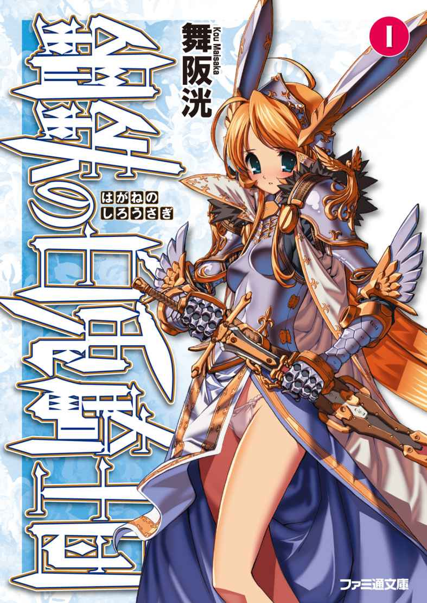
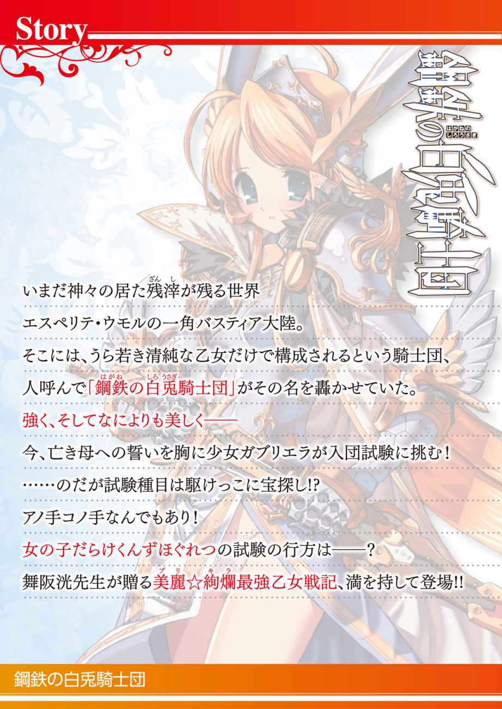
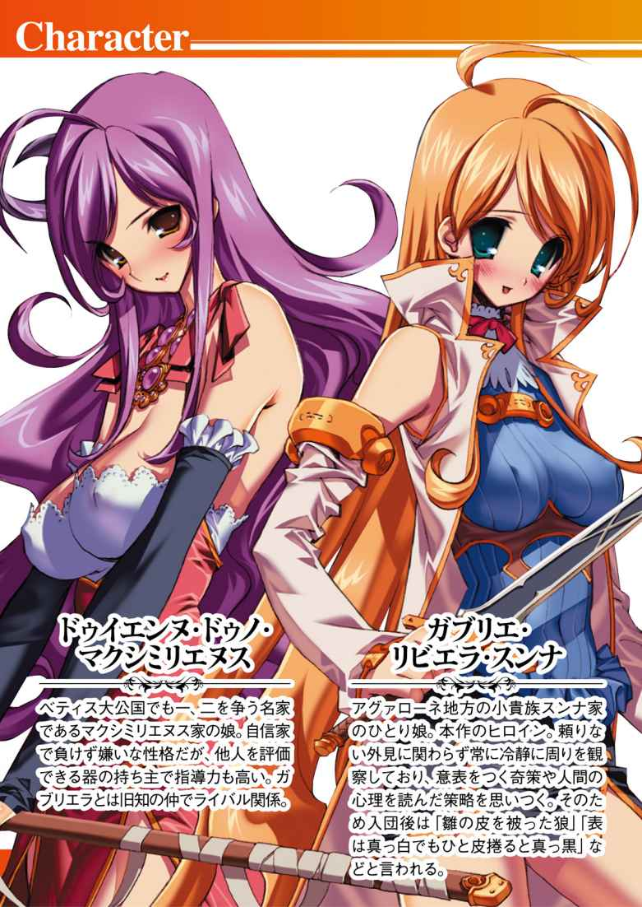
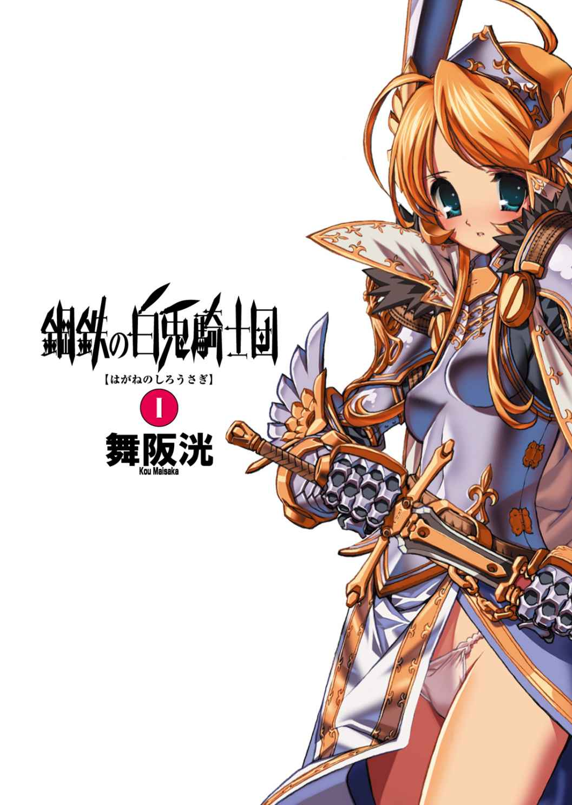
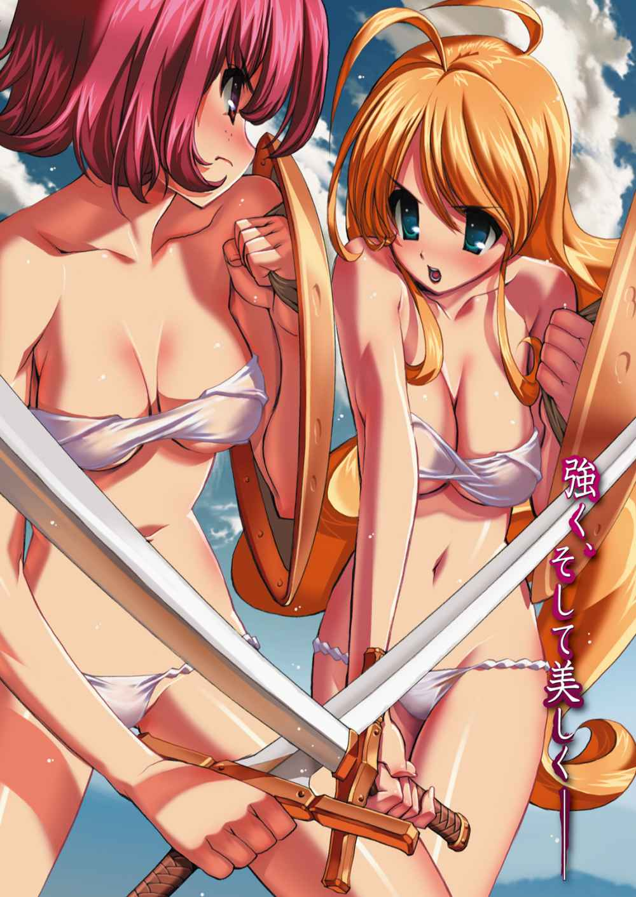
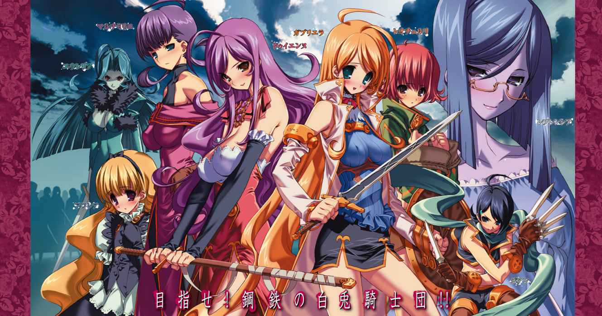
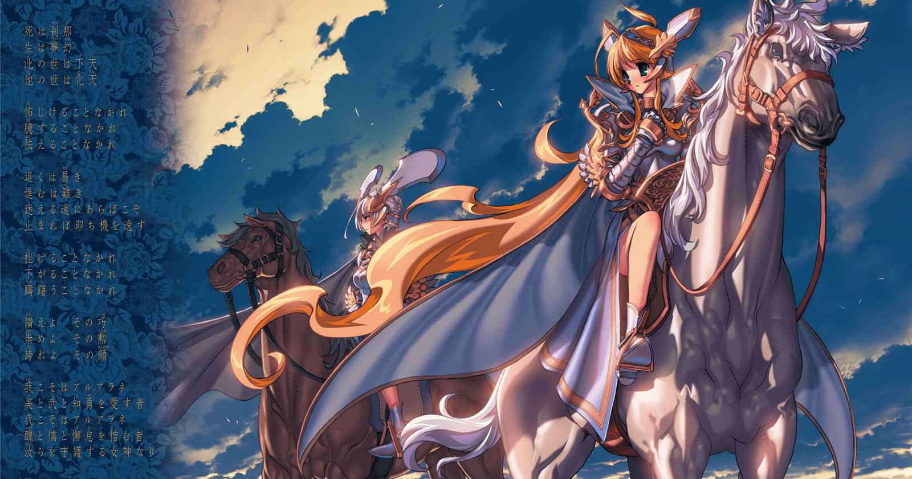
鋼鉄 の白兎騎士団 Ⅰ
著者 舞阪 洸
イラスト 伊藤ベン
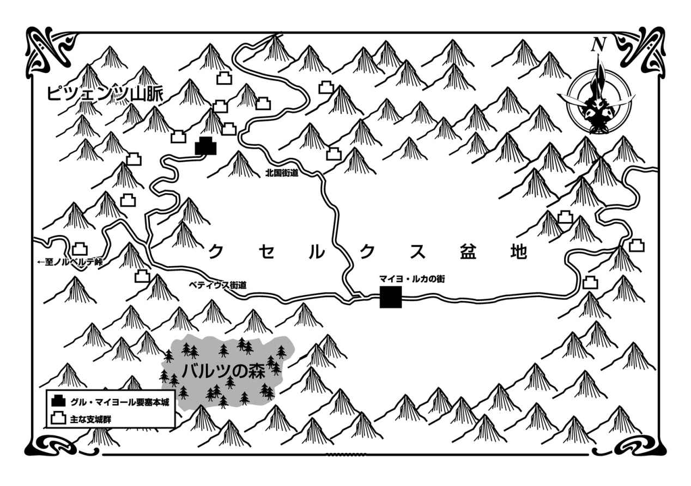
神々が人間界――エスペリテ・ウモルを離れてから、すでに久しい時が経つ。だが、かつて神々が居た残 滓 は、未だにエスペリテ・ウモルの至る所に残っている。
これはそういう時代、そういう世界の物語である。
エスペリテ・ウモルの一角を占めるバスティア大陸のアグァローネ地方東端、クセルクス盆地を本 拠 にする騎士団が在 った。結成以来、数百年の歴史を誇 る伝統と格式のある有名な騎士団で、その特徴として、うら若き清純な乙女だけで構成されていることが挙げられる。
この騎士団、正式名称を「守 護 天 アルアラネの加 護 を戴 く聖少女騎士団」というのだが、今ではその名の長さを嫌って、この名で呼ぶ者はほとんどいなかった。騎士団の紋 章 と特徴的な兜 から「鋼 鉄 の白 兎 騎 士 団 」と呼ばれることが多く、より短い通称を好む人々の間では――騎士団員本人たちを含めて――こう呼ばれていた。
鋼鉄 の白兎騎士団 、と。
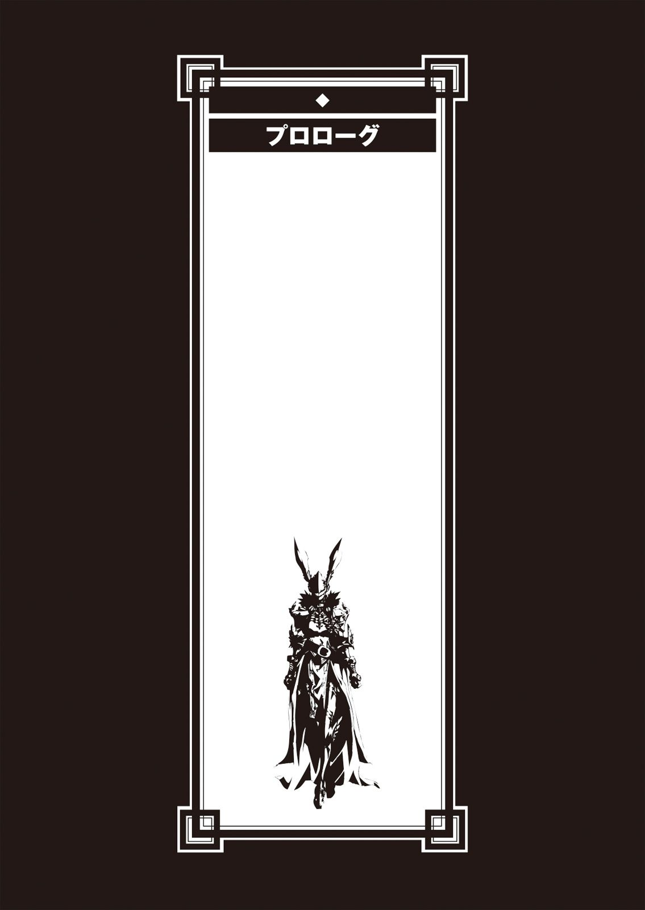
厚く垂れこめた鉛色の雲が空一面を覆 っている。昨夜来の雨こそ上がっていたが、もう一度、降りだしそうなほど大気は湿っていた。微 かに吹く風は生温く、重い空気がねっとりと肌にまとわりついて息苦しさを感じるほどである。すでに陽が昇って二時間ほど経つが、辺 りはまだ黄昏 のような薄暗さに支配されたままだった。
動くものの影一つない荒 涼 としたクセルクス盆地は、嵐の前の静けさとでもいうべき重苦しい静 寂 に包まれ、ひっそりと広がっている。盆地を取り囲む木々の少ない山々の赤茶けた山肌も、色を失ったように灰色にくすんでいた。
そのとき。
静寂に包まれ時の流れが止まったような灰色の世界に、わずかな動きが起きた。平原を見下ろす小高い丘の上に数頭の騎 馬 の影が現れたのである。馬はすべて遠目にも鮮やかな白馬で、堂々とした体 軀 をしているのが見てとれる。
白馬の数は四頭。馬上にまたがるのは、この地方に本 拠 地 を置く「守 護 天 アルアラネの加 護 を戴 く聖少女騎士団」、通称「鋼 鉄 の白 兎 騎 士 団 」の最高幹部たちであった。もっとも、彼女たち自身は「鋼鉄 の白兎騎士団 」という呼び名のほうを好んで使っているのだが。
四頭の馬の左の横腹には、戦闘用のカイトシールドがくくりつけられている。シールドの前面には「三 面 の白 兎 」の絵が鮮やかに描かれていた。この珍しい絵柄こそ、彼女たちが所属する騎士団の紋 章 であった。
彼女たちは、送りだした偵 察 部隊の帰りを待ちうけるべく、城 塞 から出て、この盆地を見下ろす丘まで出 張 ってきたのだ。
四頭の白馬にまたがった四人の幹部は、軽くてなおかつ対魔術防御 に優れた白 銀 の鎧 で全身を覆っていた。白銀の鎧も美しく目を引くのだが、それ以上に目を引くのは彼女たちが頭部に被 っている兜 である。
兜には白銀製の長い耳が付いていた。真っ直ぐ立っていたり、折れ曲がっていたりという違いはあるが、どの兜からも白く輝く兎の耳が飛びだしているのだ。遠目に見れば白兎が馬に跨 っているようなこの騎士の姿こそが、三面の白兎の紋章と共に「白兎騎士団」の名の由来となったのである。
いま被っている兜は頭部の一部だけを覆う軽装の物のため、彼女たちの美しい素顔を見ることができる。四人の顔色は一様に青ざめていた。無理もない。これから乾 坤 一 擲 の一大決戦に臨 もうというのだから。
今しも東と北から、バスティア大陸有数の強国――シギルノジチ経 国 とルーアル・ソシエダイ王国の遠 征 軍が盆地に迫ってきていた。
クセルクス盆地で見つかったレア・メタル――イリリジウムの採 掘 権を狙って、両大国が盆地を支配下に置こうと軍事行動を開始したのが、およそ二カ月前。それまで犬猿の仲だった両国が唐 突 に共同戦線条約を締 結 し、後 顧 の憂 いを断ったのち、遠征軍を送りこんできたのだった。
この世界の「国」は、一つの都市とその周辺を支配する都市国家が大半である。しかし、中には複数の都市と面的な広がりを持つ「大国」が存在していた。ルーアル・ソシエダイ王国やシギルノジチ経国、鋼鉄の白兎騎士団の庇護者 であるベティス大公国などは、その「大国」の代表的な存在であった。
白兎騎士団はマイヨ・ルカの街とクセルクス盆地を実効支配しており、半ば独立国家といってもいい存在である。だが、周辺の大国に対抗して独立を堅持していくのは至難の業だった。そのため、地域的な結びつきの強いベティス大公国と友好条約を結び、クセルクス盆地に対する白兎騎士団の支配権を認めてもらう代わりに、大公国に庇 護 者 となってもらっているのだった。
要するに、白兎騎士団が大公国の東の防波堤となる見返りに、他国がクセルクス盆地に触手を伸ばしてきたときには、大公国からの有形無形の援助が約束されているというわけだ。今回、大公国が、援軍を――少数ではあるが――送ってきたのも、そのような背景があるからだった。
兵力の単純比較では圧倒的に不利。音に聞こえた「鋼鉄 の白兎騎士団 」の幹部といえども緊張の色は隠せない。とはいえ、彼女たちが臆 しているとか、弱気になっているとか、そういうことはなかった。確かに鋼鉄の白兎騎士団は、うら若き美女ぞろいで有名だが、それ以上に、勇 猛 果 敢 な戦いをすることでこの世界に武 名 を轟 かせていたからである。
「また雨になるのかな」
空を見上げていた最高幹部の一人、アルゴラ・アスターシャ・アレスタが小さく呟 いた。長い銀髪と怜 悧 な顔つきが印象的な女性だ。
「もう雨は降らないと思います」
傍 らのレオノーラ・エレマル・サイクスがぼんやりとした表情で応 えると、アルゴラが訳 を訊 きたそうな顔でレオノーラを見た。
「風がそう言っていますもの。この西風が」
手を宙にかざして風を受けていたレオノーラが、ふとアルゴラに向きなおってそう応えた。彼女はアルゴラとは対照的に、茫 洋 とした捕らえどころのない表情だった。軽くウエーブのかかった金髪が綿 菓 子 のようにも見える。
「そうか。自 然 士 の資質があるレオノーラがそう言うのなら間違いあるまい。だが......雨が降ったほうが我々には有利だと思ったのだがなぁ。なあ、ガブリエラ団長」
アルゴラは、四人の中央にいる見事な白馬にまたがった少女に視線を向けた。
燦 然 と光り輝く白銀の鎧を身にまとったガブリエラと呼ばれた少女が、ゆっくりと振りむいた。大陸にその名を轟かす「鋼鉄 の白兎騎士団 」の団長というには相応 しくないあどけない顔に、邪 気 のない笑顔が浮かんでいる。彼女こそ、騎士団史上二番目の若さで団長に就 いたばかりのガブリエラ・リビエラ・スンナであった。
「そうでもありません、アルゴラ様」
「アルゴラでいい。鋼鉄 の白兎騎士団 の、今はおまえが団長だ」
「では......アルゴラ。雨は降らないほうがいいんです」
「なぜだ？ 雨が降れば大軍の迅 速 な移動が妨 げられるし、視界が落ちる分、地の利がある我がほうに有利に働くではないか」
アルゴラのその問いに応えずにガブリエラは、眼下に広がるクセルクス盆地に視線を戻した。
それまで黙って聞いていたクシューシカ・クセノフォン・ハイドリアノスが、ゆっくりと口を開いた。彼女は四人の中でいちばん大柄な女性で、顔つきも凜 々 しく髪も短いため、どことなく中性的な雰囲気を醸 しだしている。その雰囲気に相応しく、彼女の声は重く低く響いた。
「判らないな、ガブリエラ。いや、ガブリエラ団長。まず、戦場がこのクセルクス盆地の中だということからして判らない」
その言葉を受けて、レオノーラがぼそぼそと意見を述べた。
「そうですよ、ガブリエラ......団長。味方はベティス大公国からの援軍を入れても千五百しかいないのですし。それに比べて敵は輜 重 兵 を入れれば一万、戦闘兵力だけでも六千はいるでしょう？ 正面から戦って勝ち目があるとは思えませんけど。わたしたちに勝ち目があるとすれば、籠 城 して長期戦に持ちこみの援軍の第二陣を待つか、そうでなければ敵が態勢を整えないうちに奇 襲 するしかないと思うんですけど......」
「そうだぞ、団長！」
クシューシカとアルゴラが、レオノーラのしゃべりを途中で遮 って力強くうなずいた。
いったんは、ガブリエラの速戦即決作戦に賛同した三人だが、彼女の真意を聞いて驚いた。ガブリエラは、盆地の入り口で奇襲を行うつもりはないと言うではないか。ガブリエラは、盆地に入った敵が陣形を整えるのを待って正面から戦いを挑むのだと主張する。しかし、それでは......。
勝てない。誰もがそう思った。
ガブリエラは小さく左右に首を振ると、ゆっくりと振りかえった。
アルゴラ・アスターシャ・アレスタ。クシューシカ・クセノフォン・ハイドリアノス。レオノーラ・エレマル・サイクス。新生「鋼鉄の白兎騎士団」の最高幹部のうちの三人を前にしたガブリエラの顔には、相変わらず柔 和 な笑顔が浮かんだままだった。
「何か策 があるんだな、ガブリエラ団長」
アルゴラが、自らに言い聞かせるようにガブリエラに尋 ねると、彼女は笑みを絶やさないまま小さくうなずいた。
「はい。策はあります」
「どんな？ どんな策があるの？」
とレオノーラが、のんびりとした口調で訊いた。
「それは、まだ......」
「敵を欺 くには、まず味方から......か？」
クシューシカが些 か皮肉っぽく言うと、ガブリエラは大きく首を振った。
「いえ、そんなことではありません。ただ......」
「ただ......なんだ？」
アルゴラがガブリエラの顔を覗 きこんだ。
「ただ......そうですね。皆さんにはお話ししておいたほうがいいかもしれません」
「ああ、聞いておきたいな。千五百で六千に正面から戦いを挑んで勝つ方策をな」
そう言うアルゴラに対して、ガブリエラは小さく首を振った。
「正面から戦うわけではありません。むしろ戦わないと思っていただいたほうが......」
「戦わないって、では、どうするのかしら？ 降 伏 でもするのかな？」
レオノーラが小首を傾 げながら呟いた。
「ええ、降伏しようと思います」
「まあ!? 」
「なにい？」
「どういうことだ!? 」
ガブリエラの思いがけない返事に、三人は思わず叫んでいた。
「あの......考えてみてください。敵は六千以上いるとはいっても、二つの軍から成っているのです。ビスタマウィ将軍率 いる経国軍約三千と、バギット将軍率いる王国軍約三千五百です。そして、二つの軍を率いる将軍はとても仲が悪い」
「ははあ、団長が何を言いたいのか、少し判ってきたぞ」
クシューシカが思わず口元を歪 めた。
「その二人の将軍の不仲を衝 こうというわけか。だが、それと降伏するというのが、どう関係するのだ？」
クシューシカの問いに、ガブリエラはにっこりと微笑 んで応えた。
「ですから、その一方とだけ降伏のための下交渉を行ったとしたら、もう一人はどう思うでしょう」
「ああ、なるほどぉ」
レオノーラが、ぺたんと手を打った。
「相手が抜け駆けして、手柄を独り占めしようとしていると思うでしょうねえ、当然」
「はい」
ガブリエラは我が意を得たりと、大きく頷 いた。
「そうなれば、ビスタマウィ将軍とバギット将軍が互いに連携して軍を動かすことができなくなるでしょう」
「では、そうして敵の軍を分断しておいて、まず兵の少ない経国軍から先に叩こうというのか？ だが、我々騎士団五百に、大公の援軍一千を加えたとしても千五百にしかならない。経国軍とだけ戦うとしても、千五百対三千では苦戦は免 れないではないか。もしも経国軍を破ったとしても、ソシエダイ王国軍三千五百が無傷で残っているのだ。最初の戦闘で疲 弊 した我々が勝てるはずがない」
アルゴラが厳しい顔つきでそう断じると、ガブリエラはまたも首を振った。
「大公がつけてくださった一千の兵は動かしません。彼らには、いざというときのために後方で待機していてもらいます」
「なに？ すると、戦うのは我々五百だけだと!? それも、奇襲もせずに正面からぶつかって？ 正 気 の沙 汰 ではないな。それでは、たとえ敵の分断に成功しても、端 から勝負にならない」
クシューシカが強い口調で言うと、ガブリエラを睨 みつけた。
「いえ。まだ、策はあるのです。いってみれば、今のは準備段階なのです」
「ほほう、奥の手があるというのか。それは頼もしいが。いったい、どんな手だ？」
「はい、クシューシカ様」
「わたしも、クシューシカでいい」
「では......クシューシカ。先ほどアルゴラが言ったとおり、まず、ビスタマウィ将軍率いる経国軍から叩こうと思います」
「しかし......」
クシューシカが異議を唱えようとするのを遮って、ガブリエラは話を続ける。
「そうです。我々が戦ってしまっては、たとえ緒 戦 に勝っても、あとに控えるバギット将軍の軍団と戦えなくなってしまいます。ですから、我々は戦わないのです」
「言っていることが、よく判らないんだが」
クシューシカは困惑した顔で隣のアルゴラを見た。アルゴラもガブリエラの真意が判らないらしく、小さく肩をすくめるだけだった。
「レオノーラは？」
クシューシカに訊かれて、レオノーラもゆるゆると首を左右に振る。ガブリエラに向きなおったクシューシカは、小さくため息をついた。
「頭の悪いわたしたちにも判るように、もう少し易しく説明してくれないかな、団長」
「いやです、クシューシカ」
くすりと、ガブリエラが笑った。
「しかしな、団長が何を考えているのか、どうしても判らない。敵を分断して経国軍を叩くのはいい。それは理に適 っている。だが、そのために我々は戦わないと言う。援軍も動かさないと。それでは、経国軍を叩く軍はいったいどこにいるのだ!? 」
「もう一つ、軍がいるのを忘れてはいませんか、クシューシカ？」
「なに？ もう一つ軍がいる!? いったい、どこにそんな軍が......」
そこまで言ってクシューシカは、はたと気がついた。いる。たしかに、もう一つの軍が。しかし、それは......。
「おい、団長、まさか、バギットの......ルーアル・ソシエダイの軍で経国軍を叩こうと言うのではないだろうな!? 」
「はい。クシューシカ。言うのです」
ガブリエラは、これ以上ないという極上の笑顔で三人を見渡した。あまりに突 拍 子 もないその考えに、三人は口をぽかんと開けて呆 然 とガブリエラを見つめかえすことしかできない。
「バギット将軍の軍団とビスタマウィ将軍の軍団が戦ってくれたら、ずいぶんと楽になると思いませんか？」
とガブリエラが言うと、やっとのことでアルゴラが口を開いた。
「......いや、それは思うが。しかし、そんなことが可能だとは思えないぞ」
「そのための工作が、降伏交渉なのです」
「そ......それだけで敵が同士討ちを始めるほど甘いとは思えない。仲が悪くても、彼ら二人は百 戦 錬 磨 の将軍なのだから」
アルゴラが疑わしそうな顔をするが、ガブリエラは平然とした顔で話を続けた。
「ええ、それは承知しています。ですから、次の手を打ちます。決定打となるべき手、ビスタマウィ将軍とバギット将軍が戦わざるを得なくなる手を」
ガブリエラが力強く言いきると、三人は黙って顔を見合わせた。
しばしの沈黙の後に、アルゴラが口を開いた。
「ガブリエラ団長、よかったら我々にも、その決定打という奴を教えてくれないかな」
「はい、アルゴラ」
ガブリエラは楽しそうに、自分の胸の内にしまっておいた秘策を三人に打ち明けた。
「なんだとう!? 」
ガブリエラの作戦を聞いた三人は大きくのけ返った。ふだんは茫洋としてめったに感情を表さないレオノーラも、今回ばかりはずいぶんと驚いたようで、勢いあまって馬上から転げおちてしまった。
「な、なんという作戦を考えるのだ......」
アルゴラが声を震わせた。
転げおちたレオノーラがのろのろと立ちあがると、ぼそりと呟いた。
「素敵な作戦ですこと......」
「だってわたしたちは『鋼鉄 の白兎騎士団 』なのですもの。ね、クシューシカ」
ガブリエラは馬上で固まってしまったクシューシカに小さくウインクして見せた。
のろのろと立ちあがって鎧についた泥をはたいていたレオノーラが、ふと顔を上げた。
「戻ってきたようですよ、ジアン・ジャンが。いま、大地が教えてくれました」
その声に、ガブリエラ、クシューシカ、アルゴラの三人が、はっと振りむいた。
三人は眼下の盆地に目を凝 らす。しばらくすると、こちらへ向かって猛 烈 な勢いで疾駆してくる数頭の馬の姿が目に入ってきた。それらは白馬ではない。どこにでもいるような鹿毛や黒毛の馬だ。
「ジアンが......戻ったか」
アルゴラが緊張した声をもらすと、クシューシカがゆっくりと頷いた。
「敵軍がクセルクス盆地に迫ってきたということだな」
「ここまでの行軍に一月もかけるとは、ずいぶんと慎重だな」
アルゴラが皮肉っぽい笑みを浮かべてそう言うと、腕組みしたクシューシカが重々しい口調で応えた。
「両国とも、それだけ本気だということだろう。最近は、どちらも露 骨 な膨 張 政 策 を採っているからな。イリリジウムは喉 から手が出るほど欲しいはず」
「と同時に、ベティス大公国の独占だけは許さないというわけだ」
クシューシカは目を細め、遙 か彼方、街道が盆地へと抜ける辺りを見つめて言った。
「敵の陣容はどうかな」
レオノーラが、気のない調子で応える。
「ジアンなら、敵の様子を細大 漏 らさず探ってくれたでしょう」
「そうだな。ジアンなら間違いない」
クシューシカとアルゴラも頷く。
そう、ジアンならば。
なぜか唐突に、ガブリエラは初めてジアンと出会ったときのことを思いだしていた。あのときジアンは一人で柔 軟 体 操 をしていたのだ。
一つ思いだすと、いろいろな思い出が次々と蘇 ってくる。
人間、死ぬ前には、今までの人生で経験したことが次々に脳 裏 を過 ぎるというけれど......では、わたしはこれからの戦いで死ぬのだろうか。
ガブリエラは、ふと、そんな弱気に襲われた。
いけない、いけない。今のわたしは栄 えある鋼鉄 の白兎騎士団 の団長なのよ。わたしが弱気になっては、勝てる戦 にも勝てなくなる。
ガブリエラは思わず知らず、守護天アルアラネの御 言 葉 を小声で唱えはじめる。
死は刹 那
生は夢 幻
此 の世は下 天
他 の世は化 天
怖 じけることなかれ
臆することなかれ
怯 えることなかれ
退 くは易 き
進むは難 き
迷える道にあらばこそ
止まれば即ち機を逸 す
挫 けることなかれ
下がることなかれ
躊躇 うことなかれ
讃 えよ その巧
崇 めよ その勲
誇 れよ その顔
我 こそはアルアラネ
美 と武 と知 勇 を愛す者
我こそはアルアラネ
醜 と懦 と懈 怠 を憎む者
汝 らを守護する女神なり
いつの間にか、ガブリエラの小さな声に三人の声が被さっていた。美しき四人の武闘姫の唱和が辺りに響きわたる。
死は刹那
生は夢幻
此の世は下天
他の世は化天
怖じけることなかれ
臆することなかれ
怯えることなかれ
退くは易き
進むは難き
迷える道にあらばこそ
止まれば即ち機を逸す
挫けることなかれ
下がることなかれ
躊躇うことなかれ
讃えよ その巧
崇めよ その勲
誇れよ その顔
我こそはアルアラネ
美と武と知勇を愛す者
我こそはアルアラネ
醜と懦と懈怠を憎む者
汝らを守護する女神なり
御言葉を唱えおわると、ガブリエラの心は勇気で満たされ、体には熱い血潮が滾 った。不思議なことに、先ほどまでの不安が噓 のように消えていた。
「いよいよ戦いが始まりますね」
ガブリエラが静かに三人を見渡した。どの顔からも不安や緊張が消え、覚悟を決めた者だけが持つ静 謐 と穏やかさに満ちている。
「ああ、始まるな。クセルクス盆地の支配権とイリリジウムの採掘権を賭 けた決戦が」
とクシューシカが応えると、ガブリエラは、にっこりと笑ってうなずいた。
「頑張りましょう」
初 々 しくも不 敵 な笑みを浮かべたまま、ガブリエラはあの日のことを思いだした。後になって振りかえれば、自分が騎士団の団長に就任することになった数奇な道 程 の出発点であったあの日のことを。
後に「ガブリエラ戦 役 」と呼ばれ、バスティア大陸諸国で長く語りつたえられることになった戦いの幕が、もうじき切って落とされようとしていた。
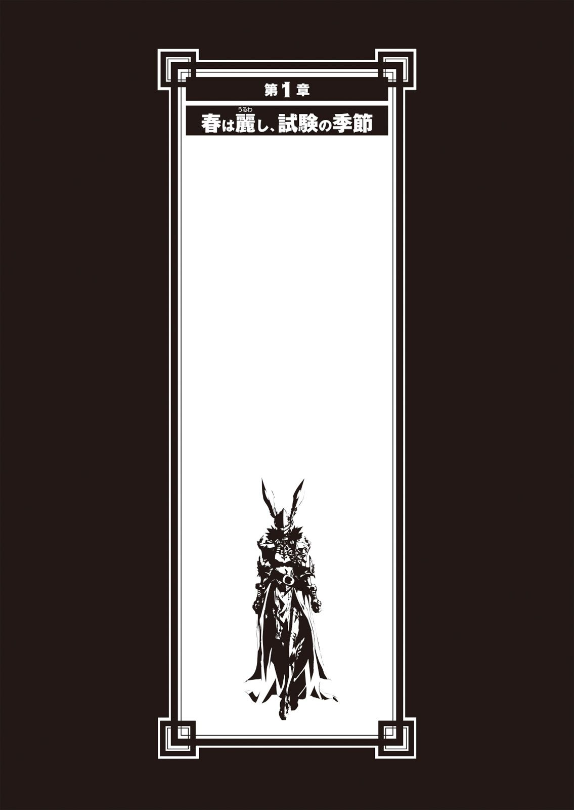
１
青の世紀四五年、魚の月――。
日陰に積もっていた雪もすっかり姿を消し、凍っていた小川に爽 やかなせせらぎの音が戻ってきた。冬の間、赤茶けて生命力をなくしたかのように萎 れていた野草も緑色に萌えようとしている。
蒼 穹 を巡る太陽は日毎に高さを増し、降りそそぐ陽射しも力強さを取りもどしつつあった。麦畑は青く色づき、雲雀 の嬉 しそうな囀 りが、吹きわたる春の微風 に乗ってどこからともなく聞こえてくる。落葉して寒々としていた森の木々も、いつの間にか若葉を身にまとい、一雨降るごとに緑の濃さを深めていた。
厳しい冬が終わり、アグァローネの地にも、待ちわびた春の訪れがはっきりと感じられるようになっている。
この季節になると、この地方の年頃の娘たちは、そわそわと落ちつかな気な様子を見せる。彼女たちは沸 きたつような気持ちを抑 えきれなくなり、戸外へ出て、いっせいに身体を動かしはじめるのだ。寒さと積雪のために外での運動が思うようにできなかった真冬の分も取りもどそうというかのように、彼女たちは真剣な面もちで剣や槍や格闘技の鍛 練 を繰りかえすのだった。
もうじき入団試験が催 される。栄 えある「鋼 鉄 の白 兎 騎 士 団 」の入団試験が。
そう、春は。
長く陰 鬱 な冬が終わり、すべてが生き生きと動きだす春は、この地の若い娘にとっても、夢と希望に満ちた新しい出発の季節なのである。
ここ、小貴族スンナ家の庭でも、それは例外ではなかった。今しも庭では、華 奢 な体に不釣り合いなほど大きな両刃の剣を両手で持った二人の若い女が目を輝かせながら剣を振るっていた。
片方が踏みこんで剣を叩きつけ、もう一方が剣の腹で受けとめる。剣がぶつかると反動を利用するように互いに退 いて、もう一度、剣を構えなおす。構えが少しでも早いほうが次の踏みこみを行い、剣を叩きつける。
剣がぶつかる度に甲 高 い金属音が響き、両者の間で火花が散った。
あるときは片手で、あるときは両手で、大きくて重い剣を自らの手の延長のように扱う二人の動きは、あくまで軽くどこまでもしなやかで、見ようによっては剣 舞 を踊っているような優 雅 さだった。
両人の体 捌 きや足の運び、剣を扱う技量はかなりのレベルに達しており、思わず見とれてしまうほどだったが、それ以上に目を引くのが二人の出でたちだった。
二人とも身に着けているのは、僅 かに白い胸 覆 いと下 帯 だけ。剣を大きく振るう度に、きつく巻かれた胸覆いの布から豊かな胸が飛びだしそうだ。そんな恰 好 のまま、訓練とは思えない激しさで打ちあっているから、いくら刃が潰 してあるといっても、受けそこねれば骨折しかねない。それでも二人は、臆 することなく躊躇 うことなく剣を振るいつづける。
年頃の若い娘が裸同然の恰好で剣を振るっている姿に奇異の念を感じるむきもあるだろう。だが、この地方では特段、珍しいことではなかった。というより、ごく当たり前の光景であった。
鋼鉄の白兎騎士団への入団を希望する健康な若い娘たちなら、貴族といわず騎士階級といわず平民といわず、みな裸同然の恰好で剣や槍や体術の訓練に勤 しむ。というのも、騎士団の入団試験における演 武 ――剣や槍、あるいは素手による格闘技など――では、美しさが重要な要素になるからだった。
嫉 妬 深いが、絶大な力を誇 る騎士団の守 護 天 アルアラネは、若く美しい未婚の女性が好きだった。というよりも、アルアラネは美しい肉体を持つ未婚の女性しか加 護 しない女神なのである。おかげで、美しい肉体を持ち、剣や槍など武術に秀 で、頭脳明 晰 でなおかつ未婚であることが、騎士団入団のための必 須 の条件になっていた。
この地 では、鋼鉄の白兎騎士団の人気は絶大である。伝統と格式のある名門騎士団であるというのもその理由の一つだが、それ以上に、知 勇 美 武 を兼ねそなえた若い女性しか入団できないという条件が、この地方における騎士団の魅力を大いに高めていた。
何しろ、騎士団に入団することが即ち、その女性が知勇美武すべてを兼ねそなえているという証 となるのだ。保証人は守護天アルアラネだから、その信用力は絶大だった。
一方、騎士団の守護天アルアラネは若い乙女しか守護しないので、団に留まるのにも限界がある。団の中 枢 にいる幹部を除くと、二十代も後半になれば積極的に除 隊 を勧 められたりもする。一度入ったら簡単に抜けられない騎士団も多いが、白兎騎士団に関しては、その手の心配は無用だった。
所定の年数を勤 めあげて団を除隊した女性は、あらゆる方面から引く手数多 の人気者になれる。
自家よりも家格の高い家との婚 姻 も可能になるし、ベティス大公国の政 務 官 僚 、あるいは軍事官僚として迎えられることも多い。ベティス大公国だけではない。白兎騎士団出身者なら、諸 手 をあげて歓迎するという国々も多かった。
在籍中に手柄を挙げれば、団を辞めるときに褒 奨 金 を得られる。その資金を元手に商売を始め、成功する者も続出している。騎士団出身者のネットワークが各地に張りめぐらされているのと同時に、やはり白兎騎士団出身者であるということが、商売に必要な信用に結びついているのである。
だから、この地方では――いや、この地方出身者でなくても――上は大貴族の娘から下は平民の娘まで、騎士団に入って栄 華 栄 達 を夢見る者が後を絶たないのだった。
入団試験に備えて若い娘たちは、みな裸に近い恰好で陽の光を浴び、全身くまなく綺 麗 に日に焼こうとする。こんがりと小麦色に焼けた健康そうな肌こそ、アルアラネが求める美しさの条件の一つなのだった。
そしてもう一つ、裸での闘いに慣れておくという実戦的、心理的な側面もあった。
守護天アルアラネの御 前 で――現実としては女神像の前で、であるが――行われる演武は、先に述べたように、女神に向けて受験者の強さと美しさを披 露 するためのものであるから、身に着けてよいものは胸覆いと下帯のみと決められていた。
当然のことながら、その場にあるのは女神像だけではない。騎士団の最高幹部が立ちあうことになっている。入団希望者は、居並んだ幹部の前で演武の試験に挑むことになるが、そのときに恥ずかしがったり躊 躇 したりしては、たちまち減点されてしまう。美しい肉体や鍛えられた剣や槍の腕、そして堂々とした闘いぶりを幹部たちに見せつけなくては合格はおぼつかない。
だからこそ、テストを受けようとする若い娘たちは、裸同然での戦いに慣れておこうと、こうして入団試験が近づくと、本番さながらの恰好で剣や体術の訓練を繰りかえすのだった。
日中とはいえ、春まだ浅いこの季節、外気には冷たさが感じられるが、二人の肌には玉の汗が浮きでてきていた。
やがて幾 筋 もの汗が滑らかな肌の上を滑りおち、胸や股間を隠す薄布を濡 らした。濡れた白い布越しに、豊かな胸の頂点にある桜色の乳首や股間の淡い茂 みがうっすらと透 けて見える。それでも二人は一 心 不 乱 に重く大きな剣を振るいつづけている。
そうしてどれほどの時間が経っただろうか。ずっと互角に見えた闘いも、しだいに優劣がはっきりと見えてくるようになった。
と、そのとき、ひときわ大きな金属音が辺 りに響いた。相手の剣の衝 撃 を受けきれなかった娘が、手にした剣を取りおとす。
「まっ、参りました、ガブリエラ様っ！」
大きく息を弾 ませると、剣を失った娘はその場にへなへなと腰を落とした。相手の剣を叩きおとした娘は、ふぅと一つ大きく息を吐くと、にっこりと微笑 んだ。
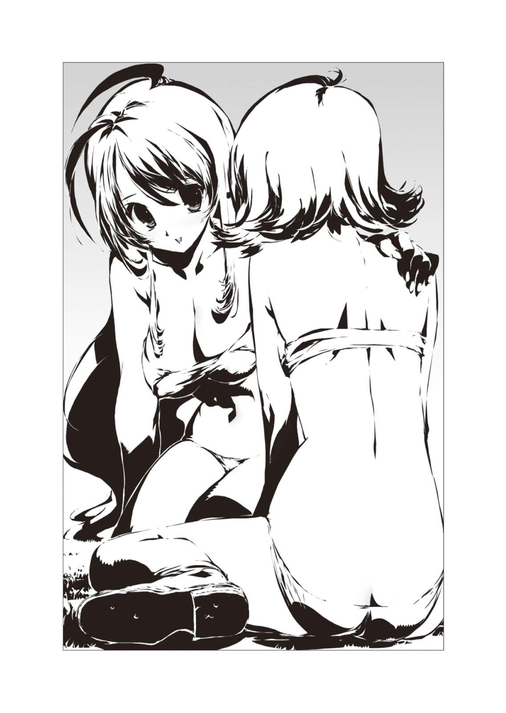
「やっぱり、あなた強いわ、レオチェルリ」
芝生 の上にへたり込んでいたレオチェルリが慌てて居住まいを正す。
「とんでもございません。わたしなど、ガブリエラ様の足下にも......」
レオチェルリは、ガブリエラ付きの侍 女 である。年は十七でガブリエラと同い年だ。背丈はガブリエラよりやや高い。くるくると巻いた短めの赤毛と切れ長の茶色の瞳 が印象的な娘で、肌はガブリエラよりも浅黒く、手足もがっしりとして筋肉質だった。これは彼女が農民の出身で、幼少の頃から畑で働いていたことが影響している。農民出身ではあるが、剣の腕が確かなのを見込まれてガブリエラに仕えていた。
小貴族のスンナ家は、それほど大勢の召使いを雇 えるわけではない。レオチェルリは、ガブリエラの身の回りの世話やら買い物のお供やら剣の練習相手やらを一人でこなし、毎日、朝から晩まで働いている。ガブリエラも、そんなレオチェルリを大いに信頼し、同時に頼りにもしている。一人っ子のガブリエラとしては、召使いというよりも姉妹に近い感覚だった。
手にした大剣を芝生に振りおろし、切っ先を地面に突きたてると、剣の柄から手を離し、手の甲で額 の汗を拭 ったガブリエラは、レオチェルリとは対照的に真っ直ぐで細くて長い金髪を背中に垂らしていて、手足も細めである。そうはいっても、大剣を平気で振りまわすのだから、筋肉質であることには変わりがない。
ガブリエラが大きく首を左右に振った。彼女は、レオチェルリが多少の手加減をしてくれているのを知っている。本気で打ちあえば、三本に一本は......いや二本に一本は取られるかもしれないと思っている。
レオチェルリの剣は、ガブリエラのように、それなりの師について習ったのではない。幼い頃、軍に勤める兄に手ほどきを受けただけで、あとはほとんど自己流である。独学独習でここまで強くなれるというのが素晴らしいと、ガブリエラはいつも感心していた。
「そんなことないわ。ねえ、レオチェルリ、わたしといっしょに鋼鉄 の白兎騎士団 の入団試験、受けてみない？」
レオチェルリは、ぶるぶると首を振る。
「とんでもありません、わたしごときが、そんな畏 れ多い。白 兎 騎 士 団 は、ガブリエラ様のような美しい肉体と気高い精神と比類ない剣の腕を持った頭脳明晰なお方のみが入団できるところなのです」
レオチェルリは、ガブリエラの美しくも優美なセミヌードにちらっと視線を走らせ、ほぅとため息をつく。
ガブリエラの小麦色の肌は、オリーブオイルを塗っているために、てかてかと光り輝いている。手足はすらりと長く、腕にも足にも腰にも腹にも背中にも、贅 肉 の一片すら見当たらず、有名な彫刻士の手になる彫像かと見 紛 うばかりだ。
美しい円 錐 形 に盛りあがっている乳房は、バスティア大陸一美しい独立峰と呼ばれるメルロドーネ山を双つ並べたかのようだ。
侍女として、いつも風呂を共にしているレオチェルリは、双つの美しい円錐形の高山の頂に、桜色をした真 珠 貝 のような美しい宝石が載 っているのを知っている。もちろん侍女として、いつも風呂を共にしているレオチェルリは、ガブリエラの股間の茂みが髪の毛に負けないほど美しい金髪であることも知っている。
「ガブリエラ様のお体は、九十九守護天中でも美しさでは一、二を争うといわれる美 貌 の守護天アルアラネ様にも劣らないのではないかと、わたしはそう思います」
ガブリエラが、まぁ、と少し驚くような顔になる。
「そんなふうにお愛 想 を言っても、何も出ないわよ、レオチェルリ」
「お愛想などではございません」
「ほんとう？」
ガブリエラが悪戯 っぽい笑みを浮かべた。
「ほんとうでございます。それに、白兎騎士団は、わたしのような貧しい農家の娘が入って良い場所ではございません」
「そんなことないのに。騎士団に入るのに必要なものは実力だけだわ。貧富の差も身分の差も、守護天アルアラネ様の御前では無関係なのですもの」
「たてまえの上ではそうかもしれませんが、けれど実際問題として、騎士団の幹部を構成されているお歴々は大半が大貴族の家柄ですし、団員だって七割方は貴族か騎士階級のお嬢様方です。そのようなところにしゃしゃり出ていく勇気は、わたしにはございません」
と言ったレオチェルリは、そのままうつむいて動かなくなってしまった。その様子から、言葉では否定していても、彼女が心の奥では騎士団に入りたいと願っていることが見てとれる。
だが、いくら身分は問わないといっても、入団試験を受けるにはそれなりの保証人が必要だ。レオチェルリが試験を受けるとなれば、保証人は雇い主であるスンナ家の当主が引きうけることになるのだが、慎 み深いレオチェルリが、そのようなことを願いでるはずもなかった。それはガブリエラにも判っている。
何か、彼女がその気になる出来事が必要よね。ガブリエラは、いつもそう思う。だって、ほんとうにもったいないのだもの。
ガブリエラはうつむいたまま固まっているレオチェルリに近づき、そっと腰を屈 めて彼女の肩を抱いた。
「さ、レオチェルリ、そろそろ戻りましょう。汗をかいたまま、いつまでもこんな恰好でいては風 邪 を引いてしまうわ」
はっとして顔を上げたレオチェルリが急いで立ちあがり、ガブリエラに向かって頭を下げた。
「気が利きませんで、申し訳 ございません。すぐにお湯を用意いたしますので、まずは汗をお流しください」
「お願いね」
「そのあとは、試験に備えて勉強をしなくてはいけませんよ、ガブリエラ様」
レオチェルリの言葉に、ガブリエラは顔をしかめた。
「剣には自信あるんだけど、そちらはねぇ」
「駄目でございますよ、ちゃんと勉強なさらないと。筆記試験に受からなければ、どれだけ実技の成績が良くても、合格できないのですから」
「判っているわよ、レオチェルリ」
苦笑しながら地面から剣を引きぬいたガブリエラは、自ら剣を提 げたまま、レオチェルリを引きつれて屋敷のほうへと戻っていった。
こうしてガブリエラは毎日、レオチェルリを相手に剣の稽 古 をし、父がつけてくれた個人教師に歴史や戦術、科学や魔術、語学についての知識を叩きこまれ、入団試験目指して必死の努力を続けたのであった。
２
やがて魚の月も終わりに近づき、鋼鉄の白兎騎士団の入団試験が目前に迫ってきた。ガブリエラとレオチェルリは、ガブリエラの自室に籠 って試験の準備に勤しんでいた。
ガブリエラの部屋は館の二階にあった。基本的に石造りの館なので、二十畳ほどの広さがある彼女の部屋の壁も天井も石でできている。年頃の貴族の娘の部屋ともなれば、壁や天井は綺麗に彩色されたり、あるいは絵が描かれていたりするのが普通だが、ガブリエラの部屋は石の地肌が剝 きだしになったままだ。
中庭に面した側の壁にはガラスの嵌 ったアーチ型の窓が二つあるものの、日中でも充分に明るいとはいえない部屋では、壁や床に設 えられた燭 台 の上で、盛んに蠟 燭 が燃えている。
四囲の壁には背の高い書 架 が取りつけられ、各々の棚は背の厚い数多くの書物――歴史の書、魔術の書、戦術の書、科学の書、医薬の書、計数の書など――が、ずらりと並んでいた。どれもこれも分厚く重そうで、人を殴れば立派な凶器になるのではないかと思われる物ばかりだ。
まだ活 版 印刷など発明されていない世界のこととて、書物は基本的に版木刷りか手書きなのである。大量生産が不可能であるがゆえに、書物はとても高価で貴重な物だったが、白兎騎士団入団を望むガブリエラの願いを叶えようと、父は惜しげもなく娘に書物を買いあたえていた。
ほかに目立つ物といえば、剣や槍、弓や弩 などの武器類と、軽装アーマーなどの鎧 の類 だ。床の上には、普通の剣より重く作ってある素振り用の銅の長剣が転がっていたり、体術訓練用の大きくて長いマットが敷いてあったりと、とても若い娘が暮らしているとは思えない殺 風 景 な部屋だった。
二人はこの部屋で、入団試験に持っていく荷物をまとめているところだった。
騎士団の入団試験は一日や二日では終わらない。短くて四～五日、長いときには十日以上に亘 って続けられることもある。その間の着替えやら勉強に必要な道具やら――筆記用具や参考書、記録帳など――自前の剣やら履き物やら、携 行 しなくてはならない物は多岐に亘る。
試験の間、受験者たちは世間から隔 離 されて共に暮らすことになるから、身の回りのことは一人で片づけなくてはならない。たとえ貴族のお嬢様であっても、最低限のことをこなせないと、試験の点数云 々 以前に立ち往生してしまう仕掛けだった。
剣や格闘技さえできればいいというものではない。何しろ合格すれば全員が一回生。どれほど上級貴族の娘であっても、多くの先輩方のために、炊 事 、洗 濯 、掃 除 などの雑用をこなさなくてはならないのだから。
共同生活での適性を見るために、基本的に試験期間中は自炊――食糧は団から提供されるが――となる。すべてを従者や召使い任せにして暮らしてきた何もできないお嬢様など、団にとっては厄 介 者 でしかない。その手の勘違いお嬢様には早々に引きとっていただきたいというのが団の幹部の偽 らざる本音であった。
それだけではない。受験者同士でグループを組んで課題に立ちむかわなくてはならないサバイバル試験もある。そこではリーダーシップや臨機応変な適応力も試される。
少数精鋭。白兎騎士団の基本方針はまさにそれだった。そのため、どれほど入団希望者が多くても、どれほどの名門貴族の娘であっても、どれほどの有力者が保証人であっても――たとえベティス大公本人が保証人であっても――厳正で厳格な試験に合格しない限り、騎士団に入団することはできないのだった。
ガブリエラはいつもレオチェルリの世話になっているが、たいていのことは、やろうと思えば自分でできる程度には躾 られている。だから、試験期間中、何日も隔離されることに不安はない。
不安があるとすれば、何がどのくらい必要になるか、まったく読めないことであった。入団試験では、何をどれだけ持ちこむかは受験者の裁量に任されている。結果、必要な物が足りなくなっても、本人の責任ということだ。
だが、大量の荷物を持ちこもうとしても不可能だ。荷物はあくまで受験者本人が持ちこむことが大原則であり、従者や召使いに運ばせることはできなかった。つまり、何をどれだけ持ちこむかという判断も試験のうちということなのである。
考えようによっては、荷物をまとめるこのときから、すでに試験は始まっているともいえる。ガブリエラもレオチェルリも、頭を悩ませながら、用意した品々の品定めと荷造りに余念がなかった。
「着替えは、このくらいでよろしいですかしら、ガブリエラ様？」
はち切れそうなほど膨 らんだ大きな麻袋を抱えて、レオチェルリが訊 いた。
「う～～ん」
首を傾 げながら、ガブリエラが小さく唸 った。
「ちょっと多すぎないかしら。服だけでそんな調子では、ほかの物と併 せると、一人では持ちきれなくなってしまうわね」
「そう......ですね。受験者が自分で持ちこめるだけの荷物しか持っていけない決まりでしたね」
抱えていた大きな荷袋を床の上に下ろすと、レオチェルリは小さくため息をついた。
「わたしがご一緒できれば、こんな物くらい、四つでも五つでも持っていけるのに」
すかさすガブリエラが言った。
「あら。だったら、あなたも受験すればいいのよ、レオチェルリ」
ガブリエラの口調はあくまで真剣で、心の底からそう思っていることがレオチェルリにも判る。だからこそ、彼女は当惑してしまうのだ。
それが可能なら、どんなに嬉しいだろうか。自分もいっしょに受験できれば、必ずガブリエラ様の役に立てるのに。
そう思っても、レオチェルリは自分の立場では言いだせない。彼女はジレンマに身 悶 えしそうになりながら小さな声で応 えた。
「いえ、ガブリエラ様、そういうわけには......」
「ああ、それは良い考えだな」
突然、部屋の入り口で男の声がした。二人が首を振りむけると、細身で背の高い男が立っていた。いかにも高価そうな白い絹のブラウスを着込み、革製のタイツを穿 き、袖無しの長羽織を羽織った男は、目を細めてガブリエラとレオチェルリを見つめた。
「お父様」
「旦 那 様」
男はスンナ家の現当主、ガレッサンドロ・リバイオ・スンナであった。
「いい考えって、どういうことですか、お父様？」
ガレッサンドロはにやにやと笑いながら、娘の部屋に足を踏みいれる。
「だからさ、ガブリエラ、おまえとレオチェルリの二人で受験すれば、荷物を三人分は持っていけるじゃないか。いや、四人分はいけるか？」
ガブリエラの顔が、ぱぁっと輝いた。
「お父様！」
足を止めたガレッサンドロはレオチェルリに向きなおり、使用人の顔を覗 きこむように言った。
「荷物の二人分や三人分、持てるだろう、レオチェルリ？」
「え......あの......」
ガレッサンドロが何を言おうとしてるのか、レオチェルリはまだ把握できていないようで、目を白黒させている。
「では、お父様、レオチェルリの保証人になってくださいますのね!? 」
「もちろんだ。レオチェルリには騎士団を受験する資格が充分にあると、わたしは思っているよ。それにだ」
ガレッサンドロは、レオチェルリに向かって軽く片目を瞑 ってみせる。
「どうもガブリエラを一人でやるのは心配でな。誰かお守りが付いていてくれないと不安でしかたがないのだ。レオチェルリ、試験の間、ガブリエラのことをきちんと見張っていてくれよ」
「だ......旦那様！」
レオチェルリの目に熱いものが溢 れだす。
「よかったわね、レオチェルリ」
飛びつくようにして、ガブリエラがレオチェルリに抱きついた。
レオチェルリは呆 然 とした顔でガレッサンドロを見ていたが、やがて我に返ると、優しく丁 寧 にガブリエラの体を自分から引きはなしてから改めて正座になって姿勢を正し、自分の額を石の床に擦 りつける。
「ありがとうございます。ありがとうございます！」
「頼んだぞ、レオチェルリ。ガブリエラの軽 挙 妄 動 はおまえが止めてくれ」
「ま、お父様」
ガブリエラが顔を上げ、父の顔を睨 みつける。
「そういう言い方は、まるでわたしが考えなしの間抜けのように聞こえるから、やめてくださらない？」
「ははは、そういうわけではない。だがな、おまえは白兎騎士団のこととなると、少しばかり肩に力が入りすぎる傾向にある」
「そ......そんなことは......」
ありません、と父の言葉を否定しようとして、ガブリエラは口ごもってしまう。なんといっても母親のことがある。端 で見ていると、そのように見えるのかもしれない。
「だから、そこをレオチェルリに抑えて欲しいんだよ、わたしは。おまえが一緒にいてくれれば、わたしとしても安心だ」
「はい、お任せください」
涙に濡れた顔を上げたレオチェルリは力強く応えた。
「必ずやガブリエラ様をお護 りし、ガブリエラ様が騎士団へ入団できますよう、全力を尽くすつもりでございます」
「うん、頼んだ。おまえのための書類は、もう揃 えてあるから」
それだけ言うと、くるりと踵 を返したガレッサンドロは、ひらひらと右手を振りながら娘の部屋から出ていってしまった。
父親の背中が見えなくなると、ガブリエラは少し憤 慨 したような口調で言った。
「もう書類は用意してあるだなんて、だいぶ以前からお父様はそのつもりだったのね。黙っているなんて意地悪だわ」
傍 らのレオチェルリを振りかえったガブリエラが、
「ねえ？」
と同意を求めると、レオチェルリはぶるんぶるんと大きく激しく首を左右に振る。
「意地悪だなんて、とんでもございません。旦那様のお優しさは、レオチェルリ、身に染みてありがたく......」
「ま、いいわ。お父様がどうお考えになったにせよ、あなたといっしょに試験を受けることができるんですもの。ね、レオチェルリ」
レオチェルリは涙で濡れた瞼 を手の甲で拭い、泣き笑いのような表情を浮かべてガブリエラを見た。
「はい。ありがとうございます」
「必ず一緒に合格しましょうね、レオチェルリ」
「......はい」
うつむいたレオチェルリの小さく震える肩に、ガブリエラがそっと手を置いた。
「さあ、レオチェルリ。あまり時間がないわ。わたしの分だけでなく、あなたの分も荷造りをしないといけないのだから、少し急がないと」
「そうですね。下 手 をすると徹 夜 になってしまいますもの。頑張って荷物をまとめましょう、ガブリエラ様」
顔を上げたレオチェルリに向かって、ガブリエラが優しく微笑む。レオチェルリは、己の心が温かさで満たされていくのを感じ、とても幸せな気分になった。
彼女はこの日ほど、ガレッサンドロとガブリエラのために働くことができて嬉しいと感じたことはなかった。レオチェルリは心の底から自分の幸福さを嚙 みしめる。
同じような身分であっても、もっと辛く、もっと悲惨な境遇にいる者たちを彼女は数多く知っている。それに比べ、ここ、スンナ家では、雇い主のガレッサンドロも、自分が仕えるガブリエラも、とても優しく、使用人であるレオチェルリにいろいろと気を使ってくれる。
でも、この優しさに甘えるだけではいけないわと、レオチェルリは決意を新たにする。
この御恩に報 いるためにも、わたしは全力でガブリエラ様をお護りしよう。そう、わたしの命に代えてでも。
３
その日の深夜――。
ようやく荷造りを済ませたレオチェルリは、先ほど自分の部屋に戻っていった。自室で一人になったガブリエラは、壁際の暖 炉 の前に立つ。春とはいえ夜はまだ冷えるので、暖炉では薪 が燃やされている。
ガブリエラは暖炉の上の壁に飾ってある額入りの肖像画に、じっと見入った。
絵には五人の女性が描かれていて、そのいずれもが華麗な白 銀 の鎧に身を包んだ美女であった。その中の一人、向かって左から二番目の女性にガブリエラの視線が据 えられている。
優しそうな笑みを浮かべていたが、それでいて芯の強さを感じさせる毅 然 とした瞳が印象的な女性だった。
「お母様」
そっと呟 いたガブリエラが静かに両手を胸の前で合わせた。
「わたし、明日、入団試験を受けます。見守っていてくださいね」
彼女の母、エリエオラは、元白兎騎士団の優秀な騎士であった。
弱 冠 十六歳で騎士団に入団したエリエオラはすぐに頭角を現し、小隊長、中隊長を経て、やがて三番隊隊長に昇格した。エリエオラ十九歳のときであった。その一年後に起こった「黒の二年戦 役 」と呼ばれる戦いで大活躍したエリエオラは、戦 の最中、二十一歳という若さで副団長に抜 擢 された。
黒の二年戦役の後も、軍事に民政に大いに実力を発揮したエリエオラは、周囲から次期団長候補の筆頭に挙げられるまでに至った。ところが、二十三歳のとき、エリエオラは突如、騎士団を退団してしまう。このとき、明確な理由が説明されず、団員たちは少なからず混乱に陥 ったと伝えられている。
騎士団を退いたエリエオラは、一年後、ガレッサンドロと結婚してガブリエラをもうけたのだった。
幼いガブリエラは、母から繰りかえし繰りかえし白兎騎士団の話を聞かされた。子供心に刷りこまれた白兎騎士団への憧 れが、いつの間にか、自分も大きくなったら白兎の騎士になるのだという決意に育っていた。
だが、騎士団の話をしてくれた強く優しい母は、もういない。三年前に病で亡くなってしまったのだ。療養先で容態が急変したため、ガブリエラは母の死を看 取 ることができなかった。たとえ自分が白兎騎士団に入団しても、その晴れ姿を母に見てもらえないことが、ガブリエラには残念でならない。
幼い頃、ガブリエラは、どうして団を辞めたのかとエリエオラに何度も訊いた。けれども母親は黙って笑うだけで何も教えてはくれなかった。ガブリエラは、そのときの母親の笑みに、どことなく寂しさが漂っているのを感じたものだった。
母親が亡くなったあとに、父にも訊いてみた。だが、父は騎士団にいた頃のエリエオラについては、よく知らないと応えるのみであった。
ガブリエラは騎士団に入ったら、次期団長とまで謳 われた母親が、どうして団を辞めることになったのかを調べたいと思っている。
エリエオラと同期だった団員は、すでにみな、団を離れているだろう。しかし、後輩の中には何人か、団に残っている者がいるかもしれないし、もしいなくても、何らかの記録が残されているのではないか。ガブリエラはそう思っている。
だから彼女は、二重の意味で明後日 の――いや、もう日付が変わっているから明日になる――試験に落ちるわけにはいかなかった。
ガブリエラは、絵を見上げたまま静かに瞑目した。
明日、白 兎 騎 士 団 の入団試験を受けます。わたしを見守っていてね、お母様。
この続きは製品版でお読みください。
著者
舞阪洸
Kou Maisaka
東京都に近い埼玉県某市になんとなく棲息中。編集者→ゲーム企画者→ライトノベル作家と、なんとなく業界を漂って今に至る。
本作で、なんとなくファミ通文庫初登場なので、よろしく！
http://maisaka100ka.blog.fc2.com/
イラスト
伊藤ベン
Ben Itoh
関東地方神奈川県某市になんとなく棲息中。某社でグラフィックデザイナーとして籍を置きつつも、その巧みな筆致と確かなキャラクター造形で今熱い注目を集めるイラストレーター。
その評価に比例して激増する仕事量に日々多忙な毎日を送っている。
http://www5f.biglobe.ne.jp/~bwo/
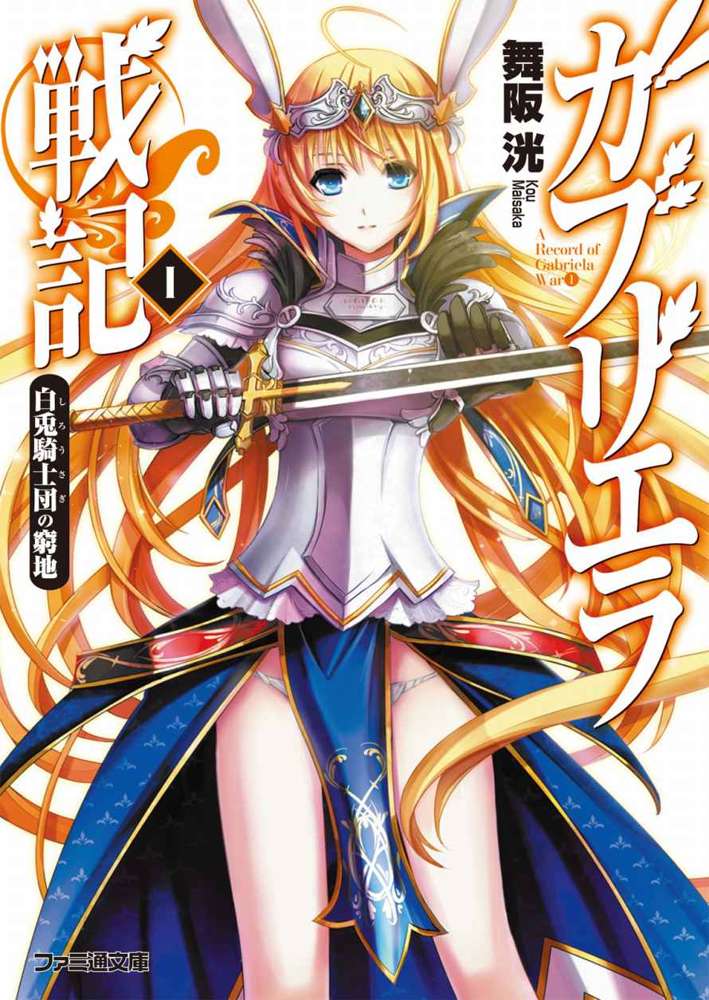
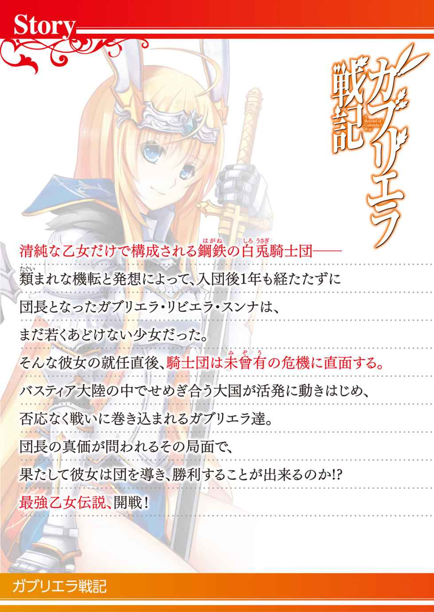
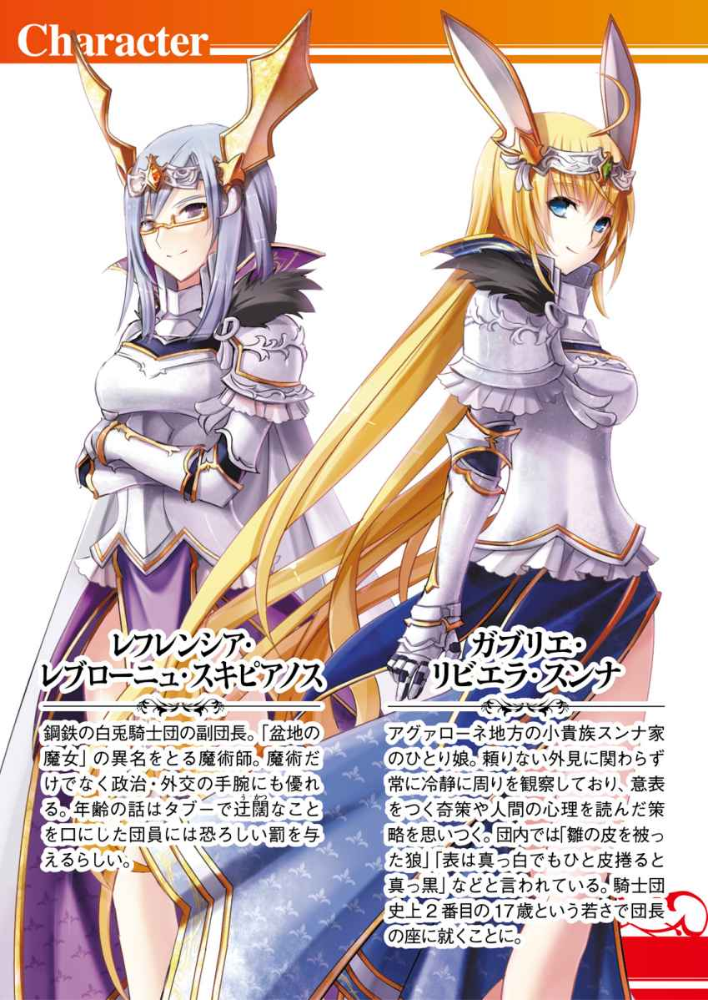
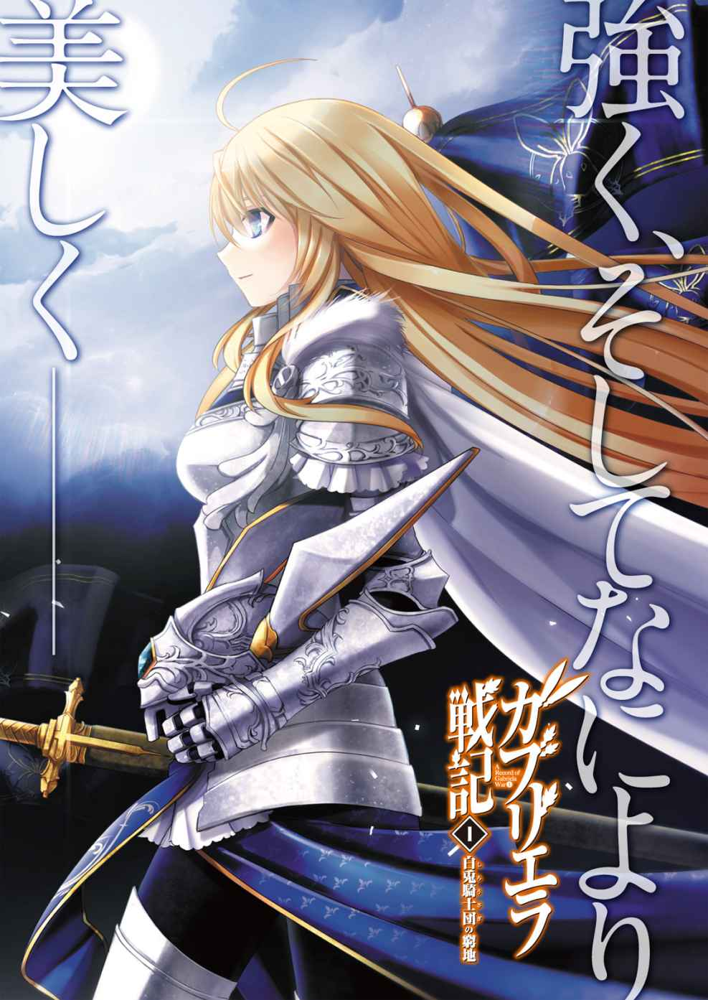
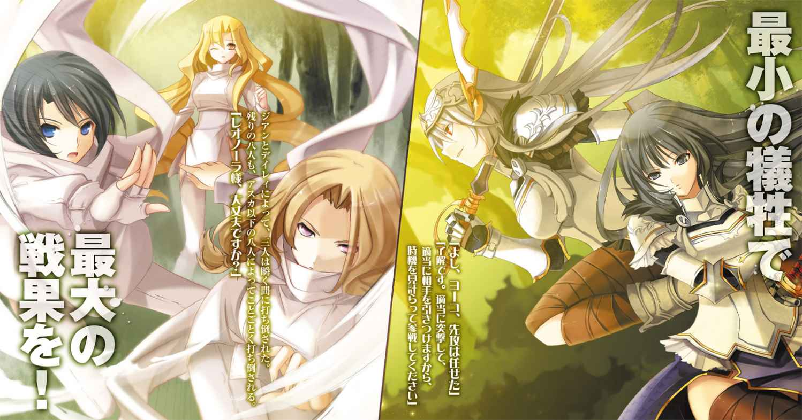
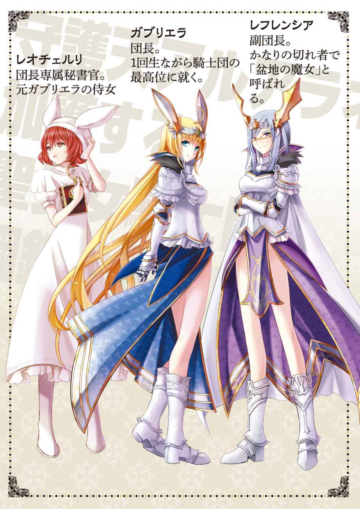
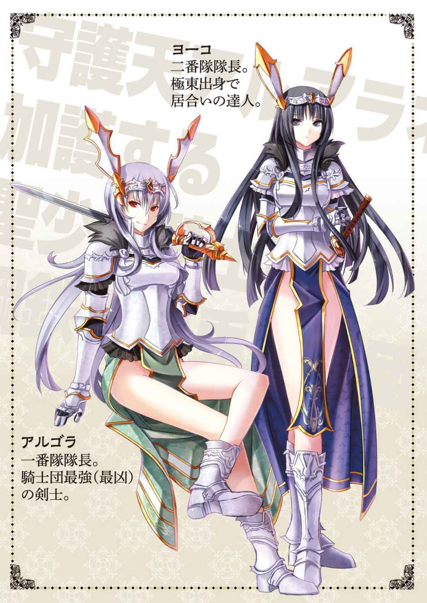
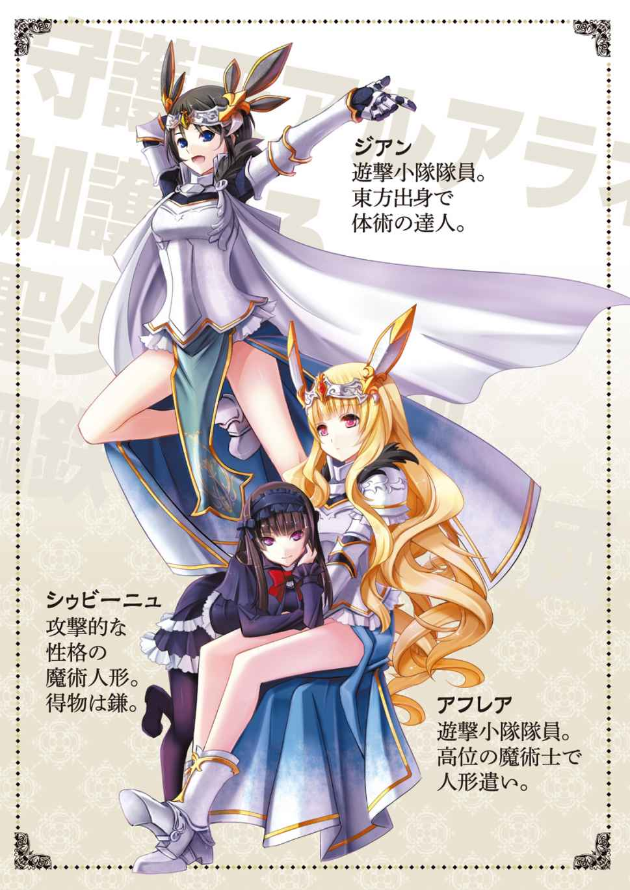
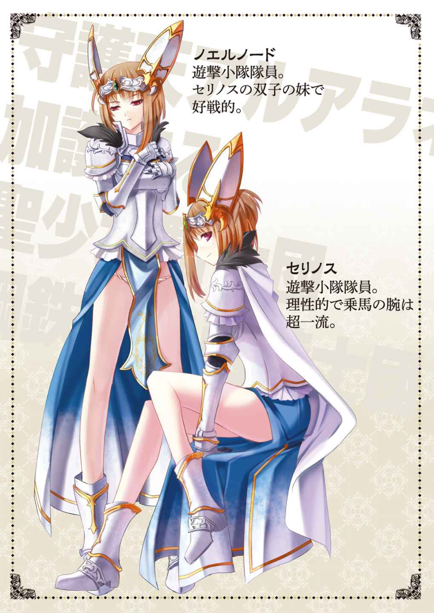
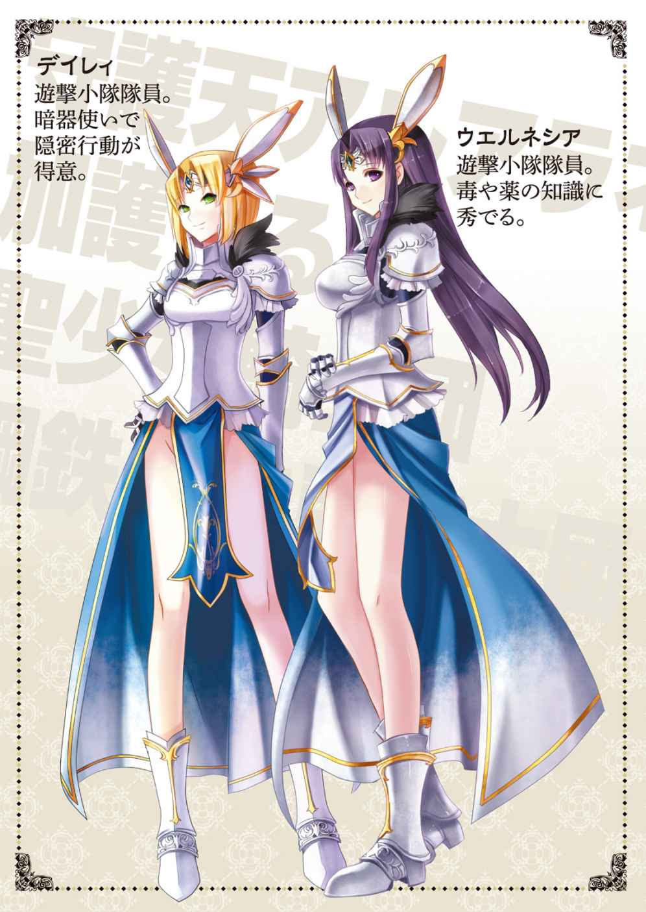
ガブリエラ戦記Ⅰ
白兎騎士団 の窮地
著者 舞阪 洸
イラスト 優木きら
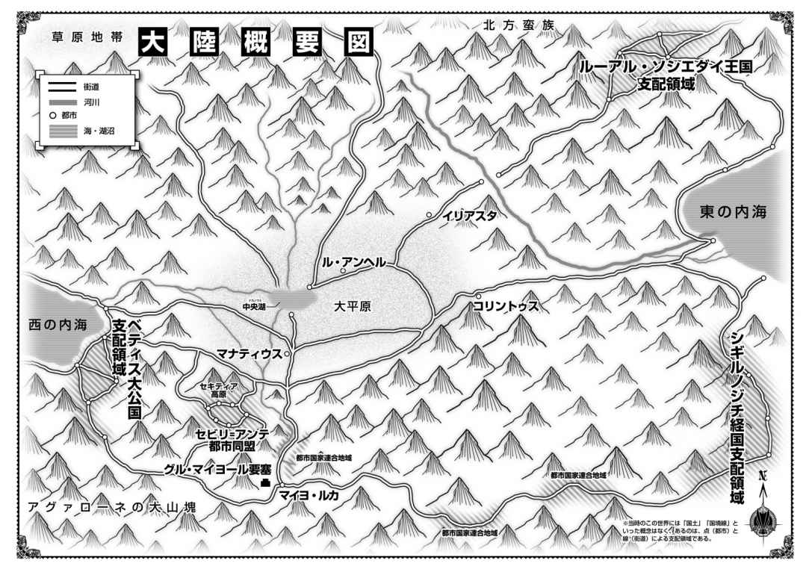
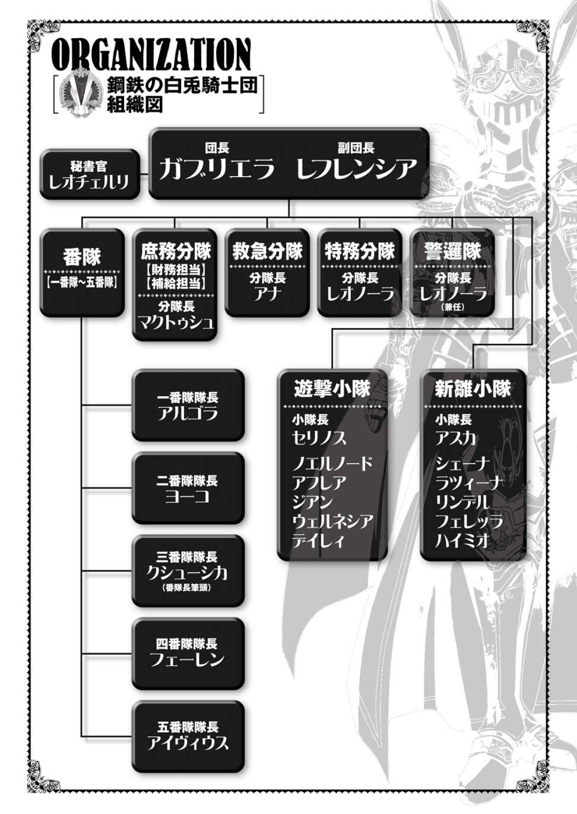
神々が人間界――エスペリテ・ウモルを離れてから、すでに久しい時が経つ。だが、かつて神々が居た残 滓 は、未だにエスペリテ・ウモルの至る所に残っている。
これはそういう時代、そういう世界の物語である。
エスペリテ・ウモルの一角を占めるバスティア大陸のアグァローネ地方。
そこにクセルクス盆地を本 拠 とする騎士団が在 った。結成以来、数百年の歴史を誇 る伝統と格式ある有名な騎士団で、その特徴として、うら若き清純な乙女 だけで構成されていることが挙げられる。
この騎士団、正式名称を「守 護 天 アルアラネの加護を戴 く聖少女騎士団」というが、その長さを嫌って、正式な名で呼ぶ者は今ではほとんどいなかった。騎士団の紋 章 ――三面の白 兎 ――と特徴的な兜 から「鋼 鉄 の白 兎 騎 士 団 」と呼ばれることが多く、より短い通称を好む人々のあいだでは、騎士団員本人たちを含めてこう呼ばれていた。
鋼鉄 の白兎騎士団 、と。
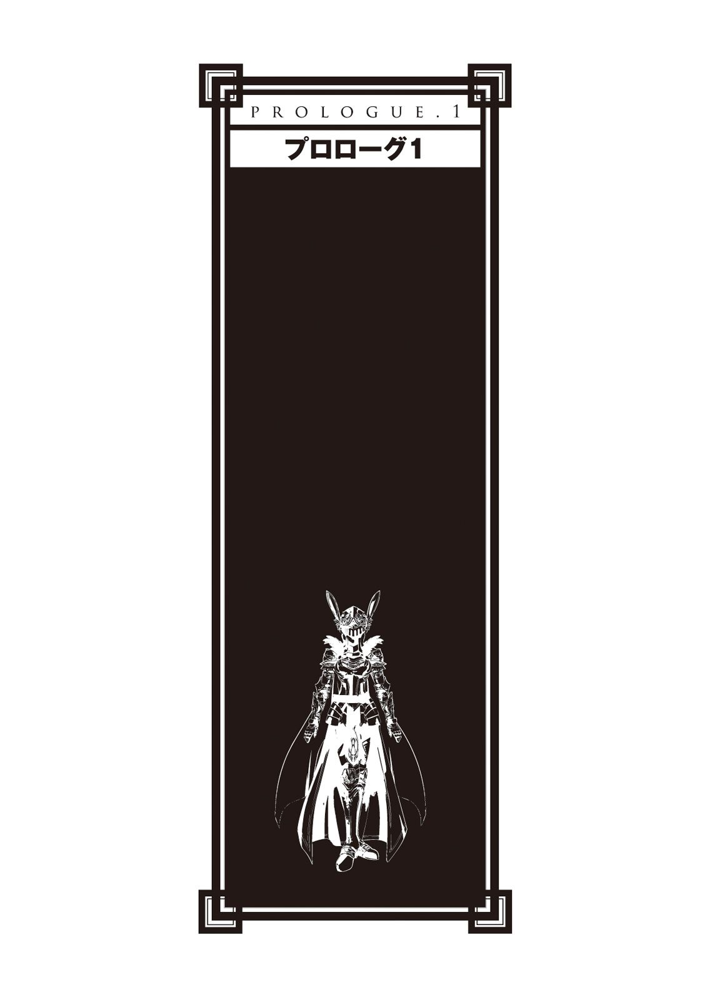
１
青の世紀四五年が終わろうとしている。
この時代、この世界の人々も、行く年を惜 しみ来る年を祝うのは我々と変わらない。ちょうど今、鋼鉄 の白兎騎士団 では、新年を祝う毎年恒 例 の祝 祭 が繰り広げられている最中だった。
この祝祭は入団年度や団内での地位に関係なく、無 礼 講 で行われるのが伝統だ。一般団員にとって先輩や幹 部 と対等に飲んで騒げる数少ない機会のため、多くの団員が心待ちにしている行事である。本城グル・マイヨール要 塞 に集 った団員たちは、そこかしこで飲めや歌えの大はしゃぎを繰り広げていた。
少し前に団長になったばかりのガブリエラなどは、他の団員の絶好の標的、あるいは恰 好 の獲 物 だった。行く先々で捕まり、葡 萄 酒 を飲まされ、歌を歌わされ、踊りを踊らされ、挙げ句の果てに脱がされたりしていた。
乙女 のみで構成される騎士団だけに、ノリは完全に女子校並みで、酔っぱらった団員があちこちで脱いだり脱がされたりしている様はなかなか壮 観 だ。いうまでもないが、この世界には飲酒の年 齢 制限など存在してない。
２
「団長、こっちこっち」
服を脱がされ、胸 覆 いと下 帯 だけで必死で逃げ回っていたガブリエラを呼び止めたのはジアン・ジャンだ。
彼女はガブリエラと同期の一回生で、つい先日まで、遊 撃 小隊でガブリエラと共に任務に当たっていた東の大陸 出身の少女で、格 闘 術 においては超人的な腕を誇 る。
物陰から手招きするジアンを見つけたガブリエラは、ほっと安 堵 の息をつく。
「こっちに隠れ家を用意したから」
というジアンについていくと、会議室の一つに招 き入れられた。
見張り役として出入り口に立っていたのはデイレィで、彼女も同期の遊撃小隊員。元暗殺者という特殊な経歴を持っていて、体術や潜 入 術に並み外れた腕を持つ。
ガブリエラが入室するとデイレィも中に入り、静かに扉を閉めた。
会議室の中には他の遊撃小隊員も集まって飲み食いしていた。
ベティス大 公 国 救国の英 雄 と呼ばれるサルナトゥス将軍を父に持つセリノス・ノエルノード姉妹は、双子なだけに、ぱっと見、見分けがつかないほどよく似ている。
高位の魔術士 であると同時に人形使い でもあるアフレアと、彼女が使役する魔術人形 シゥビーニュ。アフレアはつねにこの魔術人形を側に置き、離さない。持ち運ぶときも、シゥビーニュを入れた棺 桶 を自ら背負うほど大事にしている。
ウェルネシア。遊撃小隊一の豊満な体型を誇るウェルネシアは、毒や薬の専門家だ。
そしてガブリエラ新団長の秘書官に抜 擢 されたレオチェルリ。彼女は元々ガブリエラの従者で、ガブリエラに付き従って入団試験を受けていた。
それら遊撃小隊員の七人が――レオチェルリだけは、今や団長秘書官として隊を抜けているが――集まり、床に敷 いた敷 物 の上に酒杯やら食べ物が載った皿やらを置いて車 座 になっている。
実質的に退団したも同然のドゥイエンヌとマルチミリエの二人を除けば、ガブリエラも含めたこの八人が同期だった。
ガブリエラはこの仲間たちと共に春に入団し、ここまで必死で駆け抜けてきたのだ。その結果が団長就 任 なのだから、多分にそれは、このかけがえのない仲間たちのおかげでもある。
ガブリエラはそう思って、ずっと皆に感謝していた。
「どうしたんです、こんなところに皆さんだけで？」
身を屈 めながら部屋に入ってきたガブリエラが――何せ服を脱がされている――そう訊 くと。
「いやぁ、あまりの馬鹿騒ぎに疲れてきてさ」
とセリノスが笑って応えると、アフレアが、そうそう、と頷 いた。
「いくら無礼講って言われてもさ、レフレンシア様とかマクトゥシュ様とかアルゴラ様とか、恐くて一緒に飲めないでしょ」
「だよね～～。恐いよね～～。飲んで騒いでるときレフレンシア様のご尊 顔 を拝 したら、酔いも醒 めるよね～～」
とデイレィが苦笑している。
あれ、でも、とガブリエラが首を捻 った。
「今年はレフレンシア様、いらっしゃいませんよ」
「え？ そうなの？ お留守？」
ガブリエラは、ええ、とデイレィに向かって頷いた。
「ベティス大公国のお偉いさんに呼ばれたそうで、今朝方、あちらへ向かいました」
「団長は行かなくていいんだ？」
とジアンが揶 揄 するように訊くと、ガブリエラは、はぁ、と切ないため息を吐 いた。
「レフレンシア様曰 く、『団長は新年の祝祭で団のみんなに弄 られるのが仕事』だそうでして」
「なるほど、それが仕事なんだ」
とジアンが感心すると、ノエルノードが続いた。
「たしかにそっちのほうがガブリエラ団長にはお似合いよね」
レオチェルリを除く四人が、うんうん、と力強く頷く。
「そこで思い切り肯 定 されてしまうと、なんだか悲しいんですけど」
「というか、その恰好がすでにお似合いだけどね」
そう言ってノエルノードが笑う。
身を縮 めたまま、ガブリエラが下帯と胸覆いだけになっている自分の体を見下ろす。
「皆さん、酷 いですよね。いくら無礼講だからといって、これはないと思うんです」
するとジアンが。
「ないかなぁ？」
「これはこれでありじゃないかな？」
これはセリノス。
「っていうか、充分にありだと思うわ」
これはノエルノード。
「むしろ、まだ足りないと思うな」
これはデイレィ。
「じゃあ、とことんありにしましょうか」
これはウェルネシア。
「ははハ、あたいニ任せときナ。悪いようにハしないゼ？」
と、これは魔術人形シゥビーニュ。
「ガブリエラ様、ごめんなさい」
最後に消え入りそうな声でレオチェルリ。
仲間の赤らんだ顔に浮かぶ意味ありげな表情と、仲間が自分に向ける視線の妖 しさに気づいたガブリエラの脳内で、小さな警戒警報が、ちりん、と鳴った。
すっくと立ちあがった七人が、戸惑っているガブリエラを取り囲むと、ジアンが一歩進みでた。
「ってことだから、自分たちはガブリエラ団長の仕事を手伝ってあげようと思うんだ」
ぎくり、とガブリエラが腰を引くと。
両手を顔の前に挙げたジアンが、指をわきわきと動かしながら。
「そぉれ、団長を弄り倒しちゃえ～～」
「お～～～～っっ！」
七人（と一体）が一斉にガブリエラに飛びかかった。
「ちょ～～っ？ ななな、何を～～っっ!? 」
必死に抵抗するガブリエラだが、格闘術の手 練 れ、ジアンやデイレィにかかっては、その抵抗も虚 しかった。
まず、あっさりと胸覆いが外され、形のよい彼女の乳房がこぼれ落ちる。
「あぁれぇぇぇ」
皆の手が最後に残された一枚へと伸び。
「それは駄目それは駄目、それは駄目です～～っっ」
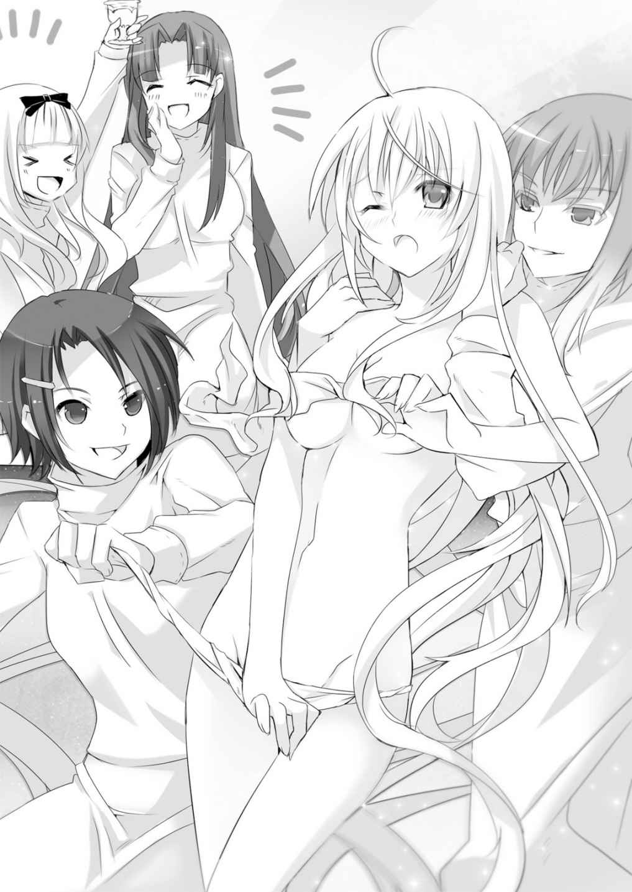
やはり抵抗は虚しかった。というか、必死に胸を両手で隠しているガブリエラには、抵抗の手段がなかった。最後の砦 ともいうべき一枚もあっさりと外され、ガブリエラは全裸にされてしまう。
「「「「剝けた～～っ！」」」」
「いやぁぁぁぁっ」
「ここからが本番！」
「弄ろう！」
「弄りまくろう！」
「弄り倒そう！」
「隅から隅まで！」
「あんなとこも！ こんなとこも！」
「たっぷりと！ ねっとりと！」
「ひぃえぇぇぇぇ」
石造りの床は、それはもう冷たかったが、ガブリエラとしては、身を縮めて床の上を転がって逃げるしかなかった。
「逃げても無駄無駄無駄ぁ」
ジアンが葡萄酒の瓶 を持ちあげて迫ってきた。なんだか彼女の足 下 が不安定だ。
「ささ、団長、まずは飲も！」
逃げ場を探してガブリエラが周りを見回すと。
いつの間にか、またもや七人に取り囲まれていた。
「さぁ、団長、ぐぐっと飲み干して！」
「一気！ 一気!! 」
「飲んだら踊って！」
「あたしたちも踊るから！」
「団長と同じ恰好で！」
「踊る全裸小隊！」
「皆さん、酔ってますね～～っ!? 」
ガブリエラが絶叫すると。
「「「「ぜんぜん酔ってね～～よ？」」」」
という答えが間 髪 を容 れずに返ってきた。
「噓噓噓、酔っぱらってます！ 完全に酔っぱらってますよ!? 」
「だったら団長も酔えばいいさ！」
「理性も脱ぎ捨てるの！ 服を脱いだように心も裸に！」
「無礼講！ 無礼講！」
「なんて素敵な響きなの、無礼講！」
「団長さえも裸で踊る」
「況 や一般団員をや」
「あぁれぇぇぇ、止めてぇ......んごふっっ」
ガブリエラ様ぁぁぁ。
レオチェルリは心の中で泣きながら、仲間と一緒になってガブリエラに無理やり葡萄酒を「注入」した。
「さぁ、自分たちももっと飲むぞ～～！」
「お～～～～っっ！」
この後、団長と団長秘書、そして遊撃小隊員の六人が全裸になって団内を踊りながら練 り歩くという、新たな白 兎 伝説が誕生した。
彼女たちは知っていたのだ。こんな馬鹿騒ぎができるのも今日までだということを。年が改まれば厳しい戦いが待っているのだということを。もしかしたら、翌年の祝賀会には全員が揃 っていないかもしれないのだ。だから、今日くらいは羽 目 を外してもいいだろうと思った。外しすぎてもいいと思った。
事実、鋼鉄 の白兎騎士団 には未 曾 有 の危機が迫りつつあった。
かつてない窮 地 に追い込まれつつあった。
その窮地の足音は、大 平 原 方面からはっきりと聞こえてきた。
３
こちらはベティス大公国の公宮。
鋼鉄 の白兎騎士団 ほどではないものの、ここでも新年の祝祭が夜を徹 して執 り行われていた。
そのお祭り騒ぎの喧 噪 も届かぬ公宮の奥まった一室に、鋼鉄 の白兎騎士団 の副団長、レフレンシア・レブローニュ・スキピアノスはいた。大きな方 卓 を挟んで彼女と向き合っているのは、ベティス大公国の重 鎮 、外 務 卿 エフィソス・エンバルデ・エンブロイィ。
彼はすでに五十を超えているはずだが、痩 身 で眼光鋭く赤茶色の髪も豊かで、些 かも老いを感じさせない覇 気 を身に纏 っている。
「新年を迎える大事な祝祭の日にも拘 らず、呼びたててしまってすまんな」
「どうか、お気になさらずに」
「せめて我々だけで乾杯といくかね」
とエフィソスが酒杯を掲げると、レフレンシアも応じた。
「新しい年が互いにとってよい年になりますように」
二人は小さな硝子 の酒杯を軽く触れ合わせた。
「「乾杯」」
二人は葡萄酒に口をつけ、一口、二口と、赤い液体を喉 に流し込む。
「で、年の変わり目にわたしを呼びだすのは......何があったのです？」
静かに酒杯を卓上に戻したレフレンシアが訊くと、エフィソス外務卿は酒杯を弄 ぶように動かし、揺れる赤い液体に目を凝 らしたまま応えた。
「西方で不穏な動きがあってな」
「ほう、西方で。つまり、ルーアル・ソシエダイが背後で動いていると、そういうわけですね」
「ああ、それは間違いない。本国のほうの動きもだいぶ派手になってきた。まだその狙いを特定できてはいないが、おそらく連中、コリントゥスかル・アンヘルを狙うのではないか......というのが我々の分析だ」
「なるほど、コリントゥスかル・アンヘル。たしかにルーアル・ソシエダイにしたら、そのままにはしておけない場所ですね」
「西方での反ベティス勢力の蠢 動 に伴い、大平原に置いている兵力を増強するどころか、一部をこちらに動かさざるを得ない状況でな。なので、いざという場合は白兎騎士団 に助けてもらうことになる。その際は頼むぞ」
「判っておりますとも」
レフレンシアはにっこりと微笑んだ。
「お声をかけていただければ、押っ取り刀で駆けつけますよ」
「頼りにしておる」
「で、その際に一つお願いがあるのですが」
エフィソスが小さく上体を引く。レフレンシアが、こんな笑顔を向けたまま「お願いがある」などと言うときは、かなり厄介な要求をされることがあるのだ。
「なんだ？」
「コリントゥスかル・アンヘルへの救援に際しての出撃では、こちらの、つまり鋼鉄 の白兎騎士団 の新しい団長を指揮官に戴 きたいのですが、よろしいですか？」
レフレンシアの要求が思ったほど無茶でも無理でもなかったので、エフィソスはほっと胸を撫 でおろした。とはいえ、ベティス大公国の外務卿たる者、そんな様子は微 塵 も見せない。
「まぁ......考えておこう」
「よろしくお願いします。何しろ新団長の初 陣 、お披 露 目 となるわけですからね」
それはそうだが。しかし、あの若い団長に任せてしまうのはいくら何でも不安だな。
とエフィソスが考えるのは、当然といえば当然の危 惧 である。そこで彼は、こう釘 を刺しておくのを忘れない。
「その際にはあなたも出 張 ってくれるのだろうな、レフレンシア殿？」
レフレンシアは、にやりと笑った。海千山千のエフィソスであっても、レフレンシアの笑みの意味するところが今一つ判らなかった。
「もちろんですとも、エフィソス様。団長ガブリエラと、副団長、このレフレンシア、共に命を懸ける覚悟で駆けつけますよ」
「......ああ、頼んだ」
こうして鋼鉄 の白兎騎士団 出撃の際はガブリエラが指揮官になる公算が大となった。さすがに切れ者レフレンシア、転んでもただでは起きない......といったところか。
４
青の世紀四六年――。
いよいよルーアル・ソシエダイ王国とシギルノジチ経 国 を相手にしたベティス大公国の戦いが始まろうとしている。つまりそれは、ベティスの盟 友 である鋼鉄 の白兎騎士団 の戦いが始まることを意味していた。
大平原で激突するであろう両勢力。
多くの血が流れ、戦 禍 は多方面に亘 ることだろう。
団長に就任したばかりのガブリエラとその仲間たちは、果たしてこの危機を乗り越えることができるのか。
このアグァローネ地方に再び平和をもたらすことができるのか。
後に「ガブリエラ戦 役 」と呼ばれる長く厳しい戦争が、いよいよ始まろうとしていた。
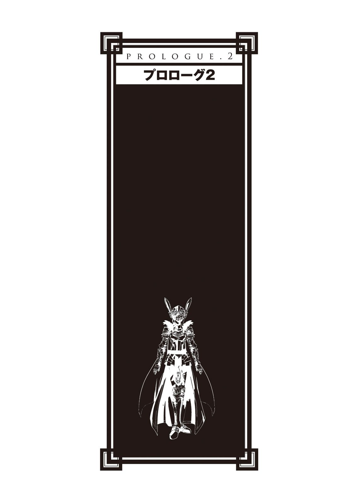
ルーアル・ソシエダイ王国の都――。
王宮内にある、天井が高く広々とした評 定 の間 にこの国の最高首脳が集まっていた。
大きな方 卓 の上 座 、背もたれの高い豪 奢 な革張りの椅 子 に腰かけているのは、バロス三世・バイバルスだ。
尊大かつ不敵な面 構 えの王で、身に纏 う物は華美に走らず、むしろ質実剛健。そこにそうして座っているだけで、周囲を圧する雰囲気を発散している。
方卓の左右に着席しているのは、ルーアル・ソシエダイの重臣たちだが、その年齢は重臣という言葉が不似合いなほど若い者が多い。それもそのはず、彼らは先王時代から重きをなしていた老臣や実力者を、バロス三世と共に追い落として今の地位に就 いた者たちなのだ。
全員がバロス三世の野 望 に共感し、その実力を認めている。彼についていけば一つの時代を築けるのではないかと、そう確信している。
その中に、アリアンレイ・アシッドゥ・アッサンラーも混じっていた。
彼女は王宮における重臣ではないが、大 平 原 方面の調 略 担当官であるのだから、この会議に出席していてもおかしくはない。というか、むしろ当然だ。
「さて、どちらを先に片付けるか」
方卓上に広げられた地図を見下ろしたバロス三世が、呟 くようにそう言った。
「コリントゥスを先にするべきでは？」
「奪 られたル・アンヘルこそ、まず奪 り返すべきなのでは？」
「コリントゥスを奪 ってしまえば、近くにある鋼鉄 の白兎騎士団 の土地も同時に手中にできます。これはまたとない機会、大いに喧 伝 できますぞ」
「いや、奪 られた街をそのままにしておくほうが不 味 いだろう。直 ぐに奪 り返してこそ、周辺諸国への訴 求 力 が増すはず」
何人もの重臣から次々に意見が出され、議論は沸 騰 した。
コリントゥスとル・アンヘル、どちらの街を先に攻めるかは一長一短があって、たしかに難しい問題だ。
やがて居並ぶ重臣たちの意見表明がおおよそ一 巡 した。意見は真っ二つに割れ、どちらが優勢ということもなかった。となれば、バロス三世の意向を聞くしかない。
重臣たちはバロス三世に視線を集中させた。
彼ら、彼女らの視線を意にも介 さぬように、王はまだ意見を表明していない唯一の者へ顔を向ける。
「アリアンレイは、どう考える？」
野太く迫力のある声でそう訊 いた。
自分たちの意見が二つに割れている以上、ここで表される大平原調略担当官の発言は重い。重臣たちは全員、自分の意見に与 しろといわんばかりの鋭い視線をアリアンレイに向けた。
アリアンレイもバロス三世同様、重臣の視線を平然と受け止めて口を開いた。
「皆様方の意見は、どちらも理 に適 っていると思います」
涼 やかでよく通る声だ。
「なんだ、アリアンレイは中立か？」
バロス三世が何かを品定めするように、あるいは値踏みするように眼を細めた。
バロス三世は、こういうときに自分の意見をはっきり述べない者を好まない。そしてアリアンレイは、相手が誰であろうとはっきりと自分の意見を述べる質 だ。だからこそ彼女は王からの信頼も厚く、大平原の調略担当官を任されている。
なのに彼女が、双方の意見を認めるというようなどっちつかずの発言をしたことが、バロス三世には意外だった。
しかし。
「いえ、中立ではございません。どちらかというと、三番目の案を提案させていただきたいと思います」
重臣たちが互いの顔を見合わせる。
「そうこなくっちゃぁな」
バロス三世は、くくっ、と愉 快 そうに笑った。
「じゃあその三番目の案ってのを聞かせてくれ」
バロス三世に頭を下げたアリアンレイは、やや俯 き加減のまま、よく通る声で自分の案を開 陳 した。
「どちらを先にするかを決めかねるほど、どちらも大事。であれば、両方を同時に奪 ってしまえばいいのではありませんか？」
重臣たちのあいだからざわめきが起こる。
「随 分 と大胆な意見だな、アリアンレイ」
「大胆不敵は三世王様の専売品ではありませんか」
「こいつは一本取られたな」
バロス三世は声を上げて笑いだす。
しばらく笑っていたバロス三世は、やがて笑い止むと、大きく上体を乗りだした。
「で、第三の案の利益はなんだ？」
「まずもって、我が国の本気度を内外に示 せること。友好国は見捨てないという我が国の誠意を内外に示せること。今であればベティスは軽 々 に動けないこと。両方を押さえてしまえば、以降、大平原においてかなり動き易くなること......などでありますね」
「そうだな」
バロス三世は、アリアンレイの発言内容など先刻承知だとばかりに頷いた。彼女の口から直 に聞いて確認したかっただけだ。
「何かあるか？」
王は居並ぶ重臣たちを見渡す。
直ぐに一人から発言があった。
「ですが王よ、両方で同時に......となりますと、かなりの兵力を用意しなくてはなりません」
バロス三世は、ふん、と小さく鼻を鳴らした。
「俺たちはこんなときのためにシギルノジチと同盟を結んだんだろう」
「奴らとの同盟を信用してしまうのもどうかと」
「そうですぞ、王よ。奴らに対する備えを完全に解いてしまえば、直ぐに襲いかかってくるかもしれません」
「まぁ、そうだな。奴らは性 根 が腐 っているからな」
とバロスが言うと、重臣たちのあいだに失笑が広がった。
「ですが、ここで敢 えて警戒を解く振りをするのもいいのではありませんか？」
とアリアンレイが口を挟んだので、全員が首を傾げた。
「どういうことだ、アリアンレイ？ 警戒を解く......振りをする？」
「ええ。本当に警戒を解いてしまえるような相手ではありませんが、少なくとも我々が警戒を解いたと見せれば、同盟を重視し、相手を信用しているという姿勢を内外に示せます。あくまで見せかけですが、他国の者には判らぬこと。向 背 常ならぬシギルノジチが相手でさえ、同盟を結んだ以上、信頼しているのだという姿勢は、我らが信 義 に厚く約束を守る国だということを訴えることができます」
「ふむ。なるほどな」
バロス三世はもう一度、重臣たちを見渡した。
「どうだ？」
「いいのではありませんか」
「やってみる価値はあるかと」
「成功すれば、ベティスにはこれ以上ない打撃を与えられるでしょう」
出てくる意見はどれも肯定的なものだった。
「よし。じゃあ、どちらを先にするかではなく、どちらも先にする......という基本方針で考えるか」
とバロス三世が言った時点で、コリントゥスとル・アンヘルの街を同時に攻略するという方向性が決まった。
「動員兵力はこれから詰める必要があるが......それと、指揮官を誰にするかだな」
「一つは、わたしにお任せ願えませんか」
「お？」
バロス三世が目を見開く。
「アリアンレイ、おまえが自ら乗りだすってのか？」
「はい」
「そうか。よし、片方はおまえに任せよう」
バロス三世、相変わらずの即断即決だった。
「で、どちらに行く？」
「そうですね、わたしは」
アリアンレイの口 許 に重臣たちの視線が集中する。
「コリントゥスを攻め陥 とそうと思います」
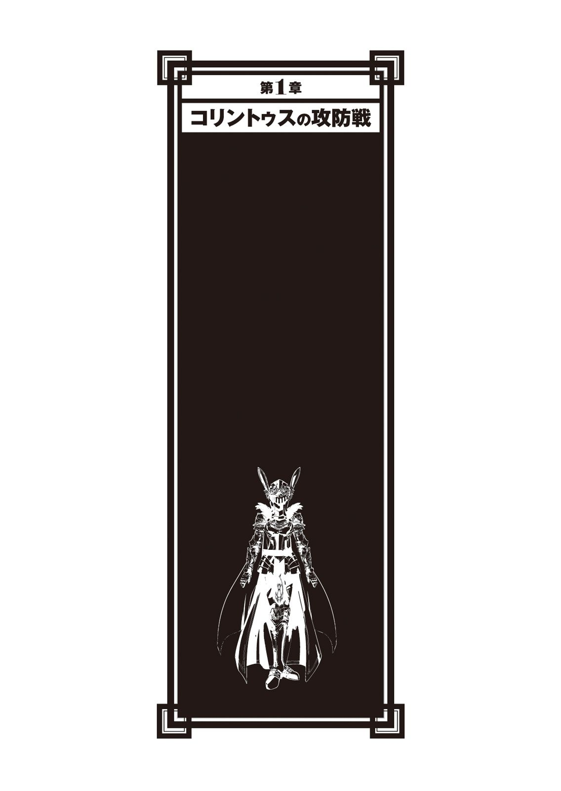
１
「援軍からの急使が来ました！」
コリントゥス王宮の評 定 の間 に伝令が駆け込んできた。
ルーアル・ソシエダイ軍に包囲されている形のコリントゥスの街だが、個人の出入りはかろうじて許されているので、商人に偽 装 した使者が街に入れたのである。
「援軍は当街まで、あと半日から一日ほどの行程に迫っているそうです」
報告を聞いていた国王以下、街の重臣や駐 留 軍の幹部のあいだから歓喜の声が上がり、同時に安 堵 の息が漏れた。
「して、その数は!? 」
と訊 いたのは、ベティス大 公 国 の駐留軍を率いるラディム駐留軍司令。
「援軍は二大隊千八百です！」
「後 詰 めは千八百か......」
ラディムは難しい顔で低く唸 った。
コリントゥスは大 平 原 東部に在 る城 郭 都市で、かつて鋼鉄 の白兎騎士団 の活躍によって窮 地 を救われたことのある街だ。
この街はルーアル・ソシエダイ王国の勢力圏に突出する位置にあった。
ベティス大公国側からすれば、コリントゥスはルーアル・ソシエダイ側に打ち込んだ楔 ともいえる存在であり、ここの守りを重要視している。本国から遙 か離れた遠方にも拘 らず、ここに駐留軍を送っていたのもその証 だ。
それだけではない。前述したように、ここはベティスの盟 友 である鋼鉄 の白兎騎士団 が守り抜いた街なのだ。白 兎 騎 士 団 の尽力で確保された街をむざむざ失ったとあれば、ベティスの威 信 に傷がつく。ベティスとしてはなんとしても維持し続けなくてはならない都市国家だった。
そのコリントゥスが今、ルーアル・ソシエダイ軍およそ四千に包囲されていた。
ベティスが街に入れている駐留軍の数は、一大隊一千と騎馬中隊一の合わせて千百。それに援軍の千八百を加えても二千九百にしかならない。コリントゥスの兵は、先年の反乱騒ぎの影響で大きく減 じたまま補充ができていない。実質的に戦闘に使える兵は、せいぜい二百といった状態だった。
ということは、援軍と駐留軍に街の守備兵の合計三千百がコリントゥス側の総兵力といっていい。
そのうち、街に籠 城 している兵は千三百。
対して、攻撃軍は四千。
城攻めの場合、攻撃側には守備側のざっと三～五倍の兵力が必要というのが軍事常識である。それに照らせば、今いる兵ではギリギリだが、援軍が城内に入りさえすれば街が陥 ちる不安はほとんどなくなる。
ただ、地形的に見てこの街の防御力はさほど高いとはいえない。街の周囲は平坦地で、攻撃側が大がかりな攻 城 兵器を持ちだしてきても、移動させるのにそれほど苦労しない場所なのだ。
その上、千八百という援軍の数は、ラディムの予想よりも少なかった。これでは街を守ることはできても、攻撃軍を撃退することは難しい。
ラディムの危 惧 は、それだけではない。
攻撃軍を撃退できないのなら、全軍で街に籠 ってさらなる増援軍を待つか、敵の兵 糧 切れを待つしかない。
しかし、籠城する兵が千八百人も増えるということは、それだけ余分の食料が必要になることを意味する。ところがコリントゥスの街は、まったく兵糧に余裕がない状態だった。
反乱騒ぎの後の攻防の際、白 兎 騎 士 団 は街に備 蓄 してあった兵糧の過半をわざと駄目にしていた。いったん街を明け渡したときに、城内に入った敵部隊を苦しめるためだ。兵糧を減らす作戦は相手に対して効果的に働いたのだが、その後、細々と補充されてはいたが、とうてい万 全 とは言い難 い。そもそもコリントゥスの街の規模では三千もの兵が長期間籠城することを想定していないから、元から備蓄は多くない。今は逆にそれがコリントゥス側の重荷になっている。
「やはり西方での争乱が本国にも響いているのだな」
ラディムは我知らずそう呟 いていた。
くそ、厄介だな。いや、この状況こそがルーアル・ソシエダイの奴らが思い描いた絵だというのか？ だとすれば、ルーアル・ソシエダイの国王バロス三世、噂 以上の傑物 だが......。
２
ここで、大平原とそこを取り巻く周辺の状況を見ておこう。
アグァローネ地方には多くの都市国家があるが、面的な広がりのある「領土」を持った「国家」は未 だ存在しない。この地域は肥 沃 な土地が少なく、生産力に限界があった。余 剰 生産物が出ない以上、今の人口を養っていくだけでカツカツなのである。
それでも、大国と呼ばれる国家は幾 つか存在している。
ベティス大公国、ルーアル・ソシエダイ王国、シギルノジチ経 国 などがその代表だが、それでも複数の都市をその勢力圏に抱 えているというだけで、確固たる領土を保持しているわけではない。
それまでも三つの大国は、三つ巴 ともいうべき勢力争いを繰り返していたが、周辺の蛮 族 との抗争などもあって、なかなか相手に対する決定打を放てないでいた。
ところが少し前に、ルーアル・ソシエダイ王国とシギルノジチ経国が電撃的に軍事同 盟 を結んだのだ。これは、ベティスと鋼鉄 の白兎騎士団 がその影響力を着々と増大させている現状に対する反動、揺り返しという側面が強かった。
結果、大平原周辺での勢力の均 衡 が一気に崩れた。
勢いを増したルーアル・ソシエダイとシギルノジチの両国が、ベティスと白兎騎士団 に対する積極的な攻勢に出てくるのは必然。
そこで鋼鉄 の白兎騎士団 団長代理のレフレンシアは、一計を案じ、自らは副団長へと退 き、一回生のガブリエラ・リビエラ・スンナを団長に就 けた。
相手の読みを外し、相手に余計なことを考えさせるための奇手であった。
それが初冬の頃の話。
ルーアル・ソシエダイ王国とシギルノジチ経国の戦略目標は、はっきりとしている。
鋼鉄 の白兎騎士団 とその庇護者 であるベティス大公国の影響力を大平原から一 掃 し、代わりに自国の影響力を浸 透 させること。可能なら、ベティスと鋼鉄 の白兎騎士団 を軍事的に討ち破り、将来に亘 るまで反撃が利かないような損害を与えておくこと。
ベティスが弱体化した後には、アグァローネ地方の盟 主 の座を懸けた戦いが、今度はルーアル・ソシエダイとシギルノジチ両国のあいだで始まるはずだが、それは当分先の話だった。
互いを仮想敵国としていた両国が軍事同盟にまで踏み切った影響は計 り知れない。
最大の利益は、相手を警戒して張りつけていた戦力を他の戦線へと転用させることが可能になったことだ。
ルーアル・ソシエダイに関していえば、シギルノジチと同盟を結び、さらに周辺蛮族との休戦も成ったから、北や南は当面安 泰 となった。東には元から脅 威 となるような大勢力がいない。背後の不安なく西方の攻略に専心できるようになったのである。
同盟成立直後からルーアル・ソシエダイとシギルノジチの動きは活発となり、鋼鉄 の白兎騎士団 やベティス大公国に対する工作をしきりに仕掛けてきた。ベティスの西方で反ベティスの蜂 起 があったのもその一端だ。
ベティス側も手をこまねいているわけではなく、ルーアル・ソシエダイの周囲にいる蛮族などに働きかけているのだが、今のところ目に見える成果は上がっていなかった。
ルーアル・ソシエダイ王国とシギルノジチ経国の軍事同盟によって先 鋭 化 した両国対ベティス大公国と鋼鉄 の白兎騎士団 の戦いは、年末にかけては軍勢同士が直接に干 戈 を交えることはなく、軍事作戦の準備や裏工作に終始していた。
しかし、年が改まったところで、ついにルーアル・ソシエダイが動きだした。
シギルノジチへの備えが不要になったことで生じた軍事的余力。
その余力を大平原への勢力浸透に使うべく、目の上の瘤 ともいうべきコリントゥスの排除――言い換えれば自陣営への抱き込み――を狙って機 を窺 っていたルーアル・ソシエダイ王国は、ベティスの西方で起きた争乱に合わせるかのように軍事行動に踏み切ったのである。
３
年が明けた青の世紀四六年白 鳥 の月のこと――。
ルーアル・ソシエダイ王国は、まず大平原に八千の兵を送り込み、イリアスタやその他 の友好国――という名の実質的な隷 属 国 ――の兵を糾 合 し、総勢一万もの兵力を展開した。そのうちの四千をコリントゥスの街へと送る一方、さらに四千をル・アンヘルの街へと派遣したのである。
この遠征は、先年に採 り損ねた果実――コリントゥス――を今度こそ刈り取り、先年に失った果実――ル・アンヘル――をなんとしても奪い返すというルーアル・ソシエダイ王国の意気込みを表すと同時に、国王バロス三世・バイバルスの並々ならぬ決意の表れでもあった。
大平原にはベティスも部隊を置いている。友好国である各都市に分散してはいるが、高原諸都市の分も合わせれば六、七千にはなる。友好諸都市の兵を合わせれば一万以上の部隊を動かせるのだから、侵 攻 してきたルーアル・ソシエダイ連合軍にも充分に......とは言えなくても、なんとか対抗できるはずだった。
しかし。
ルーアル・ソシエダイが仕掛けた反ベティスの動きがベティスの背後、西方で活発になり、その結果、ベティスは大平原に置いてあった部隊の幾つかを移動させざるを得なくなっていた。
これが白 鳥 の月の下旬の状況だった。
ルーアル・ソシエダイが、コリントゥスとル・アンヘルに対する軍事行動を起こしたのはその直後、もうじき月も変わろうかという時期だった。
総兵力を減らしていた大平原のベティス駐留軍は対応が後手に回り、ルーアル・ソシエダイ側の兵力展開を許してしまった。
結果、コリントゥスの街とル・アンヘルの街は、各々、ルーアル・ソシエダイと都市国家連合軍四千に包囲されるという現状ができあがったのだった。
もちろん、両都市の攻略は最終的な目標ではない。ルーアル・ソシエダイ国王バロス三世・バイバルスにとって、あくまで戦略目標達成のための端 緒 であり、一つの手段にすぎないのだ。
彼はさらなる一手を温めている。
それはかなり非常識な一手で、もっといえば奇手奇策であり、さらにいえば八方破れの出 鱈 目 ともいえる一手だ。バロス三世に心 酔 している軍の首脳や官 僚 たちでさえ首を捻 るような危うい手かもしれない。
だが、将棋 を能 く指すバロス三世は、相手の守備の陣形に綻 びが出たときこそ押し込む好機、相手が緩 手 を打ったときこそ付け入る好機、相手の応 手 に迷いがあるときこそ畳みかける好機と、そう思っている。
彼は今、ベティス大公国と鋼鉄 の白兎騎士団 の陣形に綻びを見て取った。だからこそ今が好機と捕らえている。
何しろベティス大公国では宰 相 が倒れ、鋼鉄 の白兎騎士団 では、理由は判らないが、並み居る幹部を押し退 けて一回生が団長に就いたというのだから。
新団長が幹部を押し退けるほどの傑物なのか、それとも幹部同士による抗争の産物なのかは、まだバロス三世も把 握 できていない。
だが、理由がどうあれ、内実がどうあれ、好機には違 いないと判断した。
相手の守備陣形が整う前に押し込んでかき回して、綻びを広げ、守備網 を寸断し、立ち直るきっかけを与える間もなく突破する。そのために少しくらいの危険を冒 さなくてどうする。
それが彼の言い分だった。
だが、臣下に言うのはまだ早い。
好機を見るに敏 でない者にとって、彼の腹案は危険すぎると映るだろう。明かせば、反対する者が出てこないとも限らない。もちろん彼の立場なら、臣下の反対を無視することはできる。
しかし、国が、王宮が、一丸となって当たらなくてはこの戦争に勝てない。ベティスも鋼鉄 の白兎騎士団 も手 強 い敵であること、バロス三世は十二分に弁 えている。決して相手を過小評価しない。
だからこそ、好機を見逃さずに攻めなくてはいけないのだ。そして今こそ、その好機なのだ。
というバロス三世の形勢判断には、ベティスの宰相が倒れ、白 兎 騎 士 団 の新団長に一回生が就いたという思いもよらぬ展開が影響しているのは確実だった。
しかし、それでベティスと白 兎 の側が大いに不利になったかというと、そうでもない。この辺りは「一手指したほうがよく見える」という、難解な将棋 の中盤のせめぎ合いといったところか。
いずれにせよ、どちらかが相手の読みにない妙手を放つか、どちらかが自ら転ぶような悪手を指すかしない限り、一気に形勢が傾くことはないだろう。
さて、局面をがらりと変えるような妙手を指すのはどちらだろう。
あるいは、誰だろう。
４
「ラディム様」
報告を持ってきた兵の声が、現状の分析と今後の対応策を考えていたラディムの思考を破った。
「ん？ どうした？ まだ何かあるのか？」
はい、と頷 いた兵は、居並ぶ国王、重臣たちの様子を窺うように視線を左右に走らせてから報告を再開した。
「我がほうの援軍の到 来 を察知したためでしょう、街を包囲していたルーアル・ソシエダイ軍に動きがあります」
「なに？」
「包囲軍の一部が街の南西側に移動しつつあります」
「後詰めの接近を阻止しようというつもりか！」
そのとき、新たな伝令が評定の間に走り込んできた。
「ラディム様！」
「どうしたか？」
「敵の全部隊が動きだしました」
「なんだと!? 」
ラディムは思わず腰を浮かせそうになる。
新たにもたらされた報告の持つ意味を、彼は直 ちに理解した。
不 味 いな。奴ら、接近を阻止するのではなく、後詰め部隊を直 に叩くつもりか。
増援部隊の兵力は千八百で包囲軍は四千。単純な兵力比較でも一対二・二だ。しかも増援部隊はここまで急ぎに急いでいるはずで、当然、兵には疲労がある。
一方の包囲部隊は、ここ数日間というもの、コリントゥスの街の周囲に腰を落ち着けていた。補給にも問題はなく、充分に飲み食いしていたようだ。となると、兵にはほとんど疲労がない。
そんな両軍が正面からぶつかれば勝敗は火を見るよりも明らかで、戦闘は増援部隊の敗退で終わるに違いない。増援軍が撃退されてしまえば、ラディムは自分の手 勢 のみでコリントゥスの街を守り続けなくてはならなくなる。この状況下で、それは至難の業 といえよう。
敵の狙いを見抜いたラディムは即座に決断した。
ここで各個撃破を許してはいかん。
振り返ったラディムは、傍 らの副官と二人の大隊長に向けて命令を発した。
「こちらも動くぞ。直 ぐに出撃の準備をさせろ！」
「ははっ！」
この決断の早さはラディムのよさでもあるのだが、この場合には、もう少し慎 重 さが求められた......というのは結果論でしかない。この状況で、この時機で、ラディムは彼にできる最良の決断をしたまでだ。
こうしてコリントゥス駐留軍――一大隊＋騎馬中隊――千百は慌ただしく出撃の準備を開始した。
兵の報告を聞き、ラディムが出撃を決断するに至るまで、コリントゥス国王コリンティアンスは心配そうな目を、不安そうな顔を、ラディムに向けているだけだった。それも仕方のないことで、ほとんど軍事力を持たない彼には発言権などないも同然だった。
５
「アリアンレイ様、コリントゥスに残した見張りからの伝令がまいりました」
馬上のアリアンレイは、兜 から覗く美麗な顔を部下に向けた。彼女の被る兜は小ぶりな作りなので、表情がよく見える。
「何か動きがあった？」
「城内の敵が出てきたそうでございます」
ベティスの救援軍を迎え撃とうという形で移動しつつある部隊の本 陣 で、部下からの報告を聞いたコリントゥス包囲軍の指揮官、アリアンレイ・アシッドゥ・アッサンラーは優美な微 笑 を浮かべた。
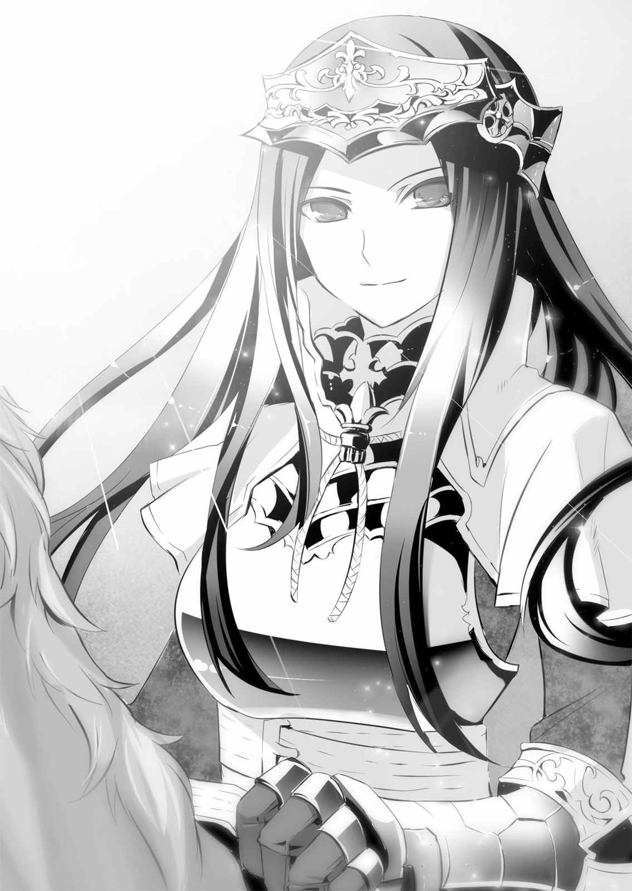
兜からはみ出した長く真っ直ぐな黒髪を背中に垂 らし、全身を白 銀 の鎧に包んだアリアンレイは美 貌 と奸 計 を司 る守 護 天 ユミネゥスが降 臨 したかと思えるほど美しく、かつ剣 呑 な雰囲気を発散している。そんなアリアンレイの姿は、本陣のどこからでも、とてもよく目立った。
彼女は大平原方面担当の調 略 担当官であるのだが、ただの文官ではない。軍事指揮権も持っているのだ。いざとなれば、こうして馬に跨 り剣を取る。
「こちらの動きに敏感に反応してくれたようね。なかなかよい指揮官です」
傍らの副官が薄く笑った。
「たしかに、敵の指揮官は決断力に富 んだ男のようですな。こちらの意 図 を即座に察知した思考力も、まずまずではありませんか」
「まずまずではありますが、十 全 とは言い難 いですね。けれど、それはこちらの利益になるのですから、我々が文句を言う筋合いではありませんが」
コリントゥスの街の南西方面は、大平原といいながら意外と小さな起 伏 が多い地形で、小高い丘や低い谷などが複雑に入り組んでいる。
コリントゥスを包囲しているあいだに、アリアンレイは配下の物 見 部隊に周辺の地形を念入りに調べさせていた。そのときは特に具体的な何かを考えていたわけではなく、あとあと何かの役に立つかもしれないという用心のためでしかなかったが、それが意外と早く役に立ってくれそうだ。
アリアンレイは馬の横っ腹に括りつけてある革 筒 から地図を引き抜いて広げ、副官に指示を出す。
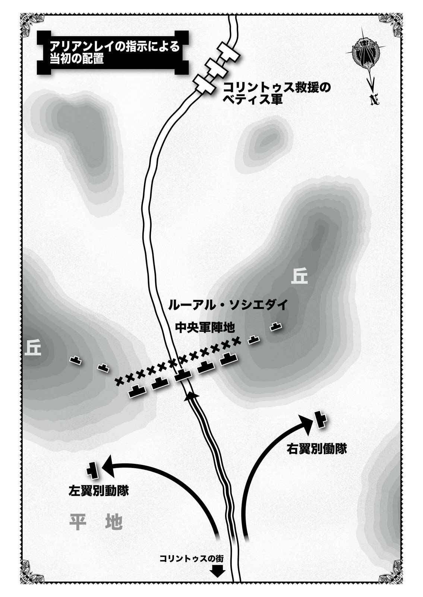
「右 翼 の千をこの丘の向こうに迂 回 させて。後方の視界から消えた辺りで丘の上に登らせるのです。左 翼 の千は左の谷に下って大きく迂回、コリントゥス方面へと戻らせて。我ら中軍千七百はここで陣地の構築を始めます」
アリアンレイは、コリントゥスの街の見張りや周辺の物見に三百を割 いているので、必然的に中軍の兵数は千七百となる。
もっとも、街の見張りのために多くの兵を残していることを相手には知られないほうがいい。遠くから密かに見張らせるだけで、牽 制 や阻止行動は取らせていない。
さらに具体的な指示を幾つか送ったアリアンレイは、また優美な微笑を浮かべて副官に念を押す。
「前方から迫ってくるベティスの増援軍に備えて陣地を構築するように見せかけます。左右の丘に兵を登らせるのを忘れないように。登らせる兵は少数でいいですが」
予 めアリアンレイの構想を聞かされている副官は、質問も挟まずに大きく頷いた。
「判っております」
副官が幕 僚 を伴ってアリアンレイの命令を実行するべく本陣から離れていった。
少し進んだ先で中央軍千七百が行軍を停止し、その場で陣地の構築を開始した。
左右に小高い丘があり、ちょうど隘 路 のようになった場所を街道が走っている。
左手の丘の向こう側には小さな谷筋が縦横に走っていて大軍の展開には不向きな地形。右手の丘の向こう側には、同じような小さな丘が幾つも連なっている。となると、左右の丘を押さえた上、隘路の街道を塞 げば、ベティスの援軍は容易に街に近づけないことになる。
その場合に取る方法は、大きく迂回するか前面の敵を強制的に排除するかのどちらかだが、兵数で劣る援軍が正面突破を企 てることは至難の業で、ふつうなら迂回する。
しかし、だ。
ここにいるルーアル・ソシエダイ部隊の背後にコリントゥス在 城 のベティス駐留軍が迫ってきたらどうだろう。陣を敷いた包囲軍を前後から挟み撃ちすることが可能になるわけで、兵数で劣るベティス軍にとっては願ってもない形ではないか。
駐留軍の指揮官が、これほど美 味 しい場面を見逃すでしょうか。いいえ。我々の行軍の意図を察知して即座に出撃してきたほどの果 断 な指揮官であれば、必ずやこの好機を活かして我が軍を壊 滅 させ、コリントゥスに迫る脅威を一気に除去しようとするに違いありません。
それがアリアンレイの読みだった。
そこまで読んでいながら、どうして彼女は追撃してくる籠城軍に背を向けたまま陣地を構築しているのか。
どうして彼女は、わざわざ別働隊を動かし、主力の千七百のみでここに留まるのか。
各個撃破を狙うなら、まずは接近してくる援軍を攻撃し、これを討ち破るのが先決ではないのか。
包囲軍指揮官アリアンレイの真の狙いは、戦端が開かれたところで明らかになる。
６
「ラディム様、送った物見部隊からの伝令が来ました」
「ここへ通せ！」
馬に跨り進んでいたラディムは、馬の歩みを止めることなくそう命じた。
直ぐに伝令兵が駆け寄ってきた。
伝令兵はラディムとその周囲を固める幕僚たちの馬の歩みに合わせて歩きながら報告を始める。
「南下を始めたルーアル・ソシエダイの包囲軍は、途中で進軍を止め、陣の構築に取りかかっております」
「地図！」
ラディムが呼ぶと、徒歩で付き従っていた従者が、布製の地図を手に駆け寄ってきた。
「場所はどの辺りだ？」
従者が広げた地図を馬上から見下ろしながらラディムが訊く。
「この辺りだと思われます」
伝令兵が地図の一点を指し示すと、ラディムはそこを睨 みつけるように凝視する。
「なるほど、そこを押さえてしまえば、援軍は大きく迂回するしかないというわけか。だが......」
ラディムは敵部隊の意図に微 かな違和感を覚える。
各個撃破を狙って援軍を叩こうとするのなら、陣を構築して防御の態勢を取るというのがおかしいな。いや......。
顔を上げたラディムは伝令兵に重ねて訊いた。
「敵軍の動きはどうか？」
「は。主力はその地点で陣の構築を始めておりますが、そこに留 まらず、左右に分かれてなおも進軍していく部隊がございます」
「左右に分かれた？ それぞれの兵力は？」
「主力が千五百から千七、八百程度です。多めに見積もっても二千には届かないかと。二つの別働隊は、各々八百から千程度ではないかと思われます」
「そうか。なるほど」
ラディムは包囲軍指揮官の意図が読めた気がした。
「主力で後詰め部隊の進軍を阻止しているあいだに、左右に迂回した別働隊で後詰めの背後から襲いかかって壊滅させようという腹づもりか」
この作戦なら、街道が封 鎖 されているのを確認した援軍が左右どちらに迂回しようと、敵別働隊のいずれかと接触する可能性が高い。接触した場合、別働隊単独では兵数的に不利になるが、ベティス援軍の迂回を確認した主力が陣地の構築を止 めて援軍を追撃していけば、どこかの地点で挟み撃ちすることが可能になる。
別働隊の一つは無 駄 遣 いになってしまうが、兵数で勝 っているからこそ可能な作戦といえるな。挟 撃 戦 に持ち込めば、連中が勝利する確率はかなり高い。逃げても、その場に留まって戦っても、援軍は大打撃を受けそうだ。上 手 くしてもう一つの別働隊が戦場に間に合えば、援軍は壊滅しかねない......か。たとえ壊滅しなかったとしても、コリントゥスの後詰めという戦術目標の達成は不可能になるのだから、連中にとってはそれで充分なわけだ。
ラディムは敵指揮官の作戦が、効果的かつ効率的であることを認めた。
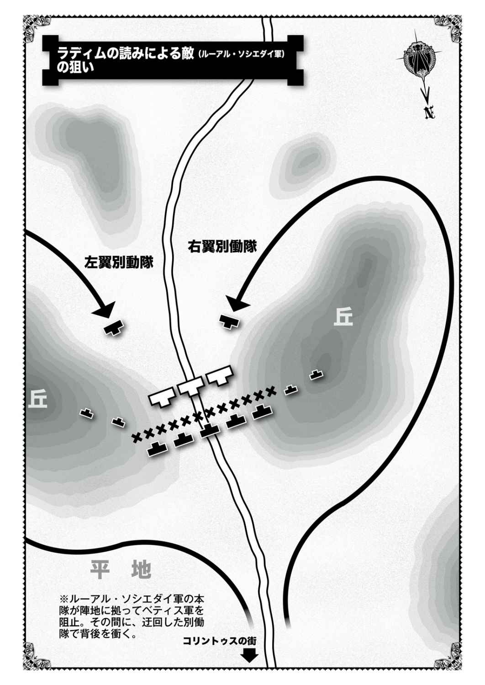
だが。
ラディムは口の端 を吊りあげた。
それは欲張り過ぎというものだろうよ。追い求める報 酬 が高すぎると、手痛いしっぺ返しを食うことになるぞ。それを教えてやろう
ラディムの考えはこうだ。
包囲軍が南から来る援軍に対して陣を構築しているなら、構築の最中に背後から襲いかかればいい。敵は四千いるが、そのうちの二千近くは別働隊として主力から離れて作戦行動中。物見によれば敵主力は千五百から多くても千八百だというが、ここでは最大に見積もって千八百としておこう。街を出た自軍は千百。物見部隊用にコリントゥスの守備兵を百人連れてきたから、千百は丸々戦闘要員として使える。そうなると戦力比は一対一・六。圧倒的に不利というような比率ではない。その上、敵はこちらに背を向けて陣地の構築中なのだから、そこを騎馬中隊を先頭にして背後から襲いかかれば、七百の兵力差など関係なく、一 気 呵 成 に蹴 散 らすことができる。
ラディムの軍は、何も戦闘で敵を壊滅させる必要はない。敵陣を突破して、こちらに向かっている援軍と合流すれば、まずは目的を達することになる。
何しろ敵の主力は陣地を構築中で、剣や槍 ではなく槌 や鍬 を持っているんだからな。相手の騎兵だって、馬を下りているはずだ。しかも、南から来る援軍に対する陣地は、北から襲いかかる我が部隊にはほとんど無力。
おそらく敵の指揮官は、籠城部隊全軍が即座に街を出たことをまだ把握しておらず、だからこそこんな作戦を採 ったのだろうと、ラディムはそう推測した。
ラディムは戦闘の推 移 を思い描き、吟 味 する。
まずは我が部隊が敵主力の背後から急 襲 して、連中を蹴散らし、構築中の陣を突破、そのまま南の援軍と合流する。合流した後に反転、混乱している敵主力にもう一撃を加えれば、敵は陣を支えきれない。ちりぢりになった敵の主力を追 討 すれば、再起不能なほどの打撃を与えられる。たとえ途中で別働隊が駆けつけてきたとしても、すでにその頃には敵の主力部隊はその機能を停止するほどの損害を受けているから、援軍と合流している籠 城 軍のほうが圧倒的に有利な構図には変わりがない。駆けつけてきた別働隊が一隊だけならその場で迎え撃てばよし。万が一、二隊同時に現れたら、我らはコリントゥスの街に引き揚 げればいいだけだ。援軍は無事に入城、しかも敵戦力は半減。そうなれば、コリントゥスの防衛、果たしたも同然だ。
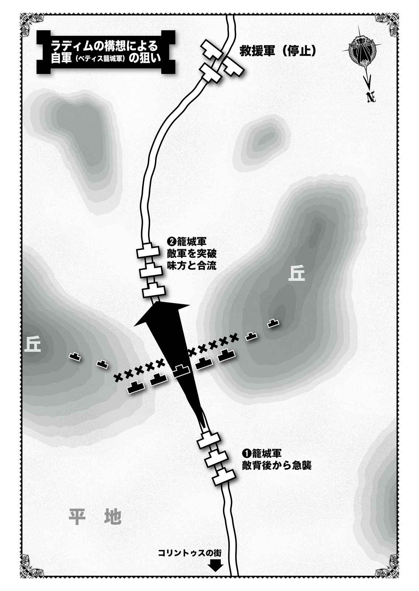
そこまで読んだラディムは、持ち前の果断さを遺 憾 なく発揮した。
副官と数人の幕僚を呼び寄せたラディムは、急いで自分の考えを説明した。
「なるほど、それなら我が軍の勝利は疑いようもありませんな」
副官たちが納得した顔で頷いたので、ラディムは周りの幕僚も呼び集めて馬の歩みを止めぬまま、馬上から最終的な決断を下した。
「物見部隊を先行させて奴らの動向を探れ。我らはこのまま行き足を上げ、陣地を構築中のルーアル・ソシエダイ軍主力に背後から迫る。物見部隊は、敵主力が陣を構築中であることを確認。その場合は連絡不要。奴らがこちらへ備えている場合のみ、物見部隊から中止の伝令を走らせろ。連絡がなければ我らは予定どおり奴らの後方から突撃する。突撃の先 鋒 には騎馬中隊百と大隊騎兵の二百を充てることにする。その後に続けて歩兵が突撃。敵兵を蹴散らし、そのまま陣を突破、南から接近中の後詰め部隊と合流する。ここまでが第一段階だ。合流を果たした後に反転、混乱している敵主力にもう一度襲いかかり、これを撃滅する。敵別働隊に対する備えは、後詰めと合流した後に準備する。以上だ。何か質問はあるか？」
「左右の丘に上がっている兵がいるようですが、そちらへの対応はどうしますか？」
「報告によればそれほど多くないようだから、そちらは無視すればよい。もし予想以上の数が上がっている場合は、逆に陣地の守備が手薄になっているわけだから、こちらの突破が容易 くなる。どちらの場合でも無視すればいいだけだ。我々は陣を抜けて援軍と合流するのが目的なのだからな。丘の上に上がった少数を相手にする必要はない」
「了解いたしました」
ラディムは幹部の顔を見渡した。
「他には？」
それ以上の質問は出なかった。どの顔にも勝利を確信した自信が漲 っている。
「よし。では各部隊に命令を伝達。全軍の行き足を上げさせろ。目標は我らに背を向けて陣を構築中の敵主力を蹴散らし、突破すること！」
「ははっっ！」
こうしてラディムが率いるベティス籠城軍は進軍の速度を上げ、コリントゥス包囲軍主力が陣地を構築中の地点へと迫っていった。
７
こちらはコリントゥスの街への援軍、ベティスの二大隊千八百の本陣。
援軍は、先陣が第一大隊の六百で、これを三百ずつ二段に分けている。中軍が第二大隊の九百で、これは三百ずつ三段に分けている。後陣が第一大隊の三百で、全軍が縦陣隊形で街道沿いを北上していた。
ただし、後陣の三百は兵糧を運んでいるため、実質的には輜 重 部隊である。いざとなれば後陣三百の実戦投入もあり得るが、その場合は兵糧を捨てることになりかねない。援軍の首脳にしてみれば、そんな事態だけは避けたいところだ。従って、現状、援軍の戦闘兵力は千五百というのが実情だった。
放った物見部隊から、つい先ほど敵部隊の発見を告げる報がもたらされたために援軍は行軍を停止し、次々と物見部隊を放ち続けている。
先ほどから、新たに放った物見部隊からの伝令が続々と本陣に駆け込んできていた。
「敵部隊は街道筋の一点で停止、陣地の構築を開始しております」
「敵別働隊が左右に分かれ、迂回を開始しました」
「敵の右軍は我がほうから見て左手の丘を迂回していきます」
「敵の左軍は我がほうから見て右手の谷筋に入り込みました」
「陣を構築中の敵主力はおよそ千五百から二千」
「別働隊の数は、それぞれ一千前後かと」
「敵が陣を構築している地点は左右に丘があり、丘と街道を押さえられると、我が軍はそれ以上進めなくなります」
援軍を率いる指揮官ネゥロイは、臨時の作戦指揮所で、難しい顔で腕組みをしたままじっと考え込んでいる。
作戦指揮所は街道から少し離れた緩やかな斜面を登った場所に設 えてある。
指揮所といっても、臨時の上に仮設だ。陣地の構築もしていなければ幔 幕 すら張っていない。ちょっとした平地に折り畳みの野戦卓が置かれ、その周りに床 几 が並べてあるだけだった。
いま、並べられた床几に援軍の幹部が勢揃いしていた。
地図が広げられた野戦卓の右手に座っている副官ミハイラスが、上座にいる指揮官に伺 いを立てる。
「敵の狙いは、主力が陣を構築して我がほうの足を止め、その間 に別働隊が迂回してこちらを左右から挟撃、そこに主力が襲いかかる......というふうに読めますが、如何 いたしますか、ネゥロイ様」
腕組みをしたまま。ネゥロイは居並ぶ幹部の顔を見渡した。
「狙いはそのとおりだろうな。このままでは三方を塞がれる形になって完全に足止めだ。三方から同時に襲われる可能性はほとんどないが、三つの部隊のうちのどれかと戦闘になれば、残りが駆けつけてくる。そうなると兵力差が大きいから抗 しきれないだろう」
「多少時間が余分にかかっても、迂回して街道を離れ、敵と接触しないでコリントゥスに近づくしかないのではありませんか？」
と発言したのは第一大隊長であるアイキュロス。
「だが、敵の別働隊が左右に展開している以上、それをも避けるとなると、大幅な迂回を強いられる。この辺りは意外と起 伏 のある地形だから、街道を離れての行軍はかなり時間がかかる」
と言うのは第二大隊長ピアンダス。
「そうは言うが、敵が待ち受けているところへ突っかけるわけにもいかんだろう。我が部隊の目標はコリントゥスの街の救援だ。時間がかかっても、兵の損 耗 を避け、無事に兵と兵糧を運び込むことを第一に考えるべきではないか？」
アイキュロスがそう言うと、ピアンダスが低く唸った。
「それはそのとおりだが......」
ピアンダスは顔をネゥロイに振り向けた。
「ネゥロイ様、コリントゥスの兵糧はあと一旬 日 程度という話でしたな？」
ネゥロイが傍らの救援軍副官のほうを見て発言を促した。頷いて、副官が口を開く。
「そうです、ピアンダス隊長。期日が過ぎたからといって直 ちに食べる物がなくなるというわけではないでしょう。住民の備蓄もあるでしょうし。もっとも、可能ならそちらには手を付けないでおきたいものですが」
「今日明日、直ちに......というほど切 羽 詰まっていないのなら、大きく迂回しても敵との接触を避けるべきかと」
アイキュロスはそう主張した。
「ですが、大きく迂回したとしても、行軍経路を敵に察知されれば、いずれ追いつかれます。こちらには兵糧を運んでいる後軍がいますからね、一目散にコリントゥス目指して走る......というわけにはいきませんよ」
と副官に言われ、アイキュロスは顔を顰 めた。
「そうだな。追いつかれて野戦になれば、兵力差が響く......」
二人の大隊長が黙り込んだので、それまで聞き役に徹していた大隊副長や幕僚たちが一斉に顔を指揮官ネゥロイに向けた。
「コリントゥスに籠っている友軍はどうしているか？」
とネゥロイに訊かれ、副官は頭を下げた。
「申し訳ありません。まだ連絡がついておりません。商人に化けさせた者が城内に入ったはずなのですが、出てくるのが難しいようでして、まだ戻ってきておりません」
「友軍との連係が取れれば、奴らの狙いを打破することも可能になるのだがな」
そのとき、まさにネゥロイの望みを実現させるような朗 報 が飛び込んできた。
「申しあげます」
「どうした？」
「籠城軍からの伝令が参りました」
「なに!? 」
その場に居並ぶ全員の顔が輝いた。
「直ぐにここへ通せ！」
「はは」
走り去った本陣詰めの衛兵は、即座に伝令兵を引き連れて戻ってきた。
伝令兵はネゥロイの前に跪 き、ラディムから託 された言葉を伝えた。
「包囲軍が貴軍の撃破を狙って包囲を解き、コリントゥスを離れたので、我らは街を出て敵の追撃に移った。別働隊が現地を離れ、敵主力が街道封 鎖 を図 り陣地の構築を開始したのを確認。我が部隊はこれを背後から急襲し、敵防御線を突破、貴軍との合流を図ることとする。合流の後は直ちに反転、混乱している敵主力を撃 滅 したい。なお、迂回している敵別働隊の動向には充分に注意されたし。以上であります」
居並ぶ幹部たちから、おお、という歓声が上がった。
「ネゥロイ様、これならば」
と副官が言うと、指揮官は大きく頷いた。
「さすがにラディム、決断が早い。ならば我らは臨戦態勢を保持したまま、この場にて待機。籠城軍が攻撃を開始したら、それに呼応して前進を開始する。友軍が敵陣を突破して合流を果たしたら直ちに突撃に移る。もしも友軍が陣地を突破しきれない場合は、合流を待たずにこちらも参戦する。前後から挟撃態勢を築けば必勝不敗だ」
「ははっ」
「とはいえ、敵別働隊の位置を探っておく必要があるな。新たな物見部隊を出して我が部隊の左右方向を念入りに探らせろ。別働隊が接近してくるのを許してはならん。敵の主力と籠城部隊の戦端が開いたら、直ちに本陣へ伝令を走らせる手 筈 も整えておけ」
「了解でありますっ！」
「よし、準備を始めろ！」
居並ぶ幹部たちが弾かれたように床几から腰を浮かせた。
ラディムの果断かつ即断の策を誉 めそやしたネゥロイだが、その即断がじつは速断だという可能性にまでは思い至らなかった。
かくしてベティス側の籠城軍、援軍の双方が、ルーアル・ソシエダイ部隊に対する優位性を確信したまま、敵軍への接近を図った。
戦端が開くのは、それほど先ではない。
８
「敵の様子はどうですか？」
包囲軍指揮官アリアンレイが、部下からの報告を受けて戻ってきた若い副官に尋ねた。
「討って出た籠城軍は順調に近づいてきておりますが、援軍のほうは一旦停止したとのことであります」
「こちらの思惑どおりの推移というわけね」
「さようであります」
「別働隊は？」
「右翼の隊はすでに丘を登りつつあります。敵の援軍、籠城軍のどちらからも丘の陰になりますから、動きは察知されていないだろうと思います。左翼軍は谷を辿 って戻っていきました。こちらは敵の物見部隊に見つからないとも限りませんが」
「見つからないに越したことはないけれど、見つかったとしても、それだけではこちらの意図まで判らないでしょうね」
「でありますね」
「では、こちらもそろそろ本番への備えに移るとしましょうか。陣地の構築を急がせて。それと」
アリアンレイが、にぃと口の端を吊りあげた。
「移動の準備も怠 りなく」
「了解いたしました」
「この移動の素早さこそが勝利と敗戦を分ける鍵 となります。移動と同時に反撃を開始できるように、予定行動を各小隊長に周知徹底させておいて」
「ははっ」
９
「ラディム様、物見に続いて先鋒が敵部隊を視認しました」
「敵の様子は？」
「未 だに陣を構築中だとのことであります」
「ならば予定どおり！」
中軍の中程に位置する本陣で、馬上のラディムは腰の剣を抜き放った。
「まずは騎馬隊を駆けさせ、陣地に突入させろ。敵が混乱しているうちに歩兵を乗り込ませて陣地を蹂 躙 する。弓の射撃を心配する必要はないから、盾ではなく最初から剣を持てばいい」
「おお！」
「第一陣、騎馬中隊と大隊騎兵突撃！ 間 を置かずに、第二陣、第三陣と突入させよ」
「おおお～～～～っっ！」
縦陣の隊形を採った籠城部隊千百は、前方で陣を構築中のルーアル・ソシエダイ部隊目指して一斉に駆けだした。
10
見張りの兵が、背後に現れた敵部隊を発見した。
「後方からベティス軍、来ます！」
「直ちに陣替え！ 急げ！ 塹 壕 掘 削 組は弓の斉 射 用意！」
ルーアル・ソシエダイ軍の陣地に、じゃんじゃんと銅 鑼 が鳴り響く。
「陣替え！ 陣替え！」
「急いで移動しろ！」
「射撃用意急げ！」
各部隊の小隊長が、配下の兵を叱 咤 し、追い立てる。
逆 茂 木 を設置したり木 柵 を立てたりしていたルーアル・ソシエダイ兵が、急いで防御線の向こう側へと移動していく。
それを見たベティス軍先鋒部隊の騎兵たちから嘲 笑 が上がった。
「馬鹿め。援軍に対して造っていた陣の向こうへ逃げてどうするつもりだ」
「せっかく造った陣地が無駄になったな」
「よし、一気に踏み潰すぞ！」
騎馬兵が鐙 に載せた足に力を入れたその瞬間。
ひゅんひゅんと空気を切り裂く鋭い音を立てて上空から矢が降ってきた。
盾を構えていなかった騎馬兵が数人、矢に貫かれ、どさどさと地面に落下する。
「撃ってきたぞ!? 」
「どういうことだ!? 」
「狼狽 えるな。急場凌 ぎの攻撃だ。大したことはない。とりあえず盾を構えろ」
騎馬隊隊長の叱咤で、騎馬兵は慌てて馬の横っ腹に取りつけてある盾を引き抜いた。
急場凌ぎの攻撃。そのはずだった。
何しろルーアル・ソシエダイ軍は陣地の構築の真っ最中で、兵が手にしていたのは弓でも剣でもなく、鋤 や鍬 や槌 であるはずだった。
しかし、上空から降ってくる矢の数はますます増えていく。今や降り注 ぐという形容のほうが相応しいほどだ。
兵は盾で身を守れても、馬に当たれば馬が暴れるから、結局、騎 兵 は落馬してしまう。
落馬する兵の数が次第に増えていった。
大きく舌打ちした騎馬隊の隊長は、馬の足を速めることを決意する。
それまでは後続の歩兵を引き離してしまわない程度の速度で駆けていたのだが、敵の弓部隊による反撃が予想以上に早く、しかも予想以上に密度が濃い。このままでは相手の陣地に達する前に相当数の犠 牲 が出てしまう。後続の歩兵との距離が多少空いても、一気に敵陣まで駆けて弓の攻撃を無効化するほうがいい。
「全速で突入！ 遅れるな！」
馬の腹を踵 で蹴った騎馬隊の隊長が敵陣めがけて突進を始めた。周囲の騎馬兵も遅れじと馬を駆けさせる。
先陣を切る騎馬隊三百は恐るべき速度で敵陣に迫った。
11
「覆 い布を取れ～～～～っっ！」
ルーアル・ソシエダイ軍の中で新たな命令が轟 き渡る。
陣地の向こう側へ逃げた兵が大勢戻ってきて、逆 茂 木 に取りついた。
兵たちは逆茂木を覆っていた布を取り払っただけで、それ以外は何もせず、一目散に木柵を潜り抜け、塹壕の中へと逃げ帰っていく。
「なんだ？」
「なんのつもりだ、奴ら？」
突撃していく騎馬兵が前方に目を凝らすと。
「なっ、なんだ、あれは!? 」
12
騎馬兵がそこで見た物は！
「どうして逆茂木がこちらを向いている～～!? 」
「どうして陣地の向こう側に塹壕が掘られているんだぁぁ!? 」
馬上の騎兵が絶叫を放った。
13
逆茂木とは、木の枝や幹を組み合わせて結 わえた防御用の柵だ。高さはそれほどではないが、枝や幹の先端を尖らせているのが特徴的で、それを敵に向けて設置することで防御力を上げようという簡 易 柵である。
その逆茂木が敵の陣地に並べられている。
それだけなら何も不思議はない。ルーアル・ソシエダイ部隊はベティスの救援部隊を阻止するために、ここに陣を構築していたのだから。
しかし。
逆茂木の尖った部分が、何 故 か背後から襲いかかるベティス部隊のほうに向けて設置されていた。
逆茂木だけではなかった。
逆茂木の向こうには低いながらも木柵が立っている。木柵のさらに向こうには塹壕が掘られ、掘りだした土を積みあげ逆茂木や木柵を補強してあるのだが、塹壕が柵の向こうにあるというのはおかしい。決定的におかしい。南から進んでくる救援部隊に対する陣地であるなら、塹壕は柵のこちら側――北側に掘られていなければ意味をなさない。
これでは、まるで......。
「まるで我が部隊に向けて造られた陣地ではないか～～っっ!? 」
そう、まさにそのとおり。
アリアンレイは、救援軍に対して陣地を構築しているように見せかけながら、その実、コリントゥスの街から討って出てきたベティスの籠城軍部隊に向けて構築していたのだ。だから逆茂木も木柵も塹壕も、後方を向いている。
逆茂木は、人が通れるくらいの隙間を保って並べられている。ルーアル・ソシエダイ兵はその隙間を抜けて向こう側へと移動したのだ。しかし、人は抜けられても全力疾 走 してくる馬で駆け抜けられるほど大きな隙間ではなかった。
木柵も、人であれば潜り抜けられる間隔で丸太が組まれている。だが、騎馬で走って抜けるには狭すぎる。
逆茂木も木柵も、味方の兵の移動と敵の騎馬兵の阻止を念頭に置いて巧 妙 に作られているのだった。
まずは逆茂木で騎馬隊の突進が防がれた。
走ってきた勢いのまま逆茂木に衝突すれば、馬が傷ついてしまう。最悪、馬が逆茂木で串 刺 しになり、乗っていた騎馬兵は惰 性 で宙を飛び、敵兵の只 中 に落下するだろう。それでは討ち取ってくれといわんばかりだ。だから、「最悪」を想像した騎馬兵は必死で馬を急停止させた。
全速力で駆ける勢いのまま逆茂木を跳び越えた馬もいたが、それらもその先の木柵に引っかかる。そこを塹壕の中から弓で狙い撃ちされ、落馬する騎馬兵が続出した。
剣や槍を振るおうにも、目の前にあるのは逆茂木や木柵で、敵兵は皆、柵の向こうだ。
急ごしらえの木柵はそれほど高くはない。しかし、馬ではぎりぎり跳び越えられないという絶妙の高さだった。
目の前の木柵は、鎌か何かを引っかけ、数人が力を合わせて引っ張れば倒れてしまう程度の強度だろう。だが、最初から木柵を突破する必要があると判っていればともかく、敵兵は木柵のこちら側にいると思っていた籠城軍の騎馬兵が、そんな物を用意しているはずもなかった。
では、体当たりするか？ だが、それでは馬が傷 む。馬上の騎兵が落馬してしまう。
それ以前に、手前にある逆茂木をどうにかしなくてはならない。
逆茂木の手前で急停止する馬。
逆茂木に激突する馬。
逆茂木を跳び越えたものの、木柵に行く手を阻まれて立ち往 生 する馬。
それらを狙って矢が雨あられと射かけられた。
騎馬兵の特徴はその速度であり、縦横無尽に移動できる機 動 力 であり、そして速度と馬体重から来るところの突撃の際の破壊力だ。一方、弱点は重い鎧 を装着できないこと。着けたら速度が犠牲になる。最大の長所である機動力が損 なわれる。だから騎兵の装 甲 は薄めで、弓で狙い撃たれると弱い。
盾を掲げても隠れるのは体の一部だけ。敵兵は木柵の直ぐ向こうから撃ってくるのだ。どこでも好きなところを狙い撃てる。馬上の騎兵が次から次へと落馬していく。
かろうじて騎 射 で反撃を開始した騎馬兵もいたが、敵兵は塹壕の中から撃ってくるのに対して、自分は騎乗したままの射撃だ。数本の矢を撃つ間もなく、体中に無数の矢を生やして落馬する始末だった。
14
「盾掲げ！ 全力疾走！」
「騎馬兵を助けるのだ！」
騎馬部隊の惨 状 を視認した第二陣の歩兵三百が、味方を救おうと全力で走り始めた。
だが、彼らが陣地の前に辿り着く頃には、突撃した騎馬部隊の大半は使い物にならなくなっていた。
今度は歩兵部隊をめがけて矢が雨あられと降り注ぐ。
機動力を優先した軽装歩兵は全身を鎧で覆っているわけではない。体のどこかに矢が刺されば、たちどころに戦闘力を失ってしまう。盾を掲げてかろうじて矢を防いでも、逆茂木の前まで来れば走る速度を落とさざるを得ない。
「並んだ逆茂木の間を抜けろ！」
「逆茂木を引き倒して隙間を広げよ！」
小隊長たちの命令に、歩兵たちは必死で逆茂木を引きずり倒すが、その間にも矢で倒れる歩兵が続出する。
逆茂木を抜けても、そこには木柵がある。
「木柵は騎馬用だ。人なら通り抜けられるぞ！」
「そのまま敵陣へ斬り込め！」
剣を抜いた小隊長が絶叫する。
木柵にはたしかに人が通り抜けられるほどの隙間があるが......。
木柵の向こうに槍を構えたルーアル・ソシエダイ兵が出現した。塹壕の中から弓を撃っていた兵が、得物を槍に持ち替えて飛びだしてきたのだ。
横一列に並んだ敵兵が、木柵を抜けようとするベティスの歩兵に向かって一斉に槍を水平に突き出すと、顔や手足など、鎧に覆われていない部分を貫かれた歩兵がその場に転がった。
柵の隙間を抜けるためには横に並ぶしかない上、突撃歩兵は弓も槍も持っていない。彼らが持っているのは接近戦用の剣だけだ。だが、剣を振るおうとしても木柵が邪魔で相手には届かない。一方、柄 の長い槍は木柵のこちらにいるベティス兵に余裕で届く。木柵を巡 る戦闘は、圧倒的にルーアル・ソシエダイ兵が有利だった。
なんとか木柵の向こうへと乗り込んだベティス兵もいたが、衆 寡 敵せず、あっという間 にルーアル・ソシエダイ兵に討ち取られてしまう。
騎馬部隊を救おうと突撃した第二陣の三百が壊滅するのに四半刻もかからなかった。
木柵のこちらには地 獄 絵 図 が広がっている。
引き倒された逆茂木の周りにはベティスの騎馬兵、歩兵が死 屍 累 々 と積み重なった。そこかしこに血の池が出現し、逆茂木も木柵も血でどす黒く染まっていた。
15
第二陣の生き残りが必死の退却を始めた。
第一陣、第二陣の惨状を目の当たりにした第三陣三百が急停止する。
このまま突っ込めば自分たちも同じ目に遭うと思えば、止まりもするだろう。だが、後方から駆けてくる第四陣には前方の状況が把握しきれていないため止まろうとしない。前方からは逃げてきた第二陣の生き残りが走り込んでくる。
結果、味方同士がぶつかり、押し合い圧 し合いするという混乱が生じてしまった。
それを見逃すアリアンレイではない。
「追撃に移ります！ 全軍、我に続きなさい！」
剣を抜いたアリアンレイは芝 居 がかった調子でそう叫ぶと、真っ先に木柵から飛びだしていった。
押し時を心得た命令であり、配下の兵の心を摑 む果敢な行動だった。
白銀の鎧を煌 めかせ、長い黒髪をなびかせて駆けだすアリアンレイの後ろ姿は、さながら勇 武 と雷鳴の守護天ビーシュモノイのように神 々 しかった。
その姿を見て味方の兵士たちが奮 い立つ。
「アリアンレイ様に後 れるな！」
「続け続け続け！」
「敵は混乱している！ 今が好機ぞ！」
アリアンレイに続いて陣を飛びだした部隊長や幕僚が、抜いた剣をぐるぐると振り回しながら絶叫を放つと、槍を持った歩兵が木柵を潜り、前方のベティス軍部隊に向かって突進を開始する。
今や完全に攻守ところを変えていた。
16
第三陣にいたラディムが必死で自軍を立て直しているところへ、ルーアル・ソシエダイ兵が殺 到 してきた。
「敵が迫ってくるぞ！」
「二陣の兵は後ろに下がらせろ！」
「敵に備えよっっ！」
部隊長が配下の兵を叱咤するが、味方同士で押し合っているような状況では、まともな迎 撃 態勢など取れなかった。
槍 衾 を作ったルーアル・ソシエダイ軍の先鋒がベティス軍の第三陣と接触する。
「来たぞ～～っっ」
「下がれ下がれ！」
「構えろ構えろ構えろ！」
混乱の最中、なんとか敵への対応を取ろうと隊長たちが四苦八苦している。しかし、兵の混乱はそう簡単には収まらない。
第一陣、第二陣の壊滅を目の当たりにした三陣の前衛は下がろうとするし、前方の様子が把握できていない三陣の後衛と四陣の二百はなおも前に出ようとする。しかもそのあいだでは、二陣の生き残りの兵が右往左往している。
結果、ベティス軍はその場からろくに動けないまま、殺到してきたルーアル・ソシエダイ軍中軍と衝突することになった。
「上げよっっ！」
衝突する直前に、ルーアル・ソシエダイ兵は一斉に槍を持ちあげ、垂直に立てる。
「下ろせぇっっ！」
部隊長の号令が轟き、垂直に立てた槍が振りおろされた。
槍の穂 先 が先頭のベティス兵の兜を烈 しく叩いた。その衝撃で何人もの兵がその場に昏 倒 する。
密集状態では槍を突くのが難しい。突いたとしても、相手を刺し貫いてしまうと抜くのが大変だ。しかも、いちばん狙い易い上半身は鎧に覆われている。となれば、まずは頭を叩くのが手っ取り早い。
立てていた槍を振りおろすとき、槍の先端は意外と速度が出ている。叩かれたときの衝撃は想像以上に大きいのだ。
致命傷は与えられずとも、まともに兜を叩かれた兵は脳 震 盪 を起こし、一時的にではあっても戦力であることを停止する。
その場に倒れたベティス兵を踏みつけ、ルーアル・ソシエダイ兵が前進する。
「上げよっっ！」
またも槍が垂直に持ちあげられ。
「下ろせっっ！」
勢いよく振りおろされる。
がき～～ん、がき～～んと、金属同士がぶつかる甲 高 い衝撃音が響き。
またも何人もの、いや十数人のベティス兵が倒れた。
混乱して横広がりになった部隊の一列目、二列目が倒れ、ルーアル・ソシエダイ兵の先頭がさらに踏み込んでくる。
後方では、倒れたベティス兵に対してさらなる攻撃が加えられている。こちらは剣による攻撃だ。何しろ相手は地に倒れ伏しているのだから、ゆっくりと狙って斬りつけ、あるいは刺せばいいだけだ。一時的に戦力でなくなったベティス兵は、永遠に戦力として復帰できなくなる。
槍衾はじりじりと前進し、籠城軍の第三陣は確実にその兵力を減じていった。
ベティス軍が一気に崩れ立たなかったのは戦場が狭かったためである。
左右を小高い丘に挟まれた街道沿いの戦場であるが故に、敵も味方も縦陣隊形。敵の攻撃も狭い範囲に集中せざるを得ない。
その時間的な猶 予 がベティス軍に立ち直りの猶予を与えた。
ラディムは第四陣の二百を二隊に分けさせ、左右に迂回させて丘の斜面に登らせた。丘の上にいた少数の敵兵も、今は丘を降りて参戦しているから、丘の上には味方を阻止する兵力はいない。そのまま敵の背後に回り込めば、形としては挟撃態勢となる。
とはいえ、第三陣は未だに混乱が完全に収まっておらず、なおも敵に押されている上、回り込んだ部隊も百ずつしかいないから、挟撃というのはおこがましいかもしれない。が、少なくとも敵の圧力が軽減されるのは間違いない。そうすれば押される一方だった第三陣の前衛を立て直せるかもしれない。
事実、第四陣の各百が、左右の丘の斜面に取りつき、背後へ回ろうとしているのを視 認 したルーアル・ソシエダイ軍に動 揺 が走った......ように見えた。前衛を押しまくっていた敵先鋒の勢いにも陰 りが出た......ように見えた。
「今だ。押せ押せ押せ、押し返せ！」
第三陣の本陣で、ラディムが剣を振り回して叫び続ける。
周囲を固めるラディム付きの親衛隊が前に出るのに引っ張られるように、周囲の兵も左右に分かれて前進を始めた。
と、そのとき、右手の丘の上で喊 声 が上がった。
「なんだっっ!? 」
振り仰いだラディムの目に映ったのは。
丘の上に新たに出現したルーアル・ソシエダイ部隊の姿だった。
「いかん！ 回した部隊が！」
だが、戻そうとしてももう遅い。
丘の斜面を進んでいる迂回部隊の横っ腹めがけて敵別働隊が駆けおりてきた。
「奴らが別働隊を放った真の目的はこれだったのか！」
突如現れた敵の別働隊に備えて陣替えをする余裕も逃げだす余裕もなかった。駆けおりてくる別働隊の一撃をまともに食らって、百しかいない右翼迂回部隊は、あっという間に四分五裂してしまう。
それを遠 望 した左翼迂回部隊が足を止める。こちらにも敵の伏 兵 がいるのではないかと疑ったのだ。
伏兵がいれば、右翼同様、丘の上から奇 襲 される。無防備な横っ腹を衝かれては部隊を維 持 できない。敵の主力後方へ回り込むのを中断し、丘の上へ備えて慌ただしく陣替えをした......のだが、こちらには別働隊は現れなかった。
代わりに敵主力から攻撃部隊が迫ってきて、左翼迂回部隊の部隊長は混乱する。
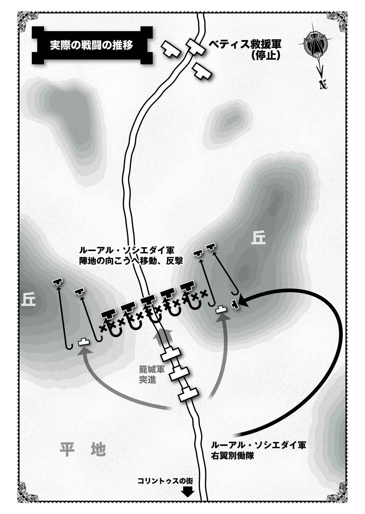
上に備えれば下からの攻撃に対抗できない。だが、いま再び陣替えをすれば......上方に敵が現れた場合、抵抗できない。かといって、上下両方に備えるほどの兵数はない。
上か。それとも下か。どちらに向けばいいのか。
部隊長が迷っているあいだに、主力から分かれた一部が早くも丘の斜面を駆け登ってきた。
下に向かうしかないか。だが、これが陽 動 だという可能性は高い。敵の別働隊はもう一隊いたのだ。我々が下を向いたとたん、丘の上に現れるかもしれない。そうなれば終わりだ。ぎりぎりまで待って......。
部隊長はまだ決断に迷っているが、すでに攻撃部隊の先鋒が眼前に迫っていた。
くそ、陽動ではないのか!? 本当にこちらを攻撃するつもりなのか!?
もはや座 して見ている場合ではなかった。
隊長は大急ぎで下方から迫る敵の部隊に備えさせようとしたが、結局、遅すぎた。
駆け登ってきた攻撃部隊に食いつかれ、これを振り払うことができない。
駆けあがってきた部隊の兵数は二百ほどしかいなかった。左翼迂回部隊は百で兵数は半分だが、高みに位置している分、きちんとした迎撃態勢さえ取れていれば、なんとか対応できたはず。しかし、丘の上の伏兵に備えていた部隊には、きちんとした迎撃態勢が取れていない。
敵に食い破られることはなかったが、敵を押し戻すことも叶わなかった。攻撃部隊も力押しはしてこない。こちらの戦線は膠 着 状態となった。だが、それはルーアル・ソシエダイ側の思う壺 だった。
何故なら。
17
丘の上に出現して敵の迂回部隊を蹴散らしたルーアル・ソシエダイ軍別働隊一千が、その勢いのままベティス第三陣の横っ腹に向かって突進してきた。
何しろ単縦陣である。横からの突撃を食い止められるほど陣に厚みがない。
混乱しながらも、兵数を減らしながらも、戦闘空間の狭 小 さを頼りに、前方から押し寄せるルーアル・ソシエダイ部隊の圧力になんとか抗していた第三陣だったが、横合いから敵別働隊一千の突撃を食らって、ついに崩れた。
別働隊に食い破られ、すべての兵が浮き足だてば、もはや敵の圧力に抗しきれない。
縦陣はずたずたに引き裂かれ、三陣の残存兵は前後に切り離されてしまった。
敵の只中に取り残される形となった三陣の前衛が次々に討ち取られていく。
「もはやこれまで！」
ラディムは三陣の生き残りを退却させようとして合図を送った。
退却を報 せる太鼓が打ち鳴らされ、残っている三陣の兵は我先に後方へ下がっていく。
大打撃を受けた右翼の迂回部隊の生き残りは、すでに戦場から逃げ去っていた。
敵に食いつかれたままの左翼迂回部隊は、なんとか陣形を保 ったまま下がろうと必死の努力を続けていたが、味方の退却の合図を聞いた兵士が、一人逃げ、二人逃げ、三人逃げと、櫛 の歯 を挽 くように逃げだし始めてしまうと、もう保 たなかった。
小隊長たちは必死に抵抗を命じたが、逃げ腰になった兵たちは言うことを聞かない。
ある時点でいきなり均衡が崩れ、迂回部隊の陣形は一気に砕けた。
敵が陣の中に躍 り込んでくる。
戦いはそこまでだった。
混乱する部隊の中で、兵たちはひたすら逃げ惑うだけだ。
組織だった戦いができなくなれば、どれほど兵士個人に力量があっても、多数の敵に押し包まれ討ち取られるだけ。それが部隊同士の戦闘というものだ。
左翼迂回部隊百は完全に崩壊し、逃げだせた者は二十人いたかどうかだった。それらの兵もちりぢりに逃げ去ってしまったから、原隊復帰はとうてい不可能だろう。
コリントゥスの街から討って出たベティスの籠城軍千百は、この時点で僅 か百余りを残すのみとなっていた。
18
コリントゥスに籠城していたベティス軍と敵軍が衝突したという報告は、救援軍が放った物見によって直ちに指揮官ネゥロイの許 へ届けられた。
「我らも戦場へ駆けつけたほうがいいのではありませんか？」
と上申した幕僚もいたが、ネゥロイはその意見を採らなかった。
「ただでさえ丘に挟まれて狭い場所に我が部隊まで入っていったら、戦闘空間が取れず、敵も味方も混乱してしまう虞 がある。それに、友軍は敵の陣地を突破してこちらに駆けてくるのだから、我らが近くまで寄ってしまうと、友軍部隊とぶつかる形になる」
というのがネゥロイの考えだった。正論ではあった。
「それに狭い地形では、突破してきた友軍が反転するのが難しい。もたもたしていると、陣を敷いていた敵部隊に逃げる暇 を与えてしまうだろう。我らはここで友軍を迎え入れ易いように鶴 翼 の陣形で待機。友軍が合流次第、左右の翼 の先頭から動き、縦陣に陣替えしつつ敵陣へ向かって進撃する」
これも正論だ。
しかし、彼の考えは「友軍＝コリントゥスの籠城軍が、敵軍＝コリントゥスを包囲していたルーアル・ソシエダイ軍の陣地を突破してくる」というのが前提となっている。その前提が崩れた場合、自軍が戦場に近い場所にいるほうがいいに決まっている。だが、ネゥロイは友軍の突破、合流の成功を微 塵 も疑っていなかった。
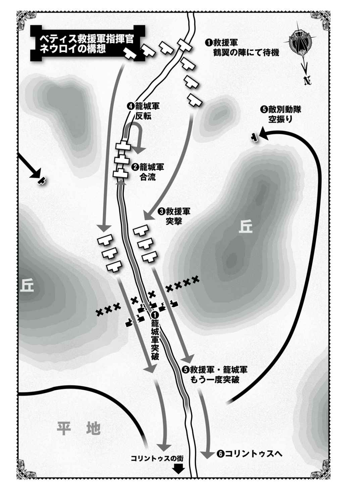
もしもこのとき、念には念を入れてもう少し前に出ていれば......いや、たらればの話をしても意味はない。
敵陣を突破どころか、ほぼ壊滅状態に陥って友軍が退却していったという報 せを聞いたネゥロイは、茫 然 自 失 の体 で、しばらくその場に立ち尽くしたという。
実質的に、ルーアル・ソシエダイ軍に包囲されたコリントゥスの街を救援するというベティス軍の戦術目標は、この時点で達成不可能になったといってよかった。
あとはアリアンレイによる仕上げを見るばかり......。
19
コリントゥスの街を目指して退却していく籠城軍第三陣の生き残り。
退却の途中で第二陣の生き残りと包囲殲 滅 される前に逃げてきた第四陣迂回部隊の生き残りを吸収してはいるが、それでも二百足らずしかいなかった。
街を出る前は大隊一千と騎馬中隊が百で、合わせて千百もいた。それが今では二百もいない。
物見として連れてきたコリントゥスの守備兵は逃げ去ったか、あるいは戦場の近くをうろうろしているところをルーアル・ソシエダイ軍の掃 討 部隊に追撃され、討たれたか捕まったか。いずれにせよ、兵力としては計算できないのは間違いない。
結局、千百の部隊が二百未満にまで減ってしまったのだから、損 耗 率は、なんと八割以上だ。希 に見る、そして取り返しのつかない大敗北を喫 したといえる。
一方、ルーアル・ソシエダイのコリントゥス包囲軍はほぼ無傷である。そうなると、千八百の救援軍で四千の包囲軍を討ち破ることは不可能。
これで救援軍がコリントゥスの街へ入城することが不可能になったわけだ。もちろん兵糧の運び込みもできない。
なんということだ。将軍から預かっていた千百の兵の大半を討ち死にさせてしまうとは。このままではコリントゥスの街が保 たない。新たな援軍を要 請 するか......いや、今さらどの面 下げてそんなことを......。
ラディムは多くの兵を死なせてしまった責任感に身を焼かれるような焦 燥 を覚えながらも、今後の策を必死に考える。
このまま街に逃げ帰り籠城しても展望は開けない。何しろコリントゥスはルーアル・ソシエダイとイリアスタ側の勢力圏に突出しているのだ。包囲軍が補給に苦労することはない。包囲軍はこれまで以上に積極的に、硬 軟 両様で揺さぶりをかけてくるはず。
いや、揺さぶりどころではない。ほとんど守備兵がいない街を相手に四千の兵があるなら、強攻すればいいだけだ。そうなれば......。
考えたくはないが、コリントゥスは一日、二日で簡単に陥 ちるだろう。
救援軍が背後で牽 制 してくれれば、全軍による強攻策は採れないかもしれない。だが、救援軍も単独では打開できないから、ベティスとコリントゥス側は完全な手詰まり状態に追い込まれてしまったことになる。
どうする？ どうすればいい？
そうしてコリントゥスまであと僅かという地点まで駆け戻ってきたとき、ラディムの悩みを一気に解消する存在が、突如、行く手に出現した。
20
「ラディム様、右手から敵兵がっっ！」
部下の絶叫に、考え込んでいたラディムが、はっと顔を上げる。
右手の森――白 兎 騎 士 団 領となっている温泉場があるマドルの森である――の中から、ルーアル・ソシエダイの兵が飛びだしてきた。その数は......。
ラディムの傍らで悲鳴のような声が上がる。
「三百......四百......いや、もっといるぞ！」
「どうしてここにあれほどの敵兵が!? 」
そうか！ そういうことか！
ラディムは出現した敵の正体を悟 った。
あれは、主力から離れた別働隊二隊のうちの一隊だ！
そのとおり。主力と分かれて左手の谷筋へ入り込み、どこかへ移動していった別働隊は密かにここまで戻ってきていたのだ。
ということは、出現した敵部隊の兵力は一千。
それに対してラディムが率いているのは二百弱。
無傷の一千と敗 残 の二百。しかも完全な不意打ちの形。
仰天し浮き足立ったベティス兵には戦意の欠片 も見えない。それに対し、ルーアル・ソシエダイの兵は燃えるような戦意を漲 らせている。戦う前から、勝敗の帰 趨 は火を見るよりも明らかだった。いや、戦いにすらならなかった。
ラディムを先頭に、全員がコリントゥスの街をめがけて走った。
敵に追いつかれる前に街の中に逃げ込む。助かる道はそれしかない。
必死の形 相 で走るベティス兵に、横手からルーアル・ソシエダイ兵が迫る。それでも籠城軍のほうが、なんとか街に先着した。
ところが城門は閉まっている。
当然だ。いつ敵が襲ってくるか判らないのだから、城門が開いているはずがない。
旅人や商人を入れるための大手門横の小さな脇 門 は開いていたが、先ほど望 楼 の見張りが敵兵の出現を告げる銅鑼を鳴らしたため、たった今、閉められたところだった。
もっとも開いていたところで、そちらは人が二、三人通れる程度の小さな門、二百人近い兵が全員逃げ込むだけの時間的余裕はなかっただろう。
逃げてきたベティス兵は城門の前で立ち往生してしまう。
みな口々に、
「門を開けろ！」
と叫ぶのだが、門が開く気配はなかった。
それはそうだ。いま開門すれば、味方と一緒に敵兵までが城内に雪 崩 れ込んでくる。城内の守備兵としては開けるわけにはいかない。
代わりに彼らは、城壁の上から縄 梯 子 を垂 らした。
城門や城壁の前で右往左往していたベティス兵は、我先に縄梯子に取りつこうとする。しかし、兵の数に比して縄梯子は少なすぎる。そこかしこで縄梯子の奪い合いが始まり、とうとう味方同士での斬り合い、殴り合いが始まってしまった。
もはや回復不能の混乱ぶりに、ラディムは抵抗も、城内への逃げ込みも諦めた。
彼は自分の周りにいる幕僚に声をかけ、今も縄梯子を奪い合っている配下の兵を捨て、その場から走り去っていった。
ラディムたちが脱出した直後に、ルーアル・ソシエダイ兵が殺到してきた。
縄梯子を奪い合っていたベティス兵は、あっという間に敵兵の波に呑 まれ、そのまま波間に沈んでいった。
21
こうしてコリントゥスの街を巡る攻防戦に決着がついた。
街に逃げ込めたベティス兵は五十人もいなかった。ラディムと共に逃げたのは二十人ほど。先の戦場から離脱した者が、多く見積もっても四、五十人だろう。
物見として行動していたコリントゥスの守備兵が百ほどで、彼らも街へは帰 還 できなかったが、その後、半数ほどがなんとか救援軍に合流を果たした。
それ以外は討ち死にもしくは負傷、あるいは虜 囚 の身となった。
結局ベティスの籠城軍千百は、なんと一千もの兵を失ったことになる。損耗率九割に達するという、史上希に見る惨 敗 であった。
これは、ラディムとアリアンレイという二人の指揮官の資質の差、力量の差がもたらした結果といえなくもない。
この後、再び四千の軍勢に包囲され、守備兵がいないコリントゥスの街はあっさりと開城した。救援軍千八百は、為 す術 もなくこれを見守ることしかできなかった。
国王とその一家は退去を許され、ルーアル・ソシエダイ兵の護衛付きでマナティウスの街を目指して落ち延びていった。
この護衛部隊は、コリントゥスが陥 ち、国王一家が街を捨て落ちていくことを各国に報せる役目を帯びているのだ。
勝利は大々的に喧 伝 する。それは勝者の側の鉄則だった。
鋼鉄 の白兎騎士団 の活躍によって一時は守られたコリントゥスの街だったが、こうしてアリアンレイが率いるルーアル・ソシエダイ軍の手に落ちた。
アリアンレイと対決したのが、ガブリエラ率いる白 兎 騎 士 団 であったらと思わずにはいられないが、それは無い物ねだりというものだろう。何しろ彼女たちはいま別の戦場に立っているのだから。
この続きは製品版でお読みください。
著者
舞阪 洸
Kou Maisaka
埼玉県所沢市に住んで幾星霜。そんなわたしもついに移住。今度の住居はなんと札幌市！
冬の寒さに耐えられるのか？
凍結した道路を歩けるのか？
などなど、いろいろと不安はありますが、ともかく始めてみなけりゃ判らない。本作が発売になる頃には、わたしは晴れて札幌市民となっていることでしょう。
さておき、舞阪百貨店別館稼働中。
http://maisaka100ka.blog.fc2.com/
イラスト
優木きら
Kira Yuuki
宮城県在住。
部屋の端っこで細々と絵を描いています。可愛い女の子と、太ももの絶対領域を描くのが大好き。
まだまだ未熟者ですが精一杯頑張りますのでよろしくお願い致します。
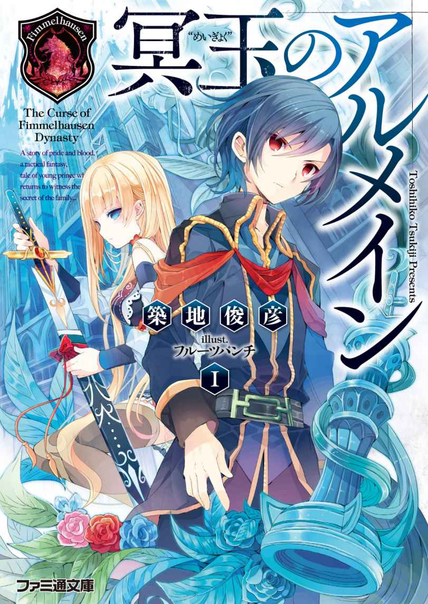
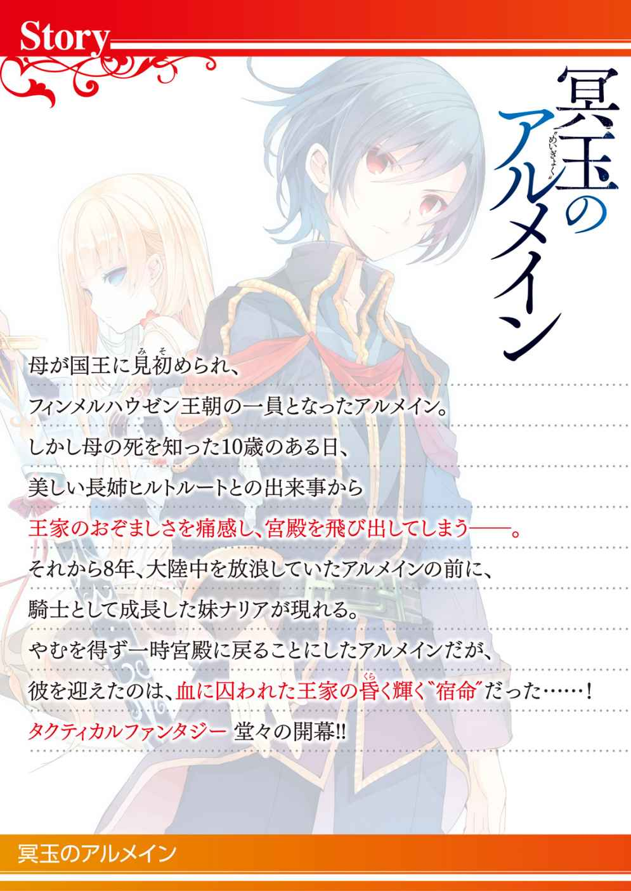
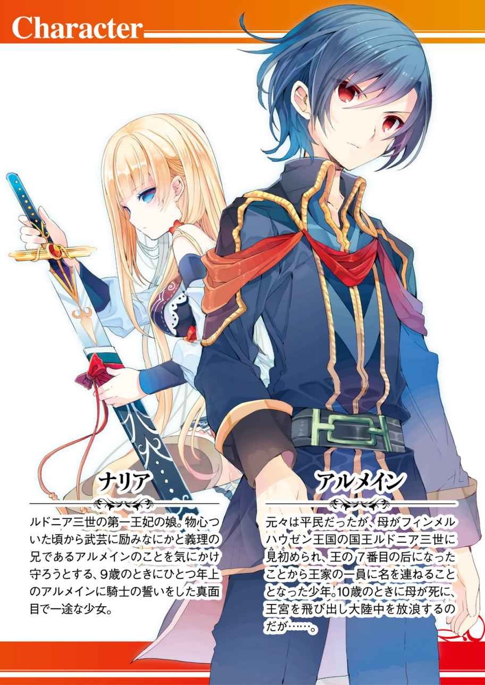
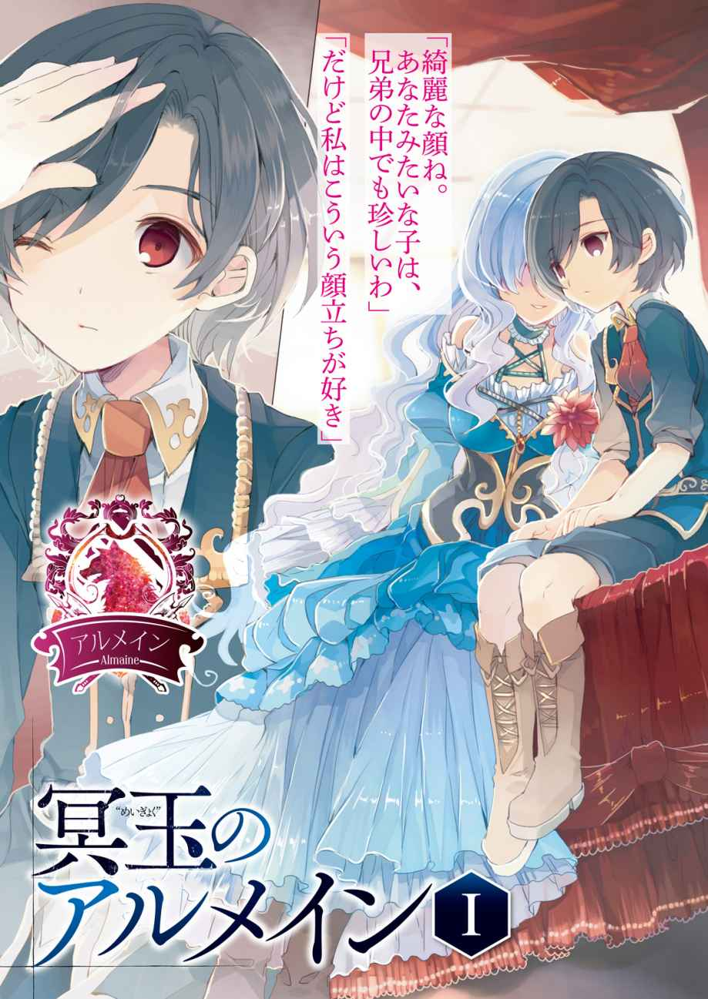
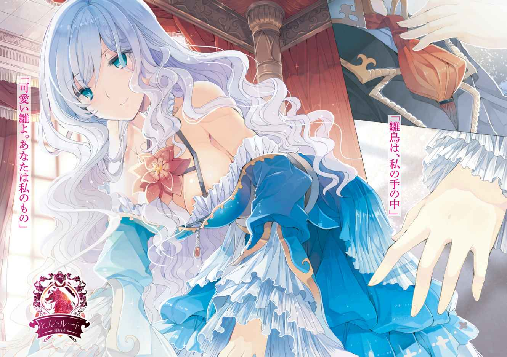
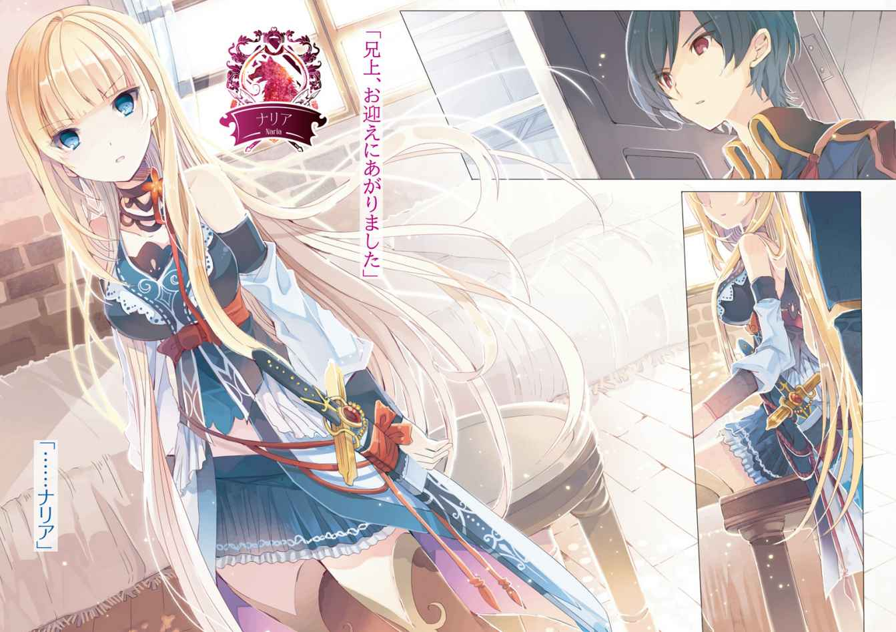
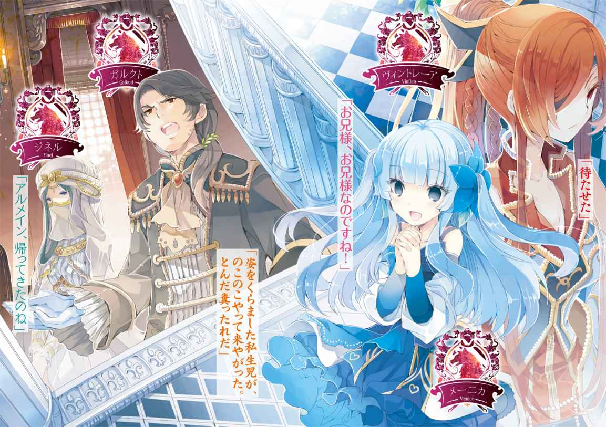
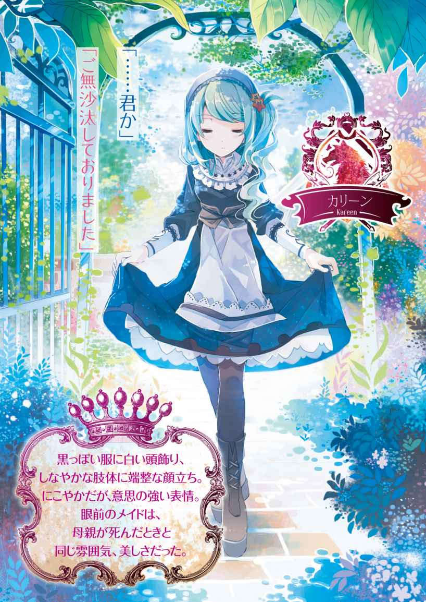
冥玉のアルメインⅠ
著者 築地俊彦
イラスト フルーツパンチ
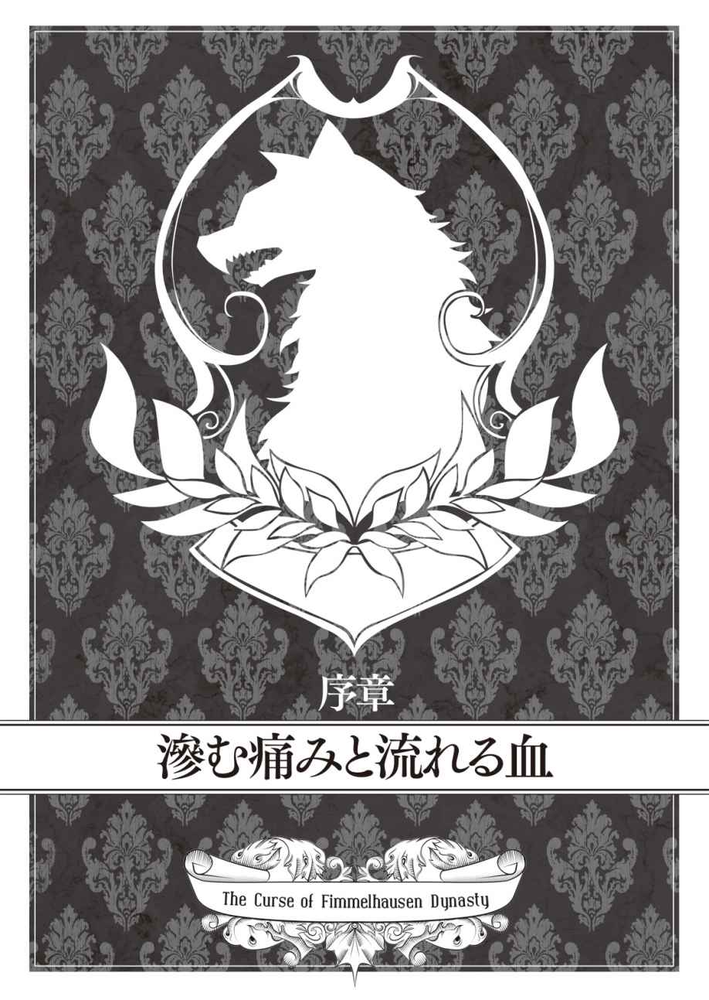
冥 玉 は王国の礎 である。十三王朝は十三の宝玉を有するが、今に伝わるは冥玉のみ。王国を統 べるものが所持するとき、冥玉は昏 く輝く。
アルメイン・エルザルス・フィンメルハウゼンは、かつてはただのアルメインだった。母が再婚したことでフィンメルハウゼンという姓がついたが、これは王国の名であった。
再婚相手はフィンメルハウゼン王国の国王ルドニア三世。つまり彼は王の子となり、連綿と続く家系図の末席に名を連ねたことになる。
連れ子の身で王室の一員となるのは天地がひっくり返るとは言わないまでも、それなりに大変な出来事ではある。だがルドニア三世はそんなことは気にしていなかった。これは寛 容 というより無関心に近い。リノヴァーナは王の七番目の后 であり、しかも連れ子の前例があるからだ。あるいは、アルメインをおまけにすぎないと思っていたか。
ともかく彼は宮殿に出入りし、部屋を得ることになった。しかしその部屋は宮殿の隅の方で、陽もろくに当らない。リノヴァーナと会う機会もほとんどなかった。
その母親が死んだ時、アルメインはまだ十歳だった。
白 磁 宮殿は、フィンメルハウゼン王国の首都リューブルグにおいて、伝統と威 厳 を知らしめるのにふさわしい建築物であった。広大で美麗な建築。部屋数も多く、メイドに言い含めておけば、いつまでも寝ていることは可能だ。だから母のリノヴァーナが発見されるまでは、いささかの時間を要した。アルメインが母の死を知ったのは、もっと時間が経っていた。
宮殿の庭、手入れの行き届いた木々の間を、彼は歩いていた。
今ごろは、宮殿内を女官やメイドたちが慌 ただしく行 き交 っているだろう。リノヴァーナは国王の数多い后の一人で、どうかすると公 の席に出たこともない。だが后は后だ。葬 儀 は大がかりなものになるだろうし、対外的な発表も必要だ。ひょっとしたら死因を巡って悶 着 があるかもしれない。
彼はそれらとは距離を置きたかった。庭の散策は恰 好 の場だ。
それに、彼はこうやって母の死を実感したかった。十歳の少年にとって大きすぎる出来事だが、体験してみるとまるで別世界の事件のようにも感じられる。心からなにかが抜け落ちたような感覚はあって、彼はそれをもてあましていた。
庭を散策しているのは、その感覚をどうにかして飼 い慣 らしたかったからだ。飼い慣らすというのも、少年にとっては難事で大人 びた発想であるが、彼はそういう発想を自然と身につけていた。たった十年ではあるが数奇な人生が、そのような処方を身につけさせていた。
「兄上」
木々の間から声がする。彼はその方角を振り返った。
逆光の中に少女がいる。小麦の穂のような金髪に白く透き通る肌。外観は年相応のあどけなさであるが、ときおり見え隠れする魅 惑 的 な表情は、成人したらどれだけの美 貌 になるのかと噂 されていた。背丈は彼よりも少しだけ高いが、いずれは男子であるアルメインが追い越すだろう。そしてその碧 玉 色の瞳 は、純粋な意思の強さを垣間見せていた。
アルメインは眼を細めながらも少女の姿を認めた。
「ナリア？」
「はい」
少女が返事をする。
「どうしてここに？」
「皆様が探しておられます」
彼は、かしこまった台詞 を紡 ぎ出 す妹にどう答えようか迷い、結局当 たり障 りのない返事をした。
「ちょっと歩かない？」
「急がれた方がよろしいかと」
「ちょっとだけ」
ナリアは静かにうなずいた。
少年と少女は並んで歩いた。庭といっても広大な敷地を誇る宮殿なのだから、森のようなものだ。大勢の庭師によって下生えは刈り取られているから歩きづらくはないが、彼らにとっては冒険に近かった。
アルメインは庭を歩くのが好きだった。宮殿の奥で書にふけるのも嫌いではないが、美麗な図鑑の元となったものに、直接触れることを楽しみとしていた。好奇心はしばしば宮殿外にも向けられ、幾 度 も抜け出しリューブルグ市街での散策に費やされた。そのたびに叱 られたが、これは楽しみへの代価として受け止めた。
「さきほどのご質問ですが」
ナリアが九歳の少女――そう、彼女はまだ九歳なのだ――にしては、極端なほどかしこまった口調で言う。
「兄上はいつもここにおられます。ですから探しにまいりました」
「よく知ってるね」
「兄上のことは、どのようなことでも承知しているつもりです」
妹の台詞というより、主君に対する騎 士 のようであった。
数年前からナリアはこのような調子だった。元々子供にしては珍 しいくらい折り目正しかったのだが、最近はますます度を超している。話しかけてくれるのはいいのだが、これじゃこっちが緊張するとアルメインは思うことがある。
そんな気持ちを知っているのかどうか、彼女は口調を変えようとはしなかった。
「お母様は残念でした」
「うん」
ナリアの言葉に、今度は簡潔に答える。
「メイドが起こしに行ったときには、もう冷たくなっていた。このところずっと具合が悪かったんだって」
「そう、ですか」
「さっき少しだけ、横たわっているお母さんを見たよ。とても痩 せていて、皺 だらけで、僕の知っているお母さんじゃなかった」
悔 しさを思わず吐き出す。
「知らなかったんだ。会ってなかったから」
最近の母の顔を、アルメインはよく思い出せない。それが胸の内にもやもやを生じさせる原因となっていた。
彼が白磁宮殿にやってきたのは四年前。リノヴァーナと共にルドニア三世に謁 見 し、母はそのまま七人目の后となった。
以来、彼は血は繋 がらないものの、ルドニア三世の子として認められた。それは白磁宮殿に住むことを意味する。そして周囲の視線がどうあれ、他の兄弟姉妹と同じように育てられた。王国自体に養子への抵抗感がなかった。
ルドニア三世は后を九人も娶 っており、近隣諸国から「好 色 王 」と陰 口 を叩 かれていた。ただ実子であろうとなかろうと同じように扱う様は、さすが冥玉に選ばれた王であると、感心されてもいた。
宮殿に住むようになってから、母と時間を共にすることがほとんどなくなった。王室の人間は庶民とは違うと分かってはいたが、つい四年前までは彼もその庶民だったのだ。母のいない生活に寂 しさはある。
その寂しさを紛 らわせてくれたのが庭での散策であり、妹ナリアとのふれあいであった。
「ナリアのお母さんは元気？」
「母の具合も、あまりよくありません」
とナリアは答える。
「ですが精神が大変お強い方です。きっと持ち直すでしょう」
「会いに行っておいた方がいいよ。ナリアに会えばほっとすると思うんだ。もちろん、治ると思うけど」
「兄上がそうおっしゃるのであれば」
ナリアもまた、ルドニア三世の数多い后の子供だ。ただし連れ子ではなく実子。彼女が一番目の后、つまり正妻から生まれたとき、アルメインはまだ粗 末 な家の藁 の中で寝息を立てていた。ナリアは武芸も座学もたっぷり受けさせられており、王室本流なのだが、連れ子である彼とよく接していた。
木 漏 れ日 が、ときおり二人の顔を照らす。
「ねえナリア」
「はい」
「どうしていつも、僕にそんな態度なの？」
「意味が分かりかねます」
「だから、なんか喋 り方がすごい大人みたいだよ。かちかちしていて。宮殿に来る騎士みたいだ」
「そうでしょうか」
「うん。兄妹なんだからさ、もっと普通でいいと思う」
「武芸の練習をしていますから」
答えになっていない。
ナリアは物心ついたときから、剣の鍛 錬 をしている。近 衛 騎士から選抜された一流の人物が教育係となって、厳しい訓練を繰り返している。弱音を吐くこともなく、日々上達していると評判であった。
はじめて出会ったときは、ほとんど口を利 かなかった。廊 下 でぶつかって、痛そうに見えたのになにも言葉を発さなかったくらいである。
その時、彼女はアルメインの前に小さな墜飾 を落としていった。彼は一日中広い宮殿内を探し歩き、ナリアの部屋を見つけたときはすでに陽が暮れていた。
恐る恐る扉 を開けて出てきた少女に墜飾 を渡すと、彼女は小さな声で「ありがとうございます」とだけ言った。目は伏せることなく、アルメインのことをじっと見つめていた。
これが最初と、二度目の出会いであった。次に意識したときはもう今の態度に近かった。
アルメインはふっと息を吐く。この態度もまた、子供らしからぬものであった。
「なんかナリアは女の子っぽくないんだよ」
「そこまでおっしゃるのなら、私は態度を改めます」
「......いや、やっぱりいいや」
改めると言っても、どうせたいして変わらないだろうと、幼い少年は悟 っていた。
しばらく無言で彼らは歩く、同じところを往復しているだけではあったが、母の死を見つめ直すには充分だった。
ふと、視界に人の姿がちらついた。
背の高い大人であった。もっとも少年の目からは長身に見えるだけかもしれない。黒っぽいつなぎ服を着ていて、その上に真っ白な前掛けをつけている。頭にはひだのついた髪留め。
宮殿で働くメイドであった。
その人物はゆっくりとこちらに歩み寄り、深々と礼をした。
「アルメイン様、ナリア様、そろそろお時間でございます」
リノヴァーナの死を悼 むため、王族たちが集まりつつある。そこに顔を出せという意味だ。
そういうとき、彼は決まってある匂いを思い出す。王族たちと、彼らがあつまる宮殿から発せられる匂いだ。歴史と伝統と、その裏側にある幾多の人間模様が絡 み合 い、なんとも言えない臭 気 を発する。
彼はその匂いが、好きではなかった。
「カリーン。もう少しいてもいいだろ」
「お顔を出された方がよろしいかと」
「僕が庭にいるのが好きなことくらい、知ってると思うけど」
「存じております。ですが、リノヴァーナ様の御子息が姿を見せないのは、やはり不都合がございましょう」
「そうかなあ」
「はい。世間とはそのようなものでございます」
そしてメイドは言い添える。
「ですがまだしばし、時間の猶 予 はございます」
アルメインは笑った。
「君のそういうところが、好きだよ」
彼の微笑 みに、カリーンは頭を下げることで応 えた。
このメイドは、アルメインのみにつけられている。いわば彼専用のメイドであった。通常使用人というのは全体に対して奉 仕 するものであるが、カリーンは彼だけの世話をしていた。
さすがにそのことをアルメインは疑問に思っている。ただ、どうしてカリーンが自分につけられたかは知っていた。
ルドニア三世の子になってから数日後、彼は宰 相 のテルヒムに呼び出された。
テルヒムはいかにも不健康そうな、落ちくぼんだ目に曲がった口をしている。手足はまるで枯 れ枝のようだった。ただ野心に満ちあふれているだけあって、頭脳はいまだ明 晰 である。
「なんでも欲しいものを言いなさい」
宰相の執務室に連れてこられたアルメインは、入るなりこう言われた。
「王の子となったものには、望むものが一つだけ与えられる。王朝に古くから伝わる伝統なのだ」
アルメインは答えない。突然そのようなことを言われても、返事に窮 するのが自然だ。まして当時はわずか六歳なのだ。
テルヒムはそういう反応を予想していたらしく、急 かすような真 似 はしなかった。
「すぐでなくてもよい。十歳までに決めることになっている。逆に言えば、十歳までに己の意思で決められないものは、王の子として不適格になる」
「......よく、分かんない」
「歴代の王は、こうやって子に早くからの自覚と成長をうながしていたのだ。もっとも、今のアルメイン殿が理解するには無理があるとは思う」
「僕は、なにか言わなきゃ駄 目 なの」
「沈 黙 は金でもあり土でもある。歴代の太 子 の中には、四歳にして大陸全土を所 望 したものもいると聞く。もちろん極端な例だ。あるいは......そうだな、妹 御 のナリア殿は、王室に伝わる長剣を求められた。陛 下 は苦笑しながらも聞き入れられた」
このころからナリアは武芸への関心を示していた。もっとも彼は、この時点では妹との対面を果たしていない。おっかなそうな妹がいることを意識したのみである。
「なんでもよいと、陛下はおっしゃっている。国土全てはさすがに無理だがな。大きすぎず小さすぎずを求めるのも、また王の子としての資格の一つなのだ」
テルヒムはしばしば、六歳の子が理解するには難しい単語を使う。無論これはわざとであって、アルメインはなんとか意味を感じ取らなければならなかった。
しばらくの沈黙の後、彼は口を開いた。
「......お母さんが」
「うん？」
「お母さん」
「ああ、リノヴァーナ様のことか。ふむ、六歳の子が求めるには確かに適切であろう。まだまだ母が恋しい年頃だからな」
アルメインは沈黙する。周囲が剣だの国土だのを欲しがっているときに、母親を恋しがるなんて恥 ずかしいと、この年でも分かっていた。
テルヒムは首を振る。
「だがそれは無理だ。リノヴァーナ様は陛下の后となられた。人の母親よりも后としての生き方をせねばならん。あの方もそのことは自覚しておられる」
老宰相は少しの間考えた。
「だが要求は要求だ。陛下にお伝えしよう」
その数日後、アルメインにつけられたのがメイドのカリーンであった。
母親代わりということらしいが、カリーンは母ではなくあくまで専用のメイドとして振る舞った。彼も他人に甘えるわけにもいかず、ごく普通に生活を続けた。そして太子を廃されることはなく、時は過ぎ去った。
つまり眼前のメイドは、彼の元に来てからもう四年になるのだ。そのころから姿形はほとんど変わっておらず、翡 翠 のような髪の色と人形のような美貌が目立つのみであった。
アルメインは融 通 を利かせてくれたメイドに「ありがとう」と礼を伝えた。
「過分なお言葉です」
「君はいつも優しいね」
「さしつかえなければ、わたくしもここにおります。いざとなれば、わたくしがアルメイン様をお引き留めしたことになさってください」
「それはいいよ」
「怒りを引き受けるのも、わたくしのような人間の役目です」
柔らかくメイドは告げていた。内容よりもその口調に、彼は安心してうなずいた。
ナリアはそんな彼を見て、少々むっとした表情をしていた。
「カリーン。兄上には私がいる。メイドまでは不要だ」
「役目ですので」
「ならば私の武器はどこにあるのだ、陛下から拝領した豪剣は」
「お部屋にあるはずです」
「あれを抱いてないと不安だ」
「腰に下げるには、いささか長すぎるかと」
九歳の子には早すぎる、という意味であった。
「別にいい」
ナリアは反発するように言った。
「あれがなければ、兄上を守れない」
「守るって、僕のこと？」
びっくりしてアルメインは聞き直す。
「なんで？」
「兄上をお守りするのは、当然のことだからです」
妹は勢い込んだように喋っていた。
「兄上はいつだってお一人でした。外から宮殿に来られて、お母様と離され、いつもたった一人で庭を歩いておられた。そんな姿を、父上も兄上姉上方も気になされない。ですからせめて、私は兄上の側 にいようと決めたのです。お一人でおられるのは、寂しいでしょうから」
わずかに顔面を紅 潮 させて語り続けるナリアの言葉を、彼はじっと聞いていた。
確かにこの妹は、なにかにつけて彼の側にいようとした。意識したことはなかったが、姿はいつも近くにあった。その顔には九歳にして並々ならぬ決意を秘めている。
アルメインは幾度か瞬 きをした。
「......でも、妹に守ってもらうのはなんか違うんじゃないかなあ」
「違いません」
「だって僕は十歳でナリアは九歳で」
「剣を習っているのも、そのためです」
そこまで言われてしまっては、言い返すこともできない。
考えてみれば、第一王妃の娘なのに、彼女はよく自分に接してくれている。数多い兄弟姉妹で他にこのようなことをしてくれるのは、そう多くない。そもそもアルメインなどという南東地域 の名は、宮殿ではそういないのだ。
珍しさは疎 遠 と繋がることが多い。彼がナリア以外で親しい親族と言えるのは、姉のヒルトルート、妹のメーニカくらいであった。
「兄上に仕えることは私の名誉です」
ナリアは十歳に満たない少女とは思えない言葉を発する。
「そう決めました」
「こういうの、なんていうんだっけ。えーっと、頑 固 」
「騎士の誓 いをさせてください」
彼女は跪 いた。頭 を垂 れ、手を胸に当てている。
「え、いや」
狼 狽 するアルメイン。妹はすでに誓いの言葉を口にしていた。
「......この身を兄アルメインに捧 げ、生 涯 変わらぬ忠義を尽くすことを、ここに誓います。我が主 である兄に、永遠の栄光があらんことを」
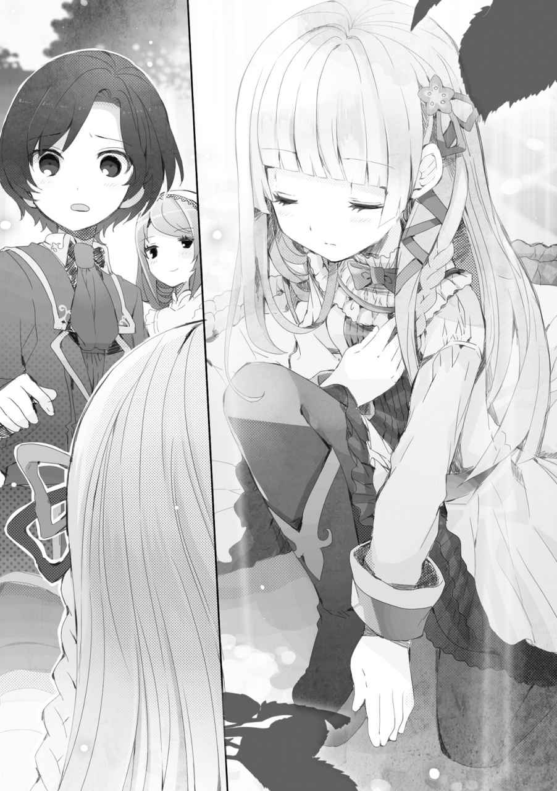
あらかじめ考えていたのだろう。言葉によどみがない。アルメインはしばらくおろおろしたあと、助けを求めるようにカリーンを見た。
「えーと......これはもう手遅れなのかな」
「お受けになるもならないも、アルメイン様ご自身のお心一つでございます」
メイドは悠 然 と微笑んでいる。
仕方なく、彼はうなずいた。
「分かった。認めるよナリア」
「ありがとうございます。これで私は名実共に兄上の騎士です」
「いや、だけど、さっきも言ったけど、僕は十歳だしナリアは九歳だよ？」
「九歳でも剣は扱えます」
「でも......」
「ご安心を、アルメイン様」
メイドのカリーンが、静かに口を挟 んだ。
「わたくしがお二人をお守りいたします」
彼はほっとした。
「カリーンなら」
「いらない」
ナリアは口を尖 らせていた。
「兄上には私がいればいいのだ。それに私にも必要ない。自分の身は自分で守る」
「そうはいきません。お守りするのも、陛下から仰 せつかった大切な使命なのです」
「メイドがすることではない。騎士の仕事を取るな」
「ごもっともです。ですが、やはりお側にいることが役目でもありますから」
やんわりとではあるが、わがままを制する口調だった。
ナリアの顔は少しも納得していない。守ると言った自分の言葉に捕らわれている風でもある。
アルメインは、十歳の頭脳で「喧 嘩 させては駄目だ」と考えていた。
「ありがとう、二人とも」
そう伝える。
「母が亡くなった日に、えーと、こういうことを言ってもらえるなんてとても幸せだと思う。だから、その、喧嘩しないでくれるともっと幸せなんだけど」
「争ってはおりません」
ナリアが言う。カリーンは少しだけ微笑む。
「そうですね、争ってはおりません」
「ただ兄上をお守りしたいだけです。決めたのですから」
「わたくしも、メイドの本分から離れるようなことはいたしません」
「そ、そうなんだ。よかった......」
たどたどしく彼は言った。どうして調子を合わせたのかが分からない。女の言葉に含まれる機微を察するには、まだまだ経験の足りない年である。
アルメインは手で廂 を作りながら、上空を見上げた。太陽が天頂にさしかかろうとしている。
「そろそろ戻ろうかな......」
「そうですね」
カリーンはわずかに目をつむる。すぐに目を開けた。
「......ああ、ヒルトルート様が探されております」
ヒルトルートとはルドニア三世の長女である。生母はナリアと同じく第一王妃。美の化 身 と呼ばれた后から生まれただけあって、近隣諸国からの婚 姻 申し込みが絶えない。
アルメインも少年の心で、あの姉はとんでもない美しさだと思っている。話をするだけでも光栄に感じる人間は多いだろう。
だがそれよりも、彼にはメイドの仕草が気になっていた。
「ねえカリーン、なんで姉上のことが分かったの？」
「他のメイドが教えてくれました」
「聞こえたの？」
少なくとも、ここには三人以外誰もいない。
カリーンは少年の疑問には返事をせず、ただ黙って笑っていた。
「行かれた方が」
アルメインは一瞬顔をしかめたが、すぐに思い直した。
「うん。会いに行く」
「私も」
ナリアが申し出るが、彼は遮 った。
「姉上は、僕にだけ会いたいんだよね」
カリーンは首 肯 する。
「じゃあ一人で行くよ」
ナリアはまだ不満げだ。
「それでは守れません」
「平気だって。カリーンと一緒にいて」
アルメインはその言葉を残し、宮殿に向かっていった。
白磁宮殿は十一代前の国王であるシュレイン一世の治世に建設されたものだ。シュレイン一世は病によって世を去ったが、宮殿は残った。その名の元になった石造りの外観は、月光の下でもっとも美しく輝く。幼子の肌 のように艶 やかで染 み一つない石材はもはや王国内でしか産出せず、ローディア大陸内の諸国に羨 望 をもたらし、同じく産出される宝石と共に重要な輸出品となっていた。
庭から屋内に入る。アルメインは服の襟 元 を締めた。天 井 が高いので、外気温とさほど変わらない。
幾度かきょろきょろして、足早に廊下を急ぐ。まだまだ覚えきれないほど宮殿内部は広かったが、ヒルトルートの部屋は知っていた。
それにしても、あの姉がどんな用件なのだろう。優しい人だとは知っている。連れ子の自分には特に目をかけてくれた。
だが亡くなったリノヴァーナはヒルトルートのことをあまりよく言わなかった。母と接する機会自体が少なかったが、どうもルドニア三世を通して、アルメインとヒルトルートの接触を禁じようとしていたらしい。
理由は分からない。あんな綺 麗 な姉と会えないようにするなんて、母はなんて残 酷 なのだろうと思ったりもした。
考えながら歩いていると、不意に目の前をなにかが通過した。
斜め上から下に。足下でぶつかって砕 けたのは陶 器 で、どうやら皿のようだった。
少しの間、背筋が凍 る。頭に当たっていたらただではすまない結果になっただろう。そして、明らかに自分に向けて投げられていた。
皿が飛んできた方向に顔を向ける。二階の、張り出した廊下からでっぷりとした少年が彼を見下ろしていた。
「なに勝手に歩いているんだ。ここは父と僕の家だぞ」
少年の言葉が降ってくる。
アルメインは無視して歩きだそうとした。そこにまた、声が投げかけられる。
「私 生 児 」
彼はなにも言い返さない。その態度が、頭上の少年を増長させた。
「弱虫め。お前は塵 だ。汚 らわしいんだ。クズなんだ」
「............」
「消えろよ、すぐに」
彼は足を止めると、悟 られないように手を握りしめた。
誰だか知っている。皿を投げたのはガルクト。五つ上の十五歳で、第二王妃の子である。
多くの后を持っていたルドニア三世は、当然だが子も多い。長兄はハイニルであり、もっとも玉座に近い存在なのだが、厄 介 なことに病弱だった。十三王朝の正統後継を任ずる王国にとって、いかにも都合が悪かった。数代前から国力を減じて小国に転落し、反比例するように周辺諸国が力をつけている。舟の速力を上げるには力強く艪 をかく必要があるのだ。
次兄のガルクトは健康に問題はなかった。ただ堪 え性 のなさと思 慮 の浅さが周囲の人間の眉 を顰 めさせた。そもそも十五歳なのに他者に皿を投げる行為自体、幼 稚 な振る舞いだった。あまり表 沙 汰 になることはないが、宮殿内に入ってくる小動物を斬 殺 しているともいわれている。
堪え性のなさは旺 盛 すぎる食欲にも表れ、身体 は太り気味でそのことが劣 等 感 にもなっているらしく、日に数回は周囲に当たり散らすことを常としていた。
ガルクトは高い声で叫 んだ。声変わりしていないのも、彼の劣等感の一つだ。
「こっちに来い！」
彼は別の皿を手にしていた。
「俺 の的になるんだ。私生児の役目だ」
アルメインは近寄らなかった。やすやすと的になる気はないからだ。
「さっさと来い！ 言うことを聞け！ どうした、早くしろ！」
自分の高い声に煽 られるようにして、ますます態度が凶暴化していく。
「お前なんか俺の言うことを聞いてりゃいいんだ！」
皿が投げられる。アルメインは思わず目をつむった。
足下で破 裂 音 がして、陶器が粉々になった。
「畜 生 、外 れた！ じっとしていろ！」
ガルクトはまた皿を手にしている。先ほどのものとは種類が違うから、あちこちの部屋からくすねてきたのだろう。
「次は当ててやるからな！」
「......どうして」
「なんだ!? 」
「どうしてこんなことをするんだ。君はいつもそうじゃないか。どうして僕に」
「当たり前だろう！ お前は私生児なんだ、ここにいなくていいんだ！」
目が吊 り上 がり、狂気の色が増している。口の端 からは泡も見えた。
「俺は王になるんだ！ 王には厳しさが必要だ！ 今から庶民を厳しく扱う練習をしてるんだ。私生児のお前がいいんだよ！ いなくなったって誰 も気にしないからな！」
アルメインは騒ぎ立てるガルクトを見つめていた。幼い頭脳にも、物言いが理不尽なのが理解できた。
ガルクトは権力への妄 執 が激しかった。帝王学が誤った形で教えられたのだろう。あるいは元々理解力が低かったのかもしれない。
彼は自らの立場を理解している。ただしそれは、ごく一面的な意味でだ。王はなんでも可能ということが、わがままを押し通せることに繋がり、周囲の黙認が増長させた。幼稚な思考は暴力の発露のみに集中した。
それでも親兄弟に力をぶつけるほど愚 かではない。だから一番狙 いやすく、他人であるアルメインを標的にするのだ。小動物を虐 待 するのと同じ発想なのであった。
「分かったかクズ野郎！ 大人しく的になるんだ！」
ガルクトの手にした皿は大きい。膂 力 だけはあるから投げられるだろう。そして命中すれば、アルメインは重傷を負うか、死ぬ。
「お前なんかいなくなっていいんだ。お前みたいな、淫 売 の子は！ 薄汚い淫売の子......」
少年は最後まで口にすることができなかった。
彼の頰 を陶器の破片が通過していた。わずかだが赤い筋が生じ、じんわりと血が滲 む。
ガルクトは頰に手を当て、血を見てけたたましい声を上げた。
「うわあああああ！ 畜生！ よくもやったな！」
アルメインもまた、自らの手を見つめていた。ガルクトの言葉を聞いた途端、頭に血が上り、床の破片を拾って投げていたのである。
自分の行動が信じられなかった。やり返すつもりはなく、ただ立ち去るつもりだったのだから。
たいした傷でもないのに、ガルクトは身もだえしている。
「畜生、畜生、畜生！ 死んだ女の子供のくせに！ 許さないぞ！ 父に言って追放してやるからな！ 二度と宮殿に入れないようにしてやる！」
（......だったら、こっちもやってやる）
投げ返したことはもはや消せない。だったらやり続けなければ駄目だ。はじまった以上、先にへこたれた方が風 下 に立たされるのである。
ガルクトは皿を手にしたまま喚 いている。アルメインはまた破片を拾った。
その時。
「もうやめなさい」
頭上から別の声がした。
張り出した廊下の端に、一人の女性がいた。小川の水 面 に譬 えられる髪に、清 楚 な顔立ち。そしてなにより、隠しきれない色香。彼女の瞳は二人の少年に注がれている。
ガルクトの表情が輝いた。味方を見つけたときの喜び。
「ヒルトルート姉さん！」
駆け寄ろうとする小太りな少年を、ヒルトルートは手で制した。
自分から近寄る。ただし、ある一定以上には接近しない。
「その皿を下ろして」
顔がアルメインにも向けられた。
「アルメインも」
言われて、彼は破片を床に落とした。
ガルクトも従ったが、その代わりとばかり喋り出した。
「姉さん、あの私生児が酷 いんだ。俺に破片を投げてきた！ ほら、こんな怪 我 を！」
頰を向けようとする。
「私は見てたわ」
ヒルトルートは同情せず、むしろ軽 蔑 したような視線を浴びせた。
「ガルクトがアルメインに何度も皿を投げたのをね。アルメインがやり返したのは一度だけ。それでもあなたは自分が被害者だと言う気？ 陛下に言いに行くなら、私もついていって真実を話すわよ」
「で、でも」
「このままなにもなかったことにするなら、皿を持ち出したことは黙っておくわ」
「............」
言い返す手だてを失ったガルクトは、一度だけ憎 悪 に満ちた視線をアルメインに浴びせると、そのまま走り去っていった。
アルメインはそれを下からずっと見つめていた。ヒルトルートが下りてくるのが分かったので、そのままじっとしていた。
彼の姉はうっすらと微笑みながら、彼の元へやってきた。
「怪我はない？」
「はい、姉上」
ヒルトルートはくすりと笑う。
「いつも言ってるでしょう、そんな仰 々 しい呼び方はいりません。名前で呼んで欲しいって」
「僕はここにきてから、たとえ姉弟でも、敬意を失してはならないと習いました」
「私にはいいのよ。ヒルトルートと呼びなさい」
「ヒルトルート......姉様」
「まだ固いわね」
「はい......」
なんだか、自分に対するナリアみたいな気分だと、彼は思った。
フィンメルハウゼンの輝ける宝石といえば、産出される紅 玉 ではなく、ヒルトルートをさす。ルドニア三世の上から二番目の子で年は二十。年齢相応にしなやかな身体と美貌は、どうしたって人目を引く。
その美しさは近隣諸国にまでとどろき渡っており、后にとの申し込みが絶えない。本人はそれに応じることなく、兄と共に政務に携 わっていた。
フィンメルハウゼンは十三王朝の時代から女王の即位を認めている。だから彼女には王位継承権があり、しかも兄ハイニルは病弱なのだ。他国の王室に、彼女の頭を飾る冠 があろうと、望むかどうかは別の問題である。
「あの、助けてくれて、ありがとう......」
「いいのよ。ガルクトには私も手を焼いているの。今度きつく言ってやらなきゃ」
「そこまでしなくてもいいのに」
「どうして？」
その質問に、「カリーンとナリアがいるから」と答えようとして思いとどまる。いくらなんでもそれは変だ。
「だって、お母さんはもういないし......」
「リノヴァーナさんが亡くなったから、もう関係ないってことなの？ そんなことはありません。さっきも言ったけど、私たちは姉弟なんだから」
小鳥の歌とも呼ばれる声にあてられ、アルメインは目をそらした。
ヒルトルートに目を奪われない男はいないとの評は、まったく納得のいくものなのだった。ただ彼は見つめ続けることができない。姉に「呑 み込 まれる」気がするのだ。
彼女は王国の本道を歩いている。いずれは王の娘として兄たちの補佐を続けるか、ひょっとしたら他国に嫁 ぐか、あるいは冥玉を手に玉座の主となるだろう。姉を見つめ続けることは善 きにつけ悪 しきにつけ王国を知ることであり、宮殿の匂いと同じものなのだろうと察していた。
「リノヴァーナさん、私も好きだったわよ」
ヒルトルートはゆっくりと語りかけていた。
「綺麗だったから」
「嫌ってる人もいました」
「そうね。自分より優 れたものを人は嫌う。女、特に王妃の場合、美しいものにそれが向けられるの。私のお母様もリノヴァーナさんが嫌いだったわ」
そして当然のように付け加える。
「でも私は違う」
「ありがとうございます」
「もう。そういう言葉遣 いもいらないの」
アルメインは「はい」と呟 くことによって、なんとかその言葉に従おうとした。
ヒルトルートは続ける。
「でも、リノヴァーナさんは私のことが好きではなかったみたい。話をすることもなかった。アルメインにも、あまり会わせてもらえなかったわ」
悲しそうに目を伏せていた。
姉も知っているんだとアルメインは感じた。母リノヴァーナがどういうわけかヒルトルートを遠ざけようとし、ルドニア三世にもそう伝えていたことも。聡 明 な姉のことだ。すぐに事情を察しただろう。そして悲しんだだろう。
彼にはどうして母がそのような態度を取ったのか、理解できなかった。二人の妹、ナリアやメーニカと会うことに支障はなかった。だがヒルトルートだけには障害があったのだ。一度だけ訊 いたことがあるが、母は黙って首を振るだけであり、もしかしてと思って尋 ねたカリーンも「存じません」と言うのみだった。
美しいからだろうか。これもヒルトルートの言う「自分より優れたものを人は嫌う」ことなのだろうか。
「でも」
と彼は言った。
「もう、お母さんはいません。だから、姉さんに会うのも平気ですね」
なんとかしてヒルトルートを悲しみから解放しようとして発した言葉。子供なりの誠意を込めた。
「亡くなったお母さんのことを悪く言っちゃ駄目よ」
ヒルトルートは軽くたしなめてから、
「でも気持ちはありがとう。これからは何 時 でも、アルメインに会うことができるわ」
好意が向けられる。同時に、彼は顔をそらした。また「呑み込まれる」感があった。
こんなことではいけないと考える。美しい姉に嫌われたくはない。さっきも救ってくれたのだから。
「そうだ。私の部屋に行かない？」
ヒルトルートが名案を思いついたというように提案した。
「来たことないでしょう。お菓子をごちそうするわ」
「でも、ここを片付けないと」
「あとで誰かにやらせればいいわ。さあ」
彼女は柔らかな手を、ほんの少しの強引さと共に伸ばし、アルメインを自室へと導いていった。
部屋に行くまでの間、ヒルトルートは歌を口ずさんでいた。手に雛 鳥 を包み込む歌だ。アルメインは幾度か聞いたことがあるので、姉は機嫌がいいのだと思った。
ヒルトルートの部屋は広かった。あちこちがレースの引き幕で飾られ、壁には様々な贈り物が飾られている。あらゆる国の王族から求婚されているためだが、アルメインにそのことまでは分からない。
アルメインは寝台の端に腰かけさせられた。ヒルトルートはその隣に座る。
二人きりだった。こんな状況に置かれたことは、これまでなかった。
どきどきしていた。その反面、若 干 の居 心地 の悪さも感じる。
隣の女性は確かに姉なのだが、先ほどまでの頼もしさや美しさとは違い、なんだか危うい気がしたのだ。薔 薇 の花に触れていたら、棘 が刺さったときのような気持ち。
なんとかその感覚を振り払おうと、彼は少年なりに努力しなければならなかった。ヒルトルートがそれを理解しているかどうかは分からない。
彼女が顔を覗 き込 む。
「ねえアルメイン。あなたの瞳は鳶 色 よね。髪は黒い。リノヴァーナさんから譲 られたものなの？」
「はい。そうだと思います」
彼は答えた。
「お父さんはどんな方だったの？」
「知りません。職人だったとか、兵士だったとか聞いています」
「きっと南方の人ね」
「はい」
フィンメルハウゼンには様々な国の出身者がやってくる。戦争であったり、あるいは貧 困 から逃れるための人たちの中に、アルメインの父親もいたのであろう。
ヒルトルートが彼の髪をかき上げ、額 に手を這 わせる。
「綺麗な顔ね。あなたみたいな子は、兄弟の中でも珍しいわ」
「そうでしょうか」
「ええ。代々の王は世界のあちこちから人を集めた。北方に西方に南方。東方の彼方 にある武 威 の国からも。でも国ではなく王家に、南方の血は滅 多 に入ってこないの」
彼の理解を待たずに言葉は続けられた。
「だけど私はこういう顔立ちが好き」
「そう......ですか」
「ええ」
すっと額に唇 が近づく。生ぬるい感触があった。
「ふふ」
額に口づけしたヒルトルートがくすっと笑う。
彼女はアルメインの左手を取った。
「この手も綺麗なのね。まだ節 くれ立っていないし、荒れてもいない。あと数年で荒々しい男の手になってしまうのね。もったいないわ」
指を撫 でている。くすぐったい感触が、少年のつま先まで襲 っていた。
ヒルトルートは少年の小指を自らの口に近づけていた。
がりっ。
「痛っ」
アルメインは急いで手を引っ込める。小指から血が流れていた。
「あら、痛かった？」
「はい......」
「いいのよそれで。これは印なの。私がアルメインにつけた印」
ヒルトルートは笑っている。それは廊下で見せた優しげなものではなく、ひどく淫 靡 なものであった。
この姉はときおり色香を見せる。爽 やかさというよりは奥深さをともなった、沼地のようなものだ。広く、そして深い。
滅多に表には表さない。ただ今までも、アルメインと二人きりでいるときに、ちらちら見せたことがあったのだ。
幼い彼にはそれがなにかは理解できなかった。どういう意図で発せられているのか、男女の仲でどういう意味を持っているのか。ただ唯 一 分かるのは、今のヒルトルートに隠す気がないということだった。
「ヒルトルート姉さん......これ、陛下に怒られないかな......」
「平気。いずれ冥玉は私のものになるわ。そうすれば私が陛下と呼ばれるようになる。だから平気」
彼にはヒルトルートの言葉の意味が摑 めない。
「横になりなさい」
台詞が命令口調を帯びてくる。
「早く」
「お菓子は......」
「あとにしなさい」
ぴしゃりと撥 ね除 けられた。残念さよりも口調から感じる恐怖によって、彼は寝台に横たわった。
ヒルトルートが見下ろす。口元に淫 猥 さを浮かべて。瞳にはガルクトのそれと似た色があった。
彼女がにじり寄ってくる。
アルメインは顔を背 けることもできず、姉の行動を眺めていた。そういえば以前にも一度だけ、このようなことがあった。その時は庭の一角であり、長 椅 子 に座らされた。なにかされる前に、リノヴァーナの命を受けたメイドが飛んできて引きはがされたのだ。ヒルトルートとの接触を制限されたのは、それ以降のことだ。
「可 愛 いわ。男の子は、今が一番美しいのよ」
指が流れるように動く。アルメインの服の前がはだけられ、無 垢 な肌があらわになる。
彼女は真 っ赤 な舌を伸ばし、臍 の周囲をぺろりと舐 めた。
「あら、鳥肌が立ってるわ。ふふ、怖いのね。大丈夫よ。そのままでいればいいの」
「姉さ......」
「動かないの」
ヒルトルートが顔を上げる。その顔は夜 叉 のよう。
「動いたら痛い目に遭 わすわ」
アルメインは口をつぐむ。身体が硬 直 し、もはやなにもできない。
舌だけではなく、手が伸びてきた。上から下へ。下から上へ。腋 へ、太 腿 へと。
生ぬるい虫が這うような感覚をなんとか忘れようと、少年は天 蓋 を見つめる。まだ十歳になったばかり。貧しい家ならば家族の手助けに駆 り出 されている頃であり、提 督 の家に生まれたのなら、あと数年で士官候補生として乗艦を命ぜられる。百人の家には百通りの人生。だが自分のような目に遭っているものは、他にいるのだろうか？
ちろちろとヒルトルートの舌が動く。
どうしてこういうことをするのか。彼には分からない。ただ母の意図がようやく理解できた。こんなことをさせないように、アルメインとヒルトルートの接触を制限したのだ。だがその母も今は亡い。
ヒルトルートはそれを待っていたのだ。
「可愛いわ。本当に可愛い。震 えているのも雛鳥みたいね」
ひんやりとした。舐められた跡 が空気に触れたから。自分で拭 うことはできず、恐らく許されない。
歌声が聞こえてくる。
「雛鳥は、私の手の中」
澄 んだ美しい声。ヒルトルートの歌声もまた有名であり、かつてバルコニーで披 露 したときは、全ての人間が手を止めて聴 き惚 れていたほどだ。
その美しさが少年にのしかかる。
「可愛い雛よ。あなたは私のもの」
歌の合間に舐め回している。もはや止めるものはないのだから、遠慮もない。
「ちょっと力を入れるだけで潰 れてしまう。雛鳥は私のもの」
両手が腿を摑む。そしてその内側へと移動する。
「雛鳥は私のもの。ちょっと力を入れるだけで」
気持ちの悪さが下半身を支配しようとしている。
「潰れて」
びくんと身体が跳ねる。
「しまう」
その刹 那 、アルメインの目が見開かれた。僕はこのまま潰れてしまうのか。嫌だ、潰れるなんてまっぴらだ。僕は嫌なんだ。
「わあっ!! 」
飛び上がる。叫びにより全身を支配していた恐怖を追いやる。
寝台に立ち上がる。ヒルトルートは四つんばいのまま、信じられないような目つきをしていた。
「アルメイン......」
「うわあああーっ!! 」
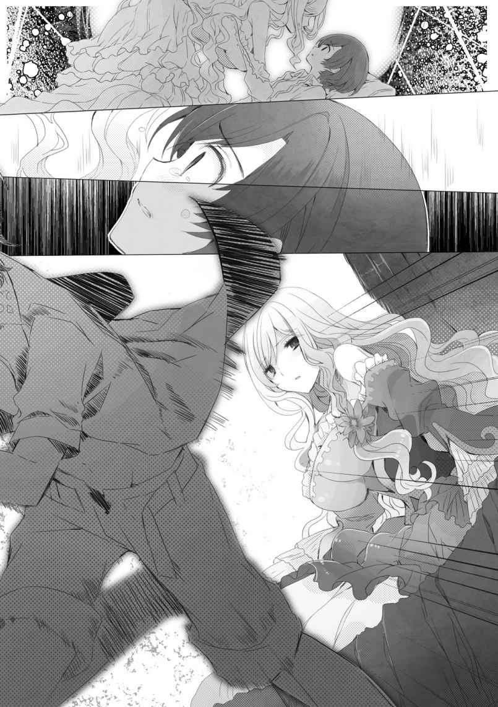
絶 叫 だけがこぼれ出る。そのまま部屋を飛び出した。
後ろも見ずに廊下を駆ける。裸 も同然だった。だがそんなことはどうでもいい。こんなところは御 免 だ。母はもう死んだ。自分で逃げるしかないんだ。
ここはおかしい。絶対におかしい。ガルクトも、ヒルトルートも。彼らを許しているルドニア三世も。
幾度か頭の中にナリアやカリーンの顔が浮かんだ。そのたびに振り払う。このことを他人に言ったところで、誰が信じてくれる？ ヒルトルートは誉 れ高きフィンメルハウゼン王国の王女であり、自分は末席に連なる私生児だ。泡よりもはかなく、訴えは消えてしまうだろう。だけどこのままここにいたら、僕は壊れちまう。
その晩、アルメインは白磁宮殿から抜け出した。
そして八年の時が流れる。
この続きは製品版でお読みください。
著者
築地俊彦
Toshihiko Tsukiji
元ＴＲＰＧ、メイルゲーム製作会社勤務。現専業作家。実は第一回のＪＧＣスタッフ。著作は『まぶらほ』（富士見ファンタジア文庫）、『けんぷファー』（ＭＦ文庫Ｊ）、『セクシャル・ハンター・ライオット』（講談社ラノベ文庫）、『戦嬢の交響曲』、『ふぁみぷれっくす』、『艦隊これくしょん -艦これ-』（ファミ通文庫）など。
http://twitter.com/to_tsukiji
イラスト
フルーツパンチ
Fruitpunch
１月14 日生まれ。いろいろもぞもぞ描いてます。もぞもぞ。代表作は、『花守の竜の叙情詩』（富士見ファンタジア文庫）、『彼女は戦争妖精』シリーズ（ファミ通文庫）など。
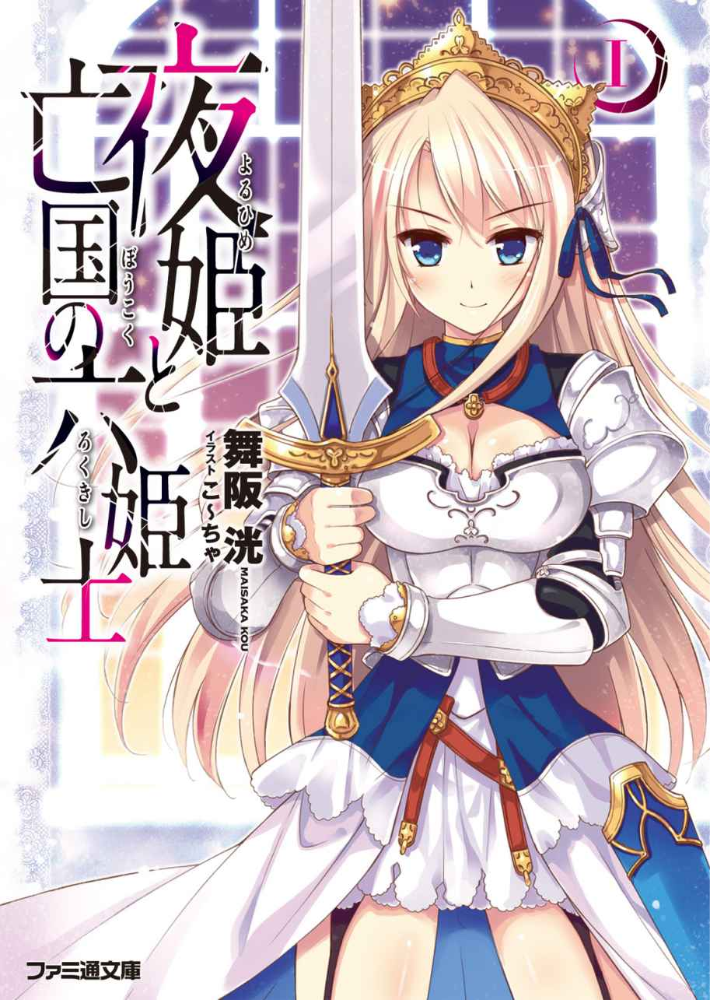
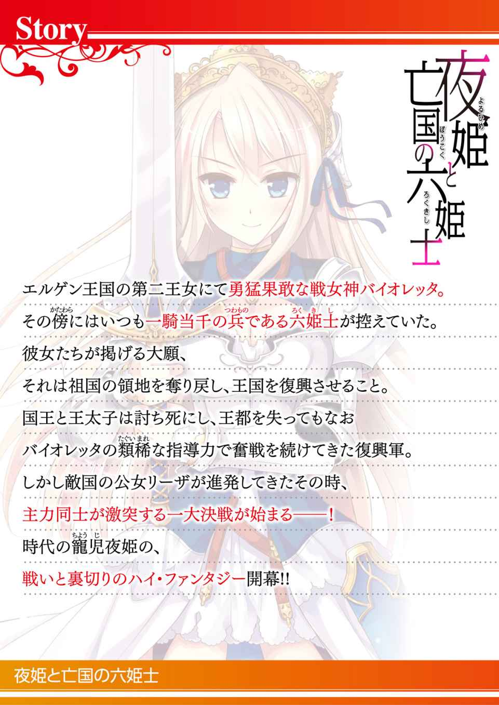
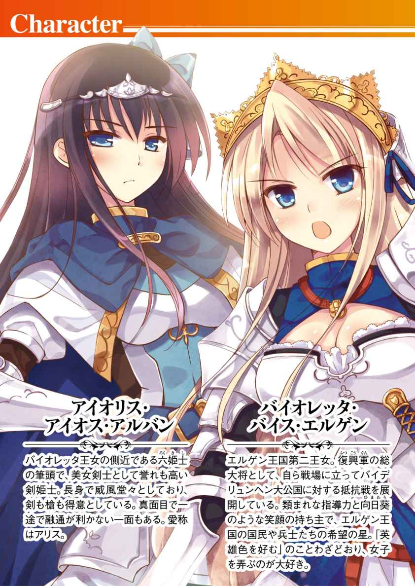
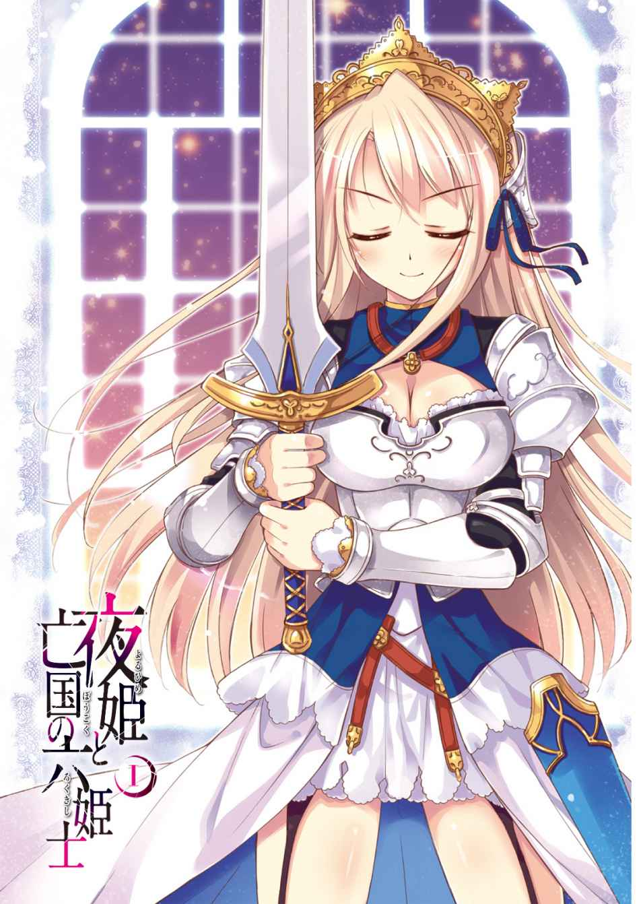
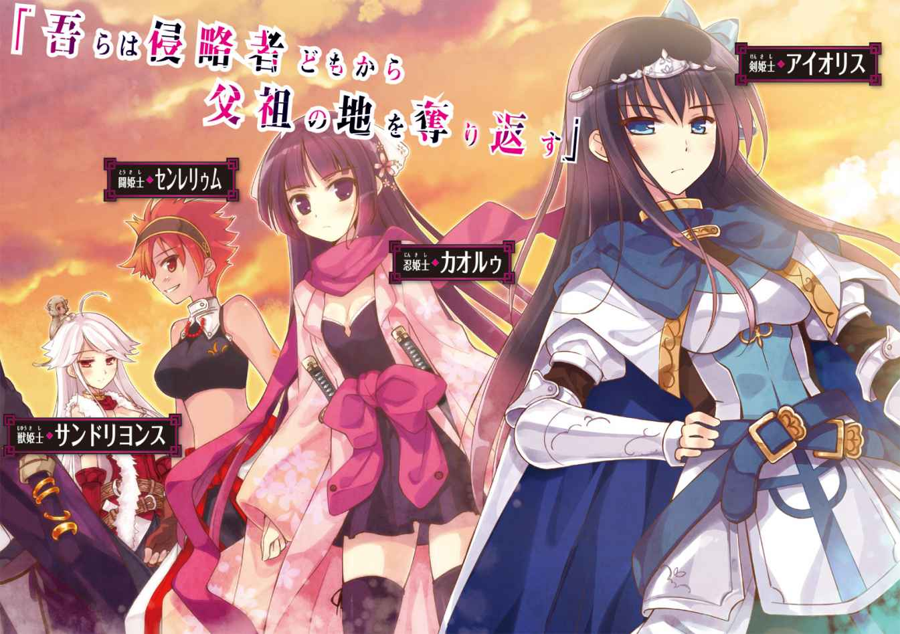
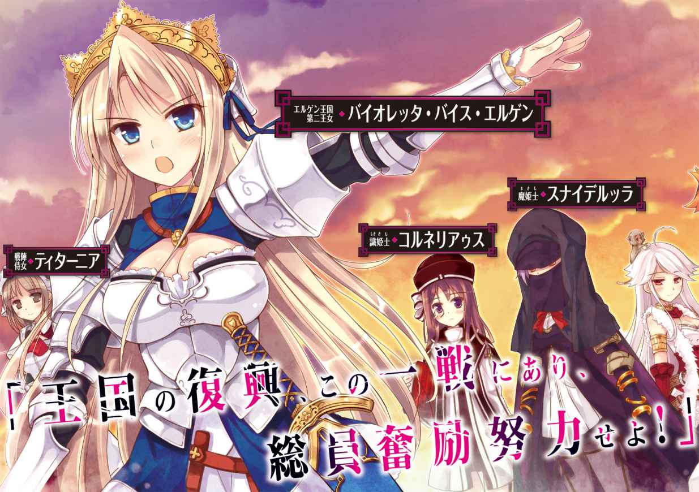
夜姫と亡国の六 姫士 Ⅰ
著者 舞阪 洸
イラスト こ～ちゃ
今日も天空の箱 庭 で、運命の女神フェイタルは賽 を振る。
緑に輝く長い髪を二つに束ねた少女の出で立ちで、女神は賽を振り続ける。
でも遊んでいるわけじゃない。
これは彼女の仕事だから。
幾 百 、幾千、幾万の、軽くて小さな賽を振り、人の人生を左右する。
それが女神の仕事だから。
彼女が振る賽は六 面 体 じゃない。
六面では選択肢が少なすぎ。
彼女が振る賽は五百面、六百面、ときには千面もある。
出た目にこのくらいの数がないと、誰 の人生も似たようなモノ。
それじゃ人の世は面白くないでしょう？
女神は毎日、賽を振る。
朝から晩まで賽を振る。
幾百、幾千、幾万個。
女神は出た目に興味がない。
どんな目が出ても。
それで誰かの人生が変わっても。
あるいは少しも変わらなくても。
女神には関係のないこと。
けれど出た目には強い強制力があって。
それこそが運命と呼ばれる力。
誰も女神の力から逃れられはしない。
強大な権力を持つ王も。
一 騎 当 千 の兵 も。
神に仕える聖 職 者 も。
莫 大 な富を持つ大商人も。
なんの力もない市 井 の民も。
市井の民からでさえ蔑 まれる乞 食 も。
逃れることなどできはしない。
運命の女神の力は等しく皆に働いて。
地位や財力、年齢や性別も無関係。
英雄だろうと太刀打ちできない無 類 の力で。
今日も女神は賽を振る。
朝から晩まで賽を振る。
幾百、幾千、幾万個。
そして誰かの人生が劇 的 に変わり捻 じ曲がり。
誰かの人生が同じように続き繰り返し。
誰かの人生が唐突に最後の最 期 を迎え。
女神が振った賽の目はなに？
それは誰の運命で？
それはどんな運命で？
変わるの？ 同じなの？
続くの？ 終わりなの？
答えを知る者はどこにもいない。
運命の女神でさえ知らない。
知る必要などないのだから。
それでも。
だからこそ。
運命の女神フェイタルは賽を振る。
朝から晩まで賽を振る。
昨日も、今日も、明 日 も、明後日 も。
太 古 の昔から、遙 か未来まで。
気 怠 そうに、軽くて小さな賽を振り続ける。
１
ローゼンタール皇 紀 九八〇年、第十の月中 旬 ――。
すでに日没から半時以上。
黄 昏 時 は疾 うに過ぎ、辺りは濃い闇に包まれている。
場所はシドの森の近く。
そこにエルゲン王国復 興 軍 の主力部隊は宿 営 していた。
先ほど夕 餉 が終わったばかりだが、兵たちは食器の片付けもそこそこに、続々と広場に集結しつつあった。
ふつうなら明日の戦いに備 え、見張りの兵を残して寝る支 度 に取りかかろうかという頃合いなのに、集まってきた兵は誰もが完全武装の出 で立 ちだった。
広場では盛んに篝 火 が焚かれており、火の粉 を撒 き散らしながら燃えて揺らめく炎が集まってきた兵たちの顔を、鎧を、橙 色に染めている。
炎に照らされた兵たちの顔は一様に輝いていた。
篝火の炎に負けないくらい希望に燃えていた。
２
エルゲン王国復興軍が置かれている状況は、なかなか厳しい。
すでに彼らの故 国 は半 ば滅 亡 したとも言えるような状況だ。
西から故国を侵 すアゥグスブルゲン王国には西 方 列 強 連 合 の後ろ盾 がある。
北から侵入したバイデリュンヘン大 公 国 は、この地域では抜きん出た強国だ。
南の中小諸国も、隙 あらば混乱に乗じて領域を掠 め取ろうと軍を動かしている。
一方のエルゲン王国復興軍は、周辺諸国の援助などなきに等しい孤 軍 奮 闘 を強 いられていた。
今やエルゲン王国の版 図 の過半がバイデリュンヘンの侵攻軍によって占領され、また西の地域の何割かがアゥグスブルゲン王国軍によって占領されている。
復興軍が確実に支配しているのは南部地域一帯と東部および西部の一部だけで、動員兵力も劣 っている。
それでも、エルゲン王国の旧 領 が完全に侵略軍に占領されてしまわないのは。
各地の抵抗の火が消えてしまわないのは。
この復興軍の存在があるからこそ。
そして、復興軍を率いているのは。
兵たちの希望を、亡 国 の民の願いを一身に背負っているのは。
王国復興の望みが潰 えてしまわないのは。
彼女 の存在があればこそ。
３
「おい、まだ夜 姫 様は現れないのかな」
「そろそろのはずだよな？」
「王 女 様のお姿を拝 まないと、どうも落ち着かん」
「あのお方こそが、我らの希望の星だからな」
「夜にしか現れないだけに、まさに希望の星......だな」
「それも夜空に煌 々 と輝く一等星だ」
「明るさで言えば、むしろ満月かもしれん」
「そうだ。あの方がいるからこそ、我らは夜でも戦える。あの方がいるからこそ、闇に呑 まれそうな苦境でも挫 けず戦える」
前方で、わっと歓 声 が上がった。
「おい、ご登場されたようだぞ！」
「もっと近くへ！」
「お姿を間近で見られる場所へ！」
言葉を交わしていた兵たちが、どっと前方へ押し寄せていく。
とはいえ、集まった兵の数は二千にもなるのだから、全員が近づけるはずもない。
しかも演 壇 の間近には綱が張り巡らされ、夜姫直 参 の六 姫 士 以下、復興軍幹 部 の諸将が立ちはだかっている。
最前列の兵でも、少し離れた場所で立ち止まらざるを得ない。
兵たちは押し合い圧 し合いしながら演壇の周 を取り囲む。
一ヤルド（約二・七メートル）四方の小ぶりな演壇の前後左右に篝 火 が運ばれてきた。
それは夜姫の登壇が間近であることの告知に外 ならない。
兵たちのざわめきが止んだ。
夜の広場を深 閑 とした静 寂 が包み込む。
たまに燃える薪 が爆 ぜる音が響くだけだ。
突如、左手奥で歓声が上がり、静寂が破られた。
続けて盛大な拍手が。
兵たちのあいだにできた細長い通路を誰かが歩いてくる。
その人物は両手に手 甲 を装着し、足 下 は長 靴 で固めているが、身に着けているのは肩や胸部、腹部などを覆う軽 装 鎧 だけで、短 裳 を翻 して颯 爽 と歩いてくる。
胸部を覆う鎧は優雅な曲線を描いて高く盛り上がっており、それを見れば歩いてくる人物が女性であることが知れる。
通路の左右に連なっている兵たちが口々に叫ぶ。
「夜姫様！」
「夜姫様！」
「お待ちしておりました、夜姫様！」
左手に剣を提 げている女性は軽く右手を挙げて兵たちに応えながら、演壇を目指して歩き続ける。
やがて演壇に到達した女性は、高さが三分の一ヤルドほどの演壇に跳び乗った。
その拍子に彼女の短裳が翻り、美しい太 腿 が垣間見えた。
手にした剣の鞘 尻 を演壇に付け、柄 頭 に手を置いた女性は、両足を肩幅に開いて演壇上に仁王立ちとなる。
見る限り、背の高さは女性の平均的なそれと変わらない 。
だが兵たちの目には、彼女の姿は限りなく大きく頼もしく見えていることだろう。
女性が着けている白 銀 製の軽装鎧が篝火の炎を受けて赤く紅く煌 めいた。
演壇の周囲をぎっしりと取り囲んだ兵たちから、わっと歓声が上がる。
歓声はすぐに喚声のような、あるいは喊 声 のような激しさに変わり、闇を劈 いた。
「夜姫様！」
「夜姫様!! 」
「夜姫様！！！」
「夜姫様ぁぁぁ！！！」
二千もの兵士の合唱が夜の荒野に轟 き渡る。
「夜姫様、夜姫様、夜姫様！」
夜姫と呼ばれている女性が、悠 然 と右手を挙げた。
彼女が右手を真っ直ぐ天に向けて伸ばすと、怒 濤 のような歓声が唐突に止んだ。
再び辺りは夜の静寂に包まれる。
夜姫は天に向かって右手を伸ばした姿勢のまま壇上で体を一回転させた。
己の存在を兵たちに見せつけるように、ゆっくりと。
元の方向へ向いた夜姫は、体の回転を止めると、静かに右手を下ろす。
そして固 唾 を呑んで自分を見つめている兵たちを睥 睨 する。
夜姫はいったん下ろした右手を再び挙げる。
今度は斜め前に六十度ほどの角度で。
「聞けよ、兵 ども！」
それほど大きな声ではなかったはずだ。
けれど凜 としてよく通るその美声は、広場を埋め尽くす二千の兵すべての耳に届いたことだろう。
「今宵はグルゼルの砦を陥 とす！」
夜姫は兵たちの反応を窺 うように己の顔を左から右へと振った。
炎に照らされた兵の顔に臆 する色がないことを見て取った夜姫は、満足そうに頷いて言葉を継いだ。
「六百ほどの守 兵 がいよう。だが、恐れることはない。吾 らは騎 虎 の勢いで砦に殺到し、一 揉 みに揉み潰す！ 案ずるな。吾らにはそれができる」
右手を下ろした夜姫はくるりと体を半回転させ、背後に並んだ兵たちにも自分の顔を見せてやる。
「おまえたちになら、それができるのだ！」
夜姫の呼びかけに応え、兵たちが右手を突き上げる。
「おお――っっ！」
「グルゼルの砦を抜けば、グライルゼフトの街までは指 呼 の間 。吾らは別働隊と合流し、グライルゼフトの街を攻略する準備を開始する。グライルゼフトの街を陥とせば、エルギンネン地方は我が復興軍のものぞ！」
「おおお――――っっ!! 」
「それは王国復興へのたしかな足がかり。目的へと至る階 を一段、上ることになる。恐れるな。怯えるな。臆するな。天の意思は吾らと共にある！」
「おおおおお――――っっっ！！！」
「侵略者を追い出し、父 祖 の地を奪 り戻すのだ！ 吾と共に戦え！」
夜姫は右手で剣の鞘を摑 むと、高々とそれを掲 げた。
「さすれば吾は、この王家の剣に懸けて皆に勝利を約 そう!! 祖国の復興を約そう!! 」
夜姫の呼びかけに、兵たちは一斉に応えた。
「夜姫様と共に！」
兵の呼びかけに、今度は夜姫が応える。
「吾と共に！」
また兵が応え。
「夜姫様と共に！」
「吾と共に！」
「夜姫様と共に！」
「吾と共に！」
「夜姫様と共にぃぃ！」
夜姫と兵たちの声は何度も何度も何度も、夜の荒野に轟き渡った。
４
演壇の傍らで壇上の夜姫を目を細めて見上げる人物がいた。
エルゲン王国第二王女バイオレッタ・バイス・エルゲン麾 下 の六姫士筆 頭 、美女剣士として誉 れも高い剣 姫 士 、アイオリス・アイオス・アルバンである。
全身を煌 びやかな白 銀 の鎧で覆ったアイオリスは女性にしては背が高い。
そのアイオリスが口の中で小さく呟いた。
「まさしく王 女 様......」
夜姫を見上げる彼女の双 眸 は潤んでいるように見えた。
「我が復興軍に、この夜姫様がいてくだされば」
彼女は壇上の夜姫を見上げたまま、満足そうに小さく頷いた。
「王国復興の戦いを続けられる。どころか、いずれ復興の大 願 、必ず叶うだろう」
ローゼンタール皇 紀 九八〇年、第九の月初 旬 のことである。
天井に大きな吊り照明が幾 つも設 えてあり、数十本もの蠟 燭 が室内を煌 々 と照らしている広々としたそこは、評 定 の間 。
部屋の中央、厚手の絨 毯 の上に、東方から移入された紫 檀 でできた大きな長 卓 が鎮 座 しており、その上 座 に一人の少女が座っていた。
少女は豪 奢 な長 裳 の上に軽 装 鎧 を着用しており、彼女の左右、長卓の長辺には、軍務服に身を包んだ数名の幕 僚 が腰を下ろしていた。
みな堂々とした体 軀 の男女で、それに比べると少女の華 奢 な体つきが目立つが、煌 めくような銀髪を背に垂らした美しい少女の碧 眼 から放たれる視線は、周囲の大人たちの目を射 貫 くほどに鋭かった。
上座の少女、バイデリュンヘン大 公 の第二公 女 、リーザ・ジェローナ・バイデリュンヘンは、己 の右腕とも恃 む副官ランツファルトに訊いた。
「は」
名を呼ばれた長身痩 軀 の男は素早く立ち上がり、きびきびとした足取りで用意された木 板 の前まで歩み寄った。
バイデリュンヘン大公国軍によって占領されたエルゲン王国の元 王 都 で、今ではバルバリゥスと改名されているその都市にリーザはいた。
バイデリュンヘン大公国によるエルゲン王国併 合 戦 争 の作戦統 轄 指 揮 官 として送り込まれたリーザは、自ら五千の軍を率い、バイデリュンヘンの版 図 に組み込まれたバルバリゥスまで進駐してきたのである。
リーザは接収した王宮をリーザ宮 と改名し、自らの居 住 棟 にすると同時に併合戦争の司令部としても活用していた。
リーザ・ジェローナ・バイデリュンヘンは弱 冠 十八歳――数え年である――ながら、大公の公子、公女の中では傑 物 として名を馳 せている。
ただ、母親は正妃ではなく身分の低い妾 妃 だったので、公 位 継 承 権 の序 列 は低かった。
その彼女が併合戦争の統轄指揮官として送り込まれたのには、なかなか複雑な理由がある。
大公がこの戦争を重要視しているのは間違いなく、だからこそ自分の子供たちの中でも有能なリーザを送り込んだ。
同時に、妾腹の第二公女であるから、仮に万一、リーザが戦地で討ち死にしようと、大公にとってそれほど痛 手 ではない。
もちろん併合の時期が遅れるのは痛手だが、大公家としては、リーザが討ち死にしたとしても、それほど大きな影響は受けない。
むしろ、お家騒動の種が一つ減ったとさえ言える。
討ち死にまではしなくても、失敗すれば彼女を解任して代わりの者を送ればいいだけの話だ。
その場合も併合の時期は遅れるが、任務の遂行に失敗したリーザは大公家での地位と発言権を完全に失うから、やはりお家騒動の種が消滅する。
上 手 く行けば行ったで、エルゲン王国を併合した上にバイデリュンヘン大公の威 光 がいや増しに増すわけだから、それはそれで文句のないところだ。
大公は、すでに第一公子を公 太 子 に定めている。
リーザの功 績 に比して公太子の功績が足りないと思えば、どこか別の場所で活躍させればいい。
なんだったら、併合が終わった旧エルゲン王国を治めるための総 督 として送り込んでもいいのだ。
大公はこうも考えている。
むしろ、そうしたほうがリーザが力を付けすぎないためにもいいだろう、使い潰してもかまわない有能な駒 として、リーザには新たな戦場を用意すればいい、と。
その辺の事情は、若いながらも聡 明 で世 知 に長 けたリーザも承知の上である。
だからこそ、彼女はこの任務を失敗することができない。
失敗すれば大公家に彼女の居場所はなくなる。
どころか、大公国にもなくなるだろう。
北東の辺 境 にでも飛ばされ、蛮 族 相手に虚 しい戦いを続けて年を取っていくか、あるいは討ち死にするかだ。
何がなんでもエルゲン王国の併合作戦を成功させる。
彼女はその覚悟で敵地へと乗り込んできていた。
ランツファルトは若い主人に向かって丁寧に頭を下げてから、こう応えた。
「あまり捗 々 しくはございません、殿下」
「だが、エルゲンの国王は討ち死にし、吾 らはこうして王都まで占領したではないか。すでにエルゲンは滅亡寸前......ではないのか？」
「たしかに序 盤 は満足のいく局面を作れました。ですが、現状、楽観できるような状況にはありません」
リーザも若ければ、そう応えた副官ランツファルトも若く、まだ二十代後半だろうと思われる。
リーザが長く美しい銀髪を背に垂らしているのとは対照的に、ランツファルトは赤髪を短く切り揃 えている。
同年代の平均的な女子よりもやや小柄なリーザに比べ、ランツファルトは成人男子の平均よりも遙 かに背が高かった。
高身長で細身の体を暗色の軍務服に包んだランツファルトは、体の向きを変え、木板に貼られた地図を指し示した。
「ご覧ください」
大きな革張りの椅 子 に腰を下ろしていたリーザが上体を前方に傾 げる。
バルバリゥスへと進 駐 してきたばかりのリーザは、まだ現地の状況を完全に把 握 しきっていない。
大公からの命令はそれほど急で、彼女の進発はそれほど慌ただしかったということだ。
先乗りとしてバルバリゥスに先着したランツファルトが現状把握と状況分析を済ませてくれているのがリーザには心強い。
「先日、我々は中部の要 衝 ライオネルの街を攻略したところであります」
「侵攻部隊を率いるスタッガルド将軍、よくやっているではないか」
「ですが、そこから先に行けません。ライオネルの街からは南と東に向かう主要街道が延びているのですが」
ランツファルトの持つ指揮棒が地図上を動き、それをリーザの視線が追いかける。
「今のところ東と南はエルゲン王国の残 存 勢 力 に支配されております。とくに南の勢力が厄 介 でありまして」
「エルゲン王国の第二王女、バイオレッタ・バイス・エルゲン......だな？」
「さようであります、殿下。ゲーリンゲンの街を本 拠 にしている復 興 軍 、バイオレッタ元王女を首将に戴 いて頑 強 な抵抗を見せておりまして、南部地域への進出を試みたスタッガルド将軍の部隊、ことごとく跳ね返されております」
「噂 には聞いたが、バイオレッタ・バイス・エルゲン、実際それほどの者か？」
「現状、エルゲン王国が滅亡してしまわないのは、言い換えれば、我がバイデリュンヘン軍がエルゲンを完全に占領できていないのは、バイオレッタ率いる復興軍の存在と、未だ奴らが白 銀 の鉱山を支配下に置いているという二点が理由でありましょう。復興軍の戦闘力をバイオレッタが支え、活動資金を白銀の鉱山が支えております」
「そうか。それほどの者か」
リーザは瞬時、何事かを考える素振りを見せたが、すぐに、続けよ、とランツファルトを促 した。
一礼して、ランツファルトが説明を再開させる。
「スタッガルド将軍が南部への楔 を打ち込もうと築いた砦など、何度も襲われ破 却 される始末でありまして。南部の森の奥にあるとされる白 銀 の鉱山を接収しなくては、我が国の戦略目的は達成されないわけでありますから」
リーザは、ふん、と鼻を鳴らした。
「つまり、バイオレッタを倒すか白 銀 の鉱山を奪うかしなくては、この国を占領できないわけだな。で、東はどうなのだ？」
「東の抵抗勢力は、さほど大きなものではありません。ですが、バイオレッタの支援を受け、山 岳 部 での不 正 規 戦 を続行しております。ライオネルから東へと向かう街道には、途中、広大な森があります。山地越えも必要でして、大軍の移動には適 しません。バイオレッタの手 勢 に手を焼いている現状では、そもそも大軍を派遣できません。それに、あちらの背後にはスモレンスク王国が控えております。今のところは争乱を静 観 しておりますが、虎 視 眈 々 と介入の機会を窺っているのは確実であります。下 手 に藪 を突つきますと、かなり厄介なことになるかと危 惧 いたします」
「なるほど」
地図に視線を走らせていたリーザは、やがて視線を止め、ゆっくりと顔を上げた。
「スモレンスクに介入の機を与えないように、東方地域は南を押さえた後、つまりバイオレッタの手勢を潰した後に、南と西から一気に制圧するのがよいというわけだな」
「さようであります」
と応えながら、打てば響くリーザの頭の回転の速さにランツファルトは改めて感心、感嘆する。
（この公女殿下が大公国を継いでくだされば......）
などと夢 想 してしまいそうになる自分を、ランツファルトは急いで抑えた。
（今はそれを考えている場合ではない。とにかくこの任務を成功させなくては、殿下に将来はないのだから）
「西はどうなっている？」
「アゥグスブルゲン王国、国 境 の都市や砦を幾つか占領していますが、それ以上は進めておりません。南部地域を制圧した後にアゥグスブルゲン王国軍を追い払う......のでも間に合うと思われます」
「そうか。ならば肝 心 の南部地域の制圧について訊こう」
地図を見ていたリーザが視線をランツファルトへと向ける。
「状況はどうなっているか？」
「は。ライオネルの街に駐 留 するスタッガルド将軍の兵力は四千五百まで増強されております。将軍は南部地域への進出のため、各地に拠点となる砦を築かせておりますが、先ほども申しましたとおり、完成を見る前にバイオレッタ側の部隊に襲撃されて破却される、という繰り返しになっております」
「ふむ」
リーザは少しだけ考え込む素振りを見せたが、直ぐに顔を上げた。
「バイオレッタの動員兵力は三千から三千五百ほどだという話だったな」
「さようであります。が、砦に配置している兵もおりますし、各地の旧 王 国 勢 との連絡にも多くの兵を使っているようですし、戦闘に投入できる兵力となりますと、二千五百程度が上限ではないかと」
「ここは奴らの地元。不正規戦で輜 重 を狙われたり小部隊を襲われたりするのは避けたいところだな。できれば野 戦 で一気に片を付けるのが望ましい」
「ですが、スタッガルド将軍が全軍を率いて討って出ても、敵が正面から野戦に応じるとは思えません」
「ならば、野戦をする気にさせればよい」
ランツファルトは、そんなことが可能ですか？ などとは訊かない。
リーザがそう言うからには、敵を野戦に引っ張りだす方 策 が彼女の頭の中にあるのだ。
だから彼はこう訊いた。
「は。どのような方策で？」
「吾の率いてきた五千をライオネルの街へ送ろう」
「............」
さすがのランツファルトも言葉を失った。
「さすれば、一万近い軍勢となる。バイオレッタといえども、かなりの危機感を抱くのではないか？」
「そ、それはたしかに。ですが殿下が五千を率いて入城したのと入れ替わりに、ここに駐留していた二千をスタッガルド将軍の増援としてライオネルへ送っております。いま殿下の五千までライオネルへ向かわせれば、バルバリゥスが空っぽになってしまいます。まさか殿下が自ら軍を率いて遠 征 なさると？」
「そんなことは言わない」
というリーザの答えを聞いて、ランツファルトだけでなく、居並ぶ幕僚たちも安 堵 の息を漏らした。
せっかく奪ったエルゲン王国の王都を空にして、旧王国勢がこれ幸 いとばかりに挙 兵 でもしたら、大変なことになる。
ここまで口を挟もうとしなかった幕僚たちだが、堪 らず一人が口を開いた。
「誰に率いさせるにせよ、ここが空っぽになるのは変わりません、殿下。総出撃の情報を得たバイオレッタ部隊が、スタッガルド将軍の部隊を避けてこちらに向かう危険性もあるかと。あまりにも危ういのではありませんか？」
リーザは、にんまりと笑った。
「本当に送るとは言っていないぞ」
「え？」
幕僚たちがきょとんとした顔でリーザを見やる。
「つまりだ、ここの五千をライオネルへ送る準備を始めたと見せかけるということだな。先 遣 隊 として千、二千くらいを動かしてもよい。そうすれば敵は座 して見過ごせなくなるだろう。座して見ていればジリ貧に陥 るのは必 定 。スタッガルドの部隊と雌 雄 を決するか。あるいは彼の部隊を避けて、手薄になったここを衝 くか。もしこちらへ向かってくるのなら、吾が直 々 に相手をしてやろう。と、まぁそういうことだ。いずれにせよ、バイオレッタを捕らえるか討ち取るかすれば、この併合戦争、終わったも同然。ならば、敵が決戦を挑まざるを得ない状況を作りだしてやればよい」
ランツファルトや幕僚たちはもう一度、安堵の息を吐 いた。
同時に、リーザの策に感嘆もした。
「皆の者、どうか？」
「は。殿下の策なら、高確率で敵の首 魁 を引っ張り出せるかと思います」
とランツファルトが答えると、幕僚たちも頷き、賛 意 を表した。
「では、具体的な作戦行動を策 定 せよ。同時に、ここの部隊が増援としてライオネルの街へ送られる、という情報を敵方に流す必要もある。むしろ、その情報操作こそが作戦の要 である。それは、ミニーチェ、おまえに任せよう」
居並ぶ幕僚の一人、若い女性が頭を下げた。
「必ずや殿下のご期待に添うてご覧に入れます」
「頼んだぞ」
「はは」
「それとな、ランツファルト。スタッガルドの尻を叩いておけ。吾の五千が行く前に敵の主力を破れとな。行く振りをするだけだとは言わなくていい」
「は。承知いたしてございます」
「作戦会議はこれまでとする。具体的な計画が上がったら改めて集まれ」
「はは」
「では、解散」
幕僚たちは弾かれたように立ち上がった。
リーザは新たな役割を負って部屋から退出していく部下を目で追っていたが、やがて木板に貼られた地図に視線を向けた。
（反乱軍の首魁バイオレッタ・バイス・エルゲンか。吾と同じで妾腹の第二王女だそうだな。年も近しい。そして国王からはよく働く手駒として使われていたのだとか。その立場には少し共感するものもあるが......）
地図に向けていたリーザの柔らかな視線が、不意に厳しいものに変わる。
（今は敵と味方だ。吾には吾の立場があるからな。遠 慮 なく叩き潰させてもらう。悪く思うな）
リーザはゆっくりと椅子から立ちあがった。
「執務室へ戻る。ついてまいれ、ランツファルト」
「は」
リーザは自分より遙かに背の高いランツファルトを従えて評定の間をあとにした。
侵略する側の第二公女と侵略される側の第二王女。
似たような境 遇 の二人の少女が相 見 えることはあるのだろうか。
運命の女神の賽 は、果たしてこの二人にどんな目を用意しているのだろうか。
０
エルゲン王国はバイデリュンヘン大 公 国 軍の侵略を受け、国土の過半を制圧された。
その上、西方もアゥグスブルゲン王国軍によって侵 されている。
王都も失い、国王も王 太 子 も討ち死にしてしまった。
その時点で王国は王国の体 を失い、滅亡は時間の問題と思われた。
だが、王国の遺 臣 や民たちは未 だに抵抗を続けている。
何 故 なら、彼らにはまだ希望があったから。
希望とはエルゲン王国第二王女バイオレッタ・バイス・エルゲンの存在である。
王国復 興 を旗 印 に掲げたバイオレッタは各地の抵抗勢力をまとめ、復興軍を組織し、バイデリュンヘン軍に対する頑 強 な抵抗戦争を継続中だった。
リーザ・ジェローナ・バイデリュンヘンがエルゲン王国併 合 の最高司令官として送り込まれた時点でもバイオレッタ率いる復興軍は奮 戦 を続けており、バイデリュンヘン軍の南部地域への侵攻をギリギリで阻止していた。
大方の予想を裏切る復興軍の健 闘 は、偏 にバイオレッタ王女の人望と指揮能力の為 せる業 だといってよかった。
１
バイオレッタ・バイス・エルゲンには有能な家 臣 がいる。
それが「六 姫 士 」と呼ばれる六人の重 臣 だ。
剣 姫 士 アイオリス。
魔 姫 士 スナイデルッラ。
識 姫 士 コルネリアゥス。
闘 姫 士 センレリゥム。
獣 姫 士 サンドリヨンス。
忍 姫 士 カオルゥ。
この六人がバイオレッタを支える股 肱 の臣 である。
いずれもが一 騎 当 千 の兵 だが、一人、識姫士コルネリアゥスだけは他の五人と毛 色 が違っていた。
部隊指揮官としても類 い希 な能力を発揮するコルネリアゥスだが、彼女の本質は戦闘よりも、むしろ内政や外交といった面にある。
常に闘 気 を発散しているアイオリスやセンレリゥム、妖しい雰囲気を醸 し出しているスナイデルッラ、摑 み所がないサンドリヨンス、東方から来た新 参 者 のカオルゥなどと違い、コルネリアゥスは物静かで落ち着いていて学者然 とした雰囲気があり、文官たちに受けがよかった。
バイオレッタもそのことはよくわかっているから、旧エルゲン王国南部地域の要 衝 で復興軍が本 拠 地 としている重要な拠点都市、ゲーリンゲンの街の内政・外交の責任者としてコルネリアゥスを指名していた。
今回のバイオレッタの遠 征 にも、したがって彼女は同道せず、ゲーリンゲンの守 将 として街に居残っていた。
そのコルネリアゥスの下 へ、旧王都へ潜入させていた情報収集班の班長が駆け込んできた。
バイオレッタ王女から「敵方の砦 の破 却 に成功した」という連絡を受けたコルネリアゥスは、遠征部隊を迎える指示を執 務 室 で役人たちに与えているところだった。
重大な情報がもたらされたことを悟った彼女は、すぐに別室へ移動して、班長と二人だけで話すことにした。
「大公息 女 、リーザ・ジェローナが五千を率いて旧王都に入りましたか」
淡色の長 裳 姿で椅 子 に座ったコルネリアゥスは、落ち着いた物腰を崩さないまま低く唸 った。
真っ直ぐな茶色の前髪を目にかかる程度の長さで切り揃 えていて、髪の合間から覗 く瞳には知的な光が宿っている。
かけている片 眼鏡 を右手で軽く押し上げたコルネリアゥスは、卓を挟んで座っている相手の男に視線を据 えた。
「たしかにそれは重大な情報ですが、あなたが戻ってきたということは、それだけではありませんね？」
さすがにコルネリアゥス様だと内心で舌を巻きながら、班長の男は応 えた。
「はい、仰るとおりでして、リーザが連れてきた五千の軍が、さらに南へと進む準備を始めているのです」
コルネリアゥスの眉 が、ぴくりと跳ねた。
「さらに南へ。五千がですか？ となると、行き先は」
「ええ。ライオネルの街に相違ないかと」
「たしかにそれは容 易 ならざる事態ですね」
コルネリアゥスは愁 眉 を深くする。
「しかし、それでは旧王都が空っぽになるでしょうに。まさか本人が親征を？」
「申し訳ありません。そこまではまだ摑 めておりません」
「五千のさらなる南下は間違いありませんか？」
班長は幾 分 青ざめた表情で頷いた。
「旧王都郊 外 に兵 糧 の集積基地が造られ、引っ切りなしに兵糧が運び込まれております。五千全軍で、ではなくとも、三千や四千は南へ向かうのは間違いないと思われます」
（そうなると、ライオネルの街のバイデリュンヘン軍は、総勢で一万近くに膨 れ上がりますね。まさか、着任早々にこんな大胆な手を打ってくるとは。リーザ・ジェローナ、噂 どおりの遣 り手のようです。が、遣り手というならわたくしたちの王 女 様も負けてはいません。ともかく王 女 様が帰 還 されたらすぐにご報告をして、対応策を練っていただかなくては。申し訳ないですが祝 勝 の宴 は延期ですね）一瞬でそこまでを考えたコルネリアゥスは、静かに立ち上がった。
「お疲れ様でした。重要な情報を届けてくれて助かりました。ここまで走ってきたから疲れているでしょう。まずは一休みなさい。疲れが取れたら、また旧王都へ戻って、引き続き情報収集に当たってもらいますよ」
「は。ありがとうございます」
王女直 参 の六姫士から温かな言葉をかけてもらい、班長は少しばかり感激した面 持 ちで立ち上がり、コルネリアゥスに敬礼を送った。
「では、失礼いたします」
「ご苦労様でした」
小さな部屋で一人になったコルネリアゥスは、誰 に憚 ることなく大きなため息を吐 く。
彼女は自分たちの前に強大な敵が出現したことを悟っていた。
（バイデリュンヘン大公の第二公女、リーザ・ジェローナ・バイデリュンヘン。もしかすると、王国復興という悲 願 を阻止する最大の敵かもしれません。ですが）
コルネリアゥスの脳 裏 に、バイオレッタ王女の笑顔が浮かんだ。
彼女の笑顔は夏の眩 い陽光の下に咲く大きな向日葵 のようだ。
あの笑顔に自分は魅 せられたのだとコルネリアゥスは思う。
（王 女 様がおられる限り、わたくしたち復興軍が負けることなどありません。リーザ・ジェローナがどれほどの者だとしても）
２
「バイオレッタ様がお戻りだ！」
「昨日はバイデリュンヘン軍がアレーシュに築いていた砦を破却されたそうだ」
「五百で守兵を討ち破り、砦を壊したか」
「敵は一千近くもいたと言うが？」
「さすがはバイオレッタ様、我らの希望の星だ」
凱 旋 したバイオレッタの部隊をゲーリンゲンの街の住民がこぞって出迎えた。
高くて頑丈な城 壁 に囲まれた城 郭 都 市 の大手門を、帰還した部隊が通過していく。
先頭を行くのは騎 乗 したバイオレッタ・バイス・エルゲン王女。
軍務服の上に白 銀 の鎧 兜 を纏 い、両腕に手 甲 を着け、両足は長 靴 で固め、腰には王家の太 刀 を佩 刀 している。
跨 がる栗 毛 の馬は巨体だが、馬上のバイオレッタ王女もかなりの高身長で、遠目には男に見えるかもしれない。
だが、優美な曲線を描いて大きく盛り上がっている鎧の前面上部が、装着者が女性であることを強く主張している。
加えて、背中に垂らした長い金髪と兜から覗く美しく整った容 貌 を見れば、バイオレッタを男と見 紛 う者などいないだろう。
王女の馬の轡 を取っているのが戦 陣 侍 女 のティターニア・ドナゥベルン。
戦陣侍女とは、普段の身の回りの世話に留まらず、戦場にまで付き従う侍女のことで、一般の兵士にも負けないほど剣や弓の扱いに優 れている。
ティターニアは侍女にしておくのはもったいないと兵たちに噂されるほどの美女だが、控えめでよく気がつく彼女のことをバイオレッタは殊 の外 気に入っていて、戦場であろうとなかろうと、常に側に侍 らせている。
短衣の上から上半身を覆う軽 装 鎧 を着込んで馬の轡を取るティターニアは、戦陣侍女であることを示す半円型の綺 麗 な髪留めを頭に付けていた。
バイオレッタに続くのが彼女直参の六 姫 士 のうちの五人で、そのうち四人は馬に乗り、一人だけ徒歩だった。
剣 姫 士 アイオリス。
魔 姫 士 スナイデルッラ。
闘 姫 士 センレリゥム。
獣 姫 士 サンドリヨンス。
忍 姫 士 カオルゥ。
いずれもが一騎当千の兵であり、部隊長としてこれまで侵略軍と戦ってきた歴 戦 の勇者である。
剣姫士アイオリスはバイオレッタのすぐ後ろから馬を歩ませている。
背の高いバイオレッタ王女よりさらに頭半分ほど高いアイオリスは、威 風 堂 々 という形容が相応 しく、じつに凜 々 しい騎 馬 武 者 ぶりだ。
白 銀 の鎧の前面上部の盛り上がりもバイオレッタに負けてはいない。
剣も得意だが槍 も得意で、アイオリスが跨がる馬の横っ腹には長 柄 の槍が括 りつけてあった。
その斜め後ろにいるのは魔姫士スナイデルッラである。
彼女は白銀の軽装鎧――白銀は魔力の減 殺 が極めて少ない希少金属だ――の上に黒い羽織り物 を羽 織 っている上、頭巾で隠していて顔立ちもはっきりとしないので、見た目では男か女かの区別も判然としない。
けれど、周囲に漂う妖しくも不可思議な雰囲気が、彼女こそスナイデルッラであると強く主張している。
そもそも魔術士という存在が希少種で、みな独特の雰囲気を持っているものだ。
そしてスナイデルッラほどの高位の魔術士ともなれば、何もしなくてもつねに魔力を身に纏 っているので、常人には出せない雰囲気を醸 し出すことになるのである。
闘姫士センレリゥムは鎧を着ていなかった。
赤毛の髪を短く切っているセンレリゥムは、己 の肉体を見せつけるように、腕や足を出した極 薄 かつ体に密着した衣装を着ているだけだ。
彼女は硬 化 法 という特殊な戦闘術の使い手で、剣も弾 くほど硬くした肉体で闘うため、素早さと動き易さを優先して鎧を着ないのである。
センレリゥムはアイオリスよりもさらに大きく、その身長は三分の二ヤルドを遙 かに超えている。
その後ろには獣姫士サンドリヨンスが続いている。
緩やかに湾 曲 した淡色の髪を背に垂らしたサンドリヨンスは、頭に兎 耳 を模 した帽 子 を被り、軽装鎧の上から毛皮を羽織るという破 天 荒 な出で立ちだった。
獣使いである彼女は、本当は使 役 する獣たち――彼女に言わせると「友だち」だそうだが――を引き連れて歩きたいところだ。
けれど、そうすると馬が恐がるし、周囲の兵も恐がるし、出迎えた街の住民も恐がるので、仕方なく一人で馬に乗っていた。
最後に少し遅れて、徒歩で進むのが忍姫士カオルゥだ。
彼女は他の四人の姫士に比べると小柄で、暗色の短裳の上から明るい色合いの上着を羽織っている。
彼女はこの辺りの出身ではなく、遙か東方から流れてきた忍びの者――これも自称だった――で、元は暗殺や破壊工作を生業 にしていたという異質の存在だが、忍びにしては見た目が派手で、そんな過去を感じさせない。
カオルゥが馬に乗らないのは「馬より自分の足で走ったほうが速い」からだそうだが、さて、それはどこまで本気の言葉だろうか。
五姫士のあとには黒 騎 士 ミュラウと赤 騎 士 ガットーゾが続く。
黒毛の馬に跨がる巨 漢 がミュラウで、日の光すら吸収してしまうような漆黒の鎧兜で全身を覆っているため、巨大な質量を持った黒々とした翳 が動いているのではないかと錯 覚 しそうだ。
赤毛の馬に跨がる小柄な老騎士がガットーゾ。
こちらは赤 銀 の鎧に身を包んでいて、陽光を受けた鎧が赤く煌 めくため、まるで全身が燃えているように見える。
この二人はバイオレッタの直参ではなく、バイオレッタの弟、第三王子ラーエルテスの直参だ。
バイオレッタは、ミュラウとガットーゾに守られて陥 落 した王都から落ち延びてきたラーエルテス王子を保護していた。
ラーエルテス王子はまだ幼くて戦えないため、二人もバイオレッタに従って王国復興の戦 を戦っているのである。
その後ろに多くの騎士や歩兵が続いていた。
総勢でおよそ五百の兵が大きな戦果と共に帰城したところだった。
大きな戦果とは、北へ延びる街道沿いにバイデリュンヘン側が築こうとしていたアレーシュの砦を攻略したことである。
一千ほどの兵を動員して築こうとしていたこの砦は復興軍の支配地域に打ち込まれる楔 であり、完成すれば、復興軍の機 動 を妨げる目の上の瘤 となる代 物 だった。
そこでバイオレッタは自ら五姫士とミュラウ、ガットーゾを率いて五百の精兵と共に攻略に向かい、鮮やかな奇襲を決めて守兵を追い散らし、八割方完成していた砦の破却に成功したのだった。
自軍に倍する敵軍を討ち破り、完成間近の砦を破却したことで、バイオレッタの武名は改めて国内外に轟 くことになった。
エルゲン王国各地に散らばる抵抗勢力は、この戦の結果を聞いて勇気づけられ、逆にバイデリュンヘンやアゥグスブルゲン側は危機感を強めた。
エルゲン王国復興を願う諸 侯 や王国民は「バイオレッタ王女がいてくれれば」という思いを強くし、バイデリュンヘンやアゥグスブルゲンの首 脳 は「バイオレッタさえいなければ」という苦悩を深め、彼女に対する憎 悪 を深くすることになった。
３
バイオレッタは兵を街の中央広場に集め、閲 兵 式 を行うと同時に、簡単な論 功 行 賞 も行った。
自身も疲れている。
部下も兵も疲れている。
それでも、ここで自ら閲兵し功を称 えることが兵たちをどれほど勇気づけ、奮い立たせるか。
常に兵と共に戦場を駆け巡ってきたバイオレッタには、そのことが誰よりも何よりもよくわかっていた。
「聞けよ兵 ども」
壇 上 に立ったバイオレッタが声を張り上げると、中央広場は静まりかえった。
兵だけではない。
遠巻きに見守っている街の住民たちも歓声を上げるのを中断し、拍手を止め、バイオレッタの声に耳を傾ける。
「アレーシュの砦は破壊された。いや、おまえたちが破壊したのだ。これで吾ら復興軍の作戦行動に対する制約は大幅に取り除かれることとなった。吾らは王国復興の階 をまた一段、上ることができた。これも皆の奮 励 努 力 の賜 物 だ。礼を言わせてもらう」
バイオレッタがそこで言葉を切ると、兵や住民のあいだから再び盛大な拍手と歓声が沸き起こった。
しばらくそれを聞いていたバイオレッタだが、やがて優雅な所 作 で右手を挙げ、鎮 まるようにと手を動かす。
たちどころに拍手や歓声がかき消えた。
「今回の戦の勲 一 等 は砦に一番乗りしたバルギゥスである。しかし」
バイオレッタは天を仰ぐような仕草を見せる。
「砦内の戦闘でバルギゥスは討ち死にしてしまった。そこで、遺 された彼の家族に黄金五枚を贈り、彼の奮戦に報 いることとしたい」
兵のあいだから、そして住民のあいだから、どよめきと驚 愕 の声が上がった。
一番手柄とはいえ、黄金五枚は破格の褒 賞 だ。
遺された彼の家族は、幼い子供たちがみな成人するまで、なんの苦労もなく生活していけるだろう。
バイオレッタはこれまでも、討ち死にした者の一族郎 党 に手厚く報いてきたが、それでも今回の行賞は配下の兵や住民に大きな影響を与えた。
たとえ討ち死にしても、遺された家族の生活はバイオレッタ様が守ってくださる。
それを確信した兵は戦場で死に物狂いになれる。
ギリギリまで踏み込んでいける。
そんな兵が多い部隊は強い。
戦陣在住のバイオレッタは、兵の心理、機 微 というものを誰よりもよく理解している。
だからこそ、バイオレッタはバルギゥスを勲一等とした。
最初に砦に突入したのは彼一人ではない。
ほぼ同時に何人かの兵が乗り込んでいたが、バイオレッタは敢 えて討ち死にしたバルギゥスを勲一等にすることで、兵の心、民の心を摑もうとしたのである。
じっさい、バイオレッタの論功行賞は兵や民の魂 を揺さぶった。
この女 のためなら戦える。
改めて誰もがそう感じたことだろう。
中には、この女 のためなら死ねると思った者もいただろう。
中央広場は熱狂と歓喜の渦 に呑み込まれた。
「やれやれ。王 女 様は本当に兵を乗せるのが上 手 いな」
壇上のバイオレッタを見上げたまま、魔姫士スナイデルッラがそう呟 くと、それを聞きつけた闘姫士センレリゥムが応えた。
「それもそうだが、俺は王 女 様の尽きせぬ気力、体力に驚 嘆 するね。夜を徹して馬を駆けさせ、戦場では常に前線に立って部隊を指揮し、夜遅くまで帷 幄 で策を巡らせ、凱 旋 してもなお兵を鼓 舞 することを忘れない、王 女 様は超人なのか化け物なのか......と言いたくなる」
剣姫士アイオリスが、ふん、と鼻を鳴らす。
「だからこそ我らは王女様に惚れたのだろうが」
「そうなんだけどな」
と闘姫士が小さく肩をすくめると、その横で獣姫士サンドリヨンスが生あくびを嚙 み殺した。
「いやぁでもぉ、さすがに眠いんだけどね～。早く終わってくれないかな～」
「安心するといい、ヨンス。王 女 様が兵の疲労を無視するはずがない。もうじき終わるだろう」
というアイオリスの言葉のとおり、二番手 柄 以降の行賞は後ほど部隊長を通じて行うと宣言して、バイオレッタは部隊を解散させた。
各部隊長に率いられた兵たちが意気軒 昂 とした様子で兵舎に戻っていくのを壇上から見送っていたバイオレッタだが、やがて演壇を降りると、警護の兵と共に五姫士の下へ歩み寄ってきた。
「待たせたな、みんな」
「「「「「お疲れ様でした、王 女 様」」」」」
五人が声を揃えてバイオレッタを労 った。
「ティターニア！」
バイオレッタの呼ぶ声に応え、ティターニアが短裳を翻して駆け寄ってきた。
「お呼びでしょうか、王 女 様」
「これを」
バイオレッタが差し出した王家の剣を、ティターニアは恭 しく押し戴 いた。
「よし、宮 へ戻るぞ」
バイオレッタは五姫士に加え、黒騎士、赤騎士、ティターニアなどを率いて、仮設の王 女 宮 へと戻っていった。
４
馬 房 の兵に馬を預け、バイオレッタは館の玄 関 口 へと足早に歩いた。
王女宮と言っても、高級住宅街に建つ中央貴族の別 邸 を接収して使っているだけだ。
別邸なのでとくに豪 華 でもなく、それほど広いわけでもない。
ゲーリンゲンの街を王家から預かっていた執 政 官 など、
「王 女 様に相応 しいもっと立派な建物を建てたらどうですか」
と勧めたのだが、質 実 剛 健 を旨 とするバイオレッタは、
「これでいい、むしろこれがいい」
と取り合わなかった。
とはいえ、中央貴族の持ち物なので、とりあえず石造りの二階建てで、窓は大きく、二階には露 台 が張り出していて、それなりの見栄えではある。
中央の貴族のほとんどは逃げるか捕まるかしているはずなので、こうして別邸を勝手に使っても文句を言う者はいない。
バイオレッタの弟、ラーエルテス王子も、近くにある貴族の別邸を王子の仮宮として使っていた。
周 を煉 瓦 の壁に囲まれた館の出入り口に立つ衛 兵 に挨 拶 をすると、そのうちの一人が敷地内に駆けていった。
「バイオレッタ様ご帰還！ バイオレッタ様ご帰還！」
バイオレッタ一行が敷 地 に足を踏み入れると、館の扉が開いて十名近い侍 女 が現れ、出入り口の前に整列した。
鉄製の門 扉 から館まで、芝生 が植 わった庭の中、石が敷かれた小 径 が続いている。
短い小径を歩ききったバイオレッタを、整列した侍女たちが迎え入れる。
「ようこそお戻りになられました、バイオレッタ王 女 様。五姫士様も、お疲れ様でございます」
「皆の者、出迎え大 儀 」
バイオレッタを先頭に、五姫士たちが扉を通り抜けて玄関広間に足を踏み入れると、外に整列していた侍女たちも屋内に戻ってきた。
厚手の絨 毯 を敷いた玄関広間には識姫士コルネリアゥスが待ち構えていた。
「お帰りなさいませ、王 女 様」
優雅な長 裳 姿で低頭するコルネリアゥスに向かってバイオレッタが手を挙げた。
「留守居役、ご苦労だった、コルネリアゥス。留守中、変わったことはなかったか？」
「ここにはございませんが、状況に変化がございました」
「なに!? 」
普段から遠回しな言い方をすることの多い識姫士だが、彼女の言葉にある種の緊張感を感じ取ったバイオレッタは眉を顰 める。
「悪い報 せか？」
「あまりよくはございませんね」
「聞こう。吾一人がよいか？」
「いえ。皆も一緒のほうがよいかと。説明が二度手間になりませんから」
「そうか。では、評 定 の間 に行こう」
バイオレッタは振り返って、五姫士と赤騎士、黒騎士に呼びかける。
「ご苦労だが、もう一働きしてもらおう」
「うえ～～」
露 骨 に顔を顰 めるサンドリヨンスを、アイオリスが窘 めた。
「いちばんお疲れの王 女 様が平気なのに、おまえが弱音を吐いてどうする!? 」
「そ......そうなんだけどさ～。は～～、やれやれ」
と首を振ったサンドリヨンスは、ちらっとコルネリアゥスに視線を走らせ、
「つまんない話だったら、灰 色 熊 の餌 にしてやるかんな～」
と呟いた。
５
評定の間の長 卓 にバイオレッタ以下、剣姫士、魔姫士、闘姫士、獣姫士、忍姫士、識姫士、そして赤騎士と黒騎士が勢揃いした。
長卓の上 座 にバイオレッタが座り、彼女から見て左側に剣姫士アイオリス、魔姫士スナイデルッラ、獣姫士サンドリヨンス、忍姫士カオルゥ、右側に識姫士コルネリアゥス、闘姫士センレリゥム、そして赤騎士と黒騎士が居並んでいる。
戦陣侍女のティターニアは、お茶の用意をするため配 膳 室 のほうへ引っ込んだ。
やがてティターニアと数名の侍女がお茶と焼き菓 子 を運んできて各人に配った。
バイオレッタは真っ先に茶 器 に手を伸ばし、茶を飲み、焼き菓子を口に放り込む。
「疲れているときの茶 請 けは甘い焼き菓子に限るな。さて」
茶器を戻すと、バイオレッタはコルネリアゥスに顔を向けた。
「では、話を聞こう、コルネリアゥス」
「はい」
コルネリアゥスは旧王都へ潜り込ませている情報収集要員がもたらした新しい情報を、王女以下、五姫士や赤騎士、黒騎士たちにかいつまんで話して聞かせた。
「............というわけで、このままではライオネルの街のバイデリュンヘン軍が、一万近くまで増強されてしまいそうです」
一万という数字を聞いて、アイオリスやスナイデルッラ、サンドリヨンスやセンレリゥムが目を見開いたり眉を顰 めたりしている。
老 獪 な赤騎士や豪 胆 な黒騎士も顔を曇らせていて、表情を変えていないのはカオルゥくらいだ。
もっとも、カオルゥはふだんからあまり表情を変えないので、表情に変化がないからといって彼女が事態を心配していないわけではないだろう。
「そうか。あのリーザ・ジェローナが乗り出してきたか。これは厄介だな」
と言ったバイオレッタもリーザの噂は聞いていた。
リーザは部隊指揮官としても軍団司令官としても有能で、これまで各地の戦場で何度も大きな手柄を挙げたという話だ。
「そのリーザが五千の兵を率いて、か。なるほど、よい報せではないな」
「しかも旧王都に着いた直後、休む間もなくさらに部隊を南下させ、こちらを圧迫する態勢を取ろうとしています」
「なかなか果 断 な公女様のようだ」
そう言うバイオレッタの顔には皮肉の笑みが浮いている。
「どうやら、ちまちまと砦を壊しているだけでは敵の攻 勢 を支えきれなくなりそうだ」
そう言ってバイオレッタは考え込む素振りを見せたが、やがて顔を上げた。
「ふむ。疲れた頭ではいい考えも湧 いてこないな。下 手 の考え休むに似たりとも言う。とりあえず仮眠を取り、起きてスッキリした頭で考えるべきだろう」
「うわぁ、異存はありませんね～～」
諸 手 を挙げて賛 同 するサンドリヨンスを横目で睨 んだアイオリスだが、王女が寝ると言っているのだから、彼女を注意することもできない。
「よし。三 時 後に再集合だ。改めて軍議を行おう。いいかな、赤騎士、黒騎士」
「承 ってございます」
二人は一礼して承知の意を表した。
「では、いったん解散だ」
がたりと椅子を慣らしてバイオレッタが立ち上がると、皆も腰を浮かせた。
六姫士はバイオレッタ直参なので自室は王女宮にあるが、黒騎士と赤騎士はラーエルテス王子の家臣だから、二人の居室は仮の王子宮のほうにある。
二人が退出していくと、アイオリスは控えていた侍女に向かって、
「王 女 様はお疲れだ。寝所の用意を......」
と声をかけたが、バイオレッタが遮 った。
「その前に、まずは風呂だな。さすがに汗と戦 塵 に塗 れたまま寝台に横たわるのは気が進まない」
「ということだ。すぐに湯 浴 みの用意を」
アイオリスが侍女頭 に改めて命じると、彼女は微笑 みながら応えた。
「ご帰還の先 触 れが来ましたので、すでに湯を沸 かしてございます」
「そうか。では、まず湯に浸 かろう。仮眠を取るのはそれからだ」
バイオレッタはくるりと振り返る。
「吾は湯 殿 に行くが、誰か一緒に来るか？ アイオリスはどうだ？」
「あ、いえ、さすがに今日は疲れております故 、ご遠慮申し上げておきます」
「そうか。では......」
バイオレッタが残りの五人を、品定めするような目つきで順 繰 りに見やった。
「スナイデルッラはどうだ？ コルネリアゥスは？」
「湯に浸かるよりも、今は一刻も早く寝台に横になりたいかと」
「ルッラに同じく、でございます」
「サンドリヨンスとセンレリゥムは？」
「今日は勘 弁 してほしいっす」
「あたしは寝たいです～」
「カオルゥは？」
「拙 者 、見張り番であります」
「む。そうだったか。ふむ」
バイオレッタは顎 に手を当て考え込む。
「せっかく湯に浸かるのに一人では面白くない。では、ティターニアがつきあえ」
「あの......本当によろしいのでしょうか。お疲れなのではございませんか」
「吾が所望するのだ。いいも悪いもあるものか」
軽装鎧を脱いで侍女服に着替えていたティターニアは、顔を赤らめながら深々と低 頭 した。
「お供させていただきます」
そんなティターニアを、他の侍女たちが羨 ましそうな顔で、あるいは少し悔 しそうな顔で見ている。
一方、六姫士たちだが、どうやらすぐ寝台で横になれそうなので、やれやれと安 堵 の息を吐 いていた。
「湯殿に参る。ついてこい。ティターニア」
「はい、ただ今」
ティターニアを引き連れ、意 気 揚 々 とした足取りで玄関広間から奥へ続く廊下を歩いて行くバイオレッタの背中を見送った魔姫士スナイデルッラは、苦笑を浮かべて傍 らの剣姫士に声をかけた。
「アリス、おまえは行かなくてよかったの？」
「さすがに今日は......な。本気で疲れているのだ、王 女 様の攻め に耐える自信がない」
「そう......だな」
「戦場を駆け、兵を指揮し、帷 幄 で謀 を巡らせ、寝る暇を惜 しんで女子を弄 ぶ。王 女 様は化け物......いえ、超人ね」
と識姫士コルネリアゥスが小さく首を振ると、闘姫士センレリゥムが言った。
「そんな王 女 様だからこそ、俺らも惚 れたんだろうが」
すかさず獣姫士サンドリヨンスがツッコんだ。
「したり顔でなに言ってんの～？ それ、さっきアリスが言ったよ～？」
「あ、あれ？ そうだったか？」
「そんなこと言うならリゥムが湯殿に行けばいいんじゃん～」
センレリゥムは、額 に冷や汗を浮かべ、わたわたと手を振った。
「い、いや、今日は洒落 にならないって。本音を言うと部屋まで行くのもしんどいんだ。もうここで横になりたいくらいなんだよ」
「だよねぇ。王 女 様だって疲れてるはずなのに、どんだけ精 力 絶 倫 なのか～」
すると魔姫士スナイデルッラが大きく頷いた。
「まったくだな。先ほど疲労で頭が働かないと仰っていたのにな。頭は働かなくても、手や舌はよく動くのだから恐れ入る」
「それ、皮肉～？」
「違う違う。本気で感心しているのさ」
「まぁ、あれだ」
とアイオリスが口を挟んできた。
「王 女 様は特別なのだ。我らの物差しで測っても仕方ない。というより、測れないお方 なのだ」
「そうですね。並の人間であるわたくしたちは、夕刻からの軍議に備え一眠りしておくべきでしょう。軍議の席で居眠りなどしたら、王 女 様にどやしつけられます」
自分も徹夜仕事だった識姫士がそう言って皆を促すと。
「そんな無 様 なところを見せれば、どやされるだけじゃ済まないだろ？」
と闘姫士センレリゥムが応え。
「王 女 様による恐ろしい折 檻 が待ち受けているだろう。もっとも」
と応えた魔姫士スナイデルッラがニヤリと笑った。
「我々の中に、王 女 様による折檻を嫌がる者はいないだろうがな」
「それはもう少し元気なときにしてもらおう。とにかく今は寝ておくのが肝 要 」
とアイオリスが締めて、六人はその場で解散して、見張り番に就 くカオルゥを残し、自室へと引き下がっていった。
６
この地方では、古代ローゼンタール帝 国 の版 図 に組み込まれた頃より、上は貴族から下は庶民に至るまで、入浴の風習がしっかりと根付いていた。
自宅に湯殿を用意できない庶民のため、各都市に公衆浴場が作られたほどで、入浴の方法も、蒸し風呂ではなく温浴の場合がほとんどだ。
湧き出す温泉を利用した湯 治 場 も各地に数多くあって、かなりの賑 わいを見せていたものだ。
もっとも今は戦時。
のんびりと湯治をするような客もいなくなり、賑わっていた湯治場は、どこも寂 れてしまっていた。
その代わり街には公衆浴場が増え、庶民を相手に賑わっている。
このように入浴の習慣が根付いている土地柄のこと、貴族の別邸には必ず湯殿が設 えてあった。
この別邸も例外ではない。
湯殿の三方は石壁に囲まれ天井もあるが、残りの一方向は素通しで、緑豊かな木々が生える内庭に面していた。
湯殿は床も壁も天井も石造りだが、床には木製の簀 の子が置いてある。
石壁に開いた穴から湯気の立つ熱いお湯が流れ出し、浴 槽 に注 いでいた。
湯殿の扉が開いてバイオレッタが入ってきた。
身に一糸も纏 っていない。
形よく盛り上がった胸の双 丘 。
その頂点にある桜色の乳首。
くびれた腰、張り出した臀 部 。
股間に煙 る金色の翳 り。
引き締まった筋肉質の腕や足。
腹部にも贅 肉 の一 片 すら見当たらない。
背も高いので、まさに大理石の彫 像 の如 き見事なバイオレッタの肉体美である。
彫像と違うのは、彼女の顔や腕が日に焼けていることと、歩く度に豊かに盛り上がった両の乳房が揺れることだ。
バイオレッタは堂々と胸を張り大 股 で湯船に歩み寄り、その手前で立ち止まる。
続いてティターニアが湯殿に入ってきた。
「失礼いたします」
ティターニアも全裸だが、バイオレッタと違い、石 鹼 の入った洗い桶 と洗い布を抱え、腰を屈めた低い姿勢だった。
ティターニアはその姿勢で小走りにバイオレッタに駆け寄った。
ティターニアの体はバイオレッタほどには引き締まってはいない。
バイオレッタほど背も高くないし、筋肉質でもない。
ただし。
胸部の盛り上がりはバイオレッタに勝るとも劣らない......というより勝っていた。
身を屈 めて走るティターニアの大きく揺れる両の乳房は、彼女の胸に寄生する独立した別の生き物のようだ。
腰に手を当て仁王立ちになっているバイオレッタの足下に跪 くと、ティターニアは手桶で湯を汲 み、湯温を確かめてから、バイオレッタの足に湯をかけた。
続いて腰に。
さらに胸部と背中に。
最後に肩に。
お湯をかけてバイオレッタの全身を濡らすと、ティターニアは石鹼を泡立て、両手で優しく丁寧に、バイオレッタの肌に塗 りたくっていく。
まずは足下、踵 や足裏から始め、脹 ら脛 、脛 、膝 、膝裏、太 腿 と手を滑 らせていく。
そして。
「王 女 様、失礼いたします」
「そこはさらに優しく、丁寧にな」
「はい、承知しております」
ティターニアは、両の太股に挟まれたバイオレッタのいちばん敏 感 な箇所へ泡だらけの指を伸ばし、繊細かつ玄 妙 な動きで洗ってやった。
「ああ、いいぞ、ティターニア。その力加減、絶妙だ。上 手 くなったな」
ティターニアの細い指が動くと、バイオレッタの頭も小刻みに揺れる。
「ありがとうございます、王 女 様」
たっぷりと時間をかけてバイオレッタの敏感な箇 所 を洗ったティターニアは、さらに手を上方へと動かし、臀 部 、腹部、腰部、背部、両肩と洗い続ける。
残ったのは胸部だけだ。
ティターニアはもう一度、両の掌 に石鹼の泡を塗りたくると、バイオレッタの背後で立ち上がり、彼女の両脇から腕を差し入れた。
「失礼いたします」
ティターニアは両の掌でバイオレッタの両乳房を優しく包み込むが、バイオレッタの豊かな乳房はティターニアの掌には収まりきらない。
彼女は乳房の下側を掌で支えると、ゆっくり優しく、下から上へと掌を動かした。
泡だらけの掌がバイオレッタの滑らかな乳房の上を滑っていく。
掌が頂点に達すると、尖 った小さな突起が動きの邪魔をする。
ティターニアは、なおも優しく掌を小刻みに上下に動かした。
バイオレッタの口から微 かな喘 ぎ声が漏れる。
「あぁ......本当に上手くなったな、ティターニア」手の動きを止め、ティターニアは頭を下げた。
「恐れ入ります」
「べつに恐れ入ることはない。ティターニアが洗い方を上達させたのはよくわかった。吾の体が確認した。だが、まだまだ吾の洗い方には遠く及ばないぞ」
ティターニアの手をふりほどくようにしてバイオレッタが体を回した。
彼女の正面に仁王立ちになった王女は、侍女の頭の天辺から爪先にまで視線を這 わせ、最後に大きく盛り上がった両胸に視線を据えて言った。
「今からそれを教えてやろう。ティターニア、おまえの体に」
ティターニアが、びくり、と体を震わせた。
「そ、そのように恐れ多いことは......」
「今さら恐れ多くなどあるものか。むしろこれは吾が進んでやりたいことなのだから、遠慮は無用というものだ」
「ですが、バイオレッタ様はお疲れでございます。あまり無理はなさらないほうが」
「何を言うか」
バイオレッタは腰に手を当て大きな胸を思い切り反らせるような体勢で言い放つ。
「湯殿で全裸になっている可愛い女子が目の前にいるのに、疲れた程度で指を咥 えて見ていろと？ 馬鹿も休み休み言え。いま無理をしないでいつ無理をする!? 仮にここで倒れても、ティターニアを弄 べたのだから、吾は本望だ！」
ティターニアは顔を真っ赤にして俯 いてしまう。
「そこへ直 れ、ティターニア。今からおまえの体の隅 々 までを懇 切 丁 寧 に洗ってやる。まずは......そのけしからん両胸からだ」
満面に笑みを浮かべ、バイオレッタはティターニアの両胸に腕を伸ばした。
それから延々とティターニアの体を洗いまくったバイオレッタは、荒い息で簀の子にへたり込んだティターニアを横目に、満足そうな顔で湯船に体を沈め、ゆったりと湯に浸かるのだった。
７
湯殿で侍女を弄って遊んだバイオレッタは、自室に戻ると、仮眠を取る前にあれこれと対応策を考えた。
結局、眠ったのは一 時 かそこらだったはずなのに、軍議の席に現れた彼女の顔からは疲労の翳 が消え、むしろ艶 々 と輝き、全身から覇 気 、闘 気 が溢れている。
一方、ティターニアのほうはというと、未だ心ここに在らずといった体 で、虚 ろな目をどこか遠くに向けている。
好対照の二人の様子を生 温 い目で見やった六姫士たちは苦笑を浮かべつつ、こう思うのだった。
（『英雄色 を好む』とは、べつに男に限った話ではないのだな）
と。
８
「さて、では、諸君、改めて軍議を始めよう」
長卓の上座に陣取ったバイオレッタが開会を宣言する。
この軍議には、六姫士や赤騎士、黒騎士以外にも、何人かの復興軍幹 部 が顔を見せている。
バイオレッタから見て左手、長卓の長辺に六姫士が、右手の長辺に黒騎士、赤騎士、その他の復興軍幹部連が陣取っている。
エルゲン王国の軍務服を着ている者が多いが、忍姫士カオルゥは「忍」の文字が染められた忍び装 束 ――と呼ぶには少し派手だが――を着ているし、獣姫士サンドリヨンスは毛皮の袖無し服で、頭には兎 の耳を模した被り物を被っているし、魔姫士スナイデルッラは黒くて長い羽織り物を羽織ったままだしで、王女の御 前 だというのに割と好き勝手な出で立ちだった。
だいいち最高指揮官の王女からして、軍務服ではなく艶やかな長裳を着用している。
おまけに壁際に並んだ侍女たちは丈の短いひらひらした短裳を身に着けているので、どうも軍議という雰囲気ではないのが軍務服姿の赤騎士や黒騎士には少し不満だった。
「まずは現状の確認からしておこう。今さら言うまでもないかもしれないが、吾らの置かれている立場を再認識するという意味合いもある。コルネリアゥス、悪いが最初から順を追って説明してくれ」
「承知いたしました」
呼ばれて立ち上がった識姫士コルネリアゥス――彼女も軍務服ではなく、長くてゆったりとした裳を着ていた――は、バイオレッタの背後に置いてある足付きの大きな木 板 の前まで移動した。
木板には羊 皮 紙 が貼ってあって、そこには王国の地図が描かれている。「国王様と王太子様が討ち死にし、王都を失った我がエルゲン王国は、バイデリュンヘン大公国に国土の過半を占領されています。今では北部から中部がバイデリュンヘン側の支配下に置かれています。一方、西部地域にもアゥグスブルゲン王国が侵攻してきましたが、そちらは領域の境 界 部 を侵 蝕 されただけで、内部への侵攻はなんとか食い止めております。東方地域は、まだ敵の魔 手 が伸びていないといったところでしょうか」
この辺りは言わずもがなのことなので、コルネリアゥスもとくに同意を求めたりせず、話を先へと進めていく。
「ですが、西部や東部は山岳地帯で人口も少なく、そこの支配権が戦争の行方を左右することはありません。問題は人口も多く鉱 工 業 も盛んな中部から南部一帯の帰 属 でして、とりわけ白 銀 の鉱山の支配は我らにとっての生命線と言えます。バイデリュンヘン軍にとっても、それこそが宝の山、是が非でも占領しなくてはならない場所。それ故 、スタッガルド将軍指揮の下 、南下の準備に邁 進 してきました。ですが、王 女 様以下、皆様の奮闘のおかげで敵の企 図 は実現しておりません」
コルネリアゥスは地図上の一点を手にした指揮棒で指し示す。
「昨日も王 女 様の部隊が建造中のこのアレーシュ砦を破却し、付近にいたバイデリュンヘン軍部隊を撃退しましたので、我らの機 動 を阻害する要因は取り払われました。しかしながら」
コルネリアゥスの指揮棒が地図上の街道に沿って上方へ動いていった。
「バイデリュンヘン大公息女、リーザ・ジェローナに率いられた五千が旧王都へ入りました。この五千はさらに南下する態勢を見せておりまして」
地図の中央辺り、かつての王都を指していた指揮棒が今度は下がり始める。
「旧王都に入れた情報収集要員の報告によれば、どうやらライオネルの街に向かおうとしているようです。どれほどの兵数が向かうかまでは確認できておりませんが、そしてリーザ自らの親征なのかもわかりませんが、三千が移動したとしても、ライオネルの街のバイデリュンヘン軍は総勢で八千ほどになります。仮に五千が移動した場合は一万。さすがに洒落 にならない数です」
「その場合は、旧王都が空 になるわけだろ？」
とセンレリゥムが訊いた。
「そうですね。ですが、旧王都を空っぽにしておくはずがないので、本国からさらなる援軍が送られてくる可能性が高いのではないかと」
「おいおい、バイデリュンヘン軍、動員兵力の大半をこっちに投入する気かよ」
「バイデリュンヘン大公が、それだけ本気だということなのでしょうね」
と応えたコルネリアゥスは、居並んだ幹部たちの顔を見回した。
「ということで、このまま座して見ていれば、単純な戦力差で圧倒されてしまいます。そこで、我々はどう対応すべきか、という話になるわけですが」
指揮棒を地図から離し、識姫士コルネリアゥスはバイオレッタに目を向けた。
「南の諸国は今どうなっている？」
とバイオレッタが訊いてきた。
「南方諸国には今のところ目立った動きがない......という報告がわたくしの手の者から入っています」
「西は？」
「戦線に大きな変化は見られません。グロイデル卿 を中心とした勢力が東進を狙うアゥグスブルゲン王国軍を支えております。今しばらくは保 ち堪 えてくれるでしょう」
エルゲン王国は北の大国バイデリュンヘン大公国だけでなく、西 隣 のアゥグスブルゲン王国からも侵略されているのである。
そちらでは在地の貴族や豪 族 を中心とした反アゥグスブルゲン勢が、バイオレッタの援軍を得て、なんとか王国領深くへの敵の侵入を阻 んでいるところだった。
しかし、国 境 付近の砦や街の幾つかが侵攻してきたアゥグスブルゲン王国軍に占領されており、予 断 を許さない状況であることに変わりはない。
「そうか」
バイオレッタは眉を顰め、また考え込んでしまう。
コルネリアゥスは、王女が口を開くのをじっと待った。
参 謀 的 な立場にいる識姫士だが、作戦立案はバイオレッタの役目。
問われれば助言くらいするが、出しゃばった真似はしない。
というより、できない。
バイオレッタの存在感は、復興軍の中でそれほど大きいのだ。
やがて。
顔を上げたバイオレッタは、すっくと立ち上がった。
立ち上がって振り返り、木板に貼られた地図を睨 みつけたバイオレッタは、徐 に口を開いた。
「ライオネルの街にいるバイデリュンヘン部隊を引っ張りだして、これを野戦で叩いてしまおう」
おお！ という声が何人かから上がった。
同時に、ええ!? という驚きの声も。
「撃破できれば、吾らへの圧力は大きく減じる。新手の派遣も取り止 めになるだろう。上手くすればライオネルの街の奪還も可能になる」
「ですが王 女 様」
とコルネリアゥスが口を挟んだ。
べつにバイオレッタの策に異を唱えようというのではない。
皆の理解を助けるため、作戦の利益と不利益を予 め提示しておくためのやりとりを、これからバイオレッタと始めようという意味合いだ。
むろんバイオレッタもコルネリアゥスの意図は承知している。
この辺は二人の阿 吽 の呼吸である。
「我がほうが投入できる兵力は、現状、最大限に見積もって二千五百ほどです。四千を超えるバイデリュンヘン軍に対するには、些 か不足気味ですが」
「大丈夫だ。ここは吾らの土地。丘の起伏から森の木の密度、川の深さから流れの速さまでを吾らは知っている。だが、奴らにとっては未知の敵地。二千五百対四千であれば、勝機は十二分にある。違うか？」
コルネリアゥスにとっては言われるまでもないことだ。
だが、兵数の多 寡 に腰が引ける者が出ないようにするためにも、これは必要な議論であるから、彼女は、
「バイオレッタ様の仰 せのとおりであります」
と王 女 の主張を全面的に認めておく。
が、認めるだけでは済まさないのがコルネリアゥスの芸の細やかなところだ。
「残る問題は」
と別の問題点を指摘する。
「敵をどうやって野戦に引っ張り出すか、ということでありますね」
「そう、そこが大きな問題だ」
今度はバイオレッタがコルネリアゥスの指摘を認める。
「敵の立場からすると、吾らが迫ったのに街に籠もったまま出てこないという可能性は低いとは思うが、万が一ということもある。街に籠もったまま五千の援軍を待つという態勢を取られると厄介だ。四千が籠もった街を攻略するのは、さすがに吾らの兵力では至難の業 だからな。街を囲んでいるところに敵の後 詰 めが来たら、もう尻尾を巻いて逃げるしかない」
「我らが街まで進めば、内応が期待できませんか？」
と剣姫士アイオリスが訊いてきた。
「それは吾も考えたが」
そう言って、バイオレッタがコルネリアゥスを見やると、彼女は小さく頷いた。
「ライオネルの街中に潜 らせている手の者によりますと、バイデリュンヘン軍の警備が厳しく、我らに意を通じる者たちも軽 々 には動けない状況のようであります」
「まぁ四千以上もいればそうなるわな」
と闘姫士センレリゥムが投げやりな口調で言った。
コルネリアゥスは彼女に視線を走らせたが、すぐに視線をアイオリスに向けた。
「街にいる四千を我々が引っ張り出せれば城内の者も動き易くなるのでしょうが、それなら野戦に引っ張り出すという目的は達成されているわけで、現状、我らが街に迫るだけで内応を期待する......というのは無理筋でありますね」
「そうか。そうだな」
識姫士コルネリアゥスの言い分を認め、剣姫士アイオリスは引き下がった。
「最初に敵に見せる兵数をもっと少なくしたらどうでござろうか」
と赤騎士ガットーゾが言った。
「いきなり二千五百で迫るのではなく、一千とか一千五百で街に進むように見せれば、奴ら、侮 って出ては来ませんかな？」
赤騎士の指摘に、バイオレッタは、うん、と頷いた。
「その可能性はあるな。ただし、陽 動 部隊と本隊が密 に連携を取りながら機動するのが難しいが。それに全軍を引っ張り出せるかどうかはわからない。陽動部隊一千に対して、仮に二千五百を向かわせてきたら、まだ街に二千近くが残ることになる。それでは内応も難しいだろう。それ以上に危 惧 されるのは、出撃してきた敵の部隊とこちらの本隊が交戦中に敵の残り二千が討って出てきたら......ということだな。それは洒落にならない事態だ。最悪、本隊が壊 滅 する虞 もある」
「そう......ですな」
赤騎士は不 承 不 承 といった体で引き下がった。
「だが、ガットーゾ、今の考え方は応用できるだろうと思う」
「はい？」
「仮に片方を第一軍、もう一方を第二軍としておこう。まず第一軍の一千が正面から街に迫り、第二軍の一千が後方へ回り込むという態勢を見せれば、敵はどちらにも食いついてくるのではないかな。兵力を二千ずつに分けたとしても兵力比は二対一だ。相手にすれば、どちらも圧倒的に有利なのは変わらない。両部隊を同時に打ち破れば、復興軍は壊滅したも同然......と敵の首脳が考える可能性はある」
「おお、たしかに」
赤騎士ガットーゾは顔を輝かせた。
「ですが王 女 様」
と識姫士コルネリアゥスが疑 義 を質 す。
「その場合、こちらの両軍の連携は難しいかと思われます。となると、どちらも単独で自軍に倍する敵軍と戦わねばなりません。相手を敗走させるのは至難の業ではありませんか？」
バイオレッタは、そのとおり、と大きく頷いた。
コルネリアゥスの疑義が正 鵠 を射ていることと、それへの対応策が用意してあることを示すための所 作 である。
「だが打ち破るのは片方だけでいいんだ。こちらは残りの五百を別 働 隊 として第一軍の迎撃に出てきた敵の側面を衝 かせる。これなら兵力比は一・五対二。しかも敵は伏 兵 による奇襲を受けるのだから、兵数の不利は解消できるだろう」
「もう一方、第二軍のほうは一千対二千のままですが、どうするのですか？」
と剣姫士アイオリスが訊いた。
「そちらは敵と本格的に交戦しないよう機動し、敵部隊を引っ張り回すことに専念する。可能な限り戦場から遠ざけるということだな。それなら、途中でこちらの企図に気づいて引き返しても、戦闘には間に合うまい」
そこで言葉を切ったバイオレッタは、長卓に座る一同を見回した。
「他に何か意見、質問はあるか？」
魔姫士スナイデルッラが遠慮がちに手を挙げた。
「許す。述べよ、スナイデルッラ」
「たしかに一千の部隊は美味しく見えるでしょうが、少し露 骨 にすぎやしませんか？ 言い方を変えると、罠っぽく見えませんか？ ということなのですが」
「たしかに罠と疑われる虞はある。だが、罠であろうとなかろうと、敵が食いつきたくなる美味しい餌 を用意すれば問題あるまい？」
「......はて？ そのような美味しい餌をわたしたちは用意できるのですか？」
とスナイデルッラは首を傾 げたが。
「できるとも。吾を誰だと思っている。エルゲン王国第二王女、バイオレッタ・バイス・エルゲンなるぞ」
「えぇと......」
「リーザの新手がライオネルの街に入ってしまえば、吾らには手出しができなくなる。だが、敵を破り押し返すことができれば、吾らは大いに動き易くなる。敵の主力を撃破したとなれば、様子見している王国の潜 在 的 な支援者たちが立ち上がる可能性もある。このまま指を咥 えて見ていれば身動きが取れなくなり、やがてはジリ貧に陥るだけだ。それでは王国復興の悲 願 達成は遠ざかる一方。だから、なんとしてもライオネルの街のバイデリュンヘン軍は叩かねばならない。引っ張りだすために極上の餌を用意するさ」
バイオレッタが言う「極上の餌」の意味がわからず、スナイデルッラは傍らのアイオリスを見やった。
だが、アイオリスもわかっていないようで、隣のセンレリゥムを見るが、彼女は顔の前で激しく手を振った。
（俺にわかるわけないだろ）
アイオリスは、さらに隣の獣姫士サンドリヨンスに視線を向けたが、彼女は最初からそっぽを向いていて目を合わせようとしない。
アイオリスは小さくため息を吐 いて、王女の背後に立っている識姫士コルネリアゥスに顔を向けた。
（あれぇ？ 拙者には訊いてくださらないんですね）
忍姫士カオルゥが少し情けない顔になった。
コルネリアゥスを見やったアイオリスは、彼女が思いの外 、厳しい顔をしているのに気づいて息を呑 む。
「まさか、王 女 様」
と言うコルネリアゥスの声は少し震えているように聞こえた。
「ご自身を餌にして敵を誘 き出そうと言うのですか!? 」
アイオリス以下の五人がギクリと固まった。
彼女たちだけではない。
黒騎士も赤騎士も。
その他の幕僚も。
目を見開いてバイオレッタを見つめている。
唐突にバイオレッタが笑い出した。
「それほど驚くことでもないだろう？ 復興軍総 大 将 、エルゲン王国第二王女、バイオレッタ・バイス・エルゲンが乗り出したとなれば、敵は否 応 なく出撃してくる。たとえそれが毒林 檎 だろうと手を伸ばさずにはいられない。だから吾の親征であることを予め触れ回っておこう。そして吾は、常に行軍の先頭に立とう。敵の物見にしっかりと姿を見せるためにな」
「し、しかし、王 女 様！」
アイオリスが悲鳴のような声を上げた。
「それでは敵の狙 撃 兵 に狙われる虞があります。戦場でならいざ知らず、行軍の途中で敢 えて危険に身を晒 すような真似は慎 んでいただきたいと......」
「腑 抜 けたことを申すな、アイオリス」
バイオレッタに叱 咤 され、アイオリスは思わず口を噤 む。
「吾らは侵略者どもから父 祖 の地を、故国を奪 り返すための戦いの最 中 にあるのだぞ。元より命がけの覚悟であろう」
「ですが、王 女 様のお命は、一人王 女 様のものではございません。王 女 様は復興軍そのものなのでございます」
「承知の上だ。この戦に勝てば、国土の回復のための大きな一歩を標 すことができよう。危険を冒 すだけの価値がある。敵兵四千となら、吾が命、釣り合いが取れようぞ」
「しかし......」
「アイオリス」
バイオレッタの声が優しく諭 すような口調に変わった。
「おまえが吾が身を案じてくれるのは嬉 しいが、睨み合っているだけでは、いずれ吾らの負けなのだ。リーザの軍がライオネルの街に入ってしまえば、睨み合うことすらできなくなるだろう。戦って勝つ。勝ち続ける。それだけが吾らの最終的な勝利に繋がっているのだ。そのためには多少の危険は冒さなくてはならない。いや、大きな危険でさえ冒す覚悟だ」
アイオリスは押し黙った。
「だが、心配するな。吾を誰だと思っている。エルゲン王国第二王女、バイオレッタ・バイス・エルゲンなるぞ。むざむざ敵の狙撃兵などに撃ち取られるものか。それにな」
バイオレッタは立ち上がり、両手を大きく広げた。
「吾には心強い者たちがいる。おまえたちなら、吾を狙う狙撃兵など、事前に察 知 し、狩ることができよう。違うか、アイオリス？」
アイオリスは眦 を決して顔を上げた。
「違いませぬ！」
「暗殺部隊が陣地に潜入しようとしても、事前に察知し、殲 滅 できるだろう。そうだな、黒騎士？」
黒騎士ミュラウは不敵に笑った。
「もちろんですとも、王 女 様」
「ならば問題はない」
バイオレッタは広げた腕を閉じ、パン、と手を打った。
「基本は、いま言った策で行くこととする。細かい部分は、吾と識姫士コルネリアゥス、剣姫士アイオリスで詰めておく。明日の昼にもう一度集まってくれ。よいか？」
「おお！」
「では本日の軍議はこれまでとする。解散！」
一同がバイオレッタに向かって礼をして、軍議はお開きとなった。
この続きは製品版でお読みください。
著者
舞阪 洸
Kou Maisaka
今年は七月と八月に上京する予定。なんでそんな暑い時期に東京へ行かんとならんの!? と思ったわたしは、もう立派な札幌人やね。マジで暑いのヤなの。猛暑日に当たったら死んじゃうよ？
それはさておき、舞阪百貨店別館稼働中。
http://maisaka100ka.blog.fc2.com/
イラスト
こ～ちゃ
Kocha
普段はゲーム原画やらイラストやらをやって過ごしております。しかも非常にゆる～いテイストのものばかり描いていますので、今回のように戦争とか起こっちゃう話をいただいた時にはびっくりしてしまいました。何はともあれよろしくお願い致します。おっさんとかクマとかもいるよ！
ルガルギガム 上
黄昏の女神と廃墟の都
著者 稲葉義明
イラスト toi8
「タフでなければ生きていけない。優しくなれなければ生きている資格がない」
―――チャンドラー『プレイバック』
「どこなんだよ、ここ......どっちにいけばいいんだ......」
蒼 い夜の中を泳ぐように逃げていた。
腰丈の麦穂をかき分け、ナツメヤシの木立を抜け。
「ハァッ、ハァッ」
いずことも知れない異国の小丘を、死にものぐるいで走る。
月明かり。幸い、地下の暗 闇 に慣れた目には明るすぎるほどだ。
四方を見渡せば、冷たいその光を浴びた麦野が彼方 まで波打ってる。
ここ、やっぱ日本じゃない......。
目の前に広がる平野は、あまりにだだっぴろすぎた。見知らぬ景色に木々。人家どころか照明の光だってまるで見当たらない。
絶望に思わず足が止まる。
そのとき、風に乗って、不気味に尾を引く遠 吠 えが耳に届いてきた。
血が凍った。
途方に暮れてる余裕なんてないんだ。
追われてる。醜 い〝できそこない〟どもが着実に迫ってきてる。
「助けて......」
身を守るものは布一枚ない。左手に固く握った携帯が、持ち物のすべてだ。
焦りとは裏腹に、土 牢 で痩 せ細 った手足は思うように回ってはくれない。
転んだ。
思い切りつんのめり、まともに土に激突した。受け身も取れず悶 絶 する。
かさり。
草を踏む足音が鳴った。すぐ、ほんのすぐ近くで。
「ひッ！」
見つかった!? 反射的に両手で頭を抱え、胎児のように縮こまってガタガタ震える。
けど歩み寄ってきた足音は、おもいがけず優しい手つきでオレを仰 向 けに直した。
そのまま、なにも起きない。
おそるおそる目 蓋 を開く。
そこに彼女がいた。
「ボクの〈王 〉。やっと会えたね」
あざやかな緋 色の髪 とエメラルドグリーンの大きな瞳。同年代か、少し下の印象。
童顔なのにどこか蠱 惑 的 な、妖 精 めいた面差しの娘。
ドレスに似た昔の異国風の長衣を着ている。
オレの頭はその膝 枕 の上に乗せられていた。〝できそこない〟じゃない。誰だ、こいつは。なに意味不明なこといってんだ。
恐怖で心 臓 が破れそうに暴れ、甲 高 い耳鳴りが鼓 膜 を圧する。
転んだ拍子に落とした、命の次に大事な携帯が少女の手にあった。それを見つけた瞬間、オレの理性は、自分でも驚 くほどの捨てばちな逆上に圧倒されていた。
「か、かえせ！」
頭上の白 磁 めいた首を、両手で下からくびるように摑 んだ。
「ここで出会うのがボクらの〈運 命 〉だったんだよ」
白い首をオレに絞められかけながら、夕焼け色の髪の少女はいとおしげに微笑 んだ。
夜空を背景にした顔の横に、童話めいた大きな月が浮いている。
浅 葱 色の瞳が、静かに閉じた。
「でも......いいよ。ソーヤなら、終わらせられるかも」
暴力的な衝 動 とせめぎ合いながら、ゆっくり手を首から引きはがす。
なぜそんな殺意に駆られたのか。どうしたらいいのかわからない。反響する耳鳴りで頭が割れそうだ。自分のものじゃない異常な激情が心の中でのたうち、オレを引きずろうとしている。
オレ、どうしちまったんだ。
混乱したまま、ただすすり泣く。
泥と汗と涙にまみれた顔を白い手が押さえた。
少女の双 眸 が触れるほど間近に寄せられる。ひたと見据える大きな目に、瞳 術 に囚 われたように身動きができない。
「――お前たち。ボクを忘れてしまったなら、そっちにいこうか」
別人のように無感動な、少女の視線と囁 き。
なぜかそれはオレじゃなく、オレの瞳の奥に向けた言葉に思えた。
するとまなざしに気 圧 されたがごとく耳鳴りは遠のいてゆき、やがて収まった。どうにもならなかった苛 立 ちも、噓 みたいに晴れていた。
聞き違いか？ 初めて見る娘なのに、さっき名前を呼ばれたような。
「......こんなことになるなら......」
言葉になりきらない呟 きが小さな唇 から漏 れた気がした。
「......誰？ ......オレの名前、なんで」
なんでか知らないけど、この娘はオレを知ってる!? 直感めいた理解。
ようやく振り絞った問いかけを、夜を切り裂く咆 吼 がさえぎった。
近い。すぐそこだ。
「うッ、うわ――ッ！」
とっさに巡らせた視線の先、丘の裾 野 に、月光を浴びて異 形 どもの姿があった。
ワニの頭をした男。みっつの人面を持つ豹 。獣の足を無数に生やした四つんばいの女。ギラギラと目を光らせ、涎 を垂らしながら、続々と集まってくる。
〝できそこない〟。人であることをやめさせられたモノたち。
「もう怖くないよ。ソーヤはボクが守るから」
暗いあの土牢に連れ戻される！ 今度は恐怖で取り乱しかけたオレを、自信たっぷりに請けおう言葉が魔法のように落ちつかせた。
つと少女が立ち上がり、恐れ気もなく丘の下に歩き出す。
「あ......」
だめだ。危ない。食い殺されちまうよ。
懸 命 にかぶりを振るオレを、場違いに明るい笑顔が見返った。
「だいじょぶ、だいじょぶ。すぐまた会えるよ。だってそういう〈運命〉だから」
そういって向けた背中には、神秘的な燐 光 が輝いていた。
黄から橙 、緋色へ。
刻々と色合いを変え、陽炎 に似てゆらめく霊気 。
一 対 の翼に見える光は、歩みに合わせて天にそびえるほど巨大に広がってゆく。
平然と目前まで歩んできた少女に、凶暴な〝できそこない〟どもが気圧されたようにたじろぐのが遠目に見えた。
けど次々と新たな〝できそこない〟が到着し、やがて輪となって少女を囲むに及んで、わずかな理性の抑えは、ついに獣性に圧倒された。
血に飢えた合 成 獣 が一斉に小柄な少女に襲 いかかった。
「キミたちの〈運命〉は定まった」
遠く離れているのに、どこか哀れみを帯びたその宣告はなぜかはっきり聞こえた。
そしてすべてが、燃え上がる黄昏 色に包まれた。
１
天 城 颯 也 。あまぎそうや。アマギ・ソーヤ。
いまや書き方さえ忘れかけちまってるけど、それがオレの名前。
日本の高校に通う平凡な学生......だった。ほんの一年前までは。
それがなんの因果か下校中に〝怪物〟と形容するしかないモノと出くわして、気がつけばとんでもない場所に放り出されていた。
〈国土 〉と呼ばれる、気が遠くなるほど昔の世界だ。
どうやら中東とかメソポタミアとかアラビアとか、大体そのへんの地域にいるらしい。
最初は夢だと思った。ゲームの中かと思った。
けど現実は非情だ。
泣こうがわめこうが目は覚めない。案内キャラは現われず、自動ログアウトもしない。
ひとり異郷に放り出されたオレは、文字どおり死ぬほどの目に遭 いながら、カグシラの街に辿 り着いた。
カグシラは小さな都市国家だ。廃都バビロンの外辺にあって、市壁の外には広大な廃 墟 が広がってる。
そのどこかに、日本に帰るために必要な〈星門 〉が眠っている。そんな噂 に望みを託して、オレは財宝を求めて瓦 礫 の都をサルベージする遺 跡 荒 らしたちにもぐり込んだ。
わけはわからない。いまもってわからない。
それでもこの暑い太陽と泥土の大地――〈国土〉では、待ってるやつにはなにも与えられない。望みがあるなら、嫌でも勝負するしかない。
たとえ、それが一介の高校生にはデンジャラスすぎる背伸びであってもだ。
いま置かれてる状況を例にとろう。
オレは、廃墟のまっただ中にあるレンガ造りの廃屋の屋上に身を潜めている。
周囲には、ここと同じような平たい陸 屋 根 を持つ、同じような民家が、見渡す限りのゴースト・タウンとして広がっている。
時刻は深夜。
ただの物 見 、散策同然の役目じゃ、という安請け合いにホイホイと乗せられたオレは、廃墟の中にある放棄されて久しい神域に調査隊のひとりとして赴 いた。
ところが十四名を数えた隊は（欲の皮の突っ張ったアホどものせいで）とんでもない化け物と交戦。あっけなく蹴 散 らされ、こうして廃都でビビりながら一夜を過ごすハメになったってわけ。
一緒にいるのは、オレと同じ〈外の者 〉のケニーさんと大けがをして動けない老人ひとり。
逃げだそうにも逃げようがない。絶体絶命の状況ってやつだ。
満月のおかげで、あたりが昼間のように明るいのがせめてもの救い。
「夜明けまで見つからずに済んでくれよ......」
おかしな兆 候 はないかと、そろり中腰になって、腰丈の手すり柵 の上から周囲に目を配った。
「異常ナシ......かな？」
この古代都市の廃墟に、所狭しとひしめいている簡素な日干しレンガ造りの民家は、おしなべて丈が低い。ほとんどが平屋、せいぜいが二、三階建てだ。
その間を走る曲がりくねった細い街路には、異様な黒い濃 霧 があたかもドライアイスの煙のように垂れ込め、ねっとり波打っている。
夜になると地の底から湧き出てくる、〈瘴気 〉だ。
煤 によく似た〈瘴気〉の雲海に沈み、上部だけを浮島のように覗 かせた街並み。
月下のモノトーンの世界は幻想的だった。そこに潜む危険を、しばし忘れさせるほど。
廃墟の暗 闇 で物音ひとつにびくつきながら後悔するのも、これで何度目なんだか。
できるなら、一分一秒たりともこんな場所には留まっていたくない。
けど、のこのこ夜の市街を強行軍なんて自殺行為だ。みすみす食 屍 鬼 どもの餌 食 になりにいくようなもんだ。
しみじみと溜 息 。いや。わかっていますとも。ただの自業自得。
チャンスはあった。最初にしっかり断わってれば、ザリンヌ神殿の調査隊なんかに加わらなくても済んだんだ。
くそう。自分の意志の弱さに軽く絶望してみる。
けどどんな小さな集団にも、士農工商カースト制度はありまして。立場が下の者は、上の者に従うのが処世術というものです。
日本の標準的な高校生が、傍 若 無 人 な野武士さまの指図に逆らえるはずもなく。
「あーったく。ひっでえ始末になっちまったなあ」
陸屋根の柵に背もたれて座り込み、夜空に白々と輝く異国の月を見上げる。
満月の隣には、星空を背にした異形 の巨塔が、冴 え冴 えとした銀光を半身に浴びて、ぼうっと浮かび上がっていた。
塔は高層ビルも霞 むほど高く、テラスや尖 塔 に似た凹 凸 が壁面を飾っている。比較対象が皆無なんでスケール感が狂うけど、スカイツリーよりずっとデカい。
バベルの塔といえば、思い出すのは有名な伝説だ。
神に背こうとした王に築かれ、神罰に触れて崩れた塔。それまで同じ言葉を喋 っていた人類は、塔が打ち砕かれたのを境に別々の言語を話すようになった......。
なぜか〈国土〉では、その伝説さながら会話に不自由しない。知らないはずの言葉でも、意識に届いたときには、意味がわかるように〝翻訳〟されてる。〈国土〉の人々はその不思議を、伝説と同じ名に〝翻訳〟される、あの塔のおかげなんだといっている。んなバカなといまだ半信半疑なものの、他に説明がつくわけじゃない。
天にも届こうかとそびえる威容は、まるで滅びた都の墓 標 みたいだ。
バビロンってのは、古代のメソポタミア、現代の中東にあった大都市らしい。
世界の中心として栄華を極めた伝説が残り、聖書では退廃と異教のはびこる場所として描 かれてる。
実際、砂色の壮大なゴースト・タウンであるこのバビロンにも、未 曾 有 の災厄に見舞われ滅びたつい十年ほど前まで、物 凄 い数の人が生活していたって話だ。
けどいまや、生きている住人はいない。
徘 徊 しているのは、人であることをやめた存在と餓 えた化け物だけだ。
さまざまな危険が、廃都の眠りを乱そうとする欲深者――遺跡荒らしと呼ばれるオレたちのような連中――の生命を絶とうと待ちかまえてる。
バビロンを滅ぼした魔霊、逃げきれなかった住民が変じた食屍鬼や亡霊、〈瘴気〉に巻かれて狂った野獣の類 、そして〈瘴気〉そのもの......。
だから〈瘴気〉の害が深刻になる日没までに安全地帯まで戻れなかった場合、こうして家屋の屋上に緊 急 避 難 するのが遺跡荒らしのセオリーになってる。
夜のバビロンをうろつくより、化け物どもに気 取 られないよう息を潜めながら運を天に任せるのが、まだしもマシな選択ってわけ。
不安を押し殺しながら、ひしめく民家のさらに向こうに頭を覗かせている、小丘に似た建造物のシルエットを望んだ。
バベルの塔は圧倒的に別格として、あれも群を抜いて大きい。
オレたちはあそこの調査中に襲 われた。
月の光を反射して陰気に黒光りしている、ピラミッドの遠縁の親 戚 みたいな階段状の大建築だ。人々が〈聖塔 〉と称する、レンガを何万個も積み上げたああいう遺跡を、現代ではひっくるめてジグラットっていう。
〈聖塔〉は聖域の中心、神々の住居だ。それぞれに神聖な名がある。たとえばあの黒い彩色レンガで組み上げられた〈聖塔〉は〈エバドニグル〉。〝畏 怖 で打ち砕く城壁の家〟とか、だいたいそんな意味になる。
あそこからここまで、怪 我 人を背負いながら三時間。日没までに、それだけ離れるのが精一杯だった。
十分逃げた。そう思いたいとこだけどなあ......。
気がついたら、また携帯を右手に握り込んでた。いつものクセだ。
オレが本当は何者で、どこに属するのかを思い出させてくれる、ただひとつの名残 。
この時代にはありえないプラスチックの硬く滑 らかな手触りが、行き場のない不安をなだめ、なにを優先すべきかを思い出させてくれる。
目的はシンプルだ。
生き残る。そして家に帰る。
それだけを目指していればいい......。
「相変わらず持ち歩いてんだな。落としても知らないぞ？」
背後から、からかいを含んだ声がかかった。振り向けば、あぐらをかいて手すり柵に背もたれたケニーさんがニヤッと笑っていた。
アクション映画のタフなヒロインばりに颯 爽 としたこの革ベストを着た女性は、オレと同じ境遇――〈外の者〉と呼ばれる、別の時代からこの〈国土〉に迷い込んだ漂流者――だ。
さばさばした快活な姉御肌で、年齢は二十代の半ばくらい。百七十センチのオレより、頭半分ほど背が高い。髪は金のウルフヘアだ。
元々はニューヨークで警 官 をやってたそうで、右も左もわからない時期、いろいろ親身になって世話を焼いてくれた。オレにとって命の恩人のひとりだ。
「そっちだって、腰にいっつも拳 銃 ぶら下げてるじゃないっすか」
「まあな」
ひょいと肩をすくめたケニーさんは、背に腕を回したかと思うと、一瞬でオートマチックを抜き放ち闇に狙 いを定めた。さすが元ニューヨーク市警察 。堂に入っている。
「弾切れで、とっくに兎の足 だけどな」
この人の現在の相棒は、すぐ隣の柵に立てかけられたクロスボウのほうだ。けれどあのＭ９という拳銃も肌身離さない。
「なにか手元にないとな。忘れちまいそうになる。お前の携 帯 と同じだよ」
「......そっすね」
身につけている物のほぼすべてが〈国土〉の品だ。
衣類は、Ｔシャツ風の上着に、ダボッとした不格好なズボンを仕立ててもらっている。いまはその上から、通気性と運動性のいい革胴衣、腕と脛 に革甲を巻き、足にはブーツに似た革 靴 を履 いた探索モードの格好だ。
いくら気候が暑くても、さすがに裸体腰布ＯＫのご当地ファッションには踏み切れない。だから亜麻布や毛織物のごわごわした感触は諦 めるしかない。
問題は、その肌触りにすっかり慣れちまったとこにある。
異国の食事の味。
お互い違う言語を喋っているはずなのに、問題なく理解できるバベルの塔の不思議。
肌を焦がす中東の太陽と、乾いた風と砂の匂 い。
ことわりを操 る魔術〈理 〉と、物語にしか存在しないはずの幻獣、怪異。
欲と熱気と野心が渦を巻くカグシラの街と、そこの人々。
そして、その中心に静かにたたずむ〈聖塔〉。
いつしか身体 はこっちの生活をリアルとして受け入れ、日々馴 染 んでいる。
なんとなくわかってきた。
そうやって違和感を忘れていき、やがて故郷のほうを、家族の面影さえも、夢の中でしか思い出せなくなるんだろう。いや。もう、そうなりつつある。
夜中に目覚めて、先の見えない心細さに胸をわしづかみにされるのはもう嫌だ。
早く日本に帰りたい。
「絶対に生きて戻るぞ。こんなふざけた剣と魔法の国で死んでたまるかっての」
オレの物思いを断ち切るように、ケニーさんが力強く断言した。
「あたしも。お前もな。あたしらにはツキが味方してる。今日のアレを切り抜けたんだ。心配すんな」
そこでようやく、気合い入れてくれたんだなと気づくオレ。そんな不安そうな顔してたのかな......。まだまだ半人前ってことでございます。
「大丈夫っすよ。もうそろそろ空も白み始めるし、第一こんなにカグシラに近い所まで、ヤバイやつは近づかないでしょ。いざとなったら、アンズー大門まで走ればいいし」
オレたちの根城カグシラは、高い壁で市街を囲み、城 塞 都市の体 裁 を整えている。
バビロンの一角に位置する以上、厳重な備えは必要不可欠だ。廃墟に面しているアンズー大門も、日の入りから日の出まではよほどのことがない限り開門しない掟 だ。
だからいま強行軍してもどうせ中には入れない。けど街に近ければ近いほど、安全になるのは確かだ。
「......で、頭目 の具合は？ 大丈夫ですか？」
あぐらをかいたケニーさんの前には、初老の男性が横たわっていた。飾り房で縁取られ、表面を刺 繡 で飾られた立派な巻衣をまとったまま、完全に気を失っている。
神官めいた装 束 のラーシ・イルは、調査隊をまとめていた隊長だ。大怪我のせいで、いまは自力で身動きのできない状態にある。
編まれた顎 鬚 の上の肌は土気色で、脇 腹 あたりの布にはべっとりと血がにじんでいる。
「ま、生命に別状はないと思う。出血は止まったし、内臓はどうだかわからないが吐血はない......どっちみちラーシには、否が応でも踏ん張ってもらうしかねえ」
ぞんざいな口ぶりだけど、頭目に向けられた眼 差 しは気 遣 わしげだ。
危険極まりないバビロンで宝探しをやる遺跡荒らしは、金や命がかかってるだけに信用できる血縁や知人で徒党を組む。それが〝隊 〟だ。
評議会の依頼で今回は特別に寄せ集めの隊が組まれたけど、本来ラーシ・イルは頭目――要するに隊長――として、カグシラでも五本の指に入る大規模な隊を率いてる。
今回限りの助っ人のオレと違って、ケニーさんはラーシ・イルの隊のまとめ役のひとりだ。調査隊がああなっちまった以上、ラーシだけでも生かして連れ帰りたいだろう。
ただの調査のはずだったんだ。ザリンヌ神殿で不審な灯や人影を見たって報告を確かめるため。オレたちはそう説明されてた。
それが大祓魔師 のラーシ・イルまでこのありさまだ。
いっそラーシ・イルが死んでたらバビロンで野宿なんて無茶する必要なかったんだけどな......。
チラとそんな後ろめたい考えが脳裏をよぎる。
冷たい？ そうだよな。あー、やだやだ。
また携帯を握りしめる。
けどオレだって死にたかない。ラーシとはほとんど縁はない。そんな相手のために、危ない橋を渡るのは気が進まないよ。正直いえばさ。
「療 法 士 が無事ならよかったんすけどね」
「......連中は連中で逃げ延びてるさ」
口をヘの字に曲げ、目 蓋 を閉じたケニーさんが、自身を納得させるように呟いた。そしてぱっと見開くや不敵に笑う。
「まっ、ジタバタしてもしょうがない。のんびり時間を潰 して、夜が明けて〈瘴気〉が晴れたらカグシラに戻る。後のことは、それから考えればいいさ」
まったく、この人はタフだよ。まあこのぐらいじゃないと、バビロンの遺跡荒らしなんて稼業は続けられないけどさ。
「はは。りょーかい。けど評議会に掛け合って、しっかり銀は分 捕 ってくださいよ？」
今回の〈エバドニグル〉調査は、珍しくもカグシラを運営する三人の評 議 員 からの直接の要請だった。報 酬 が確かなのはせめてもの救いだ。ただ首尾が首尾だけに、ケチをつけられちゃたまらない。
「あったり前だ。ヤバい仕事を摑ませやがって。手当をたんまりふんだくってやらなきゃ気が済まないよ。大体、毎日あんだけ捧 げ物 を......」
腹立たしげにまくし立ててたケニーさんの語尾が立ち消えた。なにか思い出したという仕草でパチンと指を鳴らし、まじまじとオレの顔を見つめる。
え？ なに？
「おっとそうそう。少年」
ニヤッ、と。ネズミを見つけたドラ猫のようないじめっ子スマイルでオレを呼ぶ。
「今度会ったら聞こうと思ってたことがあるんだよなあ。良かったら、お姉さんに教えてくれないかなぁ」
まてまてまて。
こんな猫なで声を出される、この人が面白がっちゃうネタに、心当たりはひとつしかない。
冗談じゃない。ここはきっぱり釘 を刺しておこう。
「お断わりします」
「あの可 愛 いカグシラの女神さまが、お前といい仲だって本当なの？」
「一瞬考えるフリするぐらいのデリカシーとかないのか、あんたには！」
くッ。たまらず素 で突っ込んじまった。だが眼前の悪魔は全力スルーの構えだ。どの選択肢を選んでも、次の展開は決まっていたらしい。国民的ＲＰＧの王さまかよ。
「本当なの？」
「ば、ば、バカバカしい。仮にも女神さまですよ。オレなんかと関係あるわけないじゃないっすよ？」
不 躾 という形容さえ生ぬるい好奇の視線に膝 を屈するオレ。思わず目を泳がせてしまう。我ながら挙動不審のわかりやすい反応が悔しい。
「ふーん？ あたしが聞いた話とは違うなぁ」
なにか確証摑んでやがる!? いらん情報をリークしたのは誰だ......！
「祭礼の行列でたまに見かけるくらいだけど、あのラクエルって娘、確かに神秘的だよな。操り人形ってわけじゃなくて、評議員の連中も本当に頭が上がらないらしい。着飾った人形みたいでキュートで、姿はあたしたちと同じでも浮世離れした感じがある」
「そ、そうっすか？ よく見たことないんで......」
「なあ、ソーヤ。お前とぼけるの、ホントに下手な」
余計なお世話だよ！ ナイーブな年頃なんだよ！
それに神秘的とか持ち上げすぎ。興味ないから猫被 ってるだけなんだよな。ラクエルのやつは。
「吐いちゃえよ。もうネタは上がってんだよ。ホレ」
差し出されたケニーさんの左腕には、朱線でタレコミが浮き出ていた。
『ソーヤはうそつき（He's liar）』
「ぐぬぬ......。おのれドロシー」
〈国土〉に迷い込んだ〈外の者〉には、不思議な特技とか才能の持ち主が多い。
ケニーさんもそのひとりで、ドロシーという幼い女の子の守護天使に守られてる。ドロシーのメッセージは、よく当たる。なにせ〈エバドニグル〉で危うく難を逃れられたのも、ドロシーが教えてくれたおかげだったもんな。もちろん、今回も大的中。
「たっぷり時間はあるぞ。朝まで続けるかぁ？」
「ぐ......仕方ない。ケニーさんは、どうやら誤解しているようです」
「ほほー？ 誤解？」
「確かにラクエル......あー、ラクエルさまとは知り合いです。そうっすね。顔見知りであるのは認めましょう。けどそこ止まり。大将やグウェンさんがどう面白おかしく話したか知らないけど、ときどき世間話するていどっすよ」
目をつけられてるとか、つきまとわれてるとか。正確にはそういう表現が妥 当 だ。
けどそんな話が知れ渡ったら、絶対にロクなことにならない。面倒と誤解が大挙して押し寄せて、目立ちたくないというオレのささやかな願いは木 っ端 微 塵 だろう。
「なんで、騒ぎにならないよう秘密にしといてください。このとおりッ」
「ふうん。別にいいけど、無駄だと思うぜ。女神さまはムラカミんとこの青二才がお気に入りって、ちょっと前から方々の居酒屋で噂になりかけてるからな」
「 ！」
衝 撃 走る。知らぬは当人ばかりなりけり。
「顔芸するほどショックなのかよ。別にいいじゃん。どうしても嫌なら、ボロ出さずにいるんだな。すぐ別の噂がかき消してくれるって。それにカグシラの女主人 は、えらく神格だか〈畏 〉だかの強い特別な神さまっていうじゃないか」
「そのへん、まったくピンと来ないんすけどね」
「バビロンに他の神 が手出ししないのも、それが理由って聞いてるぜ？」
「うーん。黙ってるときはちょっと雰 囲 気 ありますけど、実際話すとむしろ正反対っすよ。気まぐれっつーか、自分勝手っつーか、図々しいっつーか。何考えてんのかいまいち摑み所がないけど、あんまオレたちと変わらない感じです」
ちなみに、これはとっても控え目な表現だ。
脳内で、取りすました緋色の髪 の少女がフフリと小生意気に勝ち誇った。
ったく、あいつと来たらフリーダムすぎんだよ。退屈するたびオレを思いつきに巻き込みやがって。おまけに少々の無茶なら押し通せるのが始末に悪い。勝手にいろいろ決めてくるわ。甘えるわ怒るわ派手好きだわ。食い意地は張ってるわ。
「ほほう。本当の彼女を知ってるのはボクだけだ、ですか。ごちそうさま、ごちそうさま。ずいぶん仲のよろしいこって」
「......殴っていいすか？」
さも可 笑 しげに、ケニーさんはクックッと喉 を鳴らした。
「ま、そんな女神さまとお近づきになってれば、御 利 益 もあるんじゃないかってことさ。なにかお願いしたら、叶えてくれたりしないのかい？ 元の時代に戻りたいとかさ」
当然、考えましたとも。聞いてみたことだってある。すっかりヘソ曲げたあいつにしつこく問い質 して、つい口げんかになっちまったけど。
「......なんか無理っぽいです。〈星門〉はひとりふたりの力で開くもんじゃないんだそうで。それに、頼み事するのもあんま気が進まないっていうか......」
「ん？ なんでだよ。いろいろ役得ありそうじゃないか」
意外そうなケニーさん。が、すぐ納得したように数度頷 いた。
「ハッハーン。男の子の見栄ってやつか。そういや、いい格好したいお年頃でしたねえ、チミも」
「ちょ、ケニーさん。いま絶ッ対に誤解してますから。ギブ・アンド・テイクが成り立たないのはオレ的にどうかと思うだけであってですね――」
「照れるな照れるなって。ま、けどそれならそれでいいさ。こっちに腰を落ちつける気がないなら、余計なしがらみは少ないほうがいいからな。するとその様子だと、ルガルってのもなさそうだなあ」
聞きなれない言葉だ。高い地位の人みたいなニュアンスらしいけど。
「ルガル？ なんですか、それ」
「やっぱこれも知らないのか。あたしの聞いた――」
２
説明の言葉は半ばで途切れた。
前触れもなく虚 空 を見上げて、遠くの音を確かめるような仕草をしたケニーさんが、ばっと自分の腕に視線を落とした。
「まずい！ あいつ だ！」
押し殺した呟き。白い肌に、またドロシーのメッセージが赤く浮き出ていた。
『来るわ！ 追ってきたのよ！（It's coming! It's after us!）』
あいつって......まさか!?
ケニーさんが脇 に立てかけていたクロスボウをひっ摑んで足をかけ、弦を引き絞るのを横目に、オレは慌てて手すり柵から頭を突き出す。
月下の街路には〈瘴気 〉の闇 がどろりと流れている。くそッ。暗くて見通せやしない。
「〈聖塔 〉の方角から！ 右手の通り！」
背後からの低く抑えた声。反射的に走らせた視線が、闇の濠 の中からぬうっと上に伸びた節足を捉 えた。
斜 向 かいの廃屋だ。
丸太のような節足が次々と伸び、屋上の柵を摑む。そしてあの悪夢が形を取ったような異 形 が、ずるりと巨体を屋上に引き上げた。
蠍 だ。ありえないほど巨大な。
「やっぱデカすぎるだろ......」
そのサイズは、胴体だけでもミニバンほどもある。丸みを帯びた大バサミは人の身体を豆腐みたいに潰し、月光を受けて光る青黒い甲 殻 は、大 斧 の一撃をものともしなかった。渦を描くように巻かれた尾の先端に揺れる毒針は、倉庫の滑車から下がっているフックよりなお大きい。
「忘れ物を届けに来てくれたって雰 囲 気 じゃないな。しつけえヤローだ」
「......マズイっすね。オレたちも血祭りに上げる気満々ですね」
けどこいつの一番不気味な部分は、規格外の大きさじゃない。
大バサミの付け根の間......大 顎 のすぐ上から生えた、人間の上半身だ。
「聖なる〈畏 〉をまといし神、深きアブズの底より浮かび、山々を隔 て、黄 泉 路 を守る偉大なる主人、〝黒の城壁〟ザリンヌよ......」
剃 髪 し、全身に入れ墨をした裸形の浅黒い男が、ぶつぶつと呟く祈 禱 がかすかに聞こえてくる。
ひたとこちらを見据える四白眼と目が合った。
玩具 を見つけた赤子のように、ニタニタ呆 けた笑みを浮かべている。とっくに正気じゃあない。
蠍人 。
人と蠍を強力な〈理 〉で掛け合わせた合 成 獣 だ。
〈エバドニグル〉の奥殿を調査中、宝 物 庫 の封を破ったオレたちを待ち受けていたのがあいつだった。
総勢十四名。〈聖塔〉に踏み込むタブー破りを厭 わない向こう見ず揃いだ。ケニーさんの制止を無視して、あの見るからにヤバいやつを迎え撃った連中の欲の皮には、ある意味感心するよ。
とはいえ、あんまり賢明な行動じゃなかった。狭い宝物庫では、人数は優位どころか足 枷 になる。三分かからず、五人がミンチにされたとこまでは数えた。
最後まで見届けられなかったのは、負傷したラーシ・イルを運び出すので手一杯だったからだ。
「左のハサミと右腕、脚を二本......か。割と高く売りつけたな......」
調査隊の他の連中がどんな運命を辿ったかはわからない。けど少なくとも、それなりの代価を払わせたのは確かだ。
やつの左のハサミの甲殻にはひびが走り、節足のうち二本は半ばでちぎれている。折れているのか、上半身の右腕もぶらんと力なくたれ下がっていた。
けど十分じゃない。やつの動きはほとんど鈍っていない。
それはつまり――どうやら逃げ切るのは困難って意味だ。
くそッ。こんなとこまで追って来るなんて。こいつ〈エバドニグル〉の番人じゃなかったのかよ！
どうすれば切り抜けられる......!?
装 塡 したクロスボウを構えたまま隣に寄ってきたケニーさんが鋭く囁 く。
「ラーシを背負って逃げろ。お前ならできるはずだ！」
「無理ですよ！」
そう。無理だ。二重の意味で。
「囮 になってくれても意味がない。あいつ相手じゃ無駄死にです」
ケニーさんが稼げる時間は、おそらくわずかだ。数区画も進まないうちに、オレは背中から襲 われるだろう。最悪の未来予想図だ。
多分。一番マシな選択は、このまま身ひとつでカグシラ目がけて一目散に走ることだ。〈瘴気〉に惑わされるリスクはあるけど、運がよければどっちかは助かる。残されるラーシにやつが気を取られれば、ふたりとも逃げ切れるかもしれない。
けどケニーさんは、絶対に踏みとどまる。ったく、口が悪いくせに面倒見が良すぎるんだよ。戦友のラーシを置き去りにはしない。
「うるせえ。今度は普通の太矢 なんて使わねえ。やられる前に、必ずとっておきを撃ち込んでやるさ。早く逃げろ！」
「その得物 は外したら、動きながらじゃ二度と装塡できないでしょうが！ カミカゼじゃあるまいし！ 絶対当ててください。長くはもちませんからね！」
通りを隔ててやつと睨 み合 いながら、じりじりと後ろに下がる。
一瞬も目が離せない。ありゃ野獣と同じだ。視線逸らしたら、一気にこっちに渡って来かねない。そうなったら細い活路も閉じちまう。
ああ。もう。まったく我ながら無茶苦茶だよ。
あの蠍人はオレの手に負える相手じゃない。ヤバさを棒グラフにしたら、間違いなく天井突き抜けるね。
それでもこの人を見殺しにはできない。ケニーさんには世話になりすぎてる。カグシラは無 頼 の街だ。それでも、そこでさえ、越えてはならない一線はある。
ゆっくりと、自分の身体の内側に意識を向ける。
――ケニーさんに守護天使がいるように、オレにも生き抜くためのすべがある。
生まれついてのものじゃない。この〈国土 〉で無理矢理に埋め込まれた、むしろ嫌悪しているものだ。けど、いま頼れるのはこれしかない。
主に首から背骨に沿って、かすかな熱の塊 がいくつも凝 っている。
オレに共生している形なき異物。身体を持たぬ生命と本能の〈精髄 〉たち。
用があるのは、そのうちのひとつだ。
形なき〈精髄〉を目覚めさせるコツは、大体摑んでいる。
「〈森の狩人 〉」
合図として、その生命から受けているイメージを呟く。
刺激されて目覚めた〈森の狩人〉が、オレの意識に触れ、混ざり合う。その覚 醒 は肉体にも変化をもたらす。
この瞬間の不快感にはどうしても慣れない。
無理に喩 えるなら、澄んだ意識の水鏡に、小動物を投げ込んだみたいな感じだ。大きな波紋で水鏡に映る像はぐにゃぐにゃに歪 む。大きな乱れが収まっても、泳ぐ小動物が起こすさざ波のせいで、どこか意識はぼやけたままになる。
〈森の狩人〉はネコ科の狩猟者 の〈精髄〉だ。
こいつの本能はどうにも刹 那 的だ。起こしたまま集中を保つのに、かなり骨が折れる。目先の物事につい気を取られてしまうんで、思考が散漫になりがちだ。
けど、そのくらいのハンデはささいな代償だ。
知覚が一気に研ぎ澄まされる。痺 れが解けたときに似たちくちくが全身をくすぐり、肉と腱 が変質する。肌の下からじわりと黒い紋のような模様、〈相 〉が浮き上がってきた。
慣らしに二、三度身体をゆすってみる。
......よし。馴 染 んでる。
「仕留めんのは無理です。隙 を作るのが精一杯なんで、マジ頼みますにゃ」
次にやることを考えると、足がすくむ。軽口叩 いてでも自分を騙 さないと。怯 んで足が止まったら確実におだぶつだ。
「バカ野郎！ 待て、ソーヤ！」
アメリカ人のケニーさんには、にゃ言葉はまったく通じなかった。マジレス禁止。
そのまま数歩助走をつけ、柵を踏んで跳んだ。
通りを挟んだ陸 屋 根 まで、およそ三メートル強。こっち風には葦長 の幅ってとこ。〈森の狩人〉が起きたいまの身体には、ひとまたぎ同然だ。
猫のように両手をついて着地。
間 髪 容 れず、右手上方から、黒い影がえぐるような殺気を伴って飛来した。
動きを止めず、そのまま前転してかわす。着地点に叩きつけられた大針が床に大穴を穿 った。
「あぶねッ！」
背筋に氷を押し当てられたような戦 慄 が走る。ありゃあ、かするだけでもまずい。
中腰に構えたまま、鉄製の山刀を背中から引き抜く。
大枚叩 かされた上に、出来上がりまで一ヶ月も待たされた肉厚の一品だ。
なのに、ずしりとしたその重みが、目前の蠍人の前ではひどく頼りなく思える。蟷 螂 の斧って、こういうのをいうんだろうな。
間近で対 峙 してみれば、こいつの威圧感は圧倒的だ。
隣の屋上から、ガサガサと脚を鳴らしながら、やつがゆっくりこちらに渡ってきた。廃屋の間の二メートルほどのギャップなんて、あの巨体には障害にならない。腹を上げ、両のハサミを横に広げた威 嚇 の姿勢で、オレの逃げ場を塞 ぐように迫ってくる。
獲物を追い詰める、狩りの動きだ。オレなんて、殺されるのを待つ小動物ていどに見えてるんだろう。
なめやがって......、なんて憤 慨 するほどうぬぼれちゃいない。この状況、どうせならとことん甘く見てくれよ。
「......主ザリンヌよ。〝黒の城壁〟よ。大いなる聖堂〈エバドニグル〉に〈運 命 〉が呼び寄せし生気に満ちた贄 を、これより御 身 に捧 げん......」
「ふざけろ。生贄なんざお断わりだっての」
吐き捨てながらも思う。こいつはオレと一緒だ。
おぞましい妖 術 をかけられ、モノとして扱われた命。
『フランケンシュタイン博士の怪物』。
喜びの中で神に仕えるこいつと、人の姿を保ったオレの、どっちが幸福なのやら。
――やばいやばい。〈森の狩人〉はこれだから。つい気が逸れて、無駄なことを考えちまう。
集中しろ。
カシャカシャと節足がこすれ合う音を立てながら、やつが葦長の距離に入って来た。
そこでぴたりと静止。
「くっ......」
もうとっくに間合いだ。
悲鳴を上げて逃げたい衝動を全力で嚙 み殺す。緊張と恐怖で息が止まる。
二メートル以上の高さから見下ろす顔が、にたりと、虫の翅 をむしる子供の笑みを浮かべた。
喜びの表情の残像を残して、巨体が動いた。黒い雪崩 のように視界を覆 う。
獲物を捕 獲 するための無造作な動き。
一切の無駄を排したその攻撃には、達人の居合い抜きに通じるものがある。
普段なら、静止状態から予備動作なく最高速度を繰り出す野生の前に、反応さえできずに打ち倒されていたろう。
けど〈森の狩人〉が覚醒してるいまなら、話は別だ。
集中すれば、体感時間が遅く感じられるほどの動体視力と、それに反応できるだけの反射神経が、いまのオレには備わってる。
轟 と風を裂いて横あいから摑みに来た右バサミから飛びすさる。
ハサミが嚙みあうガチッという音を耳にしながら、続けて頭上から降ってきた大針を半身になってかわす。
もう一度、繰り返し右バサミが疾 る。今度は薙 ぎに来た。
すれすれで身を投げ出し、必死でスペースの広い方に転がる。
なんとか仕切り直しの間合いに持ち込んだ。
「はあッ、はあッ」
肺に溜め込んでいた熱い空気の塊を吐き出す。水を張った洗面器に突っ込んでいた顔を上げたような気分だ。
たった一度。五秒に満たない攻防で、肩で息をしている。
けど――よし、見える！
この廃墟で初めて野生の獣というやつを知って、学んだことがある。獣の狩りに遊びはない。獲物の有無は生死に直結する。だから攻撃の瞬間に出す動きこそが、やつらのマックス・スピードだ。
いまのを凌 げた以上、スピード負けだけはしてないってことだ。
我ながら、笑っちゃうほどか細い頼みの綱。
しょせん殺し合いで物をいうのは体格だ。
軽量 級のオレが何度斬 りつけたとしても、やつを怯ませられるかさえ怪しい。逆に向こうは、あの大バサミで軽くなでるだけでいい。ただそれだけで、オレはダンプにはねられたみたいに吹き飛ばされ、その時点で勝負あり。あとは介 錯 を待つばかり。
理不尽だけど、これが闘争の現実だ。
ぐずぐずしてれば、そうなるのは時間の問題だ。死にたくなけりゃ、俊敏さでは引けを取ってないって一点に全額ベットするしかない。
それもいますぐだ。
「おい。どうしたサソリ怪人。本気でやってんのか？ 止まって見えるぜ」
とにかく喋 って誘いをかけながら、左手を背後に回し、親指を立てて見せる。
やみくもに逃げたわけじゃない。通りを隔てた元の屋上をオレが背負う位置関係。これなら蠍人の人間部分が、あっちからも丸見えになる。
いきますよ、ケニーさん。
声じゃなく、クロスボウを揺するガシャリという音で返事があった。
ＯＫ。できることはやった。「......聖王アルリムは御身を将とされた。その口から下された正しき決定は〈運命〉となる......」
陸屋根の床を軋 ませながら、再びゆっくり迫ってくる。
さっきのリプレイのような対峙。
そして鉄 塊 のごとき大バサミが繰り出された。ギリギリでスウェーバックし、右のハサミが目前の空間をえぐり取ってゆくのを見届ける。
鞭 のように叩きつけられる尻尾 。身を屈 めてやりすごす。
ここだ！ やつが再攻撃に備えてわずかに身を引いたのに合わせて、オレは跳んだ。
前に。
頭上の太い尾に左手をかけて利用する。右手には、背中まで振りかぶった鉄剣の重み。
「くッ、たばれええええッ！」
追い詰められた恐怖と、殺されてたまるかという激情。死にものぐるいのふたつの衝動を右腕に込めて、浅黒い男の頭めがけて打ち込む。
「うごッ！」
だがあわよくばと狙った渾 身 の一撃は、蠍人がとっさに掲げた腕に威力を削 がれた。鉈 に似た刃 は左腕と禿 頭 に食い込んだが、致命傷になるほどの深手じゃない。手応えでわかる。
くそッ。やっぱりダメか！
深く食い込みすぎた鉄剣を諦 めて手放し、やつの腹を蹴 って後ろに跳ぶ。血潮で赤く顔を染めた蠍人が、思わぬ窮 鼠 の一嚙みに、身をよじって苦 悶 する。
完全に棒立ちになったその上体が、いきなりくの字に折れた。
やつの脇腹にクロスボウの太矢が、奇妙な矢羽を残して深々とめり込んでいるのを、オレの研ぎ澄まされた視覚は確かに目撃した。
重い破裂音。蠍人の脇腹で火球が爆 ぜた。
ケニーさんの奥の手。それが人 形 を模したあの不格好な太矢だ。
足先をやじりに、胴と頭を軸に見立てた青銅製の呪 物 は、普通の太矢より不格好で、真っ直ぐ飛ばすことさえ難しい代 物 。飛距離も出ない。
ただその軸にはみっしり楔 形 文字が刻まれている。
大祓魔師 ラーシ・イルが手ずから刻んだ爆炎の〈理〉だ。
その威力のほどは絶大だった。
右脇の下あたりの爆発は、右胸とその下の内臓を吹き飛ばしていた。
ちぎれたやつの右腕が、血煙と肉片が、ゆっくりと宙を舞うさまを会心の心地で追う。
やった。うまくいったぞ！ さあ、逃げろ！ 消えてしまえ！
だが次の瞬間、思考だけをその位置に残したまま、オレの身体もまた宙を舞っていた。
「あぐッ......はッ......」
ばきんばきんと、骨が片っ端からへし折れる音が脳に響く。限界を超えた激痛に、わずかな間、感覚のヒューズが飛ぶ。
上半身の負傷に構わず振り回された大バサミが、気を緩 めたオレを薙ぎ払った、と理解したのは、ボロ雑 巾 のようになって手すり柵に叩きつけられた後だった。
認識と同時に、全身がばらばらにちぎれるような痛みが襲ってきた。口の中に鉄の味が満ちる。肺に入った血でむせ、はずみで折れた骨が暴れる激痛に悶絶する。
身体の内も外も痛覚の塊になったようで、正確なダメージが把握できない。
心と肉体を繋 ぐ掛け金が吹き飛んでいる。オレの意志が身体に伝わらない。全細胞が苦痛に乗っ取られてるようだ。ひくひくと痙 攣 するばかりで、指一本動かせやしない。
「ソーヤッ！ 立て！ 逃げろォ！」
すいません。無理っす。しくじりました。
そう叫び返すことさえままならない。朦 朧 としたまま、仰向けの姿勢で、ハッハッと浅く息を吐く。それがいまオレにできるすべてだ。
肌に浮かぶ痣 は、蛇の鱗 に見える文様に様変わりしている。〈七頭大蛇 〉の〈相〉が浮かんで、オレの命を繋ぎ止めようとしている。ひとつの頭を落とされても傷口から新しい頭が生えてきたというギリシア神話の怪物、レルネー沼のヒドラもかくやという治 癒 力 で、損傷した組織の再生がはじまってる。
〈森の狩人〉はとっくに引っ込んだ。本能しか持たない〈精髄〉は、生命の危機にだけは敏感だ。いざとなると〈七頭大蛇〉は、他の〈精髄〉を押 し退 けて、オレの意思さえ無視して勝手に起きてくる。
全身の感覚が鈍くなり、激痛が薄らいできた。現代の医者が〈七頭大蛇〉の肉体修復の勢いを見たら、間違いなくオレを人体解剖するね。
けど、とても間に合わない。
見上げる空には、砂粒をぶちまけたかのような星々と満月。
その視界に、寄ってきた蠍人の姿が現われた。
やつの人間部分は、臓物がこぼれ、両腕は使い物にならず、頭の刀 痕 から鮮血を流している凄 絶 な姿だ。
「......主ザリンヌよ。御身の預言は成就せり。吉兆を言 祝 ぎ、贄を捧げん......」
無表情に呟くやつの頭上で、毒々しい大針が不気味にゆれている。
バビロンでは塵 芥 のごとく人が死ぬ。そうなるのか。オレも。
こんなわけのわからない場所で。日本に戻ることもできないまま。
「ぐッ......」
悔しさと寂しさが、どうしようもない力で胸にせり上がる。奥歯で嗚 咽 を嚙み殺す。
なんでこんな目に。オレが何をしたっていうんだ。
父さん、母さん。桜 。ごめん。帰れなかった。
ああ。一度でいいから家に帰って、ただいまっていって、みんなと夕飯食べたかったよ。
けど死神の大針は、いつまでたっても振り下ろされない。怪 訝 な思いで目を凝 らせば、蠍人の顔はオレではなく、南東の空に向けられていた。
なんだ？ どうしたんだ？
悲鳴を上げたいほどの苦痛をねじ伏せて、ほんのわずか首を横に捻 る。それでようやくオレの視界にも、やつが見ているものが入った。
星――いや、違う。炎か？ すごい光量だ。
吸い込まれそうな星空を背に、鮮やかな茜 色の光が、明 星 より明るく燃えている。
周囲の雲に赤い光が照り返し、天のその一角にだけ、夕暮れが訪れたかのような光景だった。
カグシラの真上あたりだろう。
見間違えようがない。あれはあいつの〈光輝 〉。〈国土〉の生ける神ネフィルが纏 う、神の霊気 のきらめきだ。
あそこにいるのは――ラクエルか。
「......御 名 を称えらるるべし、〝黄昏 の翼〟。畏 るべき〈光輝〉よ......」
相変わらずぶつぶつと呟きながら、蠍人はしばらくの間、その燃えるような輝きを仰ぎ見ていた。
やがて虚 ろなまなざしが、ゆっくりとオレに下りる。表情には、初めて見る理知の動き――逡 巡 の色があった。
一度は砕けた気力をかき集め、精一杯の虚勢を張って睨み返す。
我ながら現金だぜ。助かるかもしれないと思った途端、あいつにあんまりみっともないとこを見せたくないなんて考えてる。
永遠とも思える、けれど実際には短い時間が流れた。
やがてスッと、蠍人の身体が後ろに引かれた。
視線で動きを追うと、屋上の端まで退いたやつは、そのまま柵を乗り越え、地面に下りて見えなくなった。ザワザワと節足の波打つ音が闇の彼方に遠ざかってゆく。
はたと気づく。
あッ！ ああ。いや待って。その左腕に食い込んだ山刀だけは置いてけ。いえ、置いてってください。お願いします。
無論、オレの勝手な要望など通じるはずもなく、やがて足音は聞こえなくなった。
緊張の塊がふわりとほどけ、身体から力が抜けた。安 堵 の溜息をつく。それだけで電撃のような痛みが胸を走る。
「アッ......くはッ......いってえ......」
助かった。いや、違うよな――助けてもらった、か。ラクエルに。
「おーい！ 生きてるかー！」
まだしも無事な左手を掲げて、向かいの屋根のケニーさんに合図した。
「大丈夫かあー？」
今度はサムズアップ。けど、これだけズタボロだと、動けるようになるまでに、たっぷり二、三時間はかかりそうだ。
「命拾いしたな、オイ！ あの光を見たら、ビビって逃げだしやがった。あれって女神さまなんだろ？ ご利益あったじゃないか！ アッハハハ！」
そうっすね。あいつには頼らないって格好つけてた手前、複雑な心境っすよ。カグシラ戻る前に、もう一度ケニーさんに口止めしとかなきゃ。
再び目を向けると、もう先ほどの炎は空から姿を消していた。
ほんの数分の戦いの間に、東天の闇はほんのり青白く薄らいでいる。
夜が明ける。
黎 明 の空に、黄昏の居場所はない。
やがてギラつく太陽が地平線から顔を出し、漂う〈瘴気〉を夜の向こうに追いやってくれるだろう。そのころには、なんとか歩けるくらいには回復しているはずだ。
問題はその後だ。あいつにどんな顔向ければいいのやら。
怒る？ 礼をいう？ うーん......まあいいや。時間はまだある。ここで寝っ転がったまま考えるか。
そして決まったら、カグシラに戻るとしよう。
少女の女神を戴 く、騒々しいあの街に。いまのオレの唯一の居場所に。
３
軋 りを上げながら、目前でカグシラの青銅張りの大門 扉 が開いていった。
「おおっ。ラーシ・イルの隊 の者ではないか！ 生きていたか！」
青息吐息のオレは門番に頷 き返すのが精一杯で、背負ったラーシの重みによろけながら歩き出した。門の左右に獅 子 頭の怪 鳥 のレリーフが飾られた、堅 牢 なレンガ造りのアンズー大門をくぐって、カグシラへ足を踏み入れる。
「金毛のケニー。あんたも無事だったのか」
「そう簡単に死んでたまるもんかよ。なあ、他の連中は見てないか？」
背後から門番とケニーさんが交わす会話が耳に入ってくる。
「他のもなにも、戻ってきたのはあんたらが最初だ。みな、なにがあったのかと案じていたぞ」
「......そうか。わかった」
「おぶわれていたのは頭目 のラーシ・イル殿だな。動かぬが息はあるのか」
「なんとかね。ただ深手を負ってる。すまないけど誰か走らせて、うらない横丁から療 法 士 を呼んできてくれないか」
「その心配なら無用だ。頭目にゆかりの者たちが、ちょうどあんたらの捜索に出る準備をしていたところだ」
短いレンガのトンネルを抜けると、そこはちょっとした門前広場がある。
探索の準備を整えていた数人の男女がオレたちに気づき、血相を変えて寄ってきた。
「頭目！」「ラーシ・イル！」
「気をつけてください。腰が一番ひどいけど、他の骨もけっこういってます。熱冷ましは飲ませてありますから」
口々に呼びかける彼らに、意識のない老人を委 ねた。
隊の部下からこれだけ心配されるんだから、人望があるってのは本当なんだろう。オレにはそれほど縁のない人だ。けど......助かるならそっちの方がいいに決まってる。
頭目が運び去られてひとりになると、気が抜けてクラッと来た。
容赦のない中東の曙 光 に、徹夜明けの目がチカチカする。朝市から戻る人々や、旅立とうとしている隊商のざわめきが騒々しい。乾いた土 埃 の匂いが鼻をつく。
今日も暑くなりそうだ。
市壁が落とす日陰に移って、壁を背にへたりこむ。
〈相 〉を呼び出すといっつもこうだ。特に〈七頭大蛇 〉を働かせるときつい反動がくる。異常な疲労感。スタミナが完全に底をつき、全身が鉛 になったように重い。無理をしてる実感がある。当分だるーい思いをすることになるな。
エスケープした校舎屋上で暇 を持て余しているときみたいに、だらしなくぐでっていると、ほどなく目眩 は収まってくれた。
そしてちょうどそれを見計らったかのようなタイミングで、同じくらいの年頃の黒 髪 の少年がオレを見つけ、ゆっくり近寄ってきた。
スエンのやつだ。
膝 上 まで裾 が垂れた上着 と長ズボン、その上からオレと揃いの革の胴衣を着ている。足下はブーツに似た革 靴 。普段はサンダルか裸足 で十分だけど、廃 墟 に足を剝 き出 しで入るのはいろいろ危うすぎる。要するに、バビロンに出るときの見慣れた格好ってことだ。
「ん。探しに出るところだった」
「悪 ィな。なんとか自力で戻れた。無駄足運ばせたな」
「ん。いい。無事ならそれで」
こいつの本名はニ・イル・スエン。オレのダチで、うちの隊ではいまただひとりの〈国 土 〉生まれだ。
鼻で生返事する癖 がちょっと子供っぽいが、これで立派にオレと同い年だそうな。背格好も似た感じで、スエンの方がちょっとだけ細身で背も低い。肌は薄く褐色がかり、髪は柔らかい巻き毛。中性的な童顔をしている。現代日本に連れてったら、美少年アイドルとしてスカウトされかねないレベルだ。
まあ口数も感情表現も乏 しいやつで、見かけによらず扱いにくい強情なとこもあるんだけど。そこは同じ釜 の飯食った間柄ってやつ？ いろいろあったが、いまでは対等につき合える唯一のダチだ。
「先生が心配してた。後で報 せておく」
「そっか。頼む。マジでやばかった。さすがにヘトヘトだ。下宿に戻ってさっさと寝たいよ」
「ん。ムラカミも来るっていってたけど。酔いつぶれて寝てる」
「またかよ、あんのおっさんは......。どうせ門が開くまで暇だからとかいって、呑 みはじめたんだろ？」
「いや。昨晩から夜通しだ」
溜息が出た。ダメ人間っぷりは想像の上をいっていた。
数十人の大所帯であるケニーさんとこと違って、うちの隊はいまんとこ四人きりだ。
戦国時代の侍であるうちの大将、村 上 甚 五 郎 のおっさん。傍 若 無 人 な理不尽大将軍だけど、腕だけは滅 法 立つ。
クールで物静かなグウェンドリンさんは十一世紀イギリスの生まれで、十字軍――ヨーロッパのキリスト教徒が聖地奪 取 のために興 した中東遠征軍――に参加したという女騎士だ。スエンが先生って呼んでたのがこの人で、いいかげんな甚さんに代わってオレたちを鍛 えてくれてる。
以前にはイヌイットの巫術師 だったネルトルナルトクって銛 の名手もいたけど、半年以上前におかしくなって死んだ。イヌイットってのは、カナダとかグリーンランドあたりの寒い地域に住んでる民族だ。
そしてあとはオレとスエン。合わせて四人だ。
いかにも頭数が少ないけど、廃墟からのあがりがほとんど見込めない現状じゃあ、増員しても仕方ないってことらしい。
「オレに行けって指図したのは甚さんだぞ!? くっそう。なんつー薄情モンだ。いいよ。放っとけ。しらふに戻ったら、今度という今度はとっちめてやる」
「ん」
無表情なスエンの目線が、乾いた血と汗と砂埃で、泥遊びをした子供のように汚れたオレを上から下までなぞる。
「やられたみたいだ」
「やられたなんてもんじゃねーよ。指先ひとつでダウンだよ。いかれた蠍 の化け物に追いかけられて、危うく生 贄 にされるとこだった。オレじゃなかったら死んでるっての。あんな番人が〈エバドニグル〉にいるなんて、どうなってんだ？」
「ん。不思議だな」
「新市街のド真ん中だぞ。とっくに漁 り尽 くされて、なんにもないんじゃなかったのか」
「そう聞いてる」
こいつはいつもこんな感じ。必要最低限の言葉で済ませる。おかげでオレが三倍くらい喋 ることになる。
でも、これでも大分マシになった。前は、顔合わせてても一日中ぶすっとしたまま、ひとっことも口きかなかったもんな。そのせいで何度ケンカになったことやら。
「やっと出来上がってきた鉄剣もなくしちまった。大損だ。注文に銀で二マナと三十ギンもかかったのに......」
ちなみにこれがどのくらいの価値かとゆーと、大麦およそ四十袋！ ......だめだ。脱力してメソメソしたくなってくる。
「ん。そうか」
他人には普段の表情まんまにしか見えないだろうが、オレにはスエンが、ほんのりと気の毒そうな色を浮かべたのがわかってる。
こいつだって普通に笑ったり怒ったりする。ただそれを表現するのが苦手なだけだ。いまでは言葉に頼らなくても読み取れるようになった。
「ま、諦 めるしかない。大金は大金だけど、また強欲グリムキンに頼み込んで打ってもらうだけだ。まだそのくらいの貯 えはあるし」
「ん」
スエンの腰に下がっている二振りの片刃の剣がちょっとうらやましい。
こいつの刀はサパラという種類で、鎌のように湾 曲 した刀身の内側に刃がついた独特の形状をしている。刀身そのものにかなりの重量があって、その重さで叩き斬る。剣と斧の中間のように扱う、この地方に特有の変わった剣だ。
「命があっただけでもみっけものみっけもの。そろそろ行こうぜ」
ここでしおれててもしょーがない。下宿に戻ってちゃんと寝ないとな。
立ち上がって尻 から土を払っていると、今度は二人組の男が近寄ってきた。華美な布地の巻衣を着た小太りの男と、従者らしい鈍そうな半裸の巨漢だ。
「アマギ・ソーヤというのは、どちらかね？」
どこか小 狡 そうな人相をした小太りが問いかけてきた。たるんだ頰 の下に蓄えられた顎 鬚 は、〈国土〉の裕福な層がそうするように、何本もの細かい房に編まれている。
いい身分なんだろう。ふんぞり返ったやけに尊大な様子だけど、両手をもみ手の形に重ねて胸の前に掲げているのは敬意を示す仕草だ。仕方なくきちんと向き直った。
「ほう。〈外の者 〉だったか。ふうむ......」
じろじろ値踏みする視線には、こっちをナチュラルに見下す本音がかいま見える。
一応身分に貴 賤 がないことになってる国に生まれ育ったオレとしては、いい気分はしない。スーパーの野菜じゃないんだし。
「わしはラーシ・イルの身寄りでカブトゥ・イルという者だ。叔 父 上 から、内向きの用を任されている。まあ、頭目の代理と思ってくれてかまわない」
脂 ぎった顔に得意げな表情を浮かべ、中年男はさらに胸を張った。
「子 細 は金毛のケニーから聞かせてもらった」
ケニーさんの姿は、広場の反対側に集まった二十人ほどの集団のなかにあった。焼肉を挟んだパンを頰張りながら、準備中の捜索隊になにか説明している。
足下に置かれてるクロスボウとザックを見ると、自分も同行する気らしい。タフだなあ。
「ラーシ・イルを身を挺 して守ってくれたそうだな。よくやってくれた。叔父上に代わり、このカブトゥ・イルが礼をいおう。我が一族はこの恩を忘れない。さしあたって、後ほど褒 美 の銀を届けさせよう」
......こういうのは困る。ありがた迷惑だ。
オレは助っ人で、やるべき役目を果たしただけだ。報 酬 は評議会から出る。ま、不首尾で渋られなきゃだけど。
そりゃ金はほしい。大損こいたとこだし、いざというときには金がモノをいう街だ。
けど筋違いの礼なんて受け取れば、貸し借りの人間関係ができちまう。オレとしては、そういう縁は全力でお断わりしたい。オレには必要ないものだ。
それにラーシをなんとしても助けようとしてたのはオレじゃない。〝褒美〟なんて口にする、恩着せがましい上から目線の態度も気に入らなかった。
「お気持ちだけで結構です」
「あん？ 銀が不満とはどういう......ははあ。それとも我が隊に加わるのが望みか？ なかなか目端が利くではないか。確かにわしが口を利けば、叔父上も嫌とはいわぬ。どのみちご療養中は、わしに差配が任されるに決まっているのだからな」
なに勝手に勘違いしてるんだか。それに悪いけど、無頼の遺 跡 荒 らしどもが素直に従うような器量には見えないけどな。
「オレは自分の身を守っただけです。礼ならケニーさんにしてください」
終わり。そっけなさすぎるかもしれないけど。
いい気分のところに冷や水を浴びせられたような面持ちで、言葉を失うカブトゥ・イル。その面 に少しずつ赤みが差す。これ以上話すことはないバリヤーを張ったオレとの間に、微妙すぎる沈黙が漂う。
「賢きカブトゥ・イル。〈瘴気 〉に長く触れて、ソーヤはまだ気分が優れぬようです。丁重な挨 拶 があったことは、後ほど僕から念を入れます。いまは失礼して、早く休ませたいのですが」
「う、ううむ。瘴気酔いか。そういうことならば無礼も仕方あるまい。まあ、いらぬというならばそれもよかろう。だが自分から断わったということは、後でしっかり伝えてもらおう」
「ありがとうございます」
流 暢 な言葉で間を取り持ったのは、なんとスエンだった。おいッ！
......いや、こいつ必要だと腹をくくれば喋るんだ。本当に必要ならね。
「まったく......戻るぞ！」
不快そうに鼻を鳴らしてから、カブトゥ・イルは石のように無言だった従者を引き連れ、捜索隊のところに戻っていった。背を向けざま、聞こえよがしに毒づくのが耳に届いた。
「素性の知れん薄汚れた〈外の者 〉の分際で......」
やばい。ひやりとして、とっさにスエンの腕を摑んで引き留める。
「いいんだ」
ふっくら肥えた男の背に硬い視線を注いでいたスエンが、ようやく無言のままオレの目を見返してきた。瞳に鋭利な憤 りの光がある。
「いつものことさ。いわせておけよ。それより行こうぜ」
なんでもないとアピールして、スエンを促す。
古代の人々は、理性で感情を飼い慣らした現代人とは違う。喜怒哀楽の衝 動 は激しく、その表現はストレートだ。
普段は無口無表情キャラのスエンも、心の奥底には、人一倍そんな烈 しさを秘めている。一本気でマジメなこいつには、自分自身よりも、オレたち身内への侮 辱 の方が許せない。態度に出さないだけでいきなり行動を起こすんで、度肝を抜かれることも多々だ。こんなつまらないことで無茶をさせたくない。
しばらく押し黙っていた後、こくりとスエンが頷いた。
「......ん。わかった」
けど、本当にいいやつなんだ。ちょっと危なっかしいとこもあるけどさ。
４
アンズー大門を離れ、連れ立って白大路を東に向かう。
大して広くもないカグシラを東西に横断している白大路は、路面に等間隔に埋められた乳白色のタイルからその名がある。街の中心近くに白く輝いている聖塔 〈エムルパ〉を覆 っているのと同じものだそうだ。
舗 装 された白い道は、バビロンとの出入り口であるアンズー大門から、〈エムルパ〉がそびえる市中央の聖域の塀をかすめて、近隣の町とを行き来する隊商が毎日発着しているムシュフシュ大門へと真っ直ぐに通じている。
大半の道が、踏み固められた剝き出しの土でしかないカグシラにおいては、とても印象に残る大通りだ。
往来の左右には商店や工房が軒を連ね、軒先の布をかざしたひさしの下にいろんな売り物が並べられている。
まだ早朝だってのにそこかしこのバザールが賑 わっているのは、河港の河 岸 帰りの人々が多いからだ。多くは黒 髪 に浅黒い肌色の民だけど、明らかに遠い地の出身と思われる風 貌 、装 束 をした人もかなりの割合で交ざっている。少々変わった身なりでも目立たないので、オレたち〈外の者 〉にはいろいろ都合がいい街だ。
「ったく、一体どうしたってんだよ。急に口を挟んできやがって」
隣を歩くスエンに文句つけながら、食堂の店先で求めたパンにかぶりついてモグモグ。炙 り焼 きの羊肉が挟んであって、ちょっとドネルサンドに似た感じだ。
「スエンには関係ない話だし、第一あんなのお前のキャラじゃないだろ」
「ん。そんなことはない」
普段の調子に戻って......いや、あれあれ？ なんか微妙に不満そうですよ？
「僕は必要な分だけ喋 る。ソーヤは大事なときほど言葉が足りない」
「ごふッ！」
むせた......ツッコミ待ちなのか？ つーか、なんでオレじゃなくお前が不 機 嫌 なんだよ。
「噓 つけ。お前、必要量の十分の一も喋らねえじゃねえか。第一、大事なときもなにもないだろ。あれが本心だし、あれで十分だ。感謝されるいわれなんてない。オレは無駄な関わりは真っ平ゴメンなんだ。お前は知ってるはずだろ」
「けど反感を買う。ソーヤの悪いところだ」
うーん。まあなあ。
スエンのいわんとすることも、わかってるつもりではいるんだ。
できるだけ目立ちたくない。面倒は避 けたい。その一心から関わりを必要最小限に留めようとしても、相手に誤解されるおそれはつきまとう。それはそれでトラブルの種だ。
けれど。
「考えすぎだよ。オレが何をいったかなんて、誰も深く覚えちゃいないって。それに誰彼かまわず愛想よくしてたら、それはそれで問題だろ。その手の面倒なことは、甚 さんのほうがよっぽど詳 しい。オレはあの人任せだよ」
「............」
こんなに小さな街にも、内側には対立というか、派 閥 というか、勢力争いのようなものがある。人間は三人集まれば派閥を作ってしまう動物だそうなので、これも仕方ないのかもしれない。
そう。三人。この絶妙な人数だ。
カグシラは、三人の評 議 員 によって運営されている。
都市国家ジムビルの守護神の公子でありながら追放された、武将バルナムメテナ。
〈国土 〉の外にまで交易の網を広げている、大商人ウルエンキ。
滅亡した都市ギビルの部族を率 いる姫君、リウィル・シムティ。
この三人が手を結び、廃 墟 となっていたバビロンの一角を私財と私兵を投じて掃 討 し、市壁を築いてカグシラを興 した。
けど三人の共同経営者は必要から協力しているにすぎない。むしろ実際には公然とライバル関係にあって、〝いざ〟というときの手 駒 として、それぞれ有力な頭目 を後援して手なずけている。
たとえばオレの兄貴分であるところの村 上 甚 五 郎 のおっさんは、リウィル・シムティ姫と組んでる。ラーシ・イルの後援者は大商人ウルエンキだ。もちろん公子バルナムメテナも、何人もの有力な頭目を客分として抱えてる。
「つき合いが増えちゃうと、いろいろ面倒だろ。深入りして、変な騒動に巻き込まれたりさ。巻きぞえで背中からグッサリなんて困るんだよ」
「ん。困る」
「オレは〈星門 〉を通って自分の故郷に帰りたいだけだ。甚さんやグウェンさんは、もしまだ使える〈星門〉を見つけたら譲るっていってくれてる」
世界を渡る扉〈星門〉。
それは元々、ネフィルが天に至るための設備なんだという。
けど、そこに本来この世界に属さない〈外の者〉が踏み込むと、歪 みを正そうとする復元力みたいな作用が働いて、それぞれが故郷とする時代に弾き戻される。オレたち〈外の者〉の間では、そういう話になってる。
ただし問題がある。それが起こると〈星門〉はショートのような状態になって機能を失ってしまう。端的にいえば、ぶっ壊れるってことだ。
〈星門〉は神々 の〈理 〉と叡 智 の結晶で、バビロンといえど、そう多く残っているとは期待できない。あといくつが生きているのか誰にもわからないけど、戻りたい全員分にはまるで足りないだろう。
帰りの便の席は限られてる。そしてチケットは早い者勝ち。つまり他人に先を越される前に、門を見つけて真っ先にくぐるしかない。
うちの隊 の大人ふたり、甚さんとグウェンさんには、どうも戻るつもりはないらしい。なんだか気を変えられてしまうのが怖い気がして、理由は聞けてない。ただありがたく、好意にすがるつもりだ。
「よその隊じゃ、そうはいかない。だからオレは、甚さん以外の頭目の世話になる気はさらさらないんだ。そりゃ今回みたいに、助っ人に行けっていわれりゃ別だけどさ」
「ん。僕もだ」
「お前はよその隊なんか行ったら毎日大 喧 嘩 じゃないのか？ その無愛想を我 慢 できるのは、オレたちぐらいだろ」
「ん」
ちぇ。茶化したのにすましやがって。まあ、機嫌直ったのならいいか。
「ま、確かにさっきはちょっとそっけなさすぎたかもな。けどオレは、顔売ったり、名前を広めたいわけじゃない。むしろ逆だ。だからああいう話は、なるべくきっぱり遠ざけたいんだよ。あと、さっきのやつ......ええと」
「カブトゥ・イル」
「ああ。そうか。なんか虫みたいな名前だとは覚えてたんだけどな」
「昆虫？」
バベルの塔の翻訳機能は優秀だ。けどこんなところまでうまくはやってくれない。
「いや、悪ィ。気にすんな。とにかくあいつの偉そうな態度が、なんかイラッとしてさ。ちょっとガキっぽかったかな」
「ん。ソーヤは肝心のときほど言葉が足りない」
「わかったわかった。説教はグウェンさんからだけで間に合ってるっての」
理由はもうひとつあった。ラーシ・イルの所にはケニーさんがいる。
帰還したいと思っている〈外の者〉は、ある意味みんなライバルだ。たとえケニーさんであっても。
みんな命がけでバビロンに繰り出している。だからお互いを出し抜くことだって、いざとなればやってのけるだろう。
恩を受けた人とそんなことになるのは、正直気が引けた。
そんな話をしながらスエンと白大路を歩いていると、前方から銅 鑼 や鉦 、ハープ、鈴に似た鳴り物の澄んだ音色が聞こえてきた。それに気づいた人々が、まるで救急車のサイレンを聞いた乗用車のように、いそいそと道路の左右の端に寄ってゆく。
「ん。ラクエルさまの行列だ」
さっと見通しの開けた白大路の向こうから、玉座が据えられた輿 を中心にした人の列が向かってくるのが見えた。
しまった。そういやあいつが市内を巡回する日か。
「あんにゃろ......見計らってたわけじゃないだろうな？」
まさかとは思うものの、ただ上 手 を取りたいがためにそのぐらいやりかねないやつだ。
他の人たちに倣 い、オレたちも脇に寄って胸の前に手を組む。
「えーっと......こうか」
オレがこういう格好をするのを、ラクエルはあんまりお気に召さない。
けど、こればっかりはしょうがない。ほとんどの人がうやうやしく敬意を表わしているのに、ひとりでぼーっと突っ立っていたら無駄に目立っちまうじゃないか。
神妙な顔を作って控えていると、まず神殿に侍 する女官たちが、鉦と鈴をチンシャンと鳴らしながら前を通り過ぎる。
盛装した八人の兵士が担ぐ輿が、そのすぐ後に続く。
朝の清澄な光のなか、輿はゆっくりと進む。
そこに据えられた優美な意匠の玉座には、ひとりの少女が腰掛けている。
ちらっと様子を確かめようとしたら、ぱっちりとしたアーモンド形の目といきなりぴたりと視線が合ってしまった。
うお！ くそう。オレのこと見つけるの早すぎだろ！
見慣れているはずなのに、あの南の浅い海に似た浅 葱 色の瞳には、いつも吸い込まれそうになってどきりとさせられる。
その唇 には、フフン、といわんばかりの得意げな微笑が浮いている。
カグシラの女主人 、ラクエル。
〈光輝 〉から〝黄昏 の翼〟とも呼ばれ、どんなネフィルも争いを避けるといわれるカグシラの守護神は、十代半ばの少女にしか見えない姿をしている。
成熟に向かう直前の子鹿のようにすらりとした肢体に、鮮やかな赤の長衣を片肌脱ぎに巻き。惜しげもなくさらされた右肩の肌は、雪花石膏 に似て滑らかに白く。編んでアップにした涼しげな印象の髪 は、燃えるような秋の夕焼けの色。
頭上には黄 金 造りの宝冠 を戴 き、瑠璃 や黄金、紅玉髄 の首飾り、胸飾りをかけ、金糸銀糸で飾られた腰帯を巻き、宝石をはめた足輪腕輪をつけたきらびやかな姿。
あどけない妖精めいた顔立ちは、そのときの気分によって無邪気にも蠱 惑 的 にも、ときには近寄りがたい威厳を備えているようにも見える。
少なくともこいつに関しては、代理品の神像なんて置くだけ無駄と思う。どれほどの名工が精 魂 込めて造形したとしても、ラクエル本人を前にしたら不格好な失敗作にしか見えないだろう。
単純に容姿端麗だから、という理由じゃない。
頭上に差し伸べられた日傘の下だというのに、強い陽光に照らされている背景よりなお鮮明に、ラクエルの容 貌 は影の中に浮かんで人目を引きつける。目に見えない光でおのずから輝いているみたいに。
ただそこにいるだけで無視することができない。自然に目を奪 われる。そういうオーラとか、カリスマとか、あるいは磁力とでも形容すべき不思議な気配。地元の人々が〈畏 〉と呼ぶ存在感があることを、認めないわけにはいかない。
〈畏〉。〈畏力〉。畏るべき力。
それは世界に偏在する、魔術が働く源になる要素なんだそうだ。バベルの塔が伝えるイメージでは、マナとか、霊力とか魔力とか、そういう目に見えない神秘的な力に近い概 念 という理解で、間違ってはいないらしい。
人によく似てはいるが別の種だというのは、多分本当の話なんだろうな。
っていうか、そろそろちゃんと前向け！ 普段のおすまし顔に戻せ！
いまにも堂々と手を振るとか、輿を降りてぽーんと飛んできたりしそうな雰 囲 気 ありありだ。またなにか非常識をやらかすんじゃないかと、死ぬほど焦る。
神さまどうか――いや、ちがう。お前のことじゃない。いいからこっち見んな。
だが祈りという名の必死のアイコンタクトは、気まぐれな神をなんとか押しとどめたっぽい。ラクエルは意味深な流し目を残しながら、輿に揺られつつ目前を通り過ぎていった。
「はぁ......疲れた......」
だめだあの神さま ......このままじゃオレの神経の方がもたないぜ......。
昨日からの疲れにとどめのひとつが上積みされ、さすがにがっくりと肩を落とすオレ。銅鑼を叩き笛を吹き、献 納 品 を運ぶ男たちが通り過ぎるのを、死んだ魚の視線で待つ。
「あれ？ 珍しいな」
トリを務めて、のっしのっしとご主人さまの行列に従っているのは、純白の大獅子だった。白髭のような立派な鬣 を揺らしながら、ネコ科の動物特有の優美なモーションで歩を進めている。いつもは先頭に立ってるか、勝手にうろついてるのに。
「シャカン」
大獅子。つまりでっかい雄のライオン。オレたちの時代には絶滅しちゃってるけど、この時期のメソポタミアにはまだ野生のライオンが生息してる。普通はアフリカの親 戚 よりだいぶ小さいんだけど、このシャカンは逆だ。
でかい。むちゃくちゃビッグ。動物園に飼われてたあれが子猫に見えるくらい。なにせでっかい口が、オレの顔の位置にある。体高は二メートルある。四つ足の状態でだぜ？ その貫 禄 たるや物凄い。後ろ足でぐわっと立ち上がられたら、もう土下座ものの迫力ですよ。
「がう」
大獅子シャカンはラクエルの随 獣 だ。随獣ってのは、神さまの身近に従者や乗騎として従う特別な霊獣のこと。有 り体 にいえばペットだ。もっともシャカンにはその自覚があるのかどうか、ちょっと怪しいところがある。逆に自分をラクエルの保護者とかお目付役とでも思っていそうだ。
「があう」
なめらかに筋肉を波打たせながらオレたちの前に歩み寄ってきたシャカンが、挨 拶 のように一声鳴いた。
周囲では行列を見送った市民たちが、ばらばらと日常に戻っている。シャカンが市中をふらふらするのはいつものことなので、物好き以外は気にも留めないだろう。ラクエルがカグシラの女主人である以上、ここはシャカンの庭みたいなもんだ。
ちなみに背中に主人を乗っけたままうろついてることもしばしばある。そういうとき、ラクエルは〈理〉で姿を消してるから、普通の人は気づかないけど。
「ん。おはよう」
「よっ。どうしたんだよ。なんか用か？」
けどシャカンはなにをするでもなく、なにかを待つように、大きな猫目をじっとオレに向けている。
「ソーヤからの伝言を受け取ってこいっていわれてるみたいだ」
「はぁ？ スエン。まさかお前シャカンのいいたいことがわかるのかよ!? 」
「ん。なんとなく」
「マジで!? オレには全然わかんねえよ」
どういう芸だよそりゃあ。無口同士にだけ通じるテレパシーでもあるのか......？
シャカンは辛 抱 強 く待ってくれてる。ハードボイルドなやつだ。無駄に咆 えたり、猛ったりは絶対しない。普段から落ち着き払って、威風堂々たるもんだ。
それにしても伝言？ いったいなんの――あ。ピンと来た。
「昨日のことか。ラクエルに聞いてこいっていわれたのか」
そうだといわんばかりに、尻尾がぺっちぺっちと振られた。
「そ、それはだなあ......」
しばし返答に窮 する。
認めないわけにはいかない。あいつが〈光輝〉を見せて蠍人 を追い払ってくれなきゃ、オレはあそこで串 刺 しにされてた。残念。アマギ・ソーヤの冒険はここで終わってしまった！
けどあいつとは、〝そういうこと〟はしないって約束していた。オレにとってはけっこう大事な線引きだった。そこがうやむやになると、あいつの突拍子もない言動に引っ張られて、いろいろなし崩しになってく。絶ッ対、ロクなことにならない。
ここはひとつ適当にお茶を濁 して......。
（ソーヤは大事なときほど言葉が足りない）
「む......」
ちらっと隣のスエンを睨 む。ちぇ。くそう。変なこといいやがって。
「お前のせいだからな」
「ん？」
器の小さな仕返しとしてスエンの問いかけをスルーの刑に処する。
「シャカン。いわなきゃいけないことは他にもあるけど、とりあえず、助かった、サンキューって、伝えてくれよ」
「がう」
返答に満足してくれたのか、ふいっと背を向けた白獅子は悠然たる王者の歩みで去ってゆく。ハードボイルドなやつだ。無駄に馴 れ合 ったりしない。
「おやまあ、シャカンさま。お待ちくださいな。先日仕込んだ分が出来上がりましたのよ。ぜひ味見していってください」
ぴょん。道ばたの居酒屋の軒先からかかった声に、シャカンの両耳が起き上がった。
「これ。なにをしているの。早く壺 を運んで来なさいな」
居酒屋の女将 の指示を受けた使用人が、口の広い大壺を奥から運んできた。粘土の封をはがして蓋 を取ると、ビ ー ル の香りがかすかに漂う。
「さあ、初物ですわ。ご賞味くださいませ。女神さまによろしゅうお執り成しを」
ふんふんと鼻を鳴らしたシャカンが、それまでとは別の生き物のようにふらふらと壺に近寄ってゆく。そして店先に腹ばいになると、前足で嬉 しそうに壺を抱いた。
「まてまてまて」
思わず声をかけずにはいられない。あんたのこと格好いいって褒 めてたオレの立場はどうなるの？ ラクエルに伝言はどうなったの？
「呑むの？ また叱 られるぜ？」
「が、がう......」
シャカンの狼 狽 した視線が、壺の口とあきれ顔のオレたちの間を往復する。だが逡 巡 はわずかな間だけだった。
「がう！」白獅子の目に決然たる眼光が宿る。
「叱られても呑むんだって」
「......いまのはなんだかオレにもわかったよ」
シャカンはハードボイルドなやつだ。ただし無類の酒好きでもある。身近にのんべえの多いオレとしては、ほどほどにしとけよと願わずにはいられない。
壺口に鼻面を突っ込んで、幸せそうにしているシャカンを残して、オレたちはその場を離れた。まあ、いつものことだし。
「シャカンも、あの癖 さえなけりゃあ頼もしいのに。酒が出るとすっかりダメ猫なんだよなあ」
「ん。けど今朝、ソーヤが大丈夫そうって教えてくれたのは彼だ」
「そっか」なるほどシャカンなら、オレの状況は知ってて当然だ。ふと思い至る。「じゃあ甚さんたちが来なかったのは......」
「ん。ソーヤもケニーも無事ならって」
「そういうことは先にいえよな。本気で大将に食ってかかるとこだったぜ」
「元気なようなら、鍛 錬 は三日後の朝からいつもどおり」
「げええ。鬼かよ、グウェンさんは。嫌だ。オレは出ないぞ。ボコボコにやられて、歩くのがやっとってことにしといてくれ」
「噓はつけない」
「あーもう。お前はなんでそうマジメっ子で優等生なんだよ。あの人はＳっ気あるんだからいわれたとおりにしてたら、こっちの身が保 たねーんだって」
そんな話をしてるうちに下宿の側 に来たので、手を振ってスエンと別れた。
オレの仮住まいは、とある裕福な商人の別宅の二階だ。この年 輩 の商人は普段は別の都市国家にいて、隊商と一緒にカグシラに来たときだけこの別宅を利用する。いつもは使用人の一家がいるだけなので、泥 棒 除 けも兼ねてオレが部屋を借りているってわけだ。
急 勾 配 の階段を這 うように上がって二階の自室に戻ったオレは、血と泥と汗に汚れ、身体を隠すだけのボロになった革胴衣と衣服を破り捨てるように脱いだ。そして乾いたシャツとパンツに着替え、そのまま床上に敷いた毛布の寝床にダイブする。
枕を抱きかかえると、意識は一瞬で泥のような眠りに沈んだ。
５
夢を見ている。
とても怖い夢だ。
ああ。またここに戻ってきてしまった。
湿った土 牢 の闇 の中で、痩 せこけたオレは裸のまま膝 を抱えて震えている。
むごい扱いを受けている。
気味の悪い呪 文 が聞こえる。身体が石のナイフで切り裂かれる。オレでないなにかが、オレの中に注ぎ込まれる。
侵入した異物は激痛を作り出しながら、オレの肉と心の奥へと潜 ってゆく。
暴れようとしても、血が赤黒く染み込んだ台に縛りつけられている。猿ぐつわで舌を嚙むことさえかなわない。
昼も夜もない場所で繰り返される。
同じ境遇の仲間が次々に連れてゆかれ、そして戻らない。
闇の中で目だけをぎょろつかせ、怯 えながら次の自分の番をただ待つ。
悲鳴と慟 哭 は土壁に飲み込まれて消える。
もう嫌だ。誰か助けてくれ。家に帰りたい。夢なんだから覚めてくれよ......！
がちゃりと、土牢の木枠が鳴る。肥満した醜 い牢番がニタニタ笑っている。
またオレの番が来た......。
絶望に胸をわしづかみにされたオレの頰に、柔らかいものが触れる感触があった。
誘 われるように、ゆっくりと涙のにじんだ目 蓋 を開く。
頭上から、優しい眼差しで覗き込んでいる浅 葱 色の瞳と視線が合った。
あざやかな緋色の髪 とエメラルドグリーンの大きな瞳。同年代か、少し下の印象。
ドレスに似た異国風の長衣を着た少女。
まだ夢と現 の境にいるオレに、窓から差し込む月光を浴びながら、少女は、
「ここで出会うのがボクらの〈運命〉だったんだよ」
と、聞き覚えのあるセリフを囁 いた。
一瞬の記憶の混 濁 。
まるで初めて出会った夜、初めて出会った丘に戻ったかのような既 視 感 に戸惑う。
窮 地 から助けられたあのときも、こんな風に顔を覗き込まれていた。ラクエルの肩口には、白い月が輝いていた。
あそこでこいつが逃げ出したオレを見つけたのは、運命だったとでもいうんだろうか。
「あー、もう。どうしてそんなに野 暮 なの。感動のシーンだよ？」
急につまらなそうな口ぶりで頰をつねられ、オレは呆 けから強引に現実へと引き戻された。
「運命に感謝するよ、とか、愛してるよ、とか、ずっと一緒だよ、とか。ボク、気の利いた返事が欲しいんだけど。ぎゅっと無言で抱きしめるのもいいかな？」
「いてて。やめろ。起きたから」振り払って、寝床の上に身を起こす。
「せっかく来たのに、ずっと寝てるんだもん。寝顔も見飽きちゃった」
綺麗な柳 眉 を不満げに寄せるラクエル。
「オレは呼んだ覚えはないっての」
勝手に入ってきてどういうつもりだとか、もう追及する気にもなれない。カグシラの女神はただでさえ自由奔放タイプだが、オレに対してはとことん図々しくあらせられる。
カグシラの女主人 、ラクエル。
この勝手気ままな女神さまは、どういうわけか、オレを〈運命〉の相手だと思ってる――いや確信しているのだ。それも初めて出会ったとき〝以前〟から。
けどその思い込みを解こうにも、〈運命〉で決まってるの一点張りでまるっきり聞く耳持たず、オレにつきまとい続けている。大変困ったことに。
しかもこの街で再会したときは、しれっと自分は普通の女の子ですって顔してたんだぜ？ なーんにも気づかなかったオレも悪いのかもしれないけどさ。本当のことはすっかり親しくなってから知ったから、いまでも会話はこんな調子。っていうか、敬語にするとマジで怒るんだよなあ。
半ば以上真剣にオレは疑っている。
神は神でも、オレにとってこいつはむしろ疫 病 神 じゃないのかと――。
寝床の隣に座ったラクエルの背後の窓が、広々と開け放たれている。この地方としては珍しい、人が悠々通れるくらい大きな窓だ。いつもどおりあそこが侵入経路だろう。いま、そこには暗い闇が見えている。
「噓 だろ。もう夜なのか？」
全身を襲 う筋肉痛に情けない悲鳴を漏 らしながら立ち上がり、窓に歩み寄る。
既に日は完全に落ちていた。夜空にはわずかに欠けた月が柔らかく輝き、カグシラの家々の窓からはちろちろ瞬 くランプの灯が漏れている。まだ宵 の口なのだろう。空気には、太陽の残り香とけだるい暑気が漂っている。
「いつごろ来たんだ？」
「昼過ぎかな。もうシャカンたら、なかなか帰ってこないと思ったら！」
ご主人さまの前でシュンと小さくなっている白獅子の姿がリアルに目に浮かぶ。自業自得だな。けどそんなに待ってたのか。
「もっと早く起こせばよかったのに」〈七頭大蛇 〉を頼った後は、疲労しきってしまってなかなか自然には目覚めない。
「とっても疲れてたね」
ほのかに微笑 んだラクエルが、てのひらを上向きに顎 に添えて、ふっと息を吐いた。部屋の端に置かれた靴 下 形のランプに、紡がれた〈理 〉が火を灯す。
「でも、うなされ始めちゃったから」
黄色いランプの灯に浮かび上がったラクエルは、朝の行列よりずっと身軽な姿だった。
踝まである赤い長衣に刺 繡 された帯と肩掛けをまとい、髪に薔 薇 をかたどった青い髪飾りを差している。首飾りや腕輪足輪などの装身具も小ぶりで控え目な品に絞っている。
「あ、そか。悪い夢を見てた」
起こしてもらえて正直助かった。あのころの夢には足下が崩れ去りそうな怖さがある。
「大丈夫。ソーヤが怖い夢を見たら、ボクが起こしてあげるよ。何度でも」
......ときどきこいつは、心の声を見透かしたように答える。けどそれは無理だよ、ラクエル。この時代にいる限り、オレはあの悪夢からは逃げられない。
〈国土 〉に放り出された後、丸一日はまだ夢じゃないかと茫 然 と過ごした。
けどただ時間だけが坦々と過ぎた。やがて、少なくとも耐 え難 い空腹は現実なんだと認めなきゃいけなくなった。
見知らぬ土地に放り出されることの怖さを思い知ったのはそれからだ。
右も左もわからない。知り合いもいない。寝る場所さえない。
しばらくは持ち歩いてた小物や学生服と交換でパンをもらい、軒先に小さくなって眠った。そんな一時しのぎが長く続くはずがない。
パンをひったくって捕まり、動けなくなるまで袋叩きにされた。
そして気絶してるうちに厄介払いとして売られたらしい。気づいたときには、光の届かない土牢の中にいた。
土牢の中には同じ境遇の連中が何人も捕まっていた。そこでオレが受けたのは、実験動物も同然の仕打ちだった。
思えば本当に異常な場所だった。そこがなんだったのか、なんのためにそんなことをしていたのか、〈国土〉に少しは慣れたいまもってわからない。
理由を訊 ねても、許しを請 うても、まったく無駄だった。黒ずくめの男たちは、拘束台に縛りつけたオレの身体を切り裂いて、陰 鬱 な呪文を呟きながら〈精髄 〉を押し込んだ。神経を直接苛 む、狂おしい激痛。耐えきれなかった囚人は、正気を失って、獣と人のあいのこの〝できそこない〟になっていった。
オレ自身も少しおかしくなってた。あの土牢の中での出来事は、記憶が混濁してはっきり覚えていない。食事に薬が混ぜてあったのだと思う。
だからどうやって逃げ出せたのか、細かい記憶は怪しい。ただ争いのような喧 噪 が聞こえ、激しい地震があって、牢の扉がひしゃげた。隙間から這いだして、夢中で走った。
初めてラクエルに出会ったのはその途中だった......らしい。
っていうのは、妙なことをいう見知らぬ少女に庇 ってもらった覚えはあるんだけど、パニクってたもんでロクに話もしないまま逃げ出しちまったからだ。あれがラクエルだったと知ったのは、カグシラで当人に教わってようやくだった。
偶然甚 さんに拾われたのは、その直後、町で物乞いの真 似 をしていたときだ。
異国の言葉の洪水の中で、不意に日本語が耳に届いた瞬間の衝 撃 は忘れられない。
甚さんについてカグシラに来て、ようやく人間らしい生活を取り戻せた。〈国土〉とバビロンで生きてゆくすべも少しは学んだ。
けどあの土牢での絶望は忘れかけるたびに甦 って、オレを芯 から震えあがらせる。
ここはオレの居場所にできる世界じゃない。日本に帰るんだ。絶対に。
「そんなわけにいくかよ。それで、なんの用で待ってたんだ？」
「ふうん？」
ない胸の前で腕を組み、繊 細 な顎に手を添えて、小悪魔はさも思案する態でわざとらしく小首を傾 げた。
「おっかしいなあ。用があるのはボクのほうじゃないはずだけど？」
むむっ。そうか。女神さまは直接お礼言上の催 促 に来たと。そういうわけか。
「あー、うん。まあ助かったよ。一応」
「......あっれー？ 聞き違いかなあ？ いっつもボクに不 真 面 目 だのなんだの口うるさい誰かさんが、自分の番になったらごにょごにょ口を濁すなんてありえないよねー」
ぐぬぬ。おのれ。武士の情けをわきまえぬやつ。このはずかしめ、いかにせん。ならばこっちにも覚悟がある！
「ラクエルさん」
「うんうん」
「昨日は助けてくれてありがとう。危うく殺されるところでした」
「本当だよ！」
待ってましたとばかりに大きく頷く。
「やっぱりソーヤにはボクが必要なんだよ。もしもがあったら、ボクどうしたらいいの？ またあんなことになったらと思うと、もう心配で心配で......」
「ところで......」
「ソーヤにはバビロンの探索なんて危なすぎると思うんだよね。〈理 〉が扱えるわけじゃないし、おっちょこちょいだし、うん。いっそのこと、ボクと一緒に――」
「なぜ、あのとき、オレがピンチだってわかったんだ？」
「――力を合わせて......はい？」
きょとんと見開かれた薄緑の宝石のような瞳が、パチパチとまばたく。
「お前もしかして、ずーっと見張ってたの？」
「そ、それは......たまたまだよ。うん。たまたま」
泳いでる。物凄く目が泳いでる。
「そういうことしないって、約束したよな」
「......し、仕方ないじゃない！ ソーヤが悪いんだよ！ 日のあるうちに戻ってくるっていってたのに」
「無茶いうな。一度バビロンに出たら、そう予定どおりにいくかよ。お前まさか、普段からこっそり様子見てたりしないだろうな」
「無理だよ。無理！ バビロンは〈瘴気 〉がきつすぎて、遠くからじゃあんまり見通せないんだから。あれは、たまたまソーヤが〈エムルパ〉から見える距離にいたから。それに予定どおり戻ってこなければ心配するのが当然でしょ!? それとも逆の立場だったら、ソーヤは平気なの？」
ううっ、と言葉につまる。けど恩知らずは承知の上で、ここで引き下がるわけにはいかないのだ。心を励 まし、あえて冷たく告げる。
「感謝してる。今後は用心するよ。けど今回は特別だ」強調するために一度言葉を区切る。「オレは〈星門 〉を見つけて日本に帰る。だからバビロンに出るのはやめない。ラクエルにその手助けを頼むつもりもない」
「ふん。そんなのわかってるもの」
腕を組んだまま、つーんと横を向いたラクエルが憮 然 と言い捨てた。
こいつはオレが日本に帰るのを諦めないのがお気に召さない。邪魔はしないけど協力もしたくない。そういうスタンスだ。
はっきりいって、こちとら〈運命〉がどうとかいわれてもさっぱりだ。なんでそうするのが当然みたいな顔でラクエルがオレにつきまとうのか、わけがわからない。
けど意味不明でも一応は好意なわけで。それがわかってるから、甘えたり、流されたりしちゃいけない。オレはいずれ、ここを離れるんだ。親しくなれば親しくなるだけ、別れが辛くなるなんてことはバカにでも想像がつく。自分に笑顔を向けてくれる相手を、傷つけたい人間なんていない。最低限。それが最低限だ。
もちろんこんなこと口にしたら、「ボクって罪な女だよね」などと殺意の湧くセリフでどこまでも図に乗るやつなので、動物には絶対に餌 を与えないでくださいなのだ。
とはいえ......ちょっと邪険にしすぎ......かな？
すっかりへそを曲げたラクエルは、怒った目でランプの灯を睨 んでいる。悔しさと失望の入り交じった表情に、罪悪感がちくりと胸を刺す。見かけは人形みたいに可 愛 いのに、こいつすげえ負けん気強いんだよな。
「えーと。でも今度は本当に危なかったっつーか、マジで助かった。サンキューな」
ま、まあ今回ばかりは九死に一生だし、これじゃただの人でなしみたいだしな。このぐらいは仕方ないよな。うん。
「とりあえずひとつ借りにしてくれ。しょうがないから、オレにできることで返す」
ぷいと拗 ねたポーズのまま、あいつがちらっと片眼でこっちの様子を窺 った。
「......本当？」
「あー、まあ一応。けどオレにできることだからな？ あんま無茶いっても聞けねーぞ」
「ふうん......まっ、ソーヤがお礼するっていうなら、今回はそれで許してあげてもいいかな」
悪事を企む悪役みたいな含み笑いを漏らしながら、窓際のオレの隣に寄ってくる。
「お礼って、なにを頼んでもいいんだよね？」
「お、おい。いうこと聞いてたよな。できることだぞ。できること」
「さー、どーしよっかな？」
我が意を得たりといわんばかりの満面の笑み。やばい予感がひしひしする。とんでもない頼みを思いつかれなきゃいいけど。
――ま、結局はすっぱりとこいつを追い払えない、オレ自身にも問題があるだろう。
「そういえばさ」
しばらく他愛もない話をしているうちに、ふと思い出した疑問があった。
「オレたちを襲った蠍人 、見ただろ？ お前のこと知ってるみたいだったんだけど、ありゃ何者なんだ」
「ボクは知らないよ？ でもザリンヌの神官じゃないのかな。似た〈畏 〉をまとってたから。よくいままで生きてたものだよね」
「ザリンヌって〈エバドニグル〉の祭神だったネフィルだろ。そいつが戻ってきてるって、ありえるのか？」
「〝黒の城壁〟が戻る？」
ラクエルは本当に思いもよらなかったという顔で見返した。
「オレたちが調査に派遣されたのは、最近〈エバドニグル〉に得体の知れないモノが出入りしてるって噂 を確かめるためだった。評 議 員 から聞いてないか？ いや、いちいちそんな細かいこと、お前にお伺 い立てないよな」
「うん。ボク、全然興味ないし」
いかにもどうでもいいや、という風に、ベーっと舌を出すカグシラの守護神。それでいいのか守護神。
「あの蠍人は〈エバドニグル〉に潜んでた。外は荒れ放題だったけど、神殿や〈聖塔 〉の中はその気になれば使えるくらい瓦 礫 が片づけられてた」
「ふうん。けどね。ザリンヌが戻ることはありえないんだよ」
「なんでだよ？」
「だってバビロンで崇 められていたネフィルは、みんな死んでいるんだから。十一柱 残らずね。もうこの世界にはいない。神だって死ぬんだよ、ソーヤ」
確信に満ちた静かな言葉。
ラクエルはいくつも顔を持っている。普段のオレに見せるのは、そう年代の変わらない少女の顔だ。けれどひょんな拍子にカグシラの女神としての顔や、ネフィルとしての顔が出る。オレの知らない世界を知っている表情をラクエルがかいま見せるとき、オレはどうしても不意を打たれてまごついてしまう。
「へ、へえ。そういうもんなのか」
「そうそう。だからソーヤはボクが危なくなったら守ってくれるよね？」
かすかな胸騒ぎをかきたてておきながら、ラクエルはもう普段の調子に戻っていた。
「お前がピンチのときに、オレが何かの役に立つのかよ」
「うーん」
「おい。自分でいっといて真剣に悩むなよな。ったく」
ラクエルの自信ありげな態度にそんなものかとあっさり納得した。深く考えたって、どうせオレには判断するだけの知識が欠けてるんだ。
けどラクエルさえも想像しなかった事態が、このとき既に進んでいたことを、後にオレたちは思い知ることになる。〈理〉の狂ったバビロンでは、〝ありえないなんてことはありえない〟のだと。
この続きは製品版でお読みください。
著者
稲葉義明
Yoshiaki Inaba
千葉県在住。ＴＲＰＧ関係や教養本、ごくまれに翻訳など、いろいろ書いている文筆業。
趣味：ゲームと名のつくものなら大概いけるっす。特にＣＯＯＰゲーが好物。『アルシャードガイア リプレイ 神の贈り物』、『ビューティフルデイあるいはヒュー・スペンサー最後の事件』（エンターブレイン）、『剣の乙女』（新紀元社）など著書多数。
イラスト
toi8
toi8
熊本県出身、東京都在住。やわらかい鉛筆タッチの残る画風が特徴のイラストレータ。
イラスト担当作品は、『まおゆう魔王勇者』（エンターブレイン）など多数。小説の挿画の他にも、漫画、ゲームのキャラクターデザイン等で幅広く活躍中。ペンネームの由来は誕生日の10 月８日から。
http://humihuku.blog65.fc2.com/
電子版 ファミ通文庫
トライアルセット
ファンタジー編 vol.2
著者／舞 阪 洸 ほか
イラスト／伊 藤 ベン ほか
2014年10月30日電子版ver.1.0発行
発行人 青柳昌行
発行 株式会社KADOKAWA
〒102-8177 東京都千代田区富士見2-13-3
電話 0570-060-555（ナビダイヤル）
http://www.kadokawa.co.jp
企画・制作 エンターブレイン
デザイン アフターグロウ
(c)2005 Kou Maisaka
(c)2010 Kou Maisaka
(c)2013 Toshihiko Tsukiji
(c)2013 Kou Maisaka
(c)2014 Yoshiaki Inaba
本電子書籍はファミ通文庫『鋼鉄の白兎騎士団1』（2008年4月10日発行 第5刷）、『ガブリエラ戦記1』（2012年4月6日発行 第5刷）、『冥玉のアルメイン1』（2013年7月11日発行 初刷）、『夜姫と亡国の六姫士1』（2013年8月9日発行 初刷）、『ルガルギガム 上 黄昏の女神と廃墟の都』（2014年4月10日発行 初刷）の全5冊を元にして制作しております。